The working thread
Friday 25 September 2026, 21:04 (PDT), for 2 h 44 min. 300 steps, 118 images looked at.
This is the student's own thread: the brief it was given, what it wrote, each step it took, and every image it opened, shown as it saw it (possibly downscaled). Some of these images were later overwritten in the study folder, so this is the only place they survive. The raw record is the transcript.
The brief
You are a student learning to paint one thing, in the painterly pixel-art language of Mark Ferrari: driftwood (whole trees and logs stranded on river gravel bars: silvered, barkless trunks with root wads and snapped branch stubs, piled against each other).
How you learn: build up, one form at a time, in stages. Don't move to the next stage until the current one is truly convincing to your own eye. Look at every image you make with the Read tool.
- One log, in greyscale: a cylinder lying on gravel, lit from several directions. Its light and shadow families, core shadow, the dark contact line, and its cast shadow on the stones. Then its ends: sawn, snapped and splintered. Sizes from 120 px long down to a few pixels.
- The wood's material: silvered, weathered grain running along the log, cracks (narrow forms, so drawn as clean pixel runs), knots, and the difference from fresh bark.
- Branch stubs and root wads: a root wad is a mass (a fringed, tangled disc), while stubs and roots are narrow strokes.
- Colour: silver-grey wood with warm and cool light; wet versus dry.
- A pile: logs crossing and resting on each other, separated by value, with the gravel and cobbles around and under them, and how a pile reads with distance.
- Sheets: your technique as code with parameters (length, diameter, orientation, root wad yes/no, weathering, wetness, light and hour, camera angle low or 30° oblique, distance, seed), swept on labelled sheets. Every cell should look painted.
At every stage, make side-by-sides: a photo crop | your pixels | the nearest thing in Ferrari's work, at 8×. His fallen or dead trunks and tree forms are in his scenes in ~/work/pixelart-studies/shared/refs and pedagogy/master-copy/ref/lw/ (look for trunks, limbs, logs), and his rock rules are in master-copy/src/c5_boulder.py.
Photos:
- ~/work/pixelart-studies/transfer/refs/braided_driftwood_bar.jpg;
- more via
python3 ~/work/pixelart-studies/tools/imgfetch.py "driftwood gravel bar river" -n 12 -o refs --sheet(also "driftwood log close", "root wad").
Background reading: what other students found about form and technique, in ~/work/pixelart-studies/SYNTHESIS.md and pedagogy/*/LESSONS.md.
Deliverables in ~/work/pixelart-studies/elements/driftwood/:
- LESSONS.md: each stage with its images, what you learned, and an honest comparison;
- the technique code;
- the stage images;
- the sheets.
Read anywhere under ~/work/pixelart-studies/, write only in your folder. Resources:
nice -n 10, at most 4 threads. Take the time mastery takes.
The thread
Bash: Survey studies directory layout
cd ~/work/pixelart-studies; ls; ls elements pedagogy transfer shared tools | head -80; wc -l SYNTHESIS.md pedagogy/*/LESSONS.md
# output:
SYNTHESIS.md
aerial
braid
elements
forest-floor
grass
massing
moodboards
pedagogy
rock
shared
sky
snow
tools
transfer
water
elements:
channel
cobbles
driftwood
willow
pedagogy:
analysis
atelier
master-copy
observation
shared
shared:
refs
scenes
tools:
imgfetch.py
transfer:
__pycache__
boxes.py
contact.py
fetch_refs.py
gridview.py
lib
mapview.py
measure
measure_ratios.py
measure_subjects.py
notes_figs
plates
refs
run1.py
runmany.py
scratch
sheets
studies
study.py
subjects
107 SYNTHESIS.md
541 pedagogy/analysis/LESSONS.md
211 pedagogy/atelier/LESSONS.md
219 pedagogy/master-copy/LESSONS.md
230 pedagogy/observation/LESSONS.md
1308 totalBash: Read synthesis and list sibling element folders
cd ~/work/pixelart-studies; cat SYNTHESIS.md; ls elements/*; ls pedagogy/master-copy pedagogy/master-copy/src pedagogy/master-copy/ref | head -60
# output:
# Painter core: one method (draft 1)
Synthesized by the integrator from the four pedagogy arms (`pedagogy/{atelier,master-copy,analysis,observation}`) and, secondarily, the seven topic studies.
Each rule is tagged:
- **[shown]**: a student implemented it and it visibly works in their sheets.
- **[measured]**: a student measured it in Ferrari's pixels or in photos.
- **[mine]**: my inference, not yet built by anyone.
This isn't a committee of special strengths. The arms converged on one machine independently, and the draft describes that machine.
## The convergence
Working alone, all four arms landed on the same architecture:
- **Paint indices, not colours.**
- Master copy found that Ferrari's index map is literally a form map: indices are bins of surface direction, and "the palette is the light". The same index image serves morning and afternoon. [measured]
- Atelier paints in "step space" along one material ramp. [shown]
- Sky found that two of Ferrari's hour pairs are identical pixels. [measured]
- Analysis found that value is the structure and colour is temperature and distance. [measured]
- **Two light families that never touch.** Atelier's terminator rule [shown], analysis's three-value picture plan with every mass kept inside its group [measured], and rock's lit and shadow groups [shown] are the same idea at two scales.
- **Dither mixes only adjacent steps of one ramp.** All four arms use it. Ordered 2×2 dither suits hard or precise things (rock, sky seams, water rows); random or diffusion dither suits organic texture (lawns, foam). Master copy measured this [measured]; analysis cites Ferrari's GDC talk for the same split.
- **The medium's own geometry.** Contours are clean runs (1:1, 2:1, 4-4-4 flats), measured on Ferrari's crests by analysis and atelier [measured]. Atelier redraws every major contour by snapping edges to clean ratios [shown]. Masses meet level ground or water in a dead-flat run with a 1-px darker contact line [measured: analysis, observation].
- **Clean runs are for narrow forms; mass boundaries are where texture ends.** David's correction (2026-09-25): the clean-run rule came from the *grass strokes*. It applies to anything narrow, drawn as a line: blades, cracks, joints, twigs, conifer spires, stems, a snowline drawn as a stroke. A 1–2 px form must be a clean run of 1:1, 2:1 or 4-4-4 steps, or it reads as noise [measured: analysis, atelier; the runs they found on crests are this rule too, since a crest line against the sky is drawn as a stroke]. A *mass outline* isn't drawn as a line. A textured mass (grass mound, foliage, scrub, scree) ends in a fringe: blade tips break its top, dark holes open along the crest with lit peaks just behind, and the form turns through mark density [measured: master copy C2 and C3, "far crest has dark holes (40%)"; C4, "the silhouette against the water is not an edge but a fringe"]. **Failure seen:** master copy's final painter drew its hillock boundary as a clean contour and gBash: Read master-copy lessons and boulder rules
cd ~/work/pixelart-studies; cat pedagogy/master-copy/LESSONS.md; cat pedagogy/master-copy/src/c5_boulder.py # output: # Master copies after Mark Ferrari: a boulder at a tarn, at dusk Everything here was made by programs in `src/`. Each copy is shown beside Ferrari's original: the top row is the whole crop at 3×, the bottom row an 8× detail (the red box). The deliverable painter is `src/tarn.py`, and its parameter sheets are in `out/sheet_*`.--- ## 0. What the reference turned out to be, and the finding that set up the rest The reference file is 1268×938. Run-length analysis shows it is an exact 2× upscale of a **634×469 native image with 172 colours**. It is Ferrari's **Mirror Pond** from *Living Worlds*, shown in a dusk palette. The original indexed data of the colour-cycling scenes is public. I fetched it from the Canvas Cycle demo (`effectgames.com/demos/canvascycle/images/*.LBM.json`; `src/lw2png.py`) for these scenes: Mirror Pond (Morning V16, Afternoon V16PM), Mountain Stream (V19, V19PM), Mountain Fortress Dusk, Seascape Sunset, Pond Ripples, Forest Edge, Mountain Storm, Island Fires, Approaching Storm and Deep Forest. The reference aligns with V16PM at offset (3,4). 86% of its pixels map one-to-one onto V16PM indices; the rest are colour-cycled water. **The finding: in both Mirror Pond and Mountain Stream, the morning and afternoon versions have identical index maps.** Only the palette differs. Light direction, time of day and colour temperature are all palette decisions. The picture itself, drawn in indices, is a *form map*: each index is a class of surface orientation within a material. On the Mirror Pond island, for example, four classes run across the mound. In the morning palette class 74 is yellow and lit. In the afternoon palette class 77 is the lit ochre and 74 becomes the far-side reflected light (`crops/p_island_am_pm.png`). In Mountain Stream the lit faces of the boulders flip from the tops (AM) to the right-facing planes (PM) without a single pixel changing (`crops/p_c5_am_pm.png`). That gave me a method as well as a subject. For every copy I could read the index map directly: the class sequences, the transition statistics and the depth palettes. I did not have to guess them from RGB. What Ferrari has said about his process (sources: the EffectGames Q&A with Mark J. Ferrari, and an interview in CGMagazine): - He started dithering at Lucasfilm because 16 fixed colours were useless. A checkerboard of two colours "blurred into a solid third colour", "kind of like mixing paint". - He chooses the dither by effect. He uses *patterned* dither when he wants a surface "smooth and precise", *diffusion* dither for chaotic things snice -n 10 python3 src/c1_sky_rock.py # the five copies (each also writes out/cmp_cN.png) nice -n 10 python3 src/c2_mound.py nice -n 10 python3 src/c3_bank.py nice -n 10 python3 src/c4_water.py nice -n 10 python3 src/c5_boulder.py nice -n 10 python3 src/sheets.py all # parameter sheets, 1x overview + 3x deliverable nice -n 10 python3 src/tarn.py large back 5 7 # one cell: size light distance seed
Bash: Read atelier lessons and list transfer lib/refs
cd ~/work/pixelart-studies; cat pedagogy/atelier/LESSONS.md | head -150; ls transfer/lib transfer/refs | head -50 # output: # Lessons from the atelier: a boulder by a tarn at dusk, after Mark Ferrari I worked value first and colour last. Each stage below says what I learned, points to the images, and says what went wrong. After the stages come the method (the program) and an honest comparison of my sheets with Ferrari's tarn. Everything is in `~/work/pixelart-studies/pedagogy/atelier/`. To regenerate every sheet, run `nice -n 10 python3 method.py sheets`: four single-thread worker processes, about 4 minutes. **Research, and its limits.** I studied Ferrari's `ferrari_alpine_tarn_dusk.png` closely: - palette statistics; - crops at his native pixel scale (the file is his 634×469 frame doubled); - measured run lengths of his contours. I read his Q&A (EffectGames) on: - palette economy; - patterned dither for smooth ramps and diffusion dither for chaos; - colour cycling. On form and light I used Proko's value families (the terminator, core, reflected light that never reaches the halftone, cast shadow, occlusion). I also read Pedro Medeiros and Slynyrd on clustering and on rocks, and the notes on Kazuo Oga's poster-colour method (big soft masses first, detail last, about 21 colours). I did **not** look closely at Ferrari's other colour-cycling scenes or at Ghibli plates. Saving images from the web counts as a download, which needs permission I could not ask for in this session, so I only had text descriptions of them. That gap is real and shows in the results (see the comparison). --- ## Stage 1: light on simple forms (greyscale)   The top row of the first sheet is the two-value **notan** (light family against shadow family). The bottom row is the six-value painting. What I learned: - **The two families must never touch.** Early versions let ambient occlusion push lit ground into the shadow family. The notan showed a black pool round every base, and the forms stopped reading. The fix is a rule, not a tweak: occlusion may dim the light family, but it only crosses into shadow at a thin contact line. I found the same bug a second time, in its SDF normalisation, when the terrain distance field was scaled. The notan caught it both times. - **A value plan beats a lighting formula.** Mapping N·L linearly onto greys gave the lit face of the cube the same grey as the ground. What worked was a six-step plan: - light: steps 5 and 4; - halftone: 3; - *(the gap at the terminator)*; - reflected light: 2; - shadow: 1; - core, occlusion and the root of the cast shadow: 0. The greys are spaced by eye (0.07, 0.17, 0.27 | 0.52, 0.70, 0.90), with a big jump at the terminator. A *keyed* material like the ground gets its own local value (an albedo) so it turns fewer steps. - **The core falls out of geometry.** Point the bounce light from below and away from the sun, and the band just past the terminator faces neither light nor bounce. The cylinder then shows light, halftone, terminator, a dark core, a reflected-li
Bash: Inspect existing logs technique in transfer lib
cd ~/work/pixelart-studies/transfer; wc -l lib/*.py; sed -n 1,200p lib/tech_logs.py
# output:
107 lib/camera.py
130 lib/canvas.py
143 lib/geom.py
181 lib/light.py
196 lib/measure.py
89 lib/noise.py
97 lib/paint.py
170 lib/prims.py
31 lib/scene.py
213 lib/tech_blocks.py
67 lib/tech_grass.py
161 lib/tech_ground.py
195 lib/tech_logs.py
47 lib/tech_sky.py
366 lib/tech_sprites.py
149 lib/tech_water.py
2342 total
"""tech_logs.py -- fallen trunks, driftwood, root plates: techniques for things Ferrari never painted.
Nearest Ferrari analogues: the V26 trunks (vertical fissure strokes, bark plates), the V02 dead tree
(1-px twig lines in clean runs, a dark mass with a lit edge).
bark(ctx, log, mat) trigger: a trunk >= ~3 px thick. recipe: plates elongated ALONG
the axis (a stretched noise in the log's own (along, around)
coordinates) + dark fissure lines between them; lit rim on the
sun-facing side of the silhouette; the underside one step darker
and a contact line where it lies on the ground.
bleached(ctx, log, mat) trigger: driftwood. recipe: no bark: long smooth pale planes
with a few dark checks (cracks) along the axis; strong lit top /
dark underside split.
splinter(ctx, log, mat_wood) trigger: the snapped top end of a trunk broken by the slide.
recipe: the break is a fan of 1-px spikes of pale raw wood
projecting along the axis, lengths ragged (0.2-1.0 x diameter),
each spike a clean-run line, lit on the sun side; the break face
a pale lozenge. Pale raw wood is the brightest thing on the fan.
thin_logs(ctx, logs, mat) trigger: a trunk thinner than ~1 px. recipe: a 1-px clean-run
line along the projected axis (lit step if its top is lit) with a
dark pixel under it -- the smallest light-top/dark-bottom pair.
rootplate_marks(ctx, plate, mat, root_mat) trigger: an upturned root plate >= ~4 px.
recipe: the disc is dark soil (shadow family) broken by clods and
embedded stones (specks); its rim is a fringe of clods and root
ends; roots hang from the lower rim as 1-px lines (clean runs);
the sun-side rim gets lit flecks; a black pit under it.
"""
import numpy as np
from noise import value, rand2
from tech_ground import line_pixels
def _log_mask(ctx, log):
return (ctx.B.obj == log.oid) & (ctx.C.mat == log.mat)
def bark(ctx, log, mat, plate_m=0.6, fissure=0.18, amp=0.9):
C = ctx.C; B = ctx.B; m = ctx.scene.materials[mat]Bash: List Ferrari reference images
cd ~/work/pixelart-studies; ls shared/refs | head -80; ls pedagogy/master-copy/ref/lw; ls pedagogy/master-copy/crops | head -40 # output: ferrari_alpine_tarn_dusk.png ferrari_mossy_forest_pool.png ferrari_snow_forest_boulders.webp V01.json V01.png V02.json V02.png V09.json V09.png V11AM.json V11AM.png V13.json V13.png V14.json V14.png V16.json V16.png V16PM.json V16PM.png V19.json V19.png V19PM.json V19PM.png V29PM.json V29PM.png V30.json V30.png p_c5_am_pm.png p_island_am_pm.png p_leftbank_am_pm.png palette_usage.txt palette_v16pm_dusk.png ref_c1.png ref_c2.png ref_c3.png ref_c4.png ref_c5.png z_V19PM_mid.png z_V19PM_rocksL.png z_V19PM_rocksR.png z_V19_rocksL.png z_V19_rocksR.png z_blades14_lit.png z_blades14_shadow.png z_bottoms12.png z_c1_pine8.png z_c1_rock8.png z_c1cand.png z_c2.png z_c3.png z_c4_blades8.png z_c4_stones8.png z_c4cand.png z_c5.png z_c5_am_boulder.png z_contour12.png z_island.png z_leftbank.png z_mountain.png z_mtn8.png z_rightbank.png z_sky8.png z_water.png
Read: transfer/refs/braided_driftwood_bar.jpg 1. transfer/refs/braided_driftwood_bar.jpg
1. transfer/refs/braided_driftwood_bar.jpg
Bash: List LW scene sizes and search lessons for trunk mentions
cd ~/work/pixelart-studies/pedagogy/master-copy/ref/lw; python3 -c "
from PIL import Image
import glob
for f in sorted(glob.glob('*.png')): im=Image.open(f); print(f, im.size, im.mode)
"; ls ~/work/pixelart-studies/transfer/refs/cand | head; grep -il "trunk\|log\|V26\|V02" ~/work/pixelart-studies/pedagogy/*/LESSONS.md ~/work/pixelart-studies/*/LESSONS.md 2>/dev/null
# output:
V01.png (640, 480) RGB
V02.png (640, 480) RGB
V09.png (640, 480) RGB
V11AM.png (640, 480) RGB
V13.png (640, 480) RGB
V14.png (640, 480) RGB
V16.png (640, 480) RGB
V16PM.png (640, 480) RGB
V19.png (640, 480) RGB
V19PM.png (640, 480) RGB
V29PM.png (640, 480) RGB
V30.png (640, 480) RGB
br2_00_Braided_river_52662001723_jpg.jpg
br2_01_Braided_river_Canterbury_NZ_14663811351_jpg.jpg
br2_02_Christchurch_and_Banks_Peninsula_from_space_2001_L.jpg
br2_03_Christchurch_and_Waihora_2001_Landsat_7_ETM_croppe.jpg
br2_04_South_island_arp_750pix_jpg.jpg
br2_05_South_Island_jpg.jpg
br2_06_The_Southern_Alps_from_the_skies_SouthernAlps9309_.jpg
br2_07_The_Waimakariri_River_jpg.jpg
br2_08_The_Waimakariri_River_from_the_air_17_April_2026_j.jpg
br2_09_Waimakariri_River_51_jpg.jpg
(eval):5: no matches found: ~/work/pixelart-studies/*/LESSONS.mdBash: Build contact sheet of LW scenes
mkdir -p ~/work/pixelart-studies/elements/driftwood/{refs,stages,sheets,src,scratch}; cd ~/work/pixelart-studies/pedagogy/master-copy/ref/lw; python3 -c "
from PIL import Image
import glob
fs=sorted(glob.glob('*.png'))
S=Image.new('RGB',(640*4,480*3))
for i,f in enumerate(fs): S.paste(Image.open(f),((i%4)*640,(i//4)*480))
S.save('~/work/pixelart-studies/elements/driftwood/scratch/lw_contact.png')
"; ls ~/work/pixelart-studies/transfer/studies ~/work/pixelart-studies/transfer/subjects | head -40
# output:
~/work/pixelart-studies/transfer/studies:
bench_cobbles.png
bench_cobbles_persp.png
blockin
cobbles.png
conifer_sizes.png
conifer_sizes.py
grain_cal.py
lava_blocks.png
sprite_sizes.py
sprites_rosette.png
sprites_willow.png
tech_bench.py
~/work/pixelart-studies/transfer/subjects:
__pycache__
braided.py
cinder.py
landslide.pyRead: elements/driftwood/scratch/lw_contact.png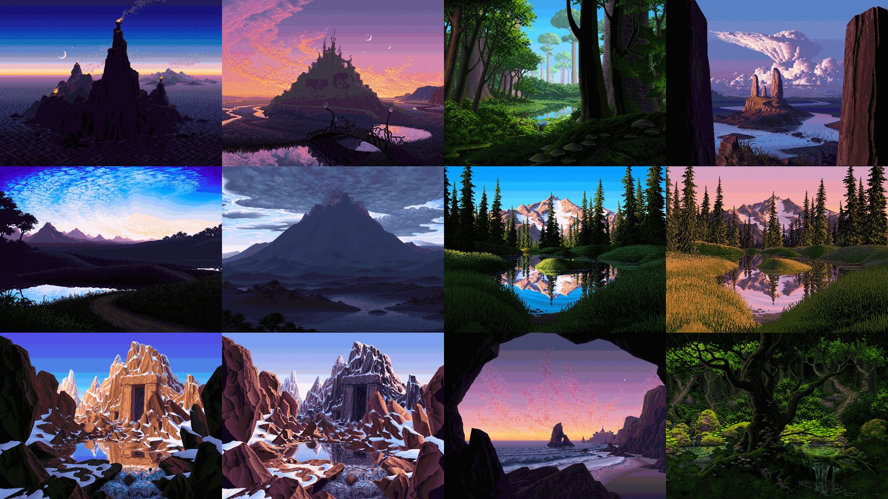
2. elements/driftwood/scratch/lw_contact.pngBash: Crop candidate Ferrari trunk regions
cd ~/work/pixelart-studies/pedagogy/master-copy/ref/lw; python3 -c "
from PIL import Image
D='~/work/pixelart-studies/elements/driftwood/scratch/'
def c(f,box,s,o):
im=Image.open(f).crop(box); im.resize((im.width*s,im.height*s),Image.NEAREST).save(D+o)
c('V02.png',(170,330,470,460),4,'v02_fallen.png')
c('V30.png',(200,120,480,400),3,'v30_trunk.png')
c('V09.png',(250,0,520,480),2,'v09_trunks.png')
"
# output:
(Bash completed with no output)Read: elements/driftwood/scratch/v02_fallen.png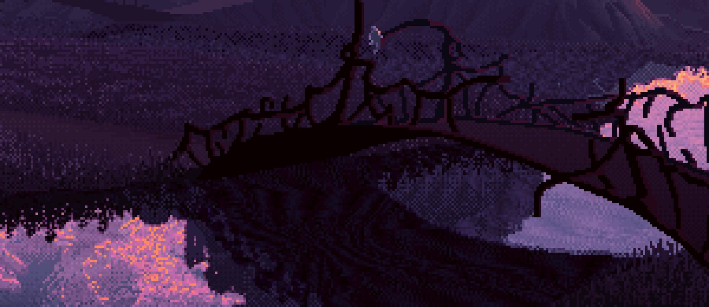
3. elements/driftwood/scratch/v02_fallen.pngRead: elements/driftwood/scratch/v30_trunk.png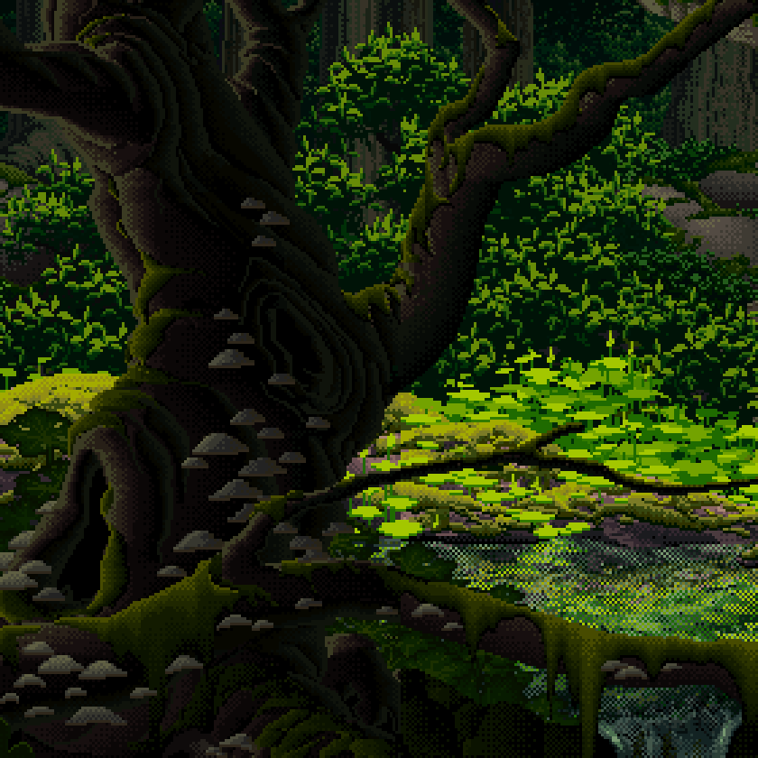
4. elements/driftwood/scratch/v30_trunk.pngRead: elements/driftwood/scratch/v09_trunks.png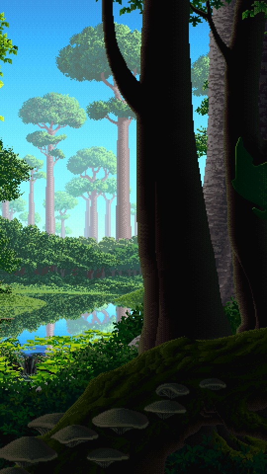
5. elements/driftwood/scratch/v09_trunks.pngBash: Zoom pale and grey trunks and V02 fallen trunk
cd ~/work/pixelart-studies/pedagogy/master-copy/ref/lw; python3 -c "
from PIL import Image
D='~/work/pixelart-studies/elements/driftwood/scratch/'
def c(f,box,s,o):
im=Image.open(f).crop(box); im.resize((im.width*s,im.height*s),Image.NEAREST).save(D+o)
c('V09.png',(330,100,395,250),6,'v09_pale.png')
c('V09.png',(450,20,530,300),4,'v09_grey.png')
c('V02.png',(240,370,420,420),8,'v02_trunk8.png')
"
# output:
(Bash completed with no output)Read: elements/driftwood/scratch/v09_pale.png 6. elements/driftwood/scratch/v09_pale.png
6. elements/driftwood/scratch/v09_pale.png
Read: elements/driftwood/scratch/v09_grey.png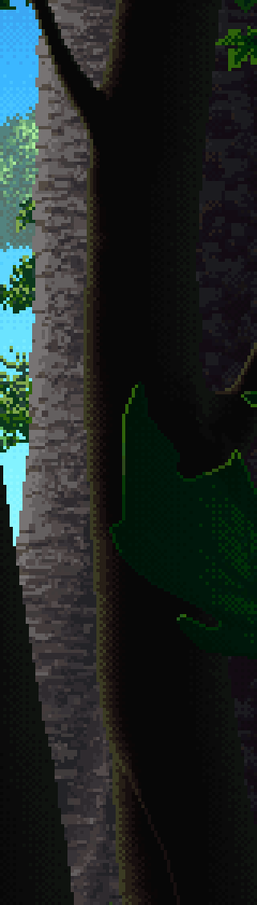
7. elements/driftwood/scratch/v09_grey.pngRead: elements/driftwood/scratch/v02_trunk8.png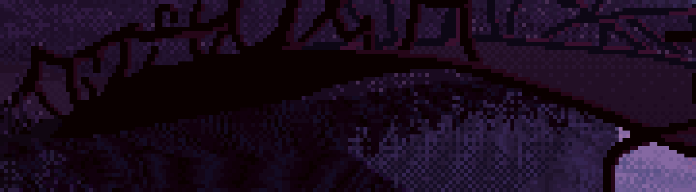
8. elements/driftwood/scratch/v02_trunk8.pngBash: Convert shared refs for viewing
cd ~/work/pixelart-studies/shared/refs; python3 -c "
from PIL import Image
for f in ['ferrari_mossy_forest_pool.png','ferrari_snow_forest_boulders.webp','ferrari_alpine_tarn_dusk.png']:
im=Image.open(f); print(f, im.size)
im.convert('RGB').save('~/work/pixelart-studies/elements/driftwood/scratch/'+f.split('.')[0]+'.png')
"
# output:
ferrari_mossy_forest_pool.png (1244, 920)
ferrari_snow_forest_boulders.webp (1230, 930)
ferrari_alpine_tarn_dusk.png (1268, 938)Read: elements/driftwood/scratch/ferrari_mossy_forest_pool.pngRead: elements/driftwood/scratch/ferrari_snow_forest_boulders.png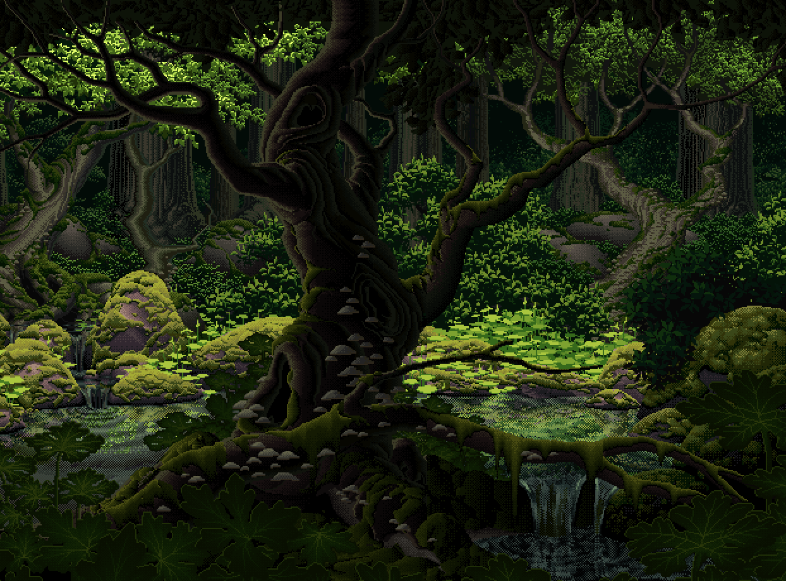
9. elements/driftwood/scratch/ferrari_mossy_forest_pool.png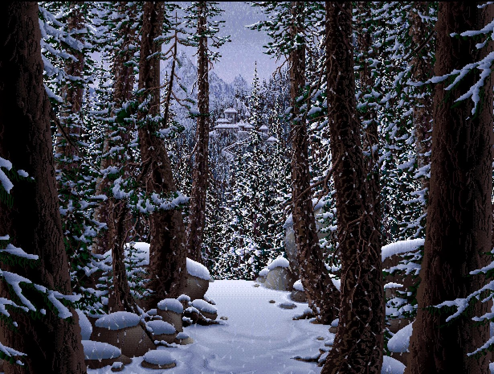
10. elements/driftwood/scratch/ferrari_snow_forest_boulders.pngBash: Zoom grey trunk and snow forest trunk
cd ~/work/pixelart-studies/elements/driftwood/scratch; python3 -c "
from PIL import Image
im=Image.open('ferrari_mossy_forest_pool.png'); im=im.resize((im.width//2,im.height//2),Image.NEAREST)
c=im.crop((440,90,560,240)); c.resize((c.width*6,c.height*6),Image.NEAREST).save('mp_greytrunk.png')
im2=Image.open('ferrari_snow_forest_boulders.png'); im2=im2.resize((im2.width//2,im2.height//2),Image.NEAREST)
c=im2.crop((400,150,480,330)); c.resize((c.width*5,c.height*5),Image.NEAREST).save('sf_trunk.png')
"
# output:
(Bash completed with no output)Read: elements/driftwood/scratch/mp_greytrunk.png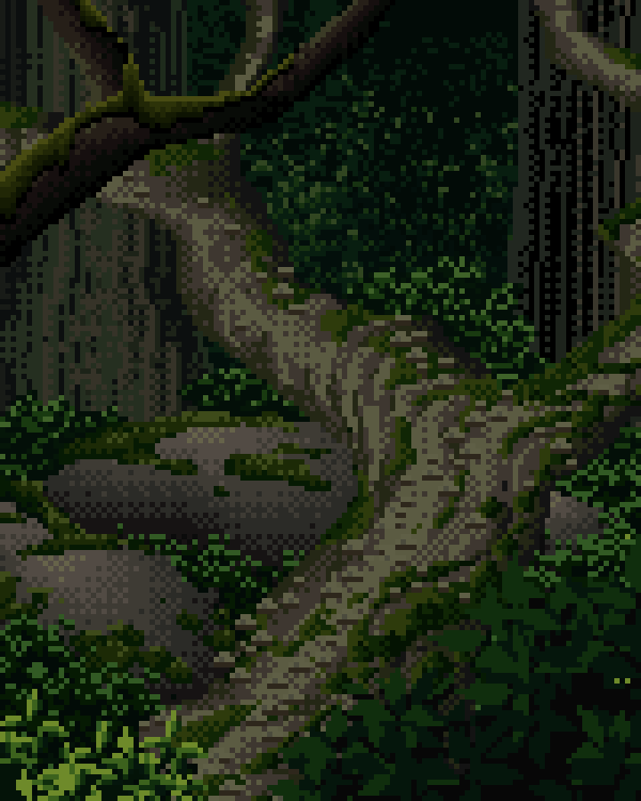
11. elements/driftwood/scratch/mp_greytrunk.pngRead: elements/driftwood/scratch/sf_trunk.png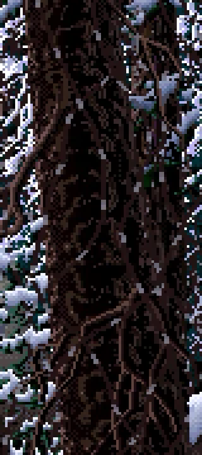
12. elements/driftwood/scratch/sf_trunk.pngBash: Fetch driftwood reference photos
cd ~/work/pixelart-studies/elements/driftwood; sed -n 1,40p ../../tools/imgfetch.py; for q in "driftwood gravel bar river" "driftwood log close" "root wad"; do nice -n 10 python3 ../../tools/imgfetch.py "$q" -n 12 -o refs --sheet 2>&1 | tail -3; done; ls refs
# output:
#!/usr/bin/env python3
"""imgfetch: fast, polite reference-image sourcing (Wikimedia Commons + Openverse).
python3 imgfetch.py "cinder cone scoria slope" -n 12 -o refs/cinder
python3 imgfetch.py -f queries.txt -n 8 -o refs # one query per line; subdir per query
options: --src commons,openverse --width 1200 --sheet (writes <out>/_sheet.jpg)
Writes images plus <out>/sources.tsv (file, title, license, author, page url).
Cached: files already present are skipped. Handles 429/5xx with Retry-After backoff.
Parallel downloads (4 workers) with a shared per-host rate limiter (~3 req/s; Wikimedia's media
host is kept to 1 per 2 s and slows further on any 429, since it throttles hard per IP after bursts).
Openverse (mostly Flickr-hosted CC images) is the primary source because it stays fast.
"""
import argparse, concurrent.futures as cf, json, os, re, sys, threading, time, urllib.error, urllib.parse, urllib.request
UA = "pixelart-studies-imgfetch/1.0 (research; contact: local)"
_locks = {}; _last = {}; _glock = threading.Lock()
SLOW_HOSTS = {"upload.wikimedia.org": 2.0} # Wikimedia media host: ~1 req/s or it 429s
def _throttle(host, min_gap=0.34):
min_gap = SLOW_HOSTS.get(host, min_gap)
with _glock:
lk = _locks.setdefault(host, threading.Lock())
with lk:
dt = time.time() - _last.get(host, 0)
if dt < min_gap:
time.sleep(min_gap - dt)
_last[host] = time.time()
def get(url, tries=4, timeout=25):
host = urllib.parse.urlparse(url).netloc
if host == "upload.wikimedia.org":
tries = 2 # fail fast; other sources fill in
for i in range(tries):
_throttle(host)
try:
req = urllib.request.Request(url, headers={"User-Agent": UA})
return urllib.request.urlopen(req, timeout=timeout).read()
except urllib.error.HTTPError as e:
download failed: HTTP Error 429: Too many requests - please contact noc@wikimedia.org to discuss a less disruptive approach or instead use thumbnail images in sizes listed on https://w.wiki/GHai. (0c640b1)
'driftwood gravel bar river': 9 images -> refs
download failed: HTTP Error 429: Too many requests - please contact noc@wikimedia.org to discuss a less disruptive approach or instead use thumbnail images in sizes listed on https://w.wiki/GHai. (0c640b1)
download failed: HTTP Error 429: Too many requests - please contact noc@wikimedia.org to discuss a less disruptive approach or instead use thumbnail images in sizes listed on https://w.wiki/GHai. (0c640b1)
'driftwood log close': 10 images -> refs
'root wad': 11 images -> refs
_sheet.jpg
commons_Bregenz_Wocherhafen_autumn_driftwood_02ASD_jpg_61bd6840.jpg
commons_Bregenz_Wocherhafen_autumn_driftwood_07ASD_jpg_ecf8a3fb.jpg
commons_Cliffs_and_driftwood_at_St_ngehuvud_b_jpg_10933a5d.jpg
commons_Driftwood_8084_jpg_94f0d490.jpg
commons_Logs_with_root_wads_still_attached_are_being_sto_f201e149.jpg
commons_Paul_Kennington_placing_root_wad_10348845426_jpg_Read: elements/driftwood/refs/_sheet.jpg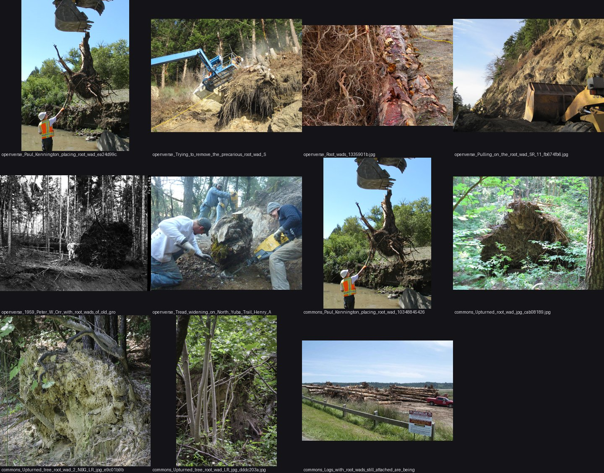
13. elements/driftwood/refs/_sheet.jpgBash: Contact sheet of driftwood photos
cd ~/work/pixelart-studies/elements/driftwood/refs; python3 -c "
from PIL import Image
import glob
fs=[f for f in sorted(glob.glob('*.jpg')) if not f.startswith('_') and any(k in f.lower() for k in ['drift','bowling','french','whitehead','hoh','gravel','shark','cliffs','bird','coastal','surreal'])]
print(len(fs))
S=Image.new('RGB',(4*400,((len(fs)+3)//4)*300))
for i,f in enumerate(fs):
im=Image.open(f).convert('RGB'); im.thumbnail((400,300)); S.paste(im,((i%4)*400,(i//4)*300)); print(i,f)
S.save('../scratch/drift_contact.jpg')
"
# output:
17
0 commons_Bregenz_Wocherhafen_autumn_driftwood_02ASD_jpg_61bd6840.jpg
1 commons_Bregenz_Wocherhafen_autumn_driftwood_07ASD_jpg_ecf8a3fb.jpg
2 commons_Cliffs_and_driftwood_at_St_ngehuvud_b_jpg_10933a5d.jpg
3 commons_Driftwood_8084_jpg_94f0d490.jpg
4 commons_Shark_scare_535163908_jpg_3797e0fd.jpg
5 openverse_Alexandria_Bird_Attack_98b1cfc0.jpg
6 openverse_At_Bowling_Ball_Beach_497690c3.jpg
7 openverse_At_Bowling_Ball_Beach_6803d21f.jpg
8 openverse_Coastal_driftwood_logs_piggie_face_barrier_rock__56db129c.jpg
9 openverse_Driftwood_c85ce628.jpg
10 openverse_Driftwood_log_on_sand_in_wind_7550a86a.jpg
11 openverse_Driftwood_on_Gravel_bar_540722fe.jpg
12 openverse_Driftwood_on_Gravel_bar_edited_edae10ca.jpg
13 openverse_French_Beach_Log_ddc9a4ce.jpg
14 openverse_Surrealism_in_life_Frogman_and_Ballet_Dancer_wit_aaa786e6.jpg
15 openverse_Whitehead_Vista_238f6bd4.jpg
16 openverse_gravel_bar_on_the_Hoh_River_aafcd447.jpgRead: elements/driftwood/scratch/drift_contact.jpg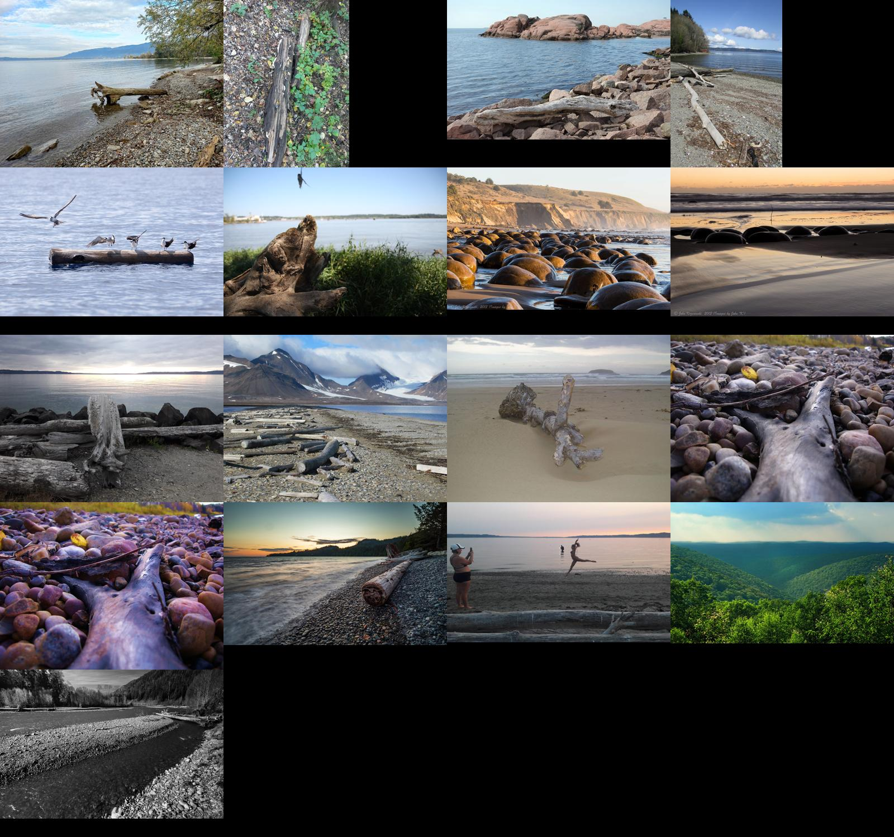
14. elements/driftwood/scratch/drift_contact.jpgRead: elements/driftwood/refs/openverse_Driftwood_on_Gravel_bar_540722fe.jpg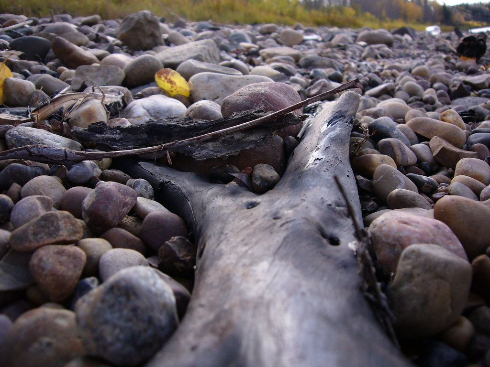
15. elements/driftwood/refs/openverse_Driftwood_on_Gravel_bar_540722fe.jpgBash: Crop main driftwood photo regions
cd ~/work/pixelart-studies/elements/driftwood; python3 -c "
from PIL import Image
im=Image.open('../../transfer/refs/braided_driftwood_bar.jpg'); print(im.size)
im.crop((300,440,640,680)).resize((680,480)).save('scratch/photo_bigLog.png')
im.crop((0,330,560,480)).resize((1120,300)).save('scratch/photo_pile.png')
"
# output:
(1024, 768)Read: elements/driftwood/scratch/photo_bigLog.pngRead: elements/driftwood/scratch/photo_pile.png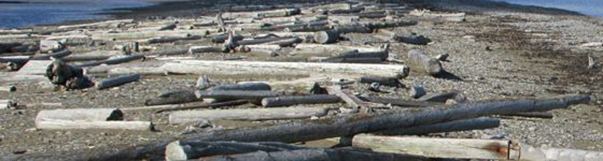
16. elements/driftwood/scratch/photo_pile.png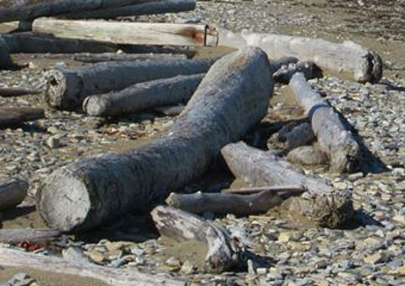
17. elements/driftwood/scratch/photo_bigLog.pngBash: Skim analysis/observation lesson headings
cd ~/work/pixelart-studies/pedagogy; grep -n "^#\|contact\|cast shadow" analysis/LESSONS.md | head -60; grep -n "^#" observation/LESSONS.md | head -30 # output: 1:# Learning to paint like Mark Ferrari: a study of *Alpine Tarn at Dusk* 18:## 1. The analysis 20:### 1.1 Planes and big masses (`img/02_planes.png`) 41:### 1.2 Value structure (`img/03_grey.png`, `img/03_notan.png`, `img/03_valueplanes.png`, `img/03_valueplan.png`) 74: cast shadow. 76:### 1.3 Light (`img/05_lightmap.png`, `img/05_light_mountain.png`, `img/05_light_tree.png`, `img/07_profiles.png`) 102:### 1.4 Form (`img/07_form.png`, `img/07_form_mid.png`, `img/07_profiles.png`) 119:### 1.5 Edges (`img/08_edges.png`) 139:### 1.6 Cluster shapes (`img/09_cluster_atlas.png`, `img/11_checker_map.png`, magnified crops `img/c_*.png`) 166:### 1.7 Palette (`img/10_palette_groups.png`, `img/10_palette_ab.png`) 186:### 1.8 Depth (`img/12_depth.png`) 208:### 1.9 Pixel geometry: runs, steps and the bottoms of masses (`src/contours.py`, `img/c_island_bottom.png`, `img/c_hummock_base.png`, `img/c_stones.png`) 221:**masses meet level ground or water in a dead-flat horizontal run**, with a 1-px darker contact 228:## 2. What it means: the method as a painter would teach it 261:contacts are flat. The pixel grid is embraced as a drawing language, not hidden, so shapes look 284:## 3. The method (`src/paint/ferrari_method.py`, `src/paint/pixelgeo.py`, `src/paint/sheets.py`) 305:### The pipeline, with the analysis finding behind each step 354: segments. **Every mass that meets water gets a flat, 1-px dark contact line**, and the boulder 381:### The palette (32 colours, chosen per material) 393:### Sheets (`sheets/`) 407:## 4. Checking the sheets with the same analyses (`src/check_sheets.py`, `src/compare_plates.py`) 431:### Analysis by analysis 471:half-tone zones, a core shadow, a sky-lit shadow top, a flat water contact with a dark lip, and a 518:flat base and a dark contact line at the water. The crest is a clean polyline, stones are 527:## 5. What I would do next 1:# Observation first, then translation: a boulder at a tarn, at dusk 21:## 1. The photographs 36:## 2. What is actually there 41:### Light on a rounded boulder (r02, r19, r10) 57:### Grass masses (r20, r22, r23) 69:### Where the bank meets the water, and reflections (r19, r25, r18) 81:### Distance (r11, r12; resampling in `measurements.png` panel D) 87:### Value structure (`studies/blockin_*.png`) 92:## 3. How Ferrari translates these things 121:## 4. The translation studies (the step that made the method work) 154:## 5. The method (`tarn.py`) 194:## 6. Honest comparison
Now let me write the core technique module, starting with geometry and form.
Write: elements/driftwood/src/geo.py
"""geo.py -- the world the painter needs, and no more.
World: Z up, ground is the plane z = 0 (gravel). Logs are chains of round cones, cut flat
(sawn) or jagged (snapped / splintered) at their ends. Rendered with an orthographic camera by
sphere tracing, so silhouettes of straight trunks come out as straight lines (clean runs).
Buffers produced per pixel (all float/int arrays H x W):
obj object id (-1 = ground) part 0 side, 1 end face (sawn / break), 2 inner wall,
P world position N world normal
s arc length along the log (m) th angle around the axis (0 = up)
rho radial distance / radius on end faces
t ray depth
"""
import numpy as np
def norm(v):
return v / (np.linalg.norm(v, axis=-1, keepdims=True) + 1e-12)
class Camera:
"""orthographic camera: pitch = angle below horizontal (deg), yaw = compass direction the
camera looks toward (deg, 0 = +y), scale = px per metre, look = world point at image centre."""
def __init__(self, W, H, scale, pitch=30.0, yaw=0.0, look=(0, 0, 0)):
self.W, self.H, self.scale = W, H, scale
p, y = np.radians(pitch), np.radians(yaw)
self.f = np.array([np.cos(p) * np.sin(y), np.cos(p) * np.cos(y), -np.sin(p)])
self.r = np.array([np.cos(y), -np.sin(y), 0.0])
self.u = np.cross(self.r, self.f)
self.look = np.array(look, float)
self.pitch = pitch
def rays(self):
jj, ii = np.meshgrid(np.arange(self.W) + 0.5, np.arange(self.H) + 0.5)
X = (jj - self.W / 2) / self.scale
Y = (self.H / 2 - ii) / self.scale
O = self.look + X[..., None] * self.r + Y[..., None] * self.u - self.f * 60.0
D = np.broadcast_to(self.f, O.shape)
return O, D
def project(self, P):
P = np.atleast_2d(P) - self.look
x = P @ self.r * self.scale + self.W / 2
y = self.H / 2 - P @ self.u * self.scale
return x, y
def sd_round_cone(p, a, b, r1, r2):
"""iq's exact round-cone SDF, vectorised. p: (..., 3)."""
ba = b - a
l2 = ba @ ba
rr = r1 - r2
a2 = l2 - rr * rr
il2 = 1.0 / l2
pa = p - a
y = pa @ ba
z = y - l2
q = pa * l2 - y[..., None] * ba
x2 = np.einsum('...i,...i', q, q)
y2 = y * y * l2
z2 = z * z * l2
k = np.sign(rr) * rr * rr * x2
d3 = (np.sqrt(np.maximum(x2 * a2 * il2, 0)) + y * rr) * il2 - r1
d1 = np.sqrt(x2 + z2) * il2 - r2
d2 = np.sqrt(x2 + y2) * il2 - r1
return np.where(np.sign(z) * a2 * z2 > k, d1, np.where(np.sign(y) * a2 * y2 < k, d2, d3))
def sd_ellipsoid(p, c, R, axes):
"""approximate ellipsoid SDF (iq's bound). axes: 3x3 rows = unit axes, R = radii."""
q = (p - c) @ axes.T
k0 = np.linalg.norm(q / R, axis=-1)
k1 = np.linalg.norm(q / (R * R), axis=-1)
return k0 * (k0 - 1.0) / (k1 + 1e-9)
def smin(a, b, k):
h = np.clip(0.5 + 0.5 * (b - a) / k, 0, 1)
return b * (1 - h) + a * h - k * h * (1 - h)
class Log:
"""a trunk: polyline of axis points pts (n x 3) with radii rad (n). ends: 'sawn' | 'snapped' |
'splinter' for the start (0) and finish (1) ends. stubs: list of (s_frac, theta, length,
radius_frac, tilt) branch stubs. rootwad: None or dict(r=..., depth=..., end=0)."""
def __init__(self, pts, rad, ends=('sawn', 'snapped'), stubs=(), rootwad=None, seed=0,
kind='drift', wet=0.0):
self.pts = np.asarray(pts, float)
self.rad = np.asarray(rad, float)
self.ends = ends
self.stubs = list(stubs)
self.rootwad = rootwad
self.seed = seed
self.kind = kind # 'drift' (silvered) or 'bark' (fresh)
self.wet = wet
seg = np.diff(self.pts, axis=0)
self.seglen = np.linalg.norm(seg, axis=1)
self.cum = np.concatenate([[0], np.cumsum(self.seglen)])
self.L = self.cum[-1]
rng = np.random.default_rng(seed)
# jagged-end profiles: spikes as a function of theta (a few long teeth, many short)
self.jag = []
for e in (0, 1):
kind_e = ends[e]
n = 64
prof = np.zeros(n)
if kind_e in ('snapped', 'splinter'):
r_end = self.rad[0 if e == 0 else -1]
nt = rng.integers(3, 6) if kind_e == 'snapped' else rng.integers(5, 9)
amp = (0.6 if kind_e == 'snapped' else 2.2) * r_end
for _ in range(nt):
c = rng.uniform(0, 2 * np.pi)
w = rng.uniform(0.15, 0.5) if kind_e == 'snapped' else rng.uniform(0.08, 0.25)
h = amp * rng.uniform(0.3, 1.0)
ang = np.linspace(0, 2 * np.pi, n, endpoint=False)
dd = np.angle(np.exp(1j * (ang - c)))
prof = np.maximum(prof, h * np.clip(1 - np.abs(dd) / w, 0, 1))
prof += 0.08 * r_end * rng.random(n)
self.jag.append(prof)
# stub primitives
self.stub_prims = []
for (sf, th, ln, rf, tilt) in self.stubs:
p0, ax, r0, frame = self.frame_at(sf * self.L)
e1, e2 = frame
dirv = np.cos(th) * e2 + np.sin(th) * e1 # e2 ~ up
dirv = norm(dirv + ax * tilt)
a = p0 + dirv * r0 * 0.5
b = p0 + dirv * (r0 + ln)
self.stub_prims.append((a, b, r0 * rf, r0 * rf * 0.6))
def frame_at(self, s):
i = int(np.clip(np.searchsorted(self.cum, s) - 1, 0, len(self.seglen) - 1))
f = (s - self.cum[i]) / self.seglen[i]
p = self.pts[i] * (1 - f) + self.pts[i + 1] * f
r = self.rad[i] * (1 - f) + self.rad[i + 1] * f
ax = (self.pts[i + 1] - self.pts[i]) / self.seglen[i]
up = np.array([0, 0, 1.0])
e1 = norm(np.cross(up, ax)) # horizontal side
e2 = np.cross(ax, e1) # 'up' around the axis
return p, ax, r, (e1, e2)
def ends_frames(self):
a0 = norm(self.pts[1] - self.pts[0])
a1 = norm(self.pts[-1] - self.pts[-2])
return (self.pts[0], -a0), (self.pts[-1], a1)
def local(self, p):
"""(s, theta, rho, axis-dist) of points p relative to the polyline."""
best = np.full(p.shape[:-1], np.inf)
S = np.zeros(p.shape[:-1]); TH = np.zeros_like(S); RR = np.zeros_like(S)
for i in range(len(self.seglen)):
a, b = self.pts[i], self.pts[i + 1]
ax = (b - a) / self.seglen[i]
t = np.clip((p - a) @ ax, 0, self.seglen[i])
c = a + t[..., None] * ax
v = p - c
d = np.linalg.norm(v, axis=-1)
up = np.array([0, 0, 1.0])
e1 = norm(np.cross(up, ax)); e2 = np.cross(ax, e1)
th = np.arctan2(v @ e1, v @ e2)
rloc = self.rad[i] + (self.rad[i + 1] - self.rad[i]) * t / self.seglen[i]
m = d < best
best = np.where(m, d, best)
S = np.where(m, self.cum[i] + (p - a) @ ax, S)
TH = np.where(m, th, TH)
RR = np.where(m, d / rloc, RR)
return S, TH, RR, best
def sdf_body(self, p):
d = np.full(p.shape[:-1], np.inf)
n = len(self.pts)
for i in range(n - 1):
a, b = self.pts[i].copy(), self.pts[i + 1].copy()
ax = (b - a) / self.seglen[i]
# extend terminal segments so the end cuts make flat / jagged faces
if i == 0:
a = a - ax * (self.rad[0] + 0.01)
if i == n - 2:
b = b + ax * (self.rad[-1] + 3.0 * self.rad[-1])
d = np.minimum(d, sd_round_cone(p, a, b, self.rad[i], self.rad[i + 1]))
return d
def cut(self, p, d):
"""intersect with the end half-spaces; jagged ends modulate the cut by theta."""
parts = np.zeros(p.shape[:-1], int)
for e, ((c, out), prof) in enumerate(zip(self.ends_frames(), self.jag)):
up = np.array([0, 0, 1.0])
e1 = norm(np.cross(up, out)); e2 = np.cross(out, e1)
v = p - c
th = np.arctan2(v @ e1, v @ e2)
idx = ((th % (2 * np.pi)) / (2 * np.pi) * len(prof)).astype(int) % len(prof)
lim = prof[idx]
dc = v @ out - lim
parts = np.where(dc > d, e + 1, parts)
d = np.maximum(d, dc)
return d, parts
def sdf(self, p, with_parts=False):
d = self.sdf_body(p)
d, parts = self.cut(p, d)
for (a, b, r1, r2) in self.stub_prims:
ds = sd_round_cone(p, a, b, r1, r2)
dnew = smin(d, ds, r1 * 0.6)
parts = np.where(ds < d, 3, parts)
d = dnew
if self.rootwad is not None:
rw = self.rootwad
c, out = self.ends_frames()[rw.get('end', 0)]
r0 = self.rad[0 if rw.get('end', 0) == 0 else -1]
up = np.array([0, 0, 1.0])
e1 = norm(np.cross(up, out)); e2 = np.cross(out, e1)
cc = c + out * rw['depth'] * 0.5 + np.array([0, 0, rw.get('lift', 0.0)])
axes = np.stack([out, e1, e2])
R = np.array([rw['depth'], rw['r'], rw['r'] * rw.get('squash', 0.9)])
de = sd_ellipsoid(p, cc, R, axes)
parts = np.where(de < d, 4, parts)
d = smin(d, de, r0 * 0.8)
if with_parts:
return d, parts
return d
def bound(self):
lo = self.pts.min(0) - self.rad.max() * 4
hi = self.pts.max(0) + self.rad.max() * 4
for (a, b, r1, r2) in self.stub_prims:
lo = np.minimum(lo, np.minimum(a, b) - r1); hi = np.maximum(hi, np.maximum(a, b) + r1)
if self.rootwad is not None:
R = self.rootwad['r'] * 1.2 + self.rootwad['depth']
lo -= R; hi += R
c = 0.5 * (lo + hi)
return c, np.linalg.norm(hi - lo) * 0.5
def trace(cam, logs, steps=96):
"""sphere-trace all logs; ground plane analytic. Returns dict of buffers."""
O, D = cam.rays()
H, W = cam.H, cam.W
d = cam.f
# ground hit
tg = -O[..., 2] / d[2]
tbest = tg.copy()
obj = np.full((H, W), -1)
part = np.zeros((H, W), int)
for k, lg in enumerate(logs):
c, R = lg.bound()
# screen bbox of the bounding sphere
sx, sy = cam.project(c)
rp = R * cam.scale + 2
x0, x1 = int(max(0, sx[0] - rp)), int(min(W, sx[0] + rp + 1))
y0, y1 = int(max(0, sy[0] - rp)), int(min(H, sy[0] + rp + 1))
if x0 >= x1 or y0 >= y1:
continue
o = O[y0:y1, x0:x1].reshape(-1, 3)
# start at the bounding sphere entry
oc = o - c
bq = oc @ d
cq = np.einsum('ij,ij->i', oc, oc) - R * R
disc = bq * bq - cq
ok = disc > 0
t = np.where(ok, -bq - np.sqrt(np.maximum(disc, 0)), np.inf)
tmax = np.minimum(np.where(ok, -bq + np.sqrt(np.maximum(disc, 0)), -np.inf),
tbest[y0:y1, x0:x1].reshape(-1))
act = ok & (t < tmax)
hit = np.zeros(len(o), bool)
eps = 0.2 / cam.scale
for _ in range(steps):
if not act.any():
break
ia = np.nonzero(act)[0]
p = o[ia] + t[ia, None] * d
dist = lg.sdf(p)
t[ia] += dist * 0.8
h = dist < eps
hit[ia[h]] = True
act[ia[h]] = False
far = t[ia] > tmax[ia]
act[ia[far]] = False
tt = np.where(hit, t, np.inf).reshape(y1 - y0, x1 - x0)
m = tt < tbest[y0:y1, x0:x1]
tbest[y0:y1, x0:x1] = np.where(m, tt, tbest[y0:y1, x0:x1])
obj[y0:y1, x0:x1] = np.where(m, k, obj[y0:y1, x0:x1])
P = O + tbest[..., None] * d
N = np.zeros_like(P); N[..., 2] = 1.0
s = np.zeros((H, W)); th = np.zeros((H, W)); rho = np.zeros((H, W))
for k, lg in enumerate(logs):
m = obj == k
if not m.any():
continue
p = P[m]
e = 0.3 / cam.scale
g = np.stack([lg.sdf(p + np.array([e, 0, 0])) - lg.sdf(p - np.array([e, 0, 0])),
lg.sdf(p + np.array([0, e, 0])) - lg.sdf(p - np.array([0, e, 0])),
lg.sdf(p + np.array([0, 0, e])) - lg.sdf(p - np.array([0, 0, e]))], -1)
N[m] = norm(g)
_, pr = lg.sdf(p, with_parts=True)
part[m] = pr
S, TH, RR, _ = lg.local(p)
s[m], th[m], rho[m] = S, TH, RR
return dict(obj=obj, part=part, P=P, N=N, s=s, th=th, rho=rho, t=tbest, cam=cam, logs=logs)
def shadow(buf, sun, logs, steps=48):
"""cast shadows: march from each surface point toward the sun against all logs."""
P = buf['P']; H, W = P.shape[:2]
cam = buf['cam']
L = norm(np.asarray(sun, float))
sh = np.zeros((H, W), bool)
p0 = (P + buf['N'] * (0.6 / cam.scale)).reshape(-1, 3)
flat = sh.reshape(-1)
for k, lg in enumerate(logs):
c, R = lg.bound()
# candidate points: those whose sun-ray passes within R of c
oc = p0 - c
bq = oc @ L
cq = np.einsum('ij,ij->i', oc, oc) - R * R
disc = bq * bq - cq
cand = (disc > 0) & ((-bq + np.sqrt(np.maximum(disc, 0))) > 0) & ~flat
if not cand.any():
continue
ia = np.nonzero(cand)[0]
o = p0[ia]
t = np.maximum(0, -bq[ia] - np.sqrt(disc[ia]))
tmax = -bq[ia] + np.sqrt(disc[ia])
act = np.ones(len(ia), bool)
hit = np.zeros(len(ia), bool)
for _ in range(steps):
if not act.any():
break
jb = np.nonzero(act)[0]
dist = lg.sdf(o[jb] + t[jb, None] * L)
t[jb] += np.maximum(dist * 0.9, 0.05 / cam.scale)
h = dist < 0.15 / cam.scale
hit[jb[h]] = True; act[jb[h]] = False
act[jb[t[jb] > tmax[jb]]] = False
flat[ia[hit]] = True
# a surface facing away is not 'cast shadow' but form shadow; keep both separately
return sh
def occlusion(buf, logs, radius_m):
"""cheap contact occlusion for ground points: distance to nearest log surface."""
P = buf['P']
dmin = np.full(P.shape[:2], np.inf)
g = buf['obj'] == -1
p = P[g]
dd = np.full(len(p), np.inf)
for lg in logs:
dd = np.minimum(dd, lg.sdf(p))
dmin[g] = dd
return dmin
Write: elements/driftwood/src/paint.py
"""paint.py -- step-space painting for driftwood on gravel.
Index canvas: two arrays, mat (material id) and x (continuous step coordinate on that
material's ramp). Marks add offsets to x; contact lines and cracks set x to hard values.
quantize() mixes only adjacent steps of one ramp with an ordered 2x2 dither.
Wood ramp (8 steps): 0 contact/crack | 1 core | 2 shadow | 3 reflected || 4 halftone | 5 light | 6 top | 7 end-face / glint
Gravel ramp (8 steps): same plan, keyed a step lower than wood so pale logs read against it.
"""
import numpy as np
from geo import norm
WOOD, GRAVEL, RAW, BARK, SAND = 0, 1, 2, 3, 4
BAYER2 = np.array([[0.125, 0.625], [0.875, 0.375]])
BAYER4 = np.array([[0, 8, 2, 10], [12, 4, 14, 6], [3, 11, 1, 9], [15, 7, 13, 5]]) / 16 + 1 / 32
def value_noise(H, W, cell, rng, octaves=1):
out = np.zeros((H, W))
amp = 1.0; tot = 0
for o in range(octaves):
c = max(1, cell / (2 ** o))
gh, gw = int(H / c) + 3, int(W / c) + 3
g = rng.random((gh, gw))
yy = np.arange(H) / c; xx = np.arange(W) / c
y0 = yy.astype(int); x0 = xx.astype(int)
fy = (yy - y0)[:, None]; fx = (xx - x0)[None, :]
fy = fy * fy * (3 - 2 * fy); fx = fx * fx * (3 - 2 * fx)
a = g[y0][:, x0]; b = g[y0][:, x0 + 1]; cc = g[y0 + 1][:, x0]; d = g[y0 + 1][:, x0 + 1]
out += amp * (a * (1 - fx) * (1 - fy) + b * fx * (1 - fy) + cc * (1 - fx) * fy + d * fx * fy)
tot += amp; amp *= 0.5
return out / tot
def hash2(a, b, seed=0):
"""deterministic pseudo-random in [0,1) from integer arrays."""
h = (np.asarray(a, np.int64) * 374761393 + np.asarray(b, np.int64) * 668265263 + seed * 144269504) & 0xFFFFFFFF
h = (h ^ (h >> 13)) * 1274126177 & 0xFFFFFFFF
h = h ^ (h >> 16)
return (h & 0xFFFFFF) / float(0x1000000)
class Light:
"""designed light. az: compass direction the sun comes FROM relative to the camera
(0 = from behind the camera / front light, 90 = from the right, 180 = back light, 270 = left);
el: elevation in degrees."""
def __init__(self, cam, az=300.0, el=40.0, overcast=False):
a, e = np.radians(az), np.radians(el)
back = -cam.f * np.array([1, 1, 0]); back = back / np.linalg.norm(back)
right = cam.r
hor = np.cos(a) * back + np.sin(a) * right
self.L = norm(hor * np.cos(e) + np.array([0, 0, 1.0]) * np.sin(e))
self.overcast = overcast
self.az, self.el = az, el
def form_wood(buf, light, sh, terminator=0.12):
"""two value families on the wood. returns x (step coordinate) for all pixels."""
N = buf['N']
ndl = N @ light.L
up = N[..., 2]
lit = (ndl > terminator) & ~sh
# light family 4..7 : halftone at grazing, top at full
f = np.clip((ndl - terminator) / (0.85 - terminator), 0, 1)
xl = 4.0 + 2.7 * f ** 0.8
# shadow family 0.8..3.4: core just past the terminator, sky fill on up-facing, bounce
# from the pale gravel on down-facing (the reflected light never reaches the halftone)
sky = np.clip(up, 0, 1)
bounce = np.clip(-up, 0, 1)
core = np.exp(-((ndl - terminator * 0.3) / 0.22) ** 2) # band just past terminator
xs = 1.4 + 1.1 * sky + 1.4 * bounce ** 0.7 - 0.7 * core
# a cast-shadowed surface that faces the sun keeps a little more (sky + it is a top)
xs = np.where(sh & (ndl > terminator), xs + 0.4, xs)
xs = np.clip(xs, 0.8, 3.45)
if light.overcast:
x = 1.6 + 3.8 * np.clip(0.5 + 0.5 * up, 0, 1) ** 1.3
return x, np.ones_like(lit)
return np.where(lit, xl, xs), lit
def gravel_field(buf, rng, stone_m=0.07, seed=0, spread=0.6):
"""world-space pebbles on the ground: jittered-grid cells, each a flattened dome.
returns (inside mask, dome normal, stone value offset, cell id)."""
P = buf['P']
X, Y = P[..., 0], P[..., 1]
c = stone_m
gx, gy = np.floor(X / c).astype(int), np.floor(Y / c).astype(int)
best = np.full(X.shape, np.inf); bnx = np.zeros_like(X); bny = np.zeros_like(X)
brad = np.ones_like(X); bid = np.zeros(X.shape, np.int64)
for dy in (-1, 0, 1):
for dx in (-1, 0, 1):
cx, cy = gx + dx, gy + dy
jx = hash2(cx, cy, seed + 1); jy = hash2(cx, cy, seed + 2)
rr = (0.45 + spread * hash2(cx, cy, seed + 3) ** 1.5) * c * 0.62
ang = hash2(cx, cy, seed + 4) * np.pi
el = 0.6 + 0.4 * hash2(cx, cy, seed + 5)
px = (cx + 0.15 + 0.7 * jx) * c; py = (cy + 0.15 + 0.7 * jy) * c
vx, vy = X - px, Y - py
ca, sa = np.cos(ang), np.sin(ang)
u = (vx * ca + vy * sa) / rr
v = (-vx * sa + vy * ca) / (rr * el)
d = np.sqrt(u * u + v * v)
m = d < best
best = np.where(m, d, best)
bnx = np.where(m, u * ca - v * sa, bnx)
bny = np.where(m, u * sa + v * ca, bny)
bid = np.where(m, cx * 7919 + cy, bid)
inside = best < 1.0
nz = np.sqrt(np.clip(1 - best ** 2, 0, 1)) * 0.9 + 0.1
Nst = norm(np.stack([bnx * 0.8, bny * 0.8, nz], -1))
tone = hash2(bid, 1, seed + 9)
return inside, Nst, tone, bid, best
def form_gravel(buf, light, sh, rng, stone_m=0.07, seed=0, occ=None):
"""ground: pebbles as small domes (light top, dark bottom), gaps dark."""
inside, Nst, tone, bid, dist = gravel_field(buf, rng, stone_m, seed)
ndl = Nst @ light.L
up = Nst[..., 2]
ground_ndl = light.L[2]
lit = ~sh
# stone value: its own local tone (albedo) + form
base = 3.4 + 1.3 * (tone - 0.5)
xl = base + 1.4 * np.clip(ndl - ground_ndl * 0.6, -1, 1)
xs = 1.3 + 0.9 * np.clip(up, 0, 1) + 0.7 * (tone - 0.5)
x = np.where(lit, xl, np.minimum(xs, 2.9))
# gaps between stones: dark sand
gap = ~inside
x = np.where(gap, np.where(lit, 2.2, 0.9), x)
if light.overcast:
x = np.where(gap, 1.4, 2.6 + 1.3 * (tone - 0.5) + 1.2 * up)
return x, inside, bid
def quantize(x, bayer=BAYER2, flat_snap=None, nsteps=8):
"""ordered dither between adjacent integer steps."""
H, W = x.shape
by, bx = bayer.shape
th = np.tile(bayer, (H // by + 1, W // bx + 1))[:H, :W]
lo = np.floor(x)
fr = x - lo
q = lo + (fr > th)
return np.clip(q, 0, nsteps - 1).astype(int)
def to_rgb(mat, q, ramps):
out = np.zeros(mat.shape + (3,), np.uint8)
for m, ramp in ramps.items():
sel = mat == m
if sel.any():
r = np.asarray(ramp, np.uint8)
out[sel] = r[np.clip(q[sel], 0, len(r) - 1)]
return out
GREY_WOOD = [int(255 * v) for v in (0.05, 0.15, 0.25, 0.35, 0.56, 0.70, 0.82, 0.93)]
GREY_GRAV = [int(255 * v) for v in (0.04, 0.12, 0.21, 0.30, 0.41, 0.50, 0.58, 0.66)]
GREY_RAMPS = {WOOD: [(g, g, g) for g in GREY_WOOD], GRAVEL: [(g, g, g) for g in GREY_GRAV],
RAW: [(g, g, g) for g in GREY_WOOD], BARK: [(max(0, g - 30),) * 3 for g in GREY_WOOD]}
Bash: Check LW loader and whether forest pool is 2x upscaled
cd ~/work/pixelart-studies/pedagogy/master-copy/src; sed -n 1,60p lwload.py; python3 -c "
from PIL import Image; import numpy as np
im=np.array(Image.open('~/work/pixelart-studies/shared/refs/ferrari_mossy_forest_pool.png').convert('RGB')).astype(int)
print(im.shape, (im[0::2]!=im[1::2]).mean(), (im[:,0::2]!=im[:,1::2]).mean())
for o in (0,1):
print(o,(im[o::2][:-1]!=im[o+1::2][:len(im[o::2])-1]).mean() if o else 0)
"
# output:
import re, json, numpy as np
def load(name):
t=open(f'ref/lw/{name}.json').read()
t=re.sub(r'([{,])\s*([A-Za-z_]+)\s*:', r'\1"\2":', t).replace("'",'"')
d=json.loads(t)
d['pal']=np.array(d['colors'],dtype=np.uint8)
d['idx']=np.array(d['pixels'],dtype=np.int32).reshape(d['height'],d['width'])
return d
(920, 1244, 3) 0.0 0.0
0 0
1 0.5625281671558703Bash: Print V09 index rows across pale trunk
cd ~/work/pixelart-studies/pedagogy/master-copy; python3 -c "
import sys; sys.path.insert(0,'src')
from lwload import load
import numpy as np
d=load('V09'); idx=d['idx']; pal=d['pal']
print(idx.shape)
for y in range(140,200,6):
print(y, ' '.join('%3d'%v for v in idx[y,368:392]))
u=np.unique(idx[120:240,370:392]); print([ (int(i),tuple(int(c) for c in pal[i])) for i in u])
"
# output:
(480, 640)
140 248 132 132 131 131 130 130 129 129 129 128 128 248 248 248 248 248 248 248 248 65 65 66 66
146 132 131 131 131 131 130 130 129 129 129 128 128 248 248 248 248 248 248 248 248 65 65 66 66
152 132 132 131 131 131 130 130 129 130 129 129 128 128 248 248 248 249 248 248 248 65 65 66 66
158 132 131 131 131 131 130 130 130 129 129 129 128 128 249 249 249 249 249 249 249 65 65 66 66
164 132 132 131 131 131 130 130 129 130 129 129 128 128 249 249 249 249 249 249 249 65 65 66 66
170 132 132 131 131 131 130 130 130 129 129 129 128 128 249 249 249 249 249 249 249 65 65 66 66
176 132 132 131 131 131 130 130 129 130 129 129 128 128 250 250 249 250 250 250 249 65 65 66 66
182 132 131 131 131 131 130 130 130 129 129 129 128 128 250 250 250 250 250 250 250 65 65 66 66
188 132 132 131 131 131 130 130 129 130 129 129 128 128 192 250 250 250 250 250 250 65 65 66 66
194 132 132 131 131 131 130 130 130 129 129 129 128 128 193 251 250 251 250 251 250 65 65 66 66
[(65, (59, 59, 35)), (66, (39, 31, 23)), (67, (23, 15, 15)), (84, (83, 123, 103)), (85, (163, 195, 131)), (127, (83, 131, 127)), (128, (175, 163, 163)), (129, (191, 175, 175)), (130, (159, 147, 147)), (131, (131, 123, 123)), (132, (131, 139, 151)), (133, (191, 207, 219)), (135, (171, 187, 199)), (192, (175, 247, 207)), (193, (147, 235, 191)), (194, (115, 191, 179)), (195, (139, 211, 203)), (247, (107, 227, 255)), (248, (119, 235, 255)), (249, (131, 243, 255)), (250, (143, 247, 255)), (251, (155, 255, 255)), (252, (179, 255, 247)), (253, (203, 255, 243))]Bash: 8x crops of grey limb in forest pool
cd ~/work/pixelart-studies/elements/driftwood/scratch; python3 -c "
from PIL import Image
im=Image.open('ferrari_mossy_forest_pool.png'); im=im.resize((im.width//2,im.height//2),Image.NEAREST)
im.save('mp_native.png')
c=im.crop((490,150,570,215)); c.resize((c.width*8,c.height*8),Image.NEAREST).save('mp_limb8.png')
c=im.crop((440,95,510,150)); c.resize((c.width*8,c.height*8),Image.NEAREST).save('mp_limb8b.png')
"
# output:
(Bash completed with no output)Read: elements/driftwood/scratch/mp_limb8.png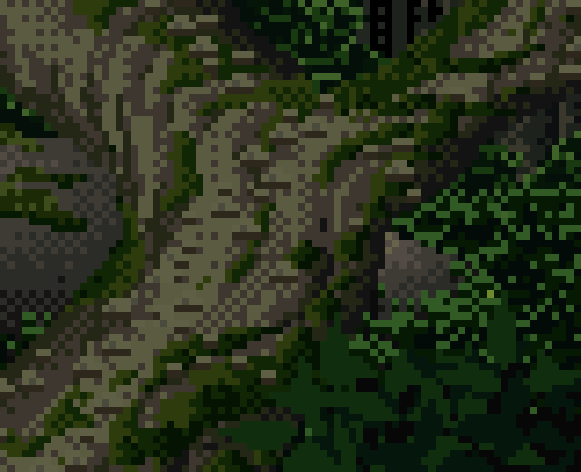
18. elements/driftwood/scratch/mp_limb8.pngBash: 4x view of right grey trunk area
cd ~/work/pixelart-studies/elements/driftwood/scratch; python3 -c "
from PIL import Image
im=Image.open('mp_native.png')
c=im.crop((420,60,622,260)); c.resize((c.width*4,c.height*4),Image.NEAREST).save('mp_right4.png')
"
# output:
(Bash completed with no output)Read: elements/driftwood/scratch/mp_right4.png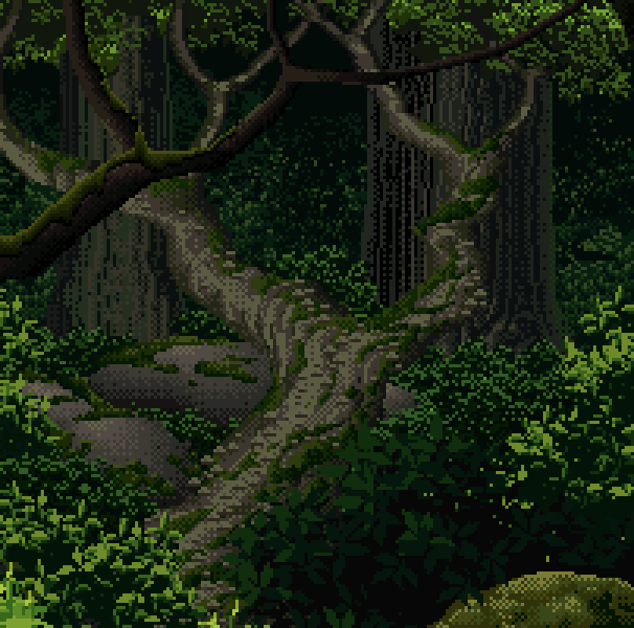
19. elements/driftwood/scratch/mp_right4.pngBash: 10x crop of leaning grey limb
cd ~/work/pixelart-studies/elements/driftwood/scratch; python3 -c "
from PIL import Image
im=Image.open('mp_native.png')
c=im.crop((455,112,515,162)); c.resize((c.width*10,c.height*10),Image.NEAREST).save('mp_limbA.png')
"
# output:
(Bash completed with no output)Read: elements/driftwood/scratch/mp_limbA.png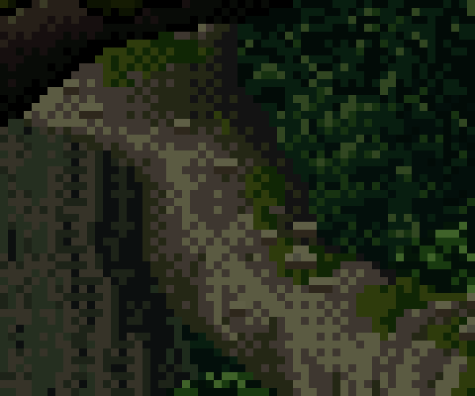
20. elements/driftwood/scratch/mp_limbA.pngBash: Colour census of forest pool grey trunk crop
cd ~/work/pixelart-studies/elements/driftwood/scratch; python3 -c "
from PIL import Image; import numpy as np
im=np.array(Image.open('mp_native.png').convert('RGB'))
c=im[165:215,495:545].reshape(-1,3)
u,n=np.unique(c,axis=0,return_counts=True)
o=np.argsort(-n)
for i in o[:24]: print(tuple(u[i]), n[i], int(0.3*u[i][0]+0.59*u[i][1]+0.11*u[i][2]))
Image.fromarray(im[165:215,495:545]).resize((400,400),Image.NEAREST).save('mp_B.png')
"
# output:
(62, 55, 48) 424 56
(91, 91, 66) 394 88
(16, 38, 5) 228 27
(46, 59, 12) 228 49
(36, 39, 21) 226 36
(16, 46, 13) 192 33
(95, 95, 70) 127 92
(4, 19, 2) 122 12
(43, 43, 39) 98 42
(46, 39, 28) 90 39
(62, 59, 52) 86 59
(19, 19, 19) 65 19
(5, 22, 12) 47 15
(6, 26, 3) 39 17
(50, 90, 36) 24 72
(7, 7, 7) 19 7
(75, 75, 61) 19 73
(28, 42, 6) 17 33
(22, 19, 19) 13 19
(82, 75, 68) 9 76
(11, 11, 11) 8 11
(2, 11, 7) 8 7
(4, 19, 8) 4 13
(3, 15, 8) 4 10Read: elements/driftwood/scratch/mp_B.png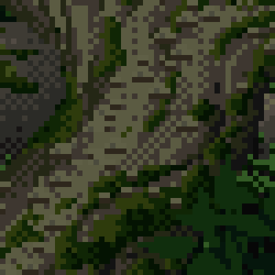
21. elements/driftwood/scratch/mp_B.pngBash: Symbol map of V09 pale trunk indices
cd ~/work/pixelart-studies/pedagogy/master-copy; python3 -c "
import sys; sys.path.insert(0,'src')
from lwload import load
import numpy as np
d=load('V09'); idx=d['idx']
sym={132:'c',131:'4',130:'3',129:'1',128:'2',133:'C',135:'B'}
for y in range(96,252,1):
print('%3d '%y+''.join(sym.get(int(v),'.') for v in idx[y,356:396]))
"
# output:
96 ..........c44312........................
97 ..........c43322........................
98 ..........c443112.......................
99 ...........c44112.......................
100 .............c4.12......................
101 .............c44.322....................
102 .................c412...................
103 ..................4312..................
104 ..................c.32..................
105 ...................c....................
106 ........................................
107 ........................................
108 ........................................
109 ........................................
110 ........................................
111 ........................................
112 ........................................
113 ........................................
114 ........................................
115 ........................................
116 ..4.....................................
117 4.44....................................
118 4444.........4.....4......44............
119 .4444........44444444444.444............
120 ...444.......44444444444.444............
121 ....4444.....44444444333232.............
122 .....44444...44444433311122.............
123 ......cc444444444433112122..............
124 ........444444444431111222..............
125 ..........cc4c44443311212...............
126 ............c444433311122...............
127 ............cc4434131122................
128 .............cc443311122................
129 .............c4434131122................
130 .............cc443311112................
131 .............c4c34331122................
132 .............cc443311122................
133 .............c4444331122................
134 .............cc443311112................
135 .............c4c34331122................
136 .............cc443311122................
137 .............c4434131122................
138 .............cc443311112................
139 .............c4c34331122................
140 .............cc443311122................
141 .............c4444331122................
142 ............c44443311122................
143 ............cc4434131122................
144 ............cc4443311122................
145 ............cc4434131122................
146 ............c44443311122................
147 ............cc4433131122................
148 ............cc4443311122................
149 ............cc4434131122................
150 ............c444433311122...............
151 ............cc44343311212...............
152 ............cc44433131122...............
153 ............cc44341311212...............
154 ............cc44433311122...............
155 ............cc44343311212...............
156 ............cc44433131122...............
157 ............cc44343311212...............
158 ............c444433311122...............
159 ............cc44343311212...............
160 ............cc44433131122...............
161 ............cc44341311212...............
162 ............cc44433311122..Bash: Locate all pale trunks in V09
cd ~/work/pixelart-studies/pedagogy/master-copy; python3 -c "
import sys; sys.path.insert(0,'src')
from lwload import load
import numpy as np
d=load('V09'); idx=d['idx']
sym={132:'c',131:'4',130:'3',129:'1',128:'2'}
# find other pale trunks: count class 129/130 columns
m=np.isin(idx,[128,129,130,131,132])
ys,xs=np.nonzero(m); print(xs.min(),xs.max(),ys.min(),ys.max())
col=m.sum(0); print([ (x,int(col[x])) for x in range(640) if col[x]>20])
"
# output:
352 387 69 339
[(367, 53), (368, 143), (369, 156), (370, 146), (371, 145), (372, 140), (373, 134), (374, 134), (375, 135), (376, 135), (377, 135), (378, 129), (379, 129), (380, 105), (381, 43)]Write: elements/driftwood/src/s0a_pale_trunk.py
"""Stage 0A: master copy of Ferrari's pale trunk (Living Worlds V09 'Deep Forest' morning, native
crop x 356..396, y 96..252). The copy is painted from a procedure, not traced:
* the copyist's sketch: the left and right silhouette columns per row (his long straight runs
with single 1-px jogs), read from his map and then *simplified* to runs;
* the form: a 1-D profile across the trunk -- the form classes in fixed spatial order
rim(sky-cool) | core-dark | halftone | light | edge-falloff
as a continuous coordinate v(u), u = across position in [0,1];
* the quantizer: DPaint-style ordered dither between ADJACENT classes only, the dither
matrix tiled along the axis (rows), so the seams read as 1-px checker columns.
Writes stages/s0a_*.png and prints the class-match rate on the trunk.
"""
import sys, os
sys.path.insert(0, os.path.dirname(__file__))
sys.path.insert(0, os.path.expanduser('~/work/pixelart-studies/pedagogy/master-copy/src'))
import numpy as np
from PIL import Image
import re, json
ROOT = os.path.expanduser('~/work/pixelart-studies/elements/driftwood')
LW = os.path.expanduser('~/work/pixelart-studies/pedagogy/master-copy/ref/lw')
def load(name):
t = open(f'{LW}/{name}.json').read()
t = re.sub(r'([{,])\s*([A-Za-z_]+)\s*:', r'\1"\2":', t).replace("'", '"')
d = json.loads(t)
d['pal'] = np.array(d['colors'], dtype=np.uint8)
d['idx'] = np.array(d['pixels'], dtype=np.int32).reshape(d['height'], d['width'])
return d
CLASSES = [132, 131, 130, 129, 128] # rim | dark | half | light | edge, in spatial order
BAYER4 = np.array([[0, 8, 2, 10], [12, 4, 14, 6], [3, 11, 1, 9], [15, 7, 13, 5]]) / 16 + 1 / 32
def silhouette(idx, x0, x1, y0, y1):
m = np.isin(idx[y0:y1, x0:x1], CLASSES)
L = np.full(y1 - y0, -1); R = np.full(y1 - y0, -1)
for i in range(y1 - y0):
xs = np.nonzero(m[i])[0]
if len(xs):
L[i], R[i] = xs.min(), xs.max()
return L, R
def paint_trunk(L, R, breaks, mat, shift=0, h=None, w=None):
"""breaks: u positions where v crosses k+0.5 (class boundaries), len = n_classes-1."""
out = np.full((h, w), -1)
n = len(breaks) + 1
for i in range(h):
if L[i] < 0:
continue
xs = np.arange(L[i], R[i] + 1)
wd = R[i] - L[i] + 1
u = (xs - L[i] + 0.5) / wd
# piecewise-linear v(u): v = k + 0.5 at breaks[k]
bu = np.concatenate([[0.0], breaks, [1.0]])
bv = np.concatenate([[0.0], np.arange(len(breaks)) + 0.5, [n - 1.0]])
v = np.interp(u, bu, bv)
th = mat[(i + shift) % mat.shape[0], xs % mat.shape[1]]
lo = np.floor(v); fr = v - lo
k = np.clip(lo + (fr > th), 0, n - 1).astype(int)
out[i, xs] = k
return out
def main():
d = load('V09'); idx = d['idx']; pal = d['pal']
x0, x1, y0, y1 = 356, 396, 118, 241
L, R = silhouette(idx, x0, x1, y0, y1)
ref = idx[y0:y1, x0:x1]
refk = np.full(ref.shape, -1)
for k, c in enumerate(CLASSES):
refk[ref == c] = k
tm = refk >= 0
best = None
mats = {'bayer4': BAYER4, 'bayer2': np.array([[0.125, 0.625], [0.875, 0.375]]),
'vert2': np.array([[0.25, 0.75], [0.75, 0.25]]),
'bayer4T': BAYER4.T}
rng = np.random.default_rng(0)
grid = np.linspace(0.05, 0.95, 19)
for name, mat in mats.items():
for sh in range(mat.shape[0]):
br = np.array([0.12, 0.40, 0.62, 0.85])
# coordinate descent over the 4 breaks
for it in range(4):
for j in range(4):
scores = []
for g in grid:
b2 = br.copy(); b2[j] = g
if not np.all(np.diff(b2) > 0):
scores.append(-1); continue
cp = paint_trunk(L, R, b2, mat, sh, *ref.shape)
scores.append(((cp == refk) & tm).sum() / tm.sum())
br[j] = grid[int(np.argmax(scores))]
cp = paint_trunk(L, R, br, mat, sh, *ref.shape)
sc = ((cp == refk) & tm).sum() / tm.sum()
# class-level tolerance: same class within one step
sc1 = ((np.abs(cp - refk) <= 1) & tm).sum() / tm.sum()
if best is None or sc > best[0]:
best = (sc, sc1, name, sh, br.copy(), cp)
print(f'{name} shift {sh}: exact {sc:.3f} within1 {sc1:.3f} breaks {np.round(br, 2)}')
sc, sc1, name, sh, br, cp = best
print('BEST', name, sh, np.round(br, 3), f'{sc:.3f}', f'{sc1:.3f}')
# render: his background, my trunk
out = idx[y0:y1, x0:x1].copy()
mine = out.copy()
mine[cp >= 0] = np.array(CLASSES)[cp[cp >= 0]]
A = pal[out]; B = pal[mine]
s = 8
gap = np.full((A.shape[0], 2, 3), 255, np.uint8)
im = np.concatenate([A, gap, B], 1)
Image.fromarray(im).resize((im.shape[1] * s, im.shape[0] * s), Image.NEAREST).save(f'{ROOT}/stages/s0a_pale_trunk_8x.png')
np.save(f'{ROOT}/scratch/s0a_best.npy', np.array([*br, sh]))
return best
if __name__ == '__main__':
main()
Bash: Run stage 0A copy fitting
cd ~/work/pixelart-studies/elements/driftwood && nice -n 10 python3 src/s0a_pale_trunk.py 2>&1 | tail -8 # output: bayer2 shift 1: exact 0.818 within1 0.983 breaks [0.2 0.4 0.6 0.85] vert2 shift 0: exact 0.563 within1 0.913 breaks [0.35 0.45 0.55 0.6 ] vert2 shift 1: exact 0.873 within1 0.987 breaks [0.1 0.4 0.65 0.85] bayer4T shift 0: exact 0.553 within1 0.972 breaks [0.05 0.55 0.6 0.9 ] bayer4T shift 1: exact 0.873 within1 0.983 breaks [0.15 0.4 0.6 0.8 ] bayer4T shift 2: exact 0.551 within1 0.972 breaks [0.05 0.55 0.6 0.9 ] bayer4T shift 3: exact 0.850 within1 0.981 breaks [0.1 0.4 0.55 0.85] BEST vert2 1 [0.1 0.4 0.65 0.85] 0.873 0.987
Read: elements/driftwood/stages/s0a_pale_trunk_8x.png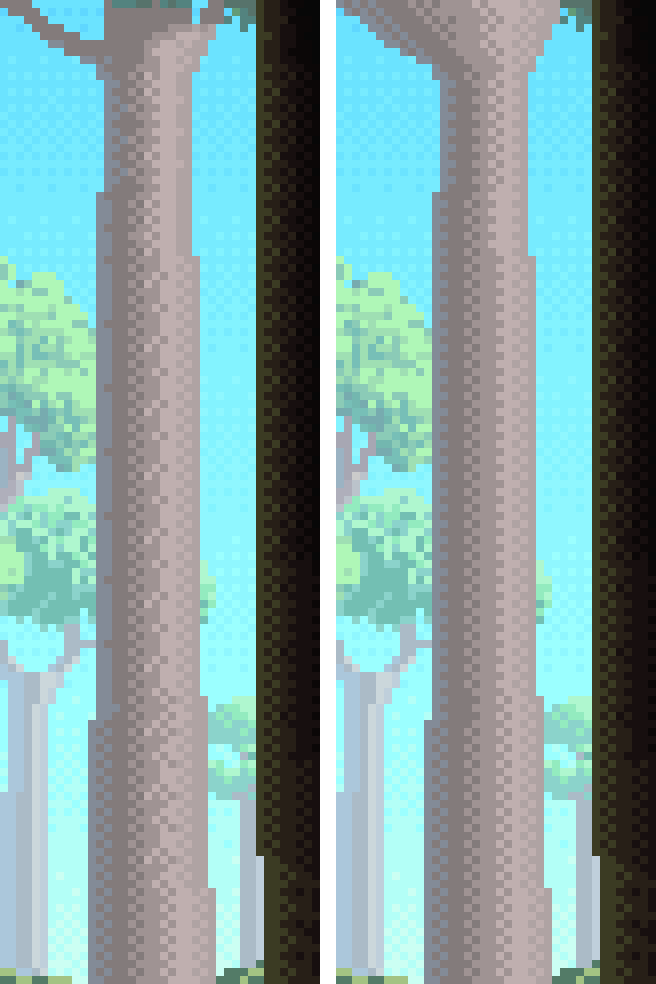
22. elements/driftwood/stages/s0a_pale_trunk_8x.pngWrite: elements/driftwood/src/tech.py
"""tech.py -- the driftwood techniques, each proven against a study image.
cylinder_steps (spec: stages/s0a_*; Ferrari V09 pale trunk)
A round trunk is five form classes in fixed spatial order across its width:
reflected rim | core | halftone | light | lit-edge falloff
in value steps (of an 8-step wood ramp) 3 | 2 | 4 | 6 | 5
The shadow family starts well before the geometric terminator (Ferrari lights only ~55% of
the visible width even with the sun 30 deg off the view axis): terminator at N.L ~ 0.7.
The lit edge falls back one step as the form turns away; the shadow edge gets one step of
reflected light (sky or gravel bounce) -- never reaching the halftone.
Quantized with an ordered 2x2 dither, so each seam is a 1-px checker running ALONG the axis.
"""
import numpy as np
def cylinder_steps(N, V, L, sh=None, term=0.70, peak=0.93, edge_nv=0.42, rim_nv=0.5,
rim_gain=1.0, bounce_dir=None):
"""continuous step coordinate on the 8-step wood ramp.
N: normals (...,3); V: unit vector toward the viewer; L: unit vector toward the sun;
sh: cast-shadow mask (points in cast shadow fall into the shadow family)."""
ndl = N @ L
nv = np.clip(N @ V, 0, 1)
lit = ndl > term
if sh is not None:
lit &= ~sh
# light family: halftone (4) at the terminator rising to light (6) at the peak
f = np.clip((ndl - term) / (peak - term), 0, 1)
xl = 3.6 + 2.8 * f
# lit-edge falloff: where the lit surface turns away from the viewer, one step back
xl = np.where(nv < edge_nv, np.minimum(xl, 5.4), xl)
# shadow family: core (2) inside, reflected rim (3) where the form turns away (low N.V)
rim = np.clip((rim_nv - nv) / rim_nv, 0, 1)
if bounce_dir is not None:
rim = rim * np.clip(0.3 + 0.7 * (N @ bounce_dir), 0, 1)
xs = 1.6 + 1.9 * rim * rim_gain
xs = np.minimum(xs, 3.45)
return np.where(lit, xl, xs), lit
Write: elements/driftwood/src/s0a2_pipeline_copy.py
"""Stage 0A-2: the same pale trunk re-painted by the general pipeline (3-D cylinder, designed
light, cylinder_steps, ordered dither), with his palette, and compared to his crop.
This proves the technique is geometry-driven (so it can be rotated to lie down) and still
matches the master."""
import sys, os
sys.path.insert(0, os.path.dirname(__file__))
import numpy as np
from PIL import Image
from s0a_pale_trunk import load, silhouette, CLASSES, ROOT
import geo, tech
from paint import quantize, BAYER2
d = load('V09'); idx = d['idx']; pal = d['pal']
x0, x1, y0, y1 = 356, 396, 126, 241
ref = idx[y0:y1, x0:x1]
L_, R_ = silhouette(idx, x0, x1, y0, y1)
H, W = ref.shape
# his value-ordered ramp mapped onto wood steps 2..6
STEP2IDX = {2: 131, 3: 132, 4: 130, 5: 128, 6: 129}
def paint(az_deg=38.0, term=0.70, peak=0.93, edge_nv=0.42, rim_nv=0.5, phase=(0, 0)):
# per row: a cylinder cross-section fitted to his silhouette (the copyist's sketch)
out = np.full((H, W), -1)
V = np.array([0, -1.0, 0]) # toward viewer (camera looks +y)
a = np.radians(az_deg)
Lv = np.array([np.sin(a), -np.cos(a), 0.25]); Lv /= np.linalg.norm(Lv)
X = np.zeros((H, W))
M = np.zeros((H, W), bool)
for i in range(H):
if L_[i] < 0:
continue
xs = np.arange(L_[i], R_[i] + 1)
c = 0.5 * (L_[i] + R_[i] + 1); r = 0.5 * (R_[i] - L_[i] + 1)
sx = np.clip((xs + 0.5 - c) / r, -0.999, 0.999)
N = np.stack([sx, -np.sqrt(1 - sx ** 2), np.zeros_like(sx)], -1)
x, _ = tech.cylinder_steps(N, V, Lv, term=term, peak=peak, edge_nv=edge_nv, rim_nv=rim_nv)
X[i, xs] = x; M[i, xs] = True
Xp = np.roll(np.roll(X, phase[0], 0), phase[1], 1)
q = quantize(X if phase == (0, 0) else X, BAYER2, nsteps=8)
if phase != (0, 0):
th = np.tile(BAYER2, (H // 2 + 2, W // 2 + 2))[phase[0]:phase[0] + H, phase[1]:phase[1] + W]
q = np.clip(np.floor(X) + ((X - np.floor(X)) > th), 0, 7).astype(int)
q = np.clip(q, 2, 6)
out[M] = np.vectorize(STEP2IDX.get)(q[M])
return out, M
def score(out, M):
return (out[M] == ref[M]).mean()
best = None
for az in (20, 30, 38, 45, 55):
for term in (0.55, 0.62, 0.70, 0.78):
for edge in (0.3, 0.42, 0.55):
for rim in (0.35, 0.5, 0.65):
for ph in ((0, 0), (1, 0), (0, 1), (1, 1)):
o, M = paint(az, term, 0.93, edge, rim, ph)
s = score(o, M)
if best is None or s > best[0]:
best = (s, az, term, edge, rim, ph)
print('best', best)
s, az, term, edge, rim, ph = best
o, M = paint(az, term, 0.93, edge, rim, ph)
mine = ref.copy(); mine[M] = o[M]
A = pal[ref]; B = pal[mine]
gap = np.full((H, 2, 3), 255, np.uint8)
im = np.concatenate([A, gap, B], 1)
Image.fromarray(im).resize((im.shape[1] * 8, H * 8), Image.NEAREST).save(f'{ROOT}/stages/s0a2_pipeline_copy_8x.png')
# per-column class histograms, ref vs mine, to see where the profile differs
for name, m in (('ref', ref), ('mine', mine)):
cols = []
for x in range(10, 28):
v = m[:, x][M[:, x]]
if len(v) == 0:
continue
u, n = np.unique(v, return_counts=True)
cols.append(f'{x}:' + ','.join(f'{STEP2IDX_inv}' for STEP2IDX_inv in []) + '/'.join(f'{int(a)}x{int(b)}' for a, b in zip(u, n) if b > 8))
print(name, ' '.join(cols))
Bash: Run pipeline copy of pale trunk
cd ~/work/pixelart-studies/elements/driftwood && nice -n 10 python3 src/s0a2_pipeline_copy.py 2>&1 | tail -5 # output: best (0.603638726445744, 38, 0.7, 0.3, 0.65, (0, 1)) ref 11:132x33 12:131x16/132x85 13:131x27/132x88 14:131x107 15:131x112 16:130x55/131x60 17:130x59/131x56 18:129x17/130x98 19:129x31/130x84 20:129x85/130x30 21:129x102/130x13 22:128x58/129x57 23:128x64/129x51 24:128x86 25:128x30 26:128x12 mine 11:131x16/132x17 12:131x72/132x29 13:131x108 14:131x115 15:131x115 16:131x115 17:131x106 18:128x53/130x62 19:128x53/129x56 20:129x109 21:129x115 22:129x115 23:128x12/129x103 24:128x56/129x36 25:128x12/129x24 26:128x12
Write: elements/driftwood/src/tech.py
"""tech.py -- the driftwood techniques, each proven against a study image.
cylinder_steps (spec: stages/s0a2_*; Ferrari V09 pale trunk)
A round trunk is five form classes in fixed spatial order across its width:
reflected rim | core | halftone | light | lit-edge falloff
in value steps (of an 8-step wood ramp) 3 | 2 | 4 | 6 | 5
Explicit thresholds, not a lighting formula: the shadow family starts well before the
geometric terminator (Ferrari lights only ~55% of the visible width with the sun ~30 deg off
the view axis), the light class is a narrow band at the peak, the lit edge falls back one
step as the form turns away, and the shadow edge gets one step of reflected light (sky or
gravel bounce) -- never reaching the halftone.
Each boundary is a short linear ramp, so the ordered 2x2 quantizer turns it into a 1-px
checker seam running ALONG the axis.
"""
import numpy as np
CYL = dict(term=0.74, w_term=0.10, peak=0.965, w_peak=0.03, edge_nv=0.70, w_edge=0.12,
rim_nv=0.62, w_rim=0.15)
def ramp(v, at, w):
return np.clip((v - at) / w + 0.5, 0, 1)
def cylinder_steps(N, V, L, sh=None, p=None, bounce_dir=None):
"""continuous step coordinate on the 8-step wood ramp (+ lit mask)."""
q = dict(CYL); q.update(p or {})
ndl = N @ L
nv = np.clip(N @ V, 0, 1)
t = ramp(ndl, q['term'], q['w_term'])
if sh is not None:
t = np.where(sh, 0.0, t)
x = 2.0 + 2.0 * t + 2.0 * ramp(ndl, q['peak'], q['w_peak']) * (t > 0.99)
# lit-edge falloff (light family only)
e = ramp(q['edge_nv'] - nv, 0, q['w_edge'])
x = np.where(x > 5.0, x - e * (x - 5.0), x)
# reflected rim (shadow family only); a bounce direction can weight it (gravel below)
r = ramp(q['rim_nv'] - nv, 0, q['w_rim'])
if bounce_dir is not None:
r = r * np.clip(0.35 + 0.65 * (N @ bounce_dir), 0, 1)
x = np.where(t < 0.5, np.minimum(x + r * 1.0, 3.45), x)
return x, t >= 0.5
Now rewrite the pipeline-copy fit to coordinate-descend these thresholds.
Bash: Fit cylinder class thresholds against Ferrari trunk
cd ~/work/pixelart-studies/elements/driftwood/src && python3 - <<'EOF'
import re
s=open('s0a2_pipeline_copy.py').read()
start=s.index('def paint(')
s=s[:start]+'''def paint(az_deg=30.0, p=None, phase=(0, 0), el=0.0):
out = np.full((H, W), -1)
V = np.array([0, -1.0, 0])
a = np.radians(az_deg)
Lv = np.array([np.sin(a), -np.cos(a), np.tan(np.radians(el))]); Lv /= np.linalg.norm(Lv)
X = np.zeros((H, W)); M = np.zeros((H, W), bool)
for i in range(H):
if L_[i] < 0:
continue
xs = np.arange(L_[i], R_[i] + 1)
c = 0.5 * (L_[i] + R_[i] + 1); r = 0.5 * (R_[i] - L_[i] + 1)
sx = np.clip((xs + 0.5 - c) / r, -0.999, 0.999)
N = np.stack([sx, -np.sqrt(1 - sx ** 2), np.zeros_like(sx)], -1)
x, _ = tech.cylinder_steps(N, V, Lv, p=p)
X[i, xs] = x; M[i, xs] = True
th = np.tile(BAYER2, (H // 2 + 2, W // 2 + 2))[phase[0]:phase[0] + H, phase[1]:phase[1] + W]
q = np.clip(np.floor(X) + ((X - np.floor(X)) > th), 2, 6).astype(int)
out[M] = np.vectorize(STEP2IDX.get)(q[M])
return out, M
def score(out, M):
return (out[M] == ref[M]).mean()
P = dict(tech.CYL)
az = 30.0; ph = (0, 0)
grids = {k: np.linspace(v * 0.5, min(1.0, v * 1.5), 15) for k, v in P.items()}
grids['az'] = np.arange(10, 70, 4)
for it in range(4):
for k in list(grids):
best = None
for g in grids[k]:
for phx in ((0, 0), (1, 0), (0, 1), (1, 1)):
pp = dict(P)
a = az
if k == 'az':
a = g
else:
pp[k] = g
o, M = paint(a, pp, phx)
sc = score(o, M)
if best is None or sc > best[0]:
best = (sc, g, phx)
if k == 'az':
az = best[1]
else:
P[k] = best[1]
ph = best[2]
print(it, round(best[0], 3), round(az, 1), {k: round(v, 3) for k, v in P.items()}, ph)
o, M = paint(az, P, ph)
print('FINAL', score(o, M))
open(os.path.join(ROOT, 'scratch', 's0a2_params.txt'), 'w').write(repr((az, P, ph)))
mine = ref.copy(); mine[M] = o[M]
A = pal[ref]; B = pal[mine]
gap = np.full((H, 2, 3), 255, np.uint8)
im = np.concatenate([A, gap, B], 1)
Image.fromarray(im).resize((im.shape[1] * 8, H * 8), Image.NEAREST).save(f'{ROOT}/stages/s0a2_pipeline_copy_8x.png')
'''
open('s0a2_pipeline_copy.py','w').write(s)
EOF
cd .. && nice -n 10 python3 src/s0a2_pipeline_copy.py
# output:
0 0.762 42 {'term': 0.73, 'w_term': 0.05, 'peak': 0.889, 'w_peak': 0.015, 'edge_nv': 0.675, 'w_edge': 0.103, 'rim_nv': 0.753, 'w_rim': 0.107} (1, 1)
1 0.792 42 {'term': 0.46, 'w_term': 0.05, 'peak': 0.889, 'w_peak': 0.017, 'edge_nv': 0.675, 'w_edge': 0.103, 'rim_nv': 0.753, 'w_rim': 0.107} (1, 1)
2 0.792 42 {'term': 0.46, 'w_term': 0.05, 'peak': 0.889, 'w_peak': 0.017, 'edge_nv': 0.675, 'w_edge': 0.103, 'rim_nv': 0.753, 'w_rim': 0.107} (1, 1)
3 0.792 42 {'term': 0.46, 'w_term': 0.05, 'peak': 0.889, 'w_peak': 0.017, 'edge_nv': 0.675, 'w_edge': 0.103, 'rim_nv': 0.753, 'w_rim': 0.107} (1, 1)
FINAL 0.7920727745289149Read: elements/driftwood/stages/s0a2_pipeline_copy_8x.png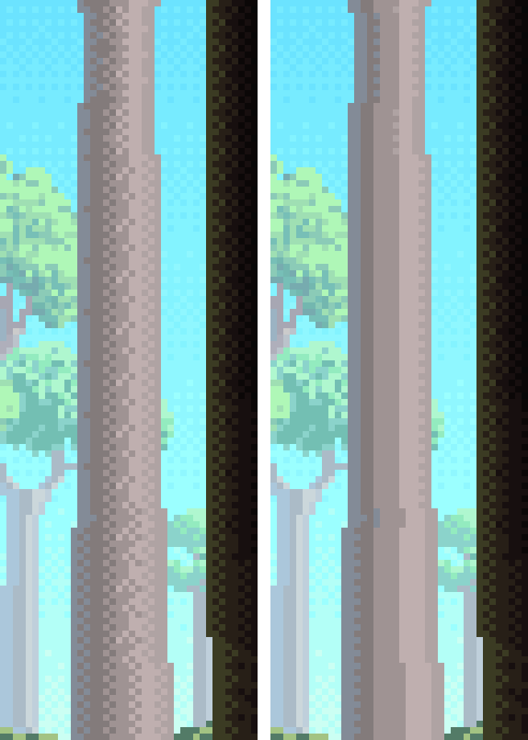
23. elements/driftwood/stages/s0a2_pipeline_copy_8x.pngWrite: elements/driftwood/src/tech.py
"""tech.py -- the driftwood techniques, each proven against a study image.
cylinder_classes (spec: stages/s0a2_*; Ferrari V09 pale trunk)
A round trunk is five FORM CLASSES in fixed spatial order across its width, counted from
the shadow edge toward the lit edge:
0 reflected rim | 1 core | 2 halftone | 3 light | 4 lit-edge falloff
painted on the wood ramp at steps 3 | 2 | 4 | 6 | 5
The class coordinate is a smooth function of the angle d around the axis, measured from the
light's peak (d < 0 toward the shadow edge), with class boundaries (Ferrari, measured):
rim | -83 deg | core | -42 | halftone | -13 | light | +14 | edge
So the core starts ~7 deg BEFORE the geometric terminator, the halftone is a 30 deg band,
the light only ~27 deg wide at the peak. No pure zones: the coordinate runs linearly
through every class and the quantizer mixes ONLY spatially adjacent classes with a 3-level
checker (pure / 50% / pure), so every seam is a 1-2 px checker running along the axis.
Dithering follows class adjacency, not value adjacency: core (step 2) dithers straight into
halftone (step 4), skipping the cool rim colour (step 3).
"""
import numpy as np
CHECK3 = np.array([[0.25, 0.75], [0.75, 0.25]]) # 3-level checker (Ferrari's trunk seams)
CLASS_STEPS = np.array([3, 2, 4, 6, 5])
CYL_BREAKS = np.array([-83.0, -42.0, -13.0, 14.0]) # degrees from the light peak
def normal_plane_angles(N, V, L, T):
"""angle of N and of the light around the local axis T, both measured in the plane
perpendicular to T from the view direction; returns d = signed angle from the light peak,
oriented so that +d points toward the lit silhouette edge."""
def proj(a):
a = a - (a * T).sum(-1, keepdims=True) * T
return a / (np.linalg.norm(a, axis=-1, keepdims=True) + 1e-9)
Vp = proj(np.broadcast_to(V, N.shape))
B = np.cross(T, Vp)
Lp = proj(np.broadcast_to(L, N.shape))
phN = np.degrees(np.arctan2((N * B).sum(-1), (N * Vp).sum(-1)))
phL = np.degrees(np.arctan2((Lp * B).sum(-1), (Lp * Vp).sum(-1)))
sgn = np.where(phL >= 0, 1.0, -1.0)
d = (phN - phL) * sgn
d = (d + 180) % 360 - 180
return d, phL
def cylinder_classes(d, breaks=CYL_BREAKS, sh=None):
"""continuous class coordinate v in [0, 4] from the peak angle d."""
bu = np.concatenate([[-180.0], breaks, [180.0]])
bv = np.concatenate([[-0.5], np.arange(len(breaks)) + 0.5, [len(breaks) + 0.5]])
# linear between break midpoints: v = k at the middle of class k
mids = np.concatenate([[breaks[0] - 25], 0.5 * (breaks[1:] + breaks[:-1]), [breaks[-1] + 30]])
v = np.interp(d, np.concatenate([[-180], mids, [180]]),
np.concatenate([[0], np.arange(len(mids)), [len(mids) - 1]]))
if sh is not None:
v = np.where(sh, np.minimum(v, 1.0), v)
return np.clip(v, 0, len(breaks))
def quantize_classes(v, mat=CHECK3, phase=(0, 0), class_steps=CLASS_STEPS):
H, W = v.shape
th = np.tile(mat, (H // mat.shape[0] + 2, W // mat.shape[1] + 2))
th = th[phase[0]:phase[0] + H, phase[1]:phase[1] + W]
lo = np.floor(v)
k = np.clip(lo + ((v - lo) > th), 0, len(class_steps) - 1).astype(int)
return class_steps[k], k
Bash: Refit with class-coordinate cylinder model
cd ~/work/pixelart-studies/elements/driftwood/src && python3 - <<'EOF'
s=open('tech.py').read()
a=s.index('def cylinder_classes'); b=s.index('def quantize_classes')
s=s[:a]+'''def cylinder_classes(d, phL, breaks=CYL_BREAKS, sh=None):
"""continuous class coordinate v in [0, 4]: piecewise linear through the breaks (v = k+0.5
at break k), from v = 0 at the shadow silhouette to v = 4 at the lit silhouette."""
aL = np.abs(phL)
d0 = np.minimum(-90.0 - aL, breaks[0] - 1)
d1 = np.maximum(90.0 - aL, breaks[-1] + 1)
n = len(breaks)
v = np.zeros_like(d)
# segment 0: [d0, b0] -> [0, 0.5]; middle segments; last: [b_last, d1] -> [n-0.5, n]
xs = [d0] + [np.full_like(d, b) for b in breaks] + [d1]
ys = [0.0] + [k + 0.5 for k in range(n)] + [float(n)]
for k in range(len(xs) - 1):
lo, hi = xs[k], xs[k + 1]
m = (d >= lo) & (d < hi)
f = (d - lo) / np.maximum(hi - lo, 1e-6)
v = np.where(m, ys[k] + f * (ys[k + 1] - ys[k]), v)
v = np.where(d >= d1, n, v)
v = np.where(d < d0, 0.0, v)
if sh is not None:
v = np.where(sh, np.minimum(v, 1.0), v)
return np.clip(v, 0, n)
'''+s[b:]
open('tech.py','w').write(s)
s=open('s0a2_pipeline_copy.py').read()
a=s.index('def paint('); b=s.index('def score')
s=s[:a]+'''def paint(az_deg=30.0, breaks=None, phase=(0, 0)):
out = np.full((H, W), -1)
V = np.array([0, -1.0, 0]); T = np.array([0, 0, 1.0])
a = np.radians(az_deg)
Lv = np.array([np.sin(a), -np.cos(a), 0.3]); Lv /= np.linalg.norm(Lv)
Vv = np.zeros((H, W)); M = np.zeros((H, W), bool)
for i in range(H):
if L_[i] < 0:
continue
xs = np.arange(L_[i], R_[i] + 1)
c = 0.5 * (L_[i] + R_[i] + 1); r = 0.5 * (R_[i] - L_[i] + 1)
sx = np.clip((xs + 0.5 - c) / r, -0.999, 0.999)
N = np.stack([sx, -np.sqrt(1 - sx ** 2), np.zeros_like(sx)], -1)
d, phL = tech.normal_plane_angles(N, V, Lv, T)
Vv[i, xs] = tech.cylinder_classes(d, phL, breaks if breaks is not None else tech.CYL_BREAKS)
M[i, xs] = True
st, k = tech.quantize_classes(Vv, tech.CHECK3, phase)
out[M] = np.vectorize(STEP2IDX.get)(st[M])
return out, M
'''+s[b:]
a=s.index('P = dict(tech.CYL)'); b=s.index("o, M = paint(az, P, ph)")
s=s[:a]+'''br = tech.CYL_BREAKS.copy(); az = 30.0; ph = (0, 0)
for it in range(3):
for j in range(5):
best = None
grid = np.arange(10, 70, 2) if j == 4 else br[j] + np.arange(-20, 21, 2)
for g in grid:
b2 = br.copy(); a2 = az
if j == 4: a2 = g
else: b2[j] = g
if not np.all(np.diff(b2) > 0): continue
for phx in ((0, 0), (1, 0), (0, 1), (1, 1)):
o, M = paint(a2, b2, phx); sc = score(o, M)
if best is None or sc > best[0]: best = (sc, g, phx)
if j == 4: az = best[1]
else: br[j] = best[1]
ph = best[2]
print(it, round(best[0], 3), az, br, ph)
P = br
'''+s[b:]
s=s.replace("o, M = paint(az, P, ph)","o, M = paint(az, br, ph)")
open('s0a2_pipeline_copy.py','w').write(s)
EOF
cd .. && nice -n 10 python3 src/s0a2_pipeline_copy.py
# output:
0 0.882 30 [-69. -42. -19. 12.] (1, 0)
1 0.888 30 [-69. -42. -13. 4.] (1, 0)
2 0.888 30 [-69. -42. -13. 4.] (1, 0)
FINAL 0.8882391163092918Read: elements/driftwood/stages/s0a2_pipeline_copy_8x.png 24. elements/driftwood/stages/s0a2_pipeline_copy_8x.png
24. elements/driftwood/stages/s0a2_pipeline_copy_8x.png
Bash: Store fitted breaks and add board utility
cd ~/work/pixelart-studies/elements/driftwood/src && sed -i '' 's/CYL_BREAKS = np.array(\[-83.0, -42.0, -13.0, 14.0\]) # degrees from the light peak/CYL_BREAKS = np.array([-69.0, -42.0, -13.0, 4.0]) # degrees from the light peak (fitted, s0a2: 89% exact)/' tech.py && grep -n CYL_BREAKS tech.py | head -2 && sed -i '' 's/rim | -83 deg | core | -42 | halftone | -13 | light | +14 | edge/rim | -69 deg | core | -42 | halftone | -13 | light | +4 | edge/; s/So the core starts ~7 deg BEFORE/So the core starts ~20 deg AFTER/' tech.py
cat > util.py <<'EOF'
"""util.py -- labelled side-by-side boards at integer zoom."""
import numpy as np
from PIL import Image, ImageDraw, ImageFont
def font(sz=14):
for p in ('/System/Library/Fonts/Menlo.ttc', '/System/Library/Fonts/Monaco.ttf'):
try:
return ImageFont.truetype(p, sz)
except Exception:
pass
return ImageFont.load_default()
def zoom(a, s):
a = np.asarray(a)
return np.repeat(np.repeat(a, s, 0), s, 1)
def board(panels, scale=8, pad=6, label_h=20, bg=(24, 24, 28), cols=None, title=None, fsz=13):
"""panels: list of (label, HxWx3 uint8). Each panel zoomed by scale (or its own scale if a
3-tuple (label, img, s))."""
ims = []
for p in panels:
lab, im = p[0], np.asarray(p[1])
s = p[2] if len(p) > 2 else scale
if im.ndim == 2:
im = np.stack([im] * 3, -1)
ims.append((lab, zoom(im.astype(np.uint8), s)))
cols = cols or len(ims)
rows = (len(ims) + cols - 1) // cols
cw = max(i.shape[1] for _, i in ims); ch = max(i.shape[0] for _, i in ims)
th = 26 if title else 0
W = cols * (cw + pad) + pad; H = th + rows * (ch + label_h + pad) + pad
out = Image.new('RGB', (W, H), bg)
d = ImageDraw.Draw(out); f = font(fsz)
if title:
d.text((pad, 4), title, fill=(230, 230, 230), font=font(fsz + 2))
for n, (lab, im) in enumerate(ims):
r, c = divmod(n, cols)
x = pad + c * (cw + pad); y = th + pad + r * (ch + label_h + pad)
d.text((x, y + 2), lab, fill=(210, 210, 210), font=f)
out.paste(Image.fromarray(im), (x, y + label_h))
return out
def fit_photo(path, box, size):
"""crop a photo box (x0,y0,x1,y1) and resize to size (w,h) with area filtering."""
im = Image.open(path).convert('RGB').crop(box)
return np.array(im.resize(size, Image.LANCZOS))
EOF
echo ok
# output:
22:CYL_BREAKS = np.array([-69.0, -42.0, -13.0, 4.0]) # degrees from the light peak (fitted, s0a2: 89% exact)
43:def cylinder_classes(d, phL, breaks=CYL_BREAKS, sh=None):
okBash: Census of V02 fallen trunk indices
cd ~/work/pixelart-studies/elements/driftwood/src && python3 -c "
from s0a_pale_trunk import load
import numpy as np
d=load('V02'); idx=d['idx']; pal=d['pal']
sub=idx[375:420,250:330]
u,n=np.unique(sub,return_counts=True)
for a,b in sorted(zip(u,n),key=lambda t:-t[1])[:20]: print(a,b,tuple(pal[a]))
"
# output:
69 1069 (11, 0, 0)
70 237 (11, 0, 0)
217 228 (19, 0, 15)
82 219 (31, 15, 39)
221 212 (19, 0, 15)
218 206 (19, 7, 23)
222 199 (15, 0, 7)
219 195 (19, 11, 31)
220 195 (19, 7, 23)
81 149 (35, 19, 47)
223 132 (11, 0, 0)
71 126 (35, 7, 23)
216 116 (15, 0, 7)
80 67 (47, 27, 63)
83 50 (27, 11, 31)
84 42 (15, 7, 15)
90 34 (39, 19, 43)
91 32 (35, 15, 35)
89 30 (43, 23, 47)
96 10 (11, 7, 19)Bash: Symbol map of V02 fallen trunk
cd ~/work/pixelart-studies/elements/driftwood/src && python3 -c "
from s0a_pale_trunk import load
import numpy as np
d=load('V02'); idx=d['idx']; pal=d['pal']
sym={69:'#',70:'#',223:'#',71:'r',72:'R',73:'W'}
for y in range(360,420):
print('%3d '%y+''.join(sym.get(int(v), '.' ) for v in idx[y,240:420]))
print([ (i,tuple(pal[i])) for i in (69,70,71,72,73,74,75)])
"
# output:
360 .........................................................................#####rr....###r............................................................................................
361 ........................................................................######rr....##r.............................................................................................
362 ........................................................................######rr...###r.............................................##########rrrr..................................
363 .......................................................................###r.###r...###r.............##r..........................############rrrrr..................................
364 ......................................................................###r.###r.....##r............####rr.....................##############rrrrrr..................................
365 .....................................................................###r..###r.....###r.........#######rr..................######rr................................................
366 ............................................................##.....####r...###r.....#####rr...#####rr..###r................####rr...................................................
367 ...........................................................########rrrr....###r.....###########rrrrr....##r..............####rr.....................................................
368 ...........................................................########rrr....###r......##########rrrr......######rr........####r.......................................................
369 ...........................................................#######rr......###r......##r.#####rr..........#############r####r........................................................
370 ...................................................#.......###r...........###r......####rr................###############r..........................................................
371 .........................................###r.....##r......###r...........###r......####r.................##r.##########rr..........................................................
372 ........................................####rr....##r......##r...........###r.......###r..................##r..........##r..........................................................
373 ........................................##..##...##r......###r...........###r......####r..................##r..........##r..........................................................
374 ........................................##..##...##r....#####r..........####r.....#####rr.....##..........##r..........##r..........................................................
375 ........................................##..##...##r..#######r..........####r....###r.##r....###r........###r..........##r..........................................................
376 .................................###Bash: Test rim-edge rules against V02 fallen tree
cd ~/work/pixelart-studies/elements/driftwood/src && python3 -c "
from s0a_pale_trunk import load
import numpy as np
d=load('V02'); idx=d['idx']
y0,y1,x0,x1=355,420,240,420
sub=idx[y0:y1,x0:x1]
body=np.isin(sub,[69,70,223]); rim=np.isin(sub,[71,72,73]); M=body|rim
# rim rule candidates: exposed toward direction (dy,dx)
def exposed(M,dy,dx):
s=np.zeros_like(M); P=np.pad(M,1)
return M & ~P[1+dy:1+dy+M.shape[0],1+dx:1+dx+M.shape[1]]
for name,e in [('right',exposed(M,0,1)),('up',exposed(M,-1,0)),('upright',exposed(M,-1,1)),('right|up',exposed(M,0,1)|exposed(M,-1,0)),('right|upright',exposed(M,0,1)|exposed(M,-1,1))]:
tp=(e&rim).sum(); print(name,'precision %.2f recall %.2f'%(tp/max(1,e.sum()), tp/rim.sum()))
# rim thickness: count consecutive rim px leftward from right edge per row
from collections import Counter
c=Counter()
for i in range(M.shape[0]):
run=0
for j in range(M.shape[1]):
if rim[i,j]: run+=1
else:
if run: c[run]+=1
run=0
print('horizontal rim run lengths',sorted(c.items()))
"
# output:
right precision 0.51 recall 0.57
up precision 0.23 recall 0.28
upright precision 0.38 recall 0.57
right|up precision 0.38 recall 0.72
right|upright precision 0.41 recall 0.75
horizontal rim run lengths [(1, 160), (2, 44), (3, 8), (4, 12), (5, 5), (6, 2), (8, 3), (10, 1), (14, 1)]Bash: Add axis tangent buffer to geometry trace
cd ~/work/pixelart-studies/elements/driftwood/src && python3 - <<'EOF'
s=open('geo.py').read()
s=s.replace(""" S = np.zeros(p.shape[:-1]); TH = np.zeros_like(S); RR = np.zeros_like(S)""",""" S = np.zeros(p.shape[:-1]); TH = np.zeros_like(S); RR = np.zeros_like(S)
TT = np.zeros(p.shape)""")
s=s.replace(""" RR = np.where(m, d / rloc, RR)
return S, TH, RR, best""",""" RR = np.where(m, d / rloc, RR)
TT = np.where(m[..., None], ax, TT)
self._T = TT
return S, TH, RR, best""")
s=s.replace(""" s = np.zeros((H, W)); th = np.zeros((H, W)); rho = np.zeros((H, W))""",""" s = np.zeros((H, W)); th = np.zeros((H, W)); rho = np.zeros((H, W))
T = np.zeros((H, W, 3)); T[..., 0] = 1""")
s=s.replace(""" s[m], th[m], rho[m] = S, TH, RR
return dict(obj=obj, part=part, P=P, N=N, s=s, th=th, rho=rho, t=tbest, cam=cam, logs=logs)""",""" s[m], th[m], rho[m] = S, TH, RR
T[m] = lg._T
return dict(obj=obj, part=part, P=P, N=N, T=T, s=s, th=th, rho=rho, t=tbest, cam=cam, logs=logs)""")
open('geo.py','w').write(s)
EOF
grep -n "_T" geo.py
# output:
171: self._T = TT
305: T[m] = lg._TBash: Fix end extension of log segments
cd ~/work/pixelart-studies/elements/driftwood/src && python3 - <<'EOF'
s=open('geo.py').read()
s=s.replace("a = a - ax * (self.rad[0] + 0.01)","a = a - ax * (3.5 * self.rad[0])")
s=s.replace("b = b + ax * (self.rad[-1] + 3.0 * self.rad[-1])","b = b + ax * (3.5 * self.rad[-1])")
open('geo.py','w').write(s)
EOF
grep -n "3.5 \* self.rad" geo.py
# output:
182: a = a - ax * (3.5 * self.rad[0])
184: b = b + ax * (3.5 * self.rad[-1])Write: elements/driftwood/src/render.py
"""render.py -- driftwood on gravel: world -> index canvas (mat, step) -> pixels.
Layers (painter core):
1 form geo.trace + tech.cylinder_classes (wood), pebble domes (gravel)
2 value families: cast shadow forces the shadow family; contact line at 0
3 marks (stage 2+) grain, cracks, knots
4 drawing contact line, bottom row of the log, silhouette runs
5 quantize class checker (wood), ordered 2x2 (gravel)
6 palette (stage 4) ramps per material
"""
import numpy as np
import geo, tech
from paint import (WOOD, GRAVEL, RAW, BARK, Light, gravel_field, hash2, BAYER2)
GREY = {
WOOD: [22, 48, 84, 108, 140, 172, 202, 232],
GRAVEL: [18, 40, 64, 86, 108, 128, 146, 164],
RAW: [22, 48, 84, 108, 150, 182, 212, 240],
BARK: [14, 30, 50, 66, 84, 102, 120, 140],
}
def grey_ramps():
return {m: [(g, g, g) for g in v] for m, v in GREY.items()}
class Canvas:
def __init__(self, H, W):
self.mat = np.full((H, W), GRAVEL)
self.step = np.zeros((H, W), int)
def render(logs, cam, light, seed=0, stone_m=0.06, opts=None):
o = dict(contact=True, bottom_row=True, gravel=True, cast=True)
o.update(opts or {})
H, W = cam.H, cam.W
buf = geo.trace(cam, logs)
sh = geo.shadow(buf, light.L, logs) if o['cast'] and not light.overcast else np.zeros((H, W), bool)
cv = Canvas(H, W)
V = -cam.f
obj = buf['obj']
wood = obj >= 0
# ---------- wood form: five classes around the axis
d, phL = tech.normal_plane_angles(buf['N'], V, light.L, buf['T'])
v = tech.cylinder_classes(d, phL, sh=sh)
if light.overcast:
# overcast: the sky is the light; peak straight up
d2, ph2 = tech.normal_plane_angles(buf['N'], V, np.array([0, 0, 1.0]), buf['T'])
v = tech.cylinder_classes(d2, ph2)
st, k = tech.quantize_classes(v)
part = buf['part']
# end faces (sawn): a flat plane -- one class for the whole face, by its facing
endf = wood & np.isin(part, (1, 2))
ndl = (buf['N'] * light.L).sum(-1)
face_step = np.where((ndl > 0.35) & ~sh, 7, np.where(ndl > 0.0, 4, 3))
if light.overcast:
face_step = np.full_like(face_step, 5)
st = np.where(endf, face_step, st)
cv.mat[wood] = WOOD
cv.step[wood] = st[wood]
# ---------- gravel form
g = ~wood
if o['gravel']:
gx = gravel_steps(buf, light, sh, stone_m, seed, cam)
cv.step[g] = gx[g]
else:
cv.step[g] = np.where(sh, 2, 4)[g]
# ---------- drawing: contact line and the log's bottom row
if o['contact']:
contact(cv, buf, logs, cam)
return cv, buf, sh
def gravel_steps(buf, light, sh, stone_m, seed, cam):
"""pebbles: each a flattened dome. Painted with Ferrari's stone rule: the top of each stone
light, its bottom row dark, the gaps darkest; cast shadow drops the whole stone into the
shadow family (steps 1-3) but keeps a lit top pixel one step up."""
inside, Nst, tone, bid, dist = gravel_field(buf, None, stone_m, seed)
L = light.L
ndl = (Nst * L).sum(-1)
up = Nst[..., 2]
base = 4.0 + 1.6 * (tone - 0.5)
x_l = base + 1.6 * (ndl - L[2])
x_s = 1.8 + 0.8 * up + 0.8 * (tone - 0.5)
x = np.where(sh, np.minimum(x_s, 3.3), x_l)
gap = ~inside
x = np.where(gap, np.where(sh, 0.6, 1.8), x)
if light.overcast:
x = np.where(gap, 1.2, 3.0 + 1.4 * (tone - 0.5) + 1.2 * (up - 0.8))
H, W = x.shape
th = np.tile(BAYER2, (H // 2 + 1, W // 2 + 1))[:H, :W]
q = np.floor(x) + ((x - np.floor(x)) > th)
return np.clip(q, 0, 7).astype(int)
def contact(cv, buf, logs, cam):
"""1 px darkest line where a log meets the ground: ground pixels directly below the log's
silhouette whose world point lies within ~1.5 px of the log surface; the log's own bottom
row one class darker (the form turning under)."""
obj = buf['obj']
wood = obj >= 0
below = np.zeros_like(wood); below[1:] = wood[:-1] & ~wood[1:]
ys, xs = np.nonzero(below)
P = buf['P']
for y, x in zip(ys, xs):
lg = logs[obj[y - 1, x]]
dd = lg.sdf(P[y, x][None])[0]
if dd < 2.0 / cam.scale:
cv.step[y, x] = 0
cv.mat[y, x] = GRAVEL
# bottom row of the log where it touches: darkest wood class
bot = wood.copy(); bot[:-1] &= ~wood[1:]
by, bx = np.nonzero(bot)
for y, x in zip(by, bx):
if y + 1 < wood.shape[0] and cv.step[y + 1, x] == 0 and cv.mat[y + 1, x] == GRAVEL:
cv.step[y, x] = min(cv.step[y, x], 1)
def to_rgb(cv, ramps):
out = np.zeros(cv.mat.shape + (3,), np.uint8)
for m, r in ramps.items():
sel = cv.mat == m
out[sel] = np.asarray(r, np.uint8)[np.clip(cv.step[sel], 0, len(r) - 1)]
return out
Write: elements/driftwood/src/s1_log.py
"""Stage 1: one log in greyscale, lying on gravel, lit from several directions."""
import sys, os, time
sys.path.insert(0, os.path.dirname(__file__))
import numpy as np
from PIL import Image
import geo, render
from paint import Light
from util import board
ROOT = os.path.expanduser('~/work/pixelart-studies/elements/driftwood')
def one_log(L=3.0, r=0.14, yaw_log=15.0, ends=('sawn', 'sawn'), seed=1, taper=0.8, sink=0.02):
a = np.radians(yaw_log)
ax = np.array([np.cos(a), np.sin(a), 0.0])
p0 = -ax * L / 2; p1 = ax * L / 2
z0 = r - sink; z1 = r * taper - sink
pts = [p0 + [0, 0, z0], p1 + [0, 0, z1]]
return geo.Log(pts, [r, r * taper], ends=ends, seed=seed)
def cell(light_az, light_el, pitch=30.0, scale=40.0, W=160, H=80, **kw):
cam = geo.Camera(W, H, scale, pitch=pitch, yaw=0.0)
lg = one_log(**kw)
li = Light(cam, az=light_az, el=light_el, overcast=(light_az is None))
cv, buf, sh = render.render([lg], cam, li, seed=3)
return render.to_rgb(cv, render.grey_ramps())
if __name__ == '__main__':
t = time.time()
lights = [('left 40', 270, 40), ('right 40', 90, 40), ('front 40', 0, 40), ('back 25', 180, 25),
('top 70', 300, 70), ('overcast', None, 0)]
panels = [(n, cell(a, e)) for n, a, e in lights]
board(panels, scale=4, cols=2, title='s1 one log, greyscale, 30 deg oblique, 40 px/m').save(f'{ROOT}/stages/s1_lights_4x.png')
print('done', time.time() - t)
Bash: Render stage 1 light sweep
cd ~/work/pixelart-studies/elements/driftwood && nice -n 10 python3 src/s1_log.py
# output:
Exit code 1
AttributeError: 'NoneType' object has no attribute 'radians'
The above exception was the direct cause of the following exception:
Traceback (most recent call last):
File "~/work/pixelart-studies/elements/driftwood/src/s1_log.py", line 34, in <module>
panels = [(n, cell(a, e)) for n, a, e in lights]
^^^^^^^^^^
File "~/work/pixelart-studies/elements/driftwood/src/s1_log.py", line 25, in cell
li = Light(cam, az=light_az, el=light_el, overcast=(light_az is None))
^^^^^^^^^^^^^^^^^^^^^^^^^^^^^^^^^^^^^^^^^^^^^^^^^^^^^^^^^^^^^^^^^
File "~/work/pixelart-studies/elements/driftwood/src/paint.py", line 49, in __init__
a, e = np.radians(az), np.radians(el)
^^^^^^^^^^^^^^
TypeError: loop of ufunc does not support argument 0 of type NoneType which has no callable radians methodBash: Fix overcast light and rerun stage 1
cd ~/work/pixelart-studies/elements/driftwood && sed -i '' 's/ li = Light(cam, az=light_az, el=light_el, overcast=(light_az is None))/ li = Light(cam, az=light_az if light_az is not None else 0, el=light_el if light_az is not None else 80, overcast=(light_az is None))/' src/s1_log.py && nice -n 10 python3 src/s1_log.py # output: done 6.269317865371704
Read: elements/driftwood/stages/s1_lights_4x.png 25. elements/driftwood/stages/s1_lights_4x.png
25. elements/driftwood/stages/s1_lights_4x.png
Bash: Look at transfer ground technique and sibling folders
cd ~/work/pixelart-studies; sed -n 1,60p transfer/lib/tech_ground.py; ls elements/cobbles elements/channel elements/willow; ls transfer/plates | head
# output:
"""tech_ground.py -- techniques for granular ground (cinder, soil, gravel far off).
Each function is one technique: a trigger (documented), a recipe, and parameters that come from
measurement (photo statistic x Ferrari's ratio for the nearest class he painted).
grain(ctx, mask, mat, cluster_px, amp) clumped stipple in step space: 'texture without strokes'
fall_streaks(ctx, mask, mat, ...) 1-px downslope lines (ravel streaks on cinder, runnels
on a scarp): narrow forms -> clean runs
specks(ctx, mask, mat, density, ...) lone light clasts, each a light-top / dark-bottom pair
clumped_threshold(h, w, rng, sigma) noise with a target cluster size, histogram-flattened
"""
import numpy as np
from scipy import ndimage as ndi
from noise import fbm, value
CLEAN = np.array([0, 0.25, 1 / 3, 0.5, 1, 2, 3, 4, 99])
def clumped(h, w, rng, sigma, aniso=(1.0, 1.0), angle=0.0):
"""uniform-[0,1) field whose blobs have ~ (2*sigma)^2 px area; optionally stretched along
`angle` (degrees, screen, 0 = horizontal) by aniso=(along, across)."""
n = rng.random((h + 8, w + 8))
if aniso != (1.0, 1.0):
n = ndi.rotate(n, -angle, reshape=False, mode="wrap", order=1)
n = ndi.gaussian_filter(n, (sigma * aniso[1], sigma * aniso[0]), mode="wrap")
n = ndi.rotate(n, angle, reshape=False, mode="wrap", order=1)
else:
n = ndi.gaussian_filter(n, sigma, mode="wrap")
n = n[4:-4, 4:-4]
r = np.argsort(np.argsort(n.ravel())).reshape(h, w)
return (r + 0.5) / r.size
# measured by studies/grain_cal.py: gaussian sigma -> mean cluster area (px) of a 4-level cut
_CAL_S = np.array([0.0, 0.4, 0.7, 1.0, 1.5, 2.0, 3.0])
_CAL_A = np.array([1.93, 2.04, 3.46, 5.29, 10.17, 20.48, 96.8])
def sigma_for_cluster(px_area):
"""invert the calibration: the sigma that gives a mean cluster area of px_area."""
return float(np.interp(px_area, _CAL_A, _CAL_S))
def grain(ctx, mask, mat, cluster_px, amp=0.9, aniso=(1.0, 1.0), angle=0.0, bias=0.0):
"""trigger: any granular surface too far for single grains (grain < ~2 px).
recipe: offset the form coordinate by clumped noise of the TARGET cluster size (photo cluster x
Ferrari's cluster ratio, ~2x for granular ground); the mass value stays put, the texture lives
inside it."""
C = ctx.C
s = sigma_for_cluster(cluster_px)
t = clumped(C.h, C.w, ctx.rng, max(s, 0.01), aniso, angle) if s > 0.05 else ctx.rng.random((C.h, C.w))
sel = mask & (C.mat == mat) & ~C.hard
C.x[sel] += amp * (t[sel] - 0.5) * 2 + bias
def _clean_step(dx, dy):
"""snap a screen direction to a clean pixel-art slope; returns (sx, sy) per-step increments."""
if abs(dx) < 1e-6 and abs(dy) < 1e-6:
return 0, 1
if abs(dy) >= abs(dx):
elements/channel:
out
photos
src
study
elements/cobbles:
__pycache__
cobble.py
img
refs
scratch
stage0_copy.py
util.py
elements/willow:
__pycache__
bush.py
copyhaWrite: elements/driftwood/src/gravel.py
"""gravel.py -- the gravel bar under the logs, painted as stamped pebble glyphs (not per-pixel
shading, which at 2-3 px per stone is TV noise).
Trigger: the ground around driftwood. Recipe (Ferrari's stone rule + 'contrast inside the mark'):
* a calm base: the ground mass sits on ONE step (lit: 4, shadow: 2), with a faint clumped
two-step mottle for the albedo variety of mixed river stones;
* pebbles are glyphs chosen by their size in pixels:
< 1.3 px a lone speck, light or dark by albedo
1.3 - 2.6 a pair: light pixel over a dark pixel (the smallest light-top/dark-bottom mark)
2.6 - 5 a lozenge: lit top row, body at its albedo, dark bottom row, flat ends
> 5 a cobble: dome classes (lit cap, halftone, core on the far side), flat dark
contact row beneath
the lit side follows the sun's screen direction; in cast shadow a glyph drops into the
shadow family (its light pixel becomes step 3, never reaching the lit base);
* coverage is sparse near the viewer-facing flat and denser with distance (foreshortening),
so the mass stays calm and the marks carry the texture.
"""
import numpy as np
from paint import hash2, value_noise
def paint_gravel(buf, cam, light, sh, seed=0, stone_m=0.05, density=0.55, mottle=0.6,
size_sigma=0.45):
H, W = cam.H, cam.W
rng = np.random.default_rng(seed)
P = buf['P']
ground = buf['obj'] == -1
lit_base, sh_base = 4.0, 2.0
x = np.where(sh, sh_base, lit_base).astype(float)
# albedo mottle in world space (clumps of lighter / darker stones), 2 steps at most
X, Y = P[..., 0], P[..., 1]
cell = max(stone_m * 3.0, 3.0 / cam.scale)
mot = _world_noise(X / cell, Y / cell, seed)
x += mottle * (mot - 0.5) * 1.6
xq = _checker(x)
# stamp pebbles, far to near
gx = X[ground]; gy = Y[ground]
if len(gx) == 0:
return xq
x0, x1, y0, y1 = gx.min(), gx.max(), gy.min(), gy.max()
area = (x1 - x0) * (y1 - y0)
n = int(area / (stone_m * stone_m) * density)
n = min(n, 60000)
px = rng.uniform(x0, x1, n); py = rng.uniform(y0, y1, n)
size = stone_m * np.exp(rng.normal(0, size_sigma, n))
alb = rng.random(n)
pts = np.stack([px, py, np.zeros(n)], 1)
sx, sy = cam.project(pts)
order = np.argsort(sy) # far (top) first
Ls = light.L
# screen direction of the light (for the lit side of each glyph)
lx = Ls @ cam.r; ly = -(Ls @ cam.u)
step = xq.copy()
s_pitch = np.sin(np.radians(cam.pitch))
for i in order:
cx, cy = sx[i], sy[i]
ix, iy = int(np.floor(cx)), int(np.floor(cy))
if ix < 0 or ix >= W or iy < 0 or iy >= H or not ground[iy, ix]:
continue
spx = size[i] * cam.scale
shd = sh[iy, ix]
a = alb[i]
body = (4 if a > 0.3 else 3) if not shd else 2
if a > 0.85 and not shd:
body = 5
hi = min(body + 1, 6) if not shd else 3
lo = body - 2 if not shd else 1
if spx < 1.3:
if hash2(i, 7, seed) < 0.5:
_put(step, ground, iy, ix, hi if a > 0.5 else lo)
elif spx < 2.6:
# pair: light over dark (sun from above); for side light the pair turns sideways
if abs(lx) > 0.8 and abs(ly) < 0.4:
dx = 1 if lx > 0 else -1
_put(step, ground, iy, ix + dx, hi); _put(step, ground, iy, ix, lo)
else:
up = -1 if ly <= 0.2 else 1
_put(step, ground, iy + up, ix, hi if up == -1 else lo)
_put(step, ground, iy, ix, lo if up == -1 else hi)
elif spx < 5.0:
w = int(round(spx)); h = max(2, int(round(spx * max(s_pitch, 0.35))))
_lozenge(step, ground, ix - w // 2, iy - h + 1, w, h, body, hi, lo, lx, ly, shd)
else:
w = int(round(spx)); h = max(3, int(round(spx * max(s_pitch, 0.35) + spx * 0.35)))
_cobble(step, ground, cx, cy, w, h, body, lx, ly, shd)
return step
def _put(step, ground, y, x, v):
H, W = step.shape
if 0 <= y < H and 0 <= x < W and ground[y, x]:
step[y, x] = v
def _lozenge(step, ground, x0, y0, w, h, body, hi, lo, lx, ly, shd):
"""a small stone: flat ends cut at 45 deg (the corner pixels dropped), lit top row, dark
bottom row, and a darkest contact pixel row under its middle."""
for r in range(h):
inset = 1 if (r == 0 or r == h - 1) and w > 2 else 0
for c in range(inset, w - inset):
v = body
if r == 0:
v = hi
elif r == h - 1:
v = lo
# side light: the sun side column one step up, the far column one down
if abs(lx) > 0.6 and w >= 3:
if (c == w - 1 - inset and lx > 0) or (c == inset and lx < 0):
v = max(v, hi) if r < h - 1 else v
if (c == inset and lx > 0) or (c == w - 1 - inset and lx < 0):
v = min(v, body - 1)
_put(step, ground, y0 + r, x0 + c, v)
for c in range(1, w - 1):
_put(step, ground, y0 + h, x0 + c, max(0, lo - 1))
def _cobble(step, ground, cx, cy, w, h, body, lx, ly, shd):
H, W = step.shape
x0 = int(cx - w / 2); y0 = int(cy - h + 1)
for r in range(h):
for c in range(w):
u = (c + 0.5) / w * 2 - 1
v = (r + 0.5) / h * 2 - 1
# flat-bottomed dome: ellipse on top, flat run at the bottom
if v < 0.4 and u * u + ((v - 0.4) / 1.4) ** 2 > 1:
continue
if v >= 0.4 and abs(u) > 1 - (v - 0.4) * 0.5:
continue
nz = max(0.0, 1 - u * u - max(0, (v - 0.4) / 1.4) ** 2)
ndl = (u * lx * 0.8 + (-v) * (-ly) * 0.8 + nz) if not shd else -1
val = body
if ndl > 1.0:
val = body + 1
elif ndl < 0.35:
val = body - 1
if r == h - 1:
val = body - 2
_put(step, ground, y0 + r, x0 + c, val)
for c in range(1, w - 1):
_put(step, ground, y0 + h, x0 + c, max(0, body - 3))
def _world_noise(u, v, seed):
iu, iv = np.floor(u).astype(np.int64), np.floor(v).astype(np.int64)
fu, fv = u - iu, v - iv
fu = fu * fu * (3 - 2 * fu); fv = fv * fv * (3 - 2 * fv)
a = hash2(iu, iv, seed); b = hash2(iu + 1, iv, seed)
c = hash2(iu, iv + 1, seed); d = hash2(iu + 1, iv + 1, seed)
return a * (1 - fu) * (1 - fv) + b * fu * (1 - fv) + c * (1 - fu) * fv + d * fu * fv
def _checker(x):
H, W = x.shape
th = np.tile(np.array([[0.25, 0.75], [0.75, 0.25]]), (H // 2 + 1, W // 2 + 1))[:H, :W]
return np.clip(np.floor(x) + ((x - np.floor(x)) > th), 0, 7).astype(int)
Bash: Wire glyph gravel into renderer and rerun
cd ~/work/pixelart-studies/elements/driftwood/src && python3 - <<'EOF'
s=open('render.py').read()
s=s.replace(""" gx = gravel_steps(buf, light, sh, stone_m, seed, cam)
cv.step[g] = gx[g]""",""" import gravel
gx = gravel.paint_gravel(buf, cam, light, sh, seed=seed, stone_m=stone_m,
density=o.get('density', 0.55))
cv.step[g] = gx[g]""")
open('render.py','w').write(s)
EOF
cd .. && nice -n 10 python3 src/s1_log.py
# output:
done 4.2359771728515625Bash: Render 8x crops of stage 1 cells
cd ~/work/pixelart-studies/elements/driftwood/src && python3 -c "
import sys; sys.path.insert(0,'.')
from s1_log import cell
from util import board
import numpy as np
a=cell(270,40); b=cell(180,25)
board([('left40 8x',a[20:70,10:90]),('back25 8x',b[20:70,70:150])],scale=8).save('../scratch/s1_crop8.png')
"
# output:
(Bash completed with no output)Read: elements/driftwood/scratch/s1_crop8.png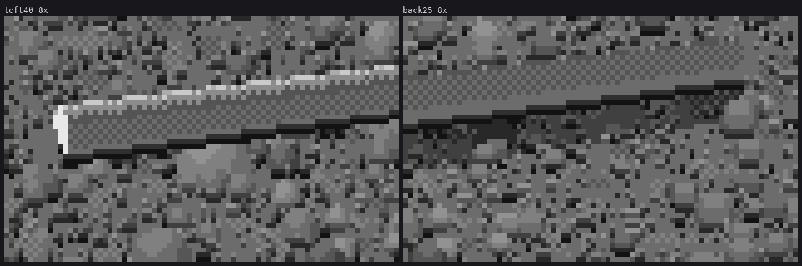
26. elements/driftwood/scratch/s1_crop8.pngBash: Add seam sharpening, sun-side rim, calmer gravel
cd ~/work/pixelart-studies/elements/driftwood/src && python3 - <<'EOF'
s=open('geo.py').read()
s=s.replace(""" TT = np.zeros(p.shape)
for i""",""" TT = np.zeros(p.shape); RL = np.zeros(p.shape[:-1])
for i""")
s=s.replace(""" TT = np.where(m[..., None], ax, TT)
self._T = TT""",""" TT = np.where(m[..., None], ax, TT)
RL = np.where(m, rloc, RL)
self._T = TT; self._R = RL""")
s=s.replace(""" T = np.zeros((H, W, 3)); T[..., 0] = 1""",""" T = np.zeros((H, W, 3)); T[..., 0] = 1
rad = np.zeros((H, W))""")
s=s.replace(""" T[m] = lg._T
return dict(obj=obj, part=part, P=P, N=N, T=T,""",""" T[m] = lg._T; rad[m] = lg._R
return dict(obj=obj, part=part, P=P, N=N, T=T, rad=rad,""")
open('geo.py','w').write(s)
t=open('tech.py').read()
t=t.replace('''def quantize_classes(v, mat=CHECK3, phase=(0, 0), class_steps=CLASS_STEPS):
H, W = v.shape''','''def sharpen(v, diam_px, ref_px=13.0, max_gain=4.0):
"""keep seams ~1-2 px wide whatever the trunk width: Ferrari's 13-px trunk mixes over whole
classes; his 6-px limbs show pure 1-px bands (c4431 2). gain = ref/diam, clipped."""
g = np.clip(ref_px / np.maximum(diam_px, 1e-3), 1.0, max_gain)
k = np.floor(v); f = v - k
return k + np.clip((f - 0.5) * g + 0.5, 0, 1)
def quantize_classes(v, mat=CHECK3, phase=(0, 0), class_steps=CLASS_STEPS):
H, W = v.shape''')
open('tech.py','w').write(t)
r=open('render.py').read()
r=r.replace(""" st, k = tech.quantize_classes(v)
part = buf['part']""",""" diam = 2 * buf['rad'] * cam.scale
v = tech.sharpen(v, diam)
st, k = tech.quantize_classes(v)
part = buf['part']
# sun-side silhouette: where the lit plane meets what is behind it, a 1-px light run
# (contre-jour: this is the only light the log gets -- Ferrari's V02 rim, c5 boulder edge)
if not light.overcast:
lx = light.L @ cam.r; ly = -(light.L @ cam.u)
sdx = int(np.sign(lx)) if abs(lx) > 0.35 else 0
sdy = int(np.sign(ly)) if abs(ly) > 0.35 else 0
if sdx or sdy:
nb = np.roll(np.roll(obj, -sdy, 0), -sdx, 1)
tn = np.roll(np.roll(buf['t'], -sdy, 0), -sdx, 1)
edge = wood & ((nb != obj) & ((nb < 0) | (tn > buf['t'] + 0.05)))
ndl0 = (buf['N'] * light.L).sum(-1)
rimlit = edge & (ndl0 > -0.05) & ~sh
st = np.where(rimlit, np.maximum(st, 6), st)""")
open('render.py','w').write(r)
g=open('gravel.py').read()
g=g.replace("lo = body - 2 if not shd else 1","lo = body - 1 if not shd else 1")
g=g.replace(""" for c in range(1, w - 1):
_put(step, ground, y0 + h, x0 + c, max(0, lo - 1))
def _cobble""",""" if w >= 4:
for c in range(1, w - 1):
_put(step, ground, y0 + h, x0 + c, max(0, lo - 1))
def _cobble""")
open('gravel.py','w').write(g)
EOF
python3 -c "
import sys; sys.path.insert(0,'.')
from s1_log import cell
from util import board
a=cell(270,40); b=cell(180,25); c=cell(90,40); d=cell(0,40)
board([('left40',a[20:70,10:90]),('back25',b[20:70,70:150]),('right40',c[20:70,70:150]),('front40',d[20:70,10:90])],scale=8,cols=2).save('../scratch/s1_crop8.png')
"
# output:
(Bash completed with no output)Read: elements/driftwood/scratch/s1_crop8.png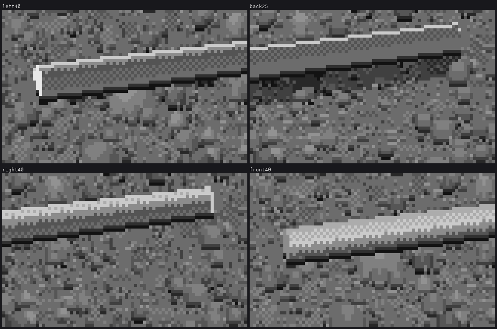
27. elements/driftwood/scratch/s1_crop8.pngBash: Pure silhouette classes; build stage-1 comparison board
cd ~/work/pixelart-studies/elements/driftwood/src && python3 - <<'EOF'
r=open('render.py').read()
r=r.replace(""" v = tech.sharpen(v, diam)
st, k = tech.quantize_classes(v)""",""" v = tech.sharpen(v, diam)
st, k = tech.quantize_classes(v)
# the silhouette row is never dithered: Ferrari's outlines are clean runs, so the outermost
# pixel takes the nearest pure class
nbr_out = np.zeros_like(wood)
for dy, dx in ((1, 0), (-1, 0), (0, 1), (0, -1)):
nbr_out |= np.roll(np.roll(obj, dy, 0), dx, 1) != obj
sil = wood & nbr_out
kk = np.clip(np.round(v), 0, 4).astype(int)
st = np.where(sil, tech.CLASS_STEPS[kk], st)""")
open('render.py','w').write(r)
g=open('gravel.py').read()
g=g.replace("def paint_gravel(buf, cam, light, sh, seed=0, stone_m=0.05, density=0.55, mottle=0.6,","def paint_gravel(buf, cam, light, sh, seed=0, stone_m=0.05, density=0.55, mottle=0.0,")
open('gravel.py','w').write(g)
EOF
cat > s1_compare.py <<'EOF'
"""Stage 1 comparison: photo crop | my log | Ferrari trunk (rotated to lie down), at 8x."""
import sys, os
sys.path.insert(0, os.path.dirname(__file__))
import numpy as np
from PIL import Image
import geo, render
from paint import Light
from util import board, fit_photo
from s0a_pale_trunk import load
ROOT = os.path.expanduser('~/work/pixelart-studies/elements/driftwood')
PHOTO = os.path.expanduser('~/work/pixelart-studies/transfer/refs/braided_driftwood_bar.jpg')
def hero(W=72, H=56, scale=26.0, az=235, el=45, pitch=22, seed=3, yaw_log=35, r=0.24, L=3.2, ends=('sawn', 'snapped')):
cam = geo.Camera(W, H, scale, pitch=pitch, yaw=0.0, look=(0.1, 0, 0.1))
a = np.radians(yaw_log)
ax = np.array([np.cos(a), np.sin(a), 0.0])
lg = geo.Log([-ax * L / 2 + [0, 0, r - 0.03], ax * L / 2 + [0, 0, r * 0.85 - 0.03]], [r, r * 0.85],
ends=ends, seed=seed)
li = Light(cam, az=az, el=el)
cv, buf, sh = render.render([lg], cam, li, seed=seed, stone_m=0.05)
return render.to_rgb(cv, render.grey_ramps())
if __name__ == '__main__':
ph = fit_photo(PHOTO, (310, 470, 526, 638), (72, 56))
phg = np.repeat(np.array(Image.fromarray(ph).convert('L'))[..., None], 3, -1)
mine = hero()
d = load('V09'); f = d['pal'][d['idx'][150:222, 358:414]]
f = np.rot90(f, 1) # his trunk, laid down
board([('photo (grey, /3)', phg), ('mine', mine), ('Ferrari V09 trunk, laid down', f)], scale=8,
title='s1 one log: photo | pixels | Ferrari').save(f'{ROOT}/stages/s1_compare_8x.png')
EOF
cd .. && nice -n 10 python3 src/s1_compare.py
# output:
(Bash completed with no output)Read: elements/driftwood/stages/s1_compare_8x.png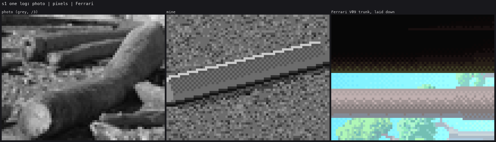
28. elements/driftwood/stages/s1_compare_8x.pngBash: Try light azimuths for hero log
cd ~/work/pixelart-studies/elements/driftwood/src && python3 -c "
import sys; sys.path.insert(0,'.')
from s1_compare import hero
from util import board
p=[('az%d el%d'%(a,e),hero(az=a,el=e)) for a,e in [(300,45),(320,35),(270,50),(330,60)]]
board(p,scale=6,cols=4).save('../scratch/s1_az.png')
"
# output:
(Bash completed with no output)Read: elements/driftwood/scratch/s1_az.png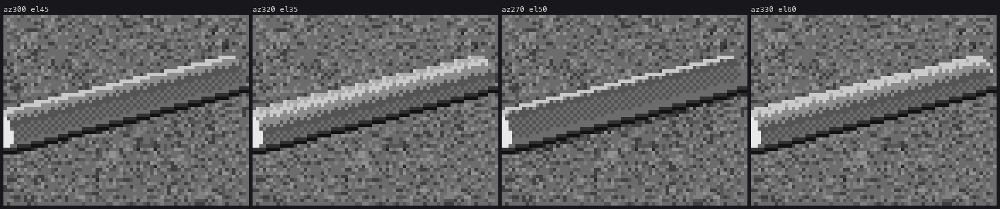
29. elements/driftwood/scratch/s1_az.pngRead: pedagogy/master-copy/crops/z_c4_stones8.png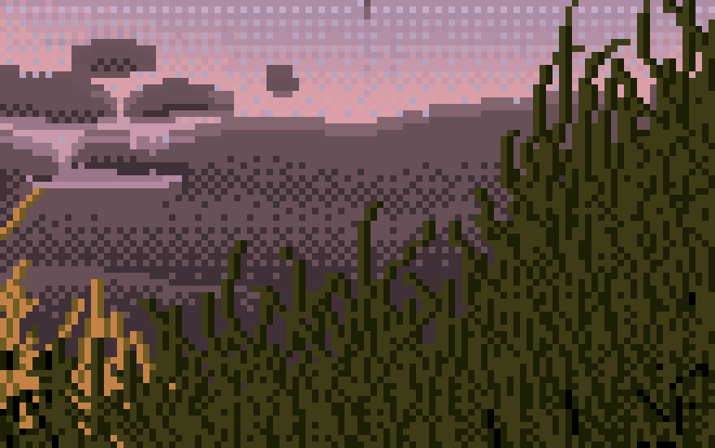
30. pedagogy/master-copy/crops/z_c4_stones8.pngBash: Peek at cobbles sibling's approach
cd ~/work/pixelart-studies/elements/cobbles; sed -n 1,50p cobble.py; ls img scratch | head -40
# output:
"""cobble.py -- one water-worn cobble, painted in step space.
Stage 1 technique: the geometry is a lumpy flattened ellipsoid sitting (slightly sunk) on a
gravel plane, seen by an orthographic camera pitched down. Everything is decided per pixel
as a STEP on one grey ramp (the palette is the light, added later):
0 contact / crevice (black pocket where stone meets ground)
1 core shadow (the band just past the terminator: gets neither sun nor bounce)
2 shadow (body of the shadow side, lit by sky)
3 reflected light (lower shadow side, lit by bounce from sunlit gravel)
---------- terminator: the two families never mix -------------
4 halftone (surface turning away from the sun)
5 light (plane facing the sun)
6 top light (small, only where the normal is closest to the sun)
Ground: 4 lit gravel, 2 cast shadow, 0 contact.
"""
import numpy as np
from scipy import ndimage as ndi
BAYER2 = np.array([[0, 2], [3, 1]]) / 4.0 + 1 / 8.0
BAYER4 = (np.array([[0, 8, 2, 10], [12, 4, 14, 6], [3, 11, 1, 9], [15, 7, 13, 5]]) + 0.5) / 16.0
GREY7 = [(22, 22, 26), (52, 52, 58), (80, 80, 86), (112, 112, 116), (146, 146, 148), (184, 184, 184), (222, 222, 218)]
def unit(v):
v = np.asarray(v, float)
return v / np.linalg.norm(v)
def sun_dir(azimuth_deg, elev_deg):
"""azimuth measured in the ground plane from screen-right (+x) toward away-from-viewer (+y).
135 = sun upper-left-behind the stone (classic painter's light)."""
a, e = np.radians(azimuth_deg), np.radians(elev_deg)
return np.array([np.cos(a) * np.cos(e), np.sin(a) * np.cos(e), np.sin(e)])
class View:
def __init__(self, pitch_deg=35.0):
p = np.radians(pitch_deg)
self.d = np.array([0.0, np.cos(p), -np.sin(p)]) # view direction (into screen)
self.u = np.array([0.0, np.sin(p), np.cos(p)]) # screen up
self.r = np.array([1.0, 0.0, 0.0])
def project(self, P):
"""world points (...,3) -> screen x, screen y (down), depth (smaller = nearer)."""
return P @ self.r, -(P @ self.u), P @ self.d
img:
_f_big.png
_f_ranks.png
_f_small.png
_p1.png
_t1.png
_zoom.png
stage0_copy_v1.png
stage0_copy_v2.png
stage0_copy_v3.png
stage0_copy_v4.png
scratch:
classmap.py
cmpgrid.py
ferrari_contact.png
grid.py
hist.py
p1.py
t1.py
z_snow_boulders.png
z_snow_low.png
z_v11_br.png
z_v19_fall.png
z_v19_low.png
z_v19_mid.png
z_v30_low.png
zoom.pyBash: Crop photo gravel regions
cd ~/work/pixelart-studies/elements/driftwood; python3 -c "
from PIL import Image
im=Image.open('../../transfer/refs/braided_driftwood_bar.jpg')
im.crop((600,560,1024,768)).save('scratch/photo_gravel_near.png')
im.crop((560,400,900,480)).save('scratch/photo_gravel_mid.png')
"
# output:
(Bash completed with no output)Read: elements/driftwood/scratch/photo_gravel_near.png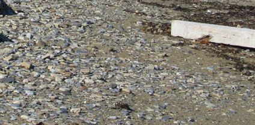
31. elements/driftwood/scratch/photo_gravel_near.pngWrite: elements/driftwood/src/gravel.py
"""gravel.py -- the gravel bar under the logs.
Observed (braided_driftwood_bar.jpg, near and mid ground): the bar is SHINGLE -- flat plates of
grey-beige stone lying on their faces, packed and overlapping, each a light top face with a thin
dark lip on the side away from the sun (its own cast shadow on the stone below); between them
patches of smoother, darker sand/silt.
Painted (Ferrari's stone rule: light top, dark bottom row, flat ends; contrast inside the mark):
* plates are world-space flat ellipses (so they foreshorten with the camera pitch), stacked by
a random height; every pixel knows which plate it is on;
* a plate's face is ONE pure step (5 lit, a few 4/6 by tilt/albedo) -- no dither on a plate;
* the pixel(s) just past a plate's edge on the anti-sun side, not covered by a higher plate,
are its shadow lip: step 2 (the mark's dark partner);
* gaps and sand: step 3, a calm mid-dark field; sand patches (low-frequency) drop the plate
density so the sand reads as a mass;
* in a log's cast shadow everything drops by the family gap: faces 2 (3 on sun-tilted plates),
lips 1, gaps 1.
Scale: plate size in px decides the glyph automatically (a 2-px plate is a light dash over a dark
pixel, a 6-px plate a lozenge with a lit rim). Far away (< 1 px) it becomes a speckle of the
same three steps.
"""
import numpy as np
from paint import hash2
def _world_noise(u, v, seed):
iu, iv = np.floor(u).astype(np.int64), np.floor(v).astype(np.int64)
fu, fv = u - iu, v - iv
fu = fu * fu * (3 - 2 * fu); fv = fv * fv * (3 - 2 * fv)
a = hash2(iu, iv, seed); b = hash2(iu + 1, iv, seed)
c = hash2(iu, iv + 1, seed); d = hash2(iu + 1, iv + 1, seed)
return a * (1 - fu) * (1 - fv) + b * fu * (1 - fv) + c * (1 - fu) * fv + d * fu * fv
def plates(X, Y, stone_m, seed, cover=0.85, sand_scale=6.0, sand=0.35, aspect=(0.45, 0.85)):
"""per point: plate id (-1 none), its height, local (u,v) in the plate, tilt tone."""
c = stone_m
gx, gy = np.floor(X / c).astype(np.int64), np.floor(Y / c).astype(np.int64)
pid = np.full(X.shape, -1, np.int64)
ph = np.full(X.shape, -1.0)
pu = np.zeros_like(X); pv = np.zeros_like(X)
sandf = _world_noise(X / (c * sand_scale), Y / (c * sand_scale), seed + 77)
for dy in (-1, 0, 1):
for dx in (-1, 0, 1):
cx, cy = gx + dx, gy + dy
exists = hash2(cx, cy, seed + 11) < cover * (1 - sand * np.clip((sandf - 0.45) * 3, 0, 1))
jx = hash2(cx, cy, seed + 1); jy = hash2(cx, cy, seed + 2)
ra = c * (0.55 + 0.5 * hash2(cx, cy, seed + 3))
asp = aspect[0] + (aspect[1] - aspect[0]) * hash2(cx, cy, seed + 5)
ang = hash2(cx, cy, seed + 4) * np.pi
px = (cx + jx) * c; py = (cy + jy) * c
vx, vy = X - px, Y - py
ca, sa = np.cos(ang), np.sin(ang)
u = (vx * ca + vy * sa) / ra
v = (-vx * sa + vy * ca) / (ra * asp)
ins = exists & (u * u + v * v < 1.0)
h = hash2(cx, cy, seed + 6)
m = ins & (h > ph)
pid = np.where(m, cx * 100003 + cy, pid)
ph = np.where(m, h, ph)
pu = np.where(m, u, pu); pv = np.where(m, v, pv)
return pid, ph, pu, pv
def paint_gravel(buf, cam, light, sh, seed=0, stone_m=0.05, density=None, cover=0.85,
sand=0.35):
P = buf['P']
X, Y = P[..., 0], P[..., 1]
pid, ph, pu, pv = plates(X, Y, stone_m, seed, cover=cover, sand=sand)
on = pid >= 0
# face tone: most plates at 5; tilt/albedo sends some to 4 or 6
t = hash2(pid, 3, seed + 9)
face = np.where(t < 0.22, 4, np.where(t > 0.88, 6, 5))
step = np.where(on, face, 3)
# sun-side rim: 1 px lighter where the plate edge faces the sun (only on plates >= 4 px)
lx = light.L @ cam.r; ly = -(light.L @ cam.u)
sdx = int(np.sign(lx)) if abs(lx) > 0.3 else 0
sdy = int(np.sign(ly)) if abs(ly) > 0.3 else 0
if sdy == 0 and sdx == 0:
sdy = -1
spx = stone_m * cam.scale
nb_id = np.roll(np.roll(pid, -sdy, 0), -sdx, 1)
nb_h = np.roll(np.roll(ph, -sdy, 0), -sdx, 1)
if spx >= 4:
rim = on & (nb_id != pid) & (nb_h < ph)
step = np.where(rim, np.minimum(face + 1, 6), step)
# shadow lip: the pixel on the anti-sun side of a plate edge, if the neighbour toward the sun
# is a higher plate than this pixel's own
up_id = np.roll(np.roll(pid, sdy, 0), sdx, 1)
up_h = np.roll(np.roll(ph, sdy, 0), sdx, 1)
lip = (up_id >= 0) & (up_id != pid) & (up_h > ph)
step = np.where(lip, 2, step)
if spx >= 7: # thicker plates cast a 2-px lip
up2_id = np.roll(np.roll(pid, 2 * sdy, 0), 2 * sdx, 1)
up2_h = np.roll(np.roll(ph, 2 * sdy, 0), 2 * sdx, 1)
lip2 = (up2_id >= 0) & (up2_id != pid) & (up2_h > ph) & ~on
step = np.where(lip2, 2, step)
if light.overcast:
step = np.where(lip, 3, np.where(on, np.minimum(face, 5) - 0, 3))
step = np.where(on & (t < 0.22), 3, step)
# cast shadow: the family gap
shs = np.where(on, np.where(t > 0.88, 3, 2), 1)
shs = np.where(lip, 1, shs)
step = np.where(sh, shs, step)
return step.astype(int)
Bash: Gravel shingle test against photo
cd ~/work/pixelart-studies/elements/driftwood/src && cat > gtest.py <<'EOF'
import sys, os
sys.path.insert(0, os.path.dirname(__file__))
import numpy as np
from PIL import Image
import geo, render
from paint import Light
from util import board, fit_photo
PHOTO = os.path.expanduser('~/work/pixelart-studies/transfer/refs/braided_driftwood_bar.jpg')
ph = fit_photo(PHOTO, (600, 560, 1024, 768), (106, 52))
panels = [('photo /4', ph)]
for sc, sm in ((26, 0.05), (26, 0.08), (60, 0.05)):
cam = geo.Camera(106, 52, sc, pitch=25)
li = Light(cam, az=300, el=45)
cv, buf, sh = render.render([], cam, li, seed=2, stone_m=sm)
panels.append((f'{sc}px/m stone {sm}', render.to_rgb(cv, render.grey_ramps())))
board(panels, scale=6, cols=2).save('../scratch/gtest.png')
EOF
python3 gtest.py
# output:
(Bash completed with no output)Read: elements/driftwood/scratch/gtest.png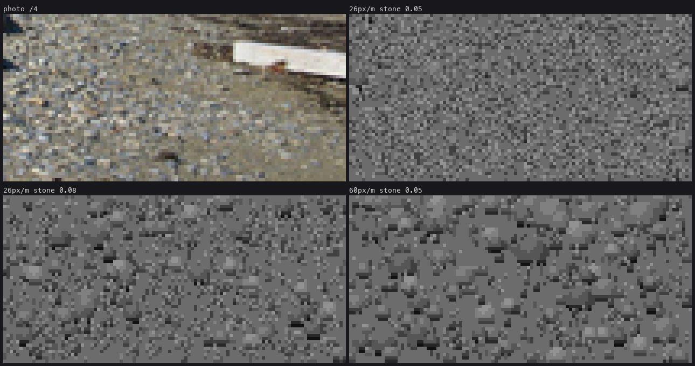
32. elements/driftwood/scratch/gtest.pngBash: Write shingle gravel and test
cd ~/work/pixelart-studies/elements/driftwood/src && cp gravel.py ../scratch/gravel_v1_glyphs.py && cat > gravel.py <<'EOF'
"""gravel.py -- the gravel bar under the logs.
Observed (braided_driftwood_bar.jpg, near and mid ground): the bar is SHINGLE -- flat plates of
grey-beige stone lying on their faces, packed and overlapping, each a light top face with a thin
dark lip on the side away from the sun (its own cast shadow on the stone below); between them
patches of smoother, darker sand/silt.
Painted (Ferrari's stone rule: light top, dark bottom row, flat ends; contrast inside the mark):
* plates are world-space flat ellipses (so they foreshorten with the camera pitch), stacked by
a random height; every pixel knows which plate it is on;
* a plate's face is ONE pure step (5 lit, a few 4/6 by tilt/albedo) -- no dither on a plate;
* the pixel(s) just past a plate's edge on the anti-sun side, not covered by a higher plate,
are its shadow lip: step 2 (the mark's dark partner);
* gaps and sand: step 3, a calm mid-dark field; sand patches (low-frequency) drop the plate
density so the sand reads as a mass;
* in a log's cast shadow everything drops by the family gap: faces 2 (3 on sun-tilted plates),
lips 1, gaps 1.
Scale: plate size in px decides the glyph automatically (a 2-px plate is a light dash over a dark
pixel, a 6-px plate a lozenge with a lit rim). Far away (< 1 px) it becomes a speckle of the
same three steps.
"""
import numpy as np
from paint import hash2
def _world_noise(u, v, seed):
iu, iv = np.floor(u).astype(np.int64), np.floor(v).astype(np.int64)
fu, fv = u - iu, v - iv
fu = fu * fu * (3 - 2 * fu); fv = fv * fv * (3 - 2 * fv)
a = hash2(iu, iv, seed); b = hash2(iu + 1, iv, seed)
c = hash2(iu, iv + 1, seed); d = hash2(iu + 1, iv + 1, seed)
return a * (1 - fu) * (1 - fv) + b * fu * (1 - fv) + c * (1 - fu) * fv + d * fu * fv
def plates(X, Y, stone_m, seed, cover=0.85, sand_scale=6.0, sand=0.35, aspect=(0.45, 0.85)):
"""per point: plate id (-1 none), its height, local (u,v) in the plate."""
c = stone_m
gx, gy = np.floor(X / c).astype(np.int64), np.floor(Y / c).astype(np.int64)
pid = np.full(X.shape, -1, np.int64)
ph = np.full(X.shape, -1.0)
pu = np.zeros_like(X); pv = np.zeros_like(X)
sandf = _world_noise(X / (c * sand_scale), Y / (c * sand_scale), seed + 77)
for dy in (-1, 0, 1):
for dx in (-1, 0, 1):
cx, cy = gx + dx, gy + dy
exists = hash2(cx, cy, seed + 11) < cover * (1 - sand * np.clip((sandf - 0.45) * 3, 0, 1))
jx = hash2(cx, cy, seed + 1); jy = hash2(cx, cy, seed + 2)
ra = c * (0.55 + 0.5 * hash2(cx, cy, seed + 3))
asp = aspect[0] + (aspect[1] - aspect[0]) * hash2(cx, cy, seed + 5)
ang = hash2(cx, cy, seed + 4) * np.pi
px = (cx + jx) * c; py = (cy + jy) * c
vx, vy = X - px, Y - py
ca, sa = np.cos(ang), np.sin(ang)
u = (vx * ca + vy * sa) / ra
v = (-vx * sa + vy * ca) / (ra * asp)
ins = exists & (u * u + v * v < 1.0)
h = hash2(cx, cy, seed + 6)
m = ins & (h > ph)
pid = np.where(m, cx * 100003 + cy, pid)
ph = np.where(m, h, ph)
pu = np.where(m, u, pu); pv = np.where(m, v, pv)
return pid, ph, pu, pv
def _shift(a, dy, dx, fill):
out = np.full_like(a, fill)
H, W = a.shape
ys = slice(max(0, dy), H + min(0, dy)); yd = slice(max(0, -dy), H + min(0, -dy))
xs = slice(max(0, dx), W + min(0, dx)); xd = slice(max(0, -dx), W + min(0, -dx))
out[yd, xd] = a[ys, xs]
return out
def paint_gravel(buf, cam, light, sh, seed=0, stone_m=0.05, density=None, cover=0.85,
sand=0.35):
P = buf['P']
X, Y = P[..., 0], P[..., 1]
pid, ph, pu, pv = plates(X, Y, stone_m, seed, cover=cover, sand=sand)
on = pid >= 0
t = hash2(pid, 3, seed + 9)
face = np.where(t < 0.22, 4, np.where(t > 0.88, 6, 5))
step = np.where(on, face, 3)
lx = light.L @ cam.r; ly = -(light.L @ cam.u)
sdx = int(np.sign(lx)) if abs(lx) > 0.3 else 0
sdy = int(np.sign(ly)) if abs(ly) > 0.3 else 0
if sdy == 0 and sdx == 0:
sdy = -1
spx = stone_m * cam.scale
# value at pixel p+ (toward the sun) / p- (away)
tow_id = _shift(pid, sdy, sdx, -1); tow_h = _shift(ph, sdy, sdx, -1.0)
if spx >= 4:
away_id = _shift(pid, -sdy, -sdx, -1); away_h = _shift(ph, -sdy, -sdx, -1.0)
rim = on & (tow_id != pid) & (tow_h < ph)
step = np.where(rim, np.minimum(face + 1, 6), step)
lip = (tow_id >= 0) & (tow_id != pid) & (tow_h > ph)
step = np.where(lip, 2, step)
if spx >= 7:
t2_id = _shift(pid, 2 * sdy, 2 * sdx, -1); t2_h = _shift(ph, 2 * sdy, 2 * sdx, -1.0)
lip2 = (t2_id >= 0) & (t2_id != pid) & (t2_h > ph) & ~on
step = np.where(lip2, 2, step)
if light.overcast:
step = np.where(on, np.where(t < 0.22, 3, np.where(t > 0.88, 5, 4)), 3)
step = np.where(lip, 2, step)
shs = np.where(on, np.where(t > 0.88, 3, 2), 1)
shs = np.where(lip, 1, shs)
step = np.where(sh, shs, step)
return step.astype(int)
EOF
python3 gtest.py
# output:
(Bash completed with no output)Read: elements/driftwood/scratch/gtest.png 33. elements/driftwood/scratch/gtest.png
33. elements/driftwood/scratch/gtest.png
Bash: Debug hash on negative coordinates
cd ~/work/pixelart-studies/elements/driftwood/src && python3 -c " import numpy as np from paint import hash2 a=np.array([-3,-2,-1,0,1,2]); print(hash2(a,a*0+5,11)) " # output: [0.82403076 0.54132199 0.88071924 0.57921034 0.4861632 0.02614301]
Bash: Fix plate ids and shrink plates
cd ~/work/pixelart-studies/elements/driftwood/src && sed -i '' 's/ pid = np.where(m, cx \* 100003 + cy, pid)/ pid = np.where(m, (cx + 1000000) * 2000003 + (cy + 1000000), pid)/; s/ ra = c \* (0.55 + 0.5 \* hash2(cx, cy, seed + 3))/ ra = c * (0.38 + 0.4 * hash2(cx, cy, seed + 3))/' gravel.py && python3 gtest.py # output: (Bash completed with no output)
Read: elements/driftwood/scratch/gtest.png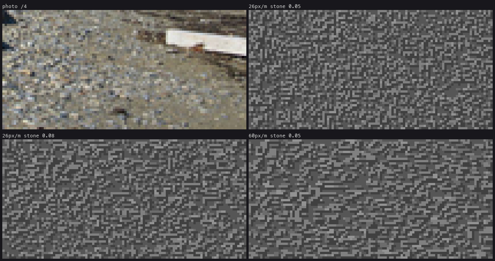
34. elements/driftwood/scratch/gtest.pngBash: Calmer gravel values
cd ~/work/pixelart-studies/elements/driftwood/src && python3 - <<'EOF'
s=open('gravel.py').read()
s=s.replace(" step = np.where(on, face, 3)\n"," step = np.where(on, face, gap_step)\n")
s=s.replace(" step = np.where(lip, 2, step)\n if spx >= 7:"," step = np.where(lip, lip_step, step)\n if spx >= 7:")
s=s.replace(" step = np.where(lip2, 2, step)"," step = np.where(lip2, lip_step, step)")
s=s.replace("""def paint_gravel(buf, cam, light, sh, seed=0, stone_m=0.05, density=None, cover=0.85,
sand=0.35):""","""def paint_gravel(buf, cam, light, sh, seed=0, stone_m=0.05, density=None, cover=0.7,
sand=0.35, gap_step=4, lip_step=3):""")
s=s.replace(" face = np.where(t < 0.22, 4, np.where(t > 0.88, 6, 5))"," face = np.where(t < 0.25, 4, np.where(t > 0.85, 6, 5))")
open('gravel.py','w').write(s)
EOF
python3 gtest.py
# output:
(Bash completed with no output)Read: elements/driftwood/scratch/gtest.png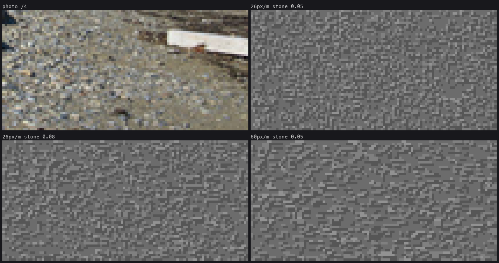
35. elements/driftwood/scratch/gtest.pngBash: Rerun stage-1 comparison
cd ~/work/pixelart-studies/elements/driftwood/src && sed -i '' 's/def hero(W=72, H=56, scale=26.0, az=235, el=45, pitch=22, seed=3, yaw_log=35, r=0.24, L=3.2/def hero(W=72, H=56, scale=26.0, az=320, el=35, pitch=22, seed=3, yaw_log=40, r=0.24, L=2.6/' s1_compare.py && cd .. && python3 src/s1_compare.py # output: (Bash completed with no output)
Read: elements/driftwood/stages/s1_compare_8x.png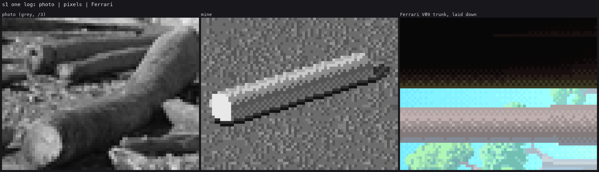
36. elements/driftwood/stages/s1_compare_8x.pngBash: 8x crop of V30 diagonal limb
cd ~/work/pixelart-studies/elements/driftwood/scratch; python3 -c "
from PIL import Image
im=Image.open('../../../pedagogy/master-copy/ref/lw/V30.png')
c=im.crop((380,120,470,190)); c.resize((c.width*8,c.height*8),Image.NEAREST).save('v30_limb8.png')
"
# output:
(Bash completed with no output)Read: elements/driftwood/scratch/v30_limb8.png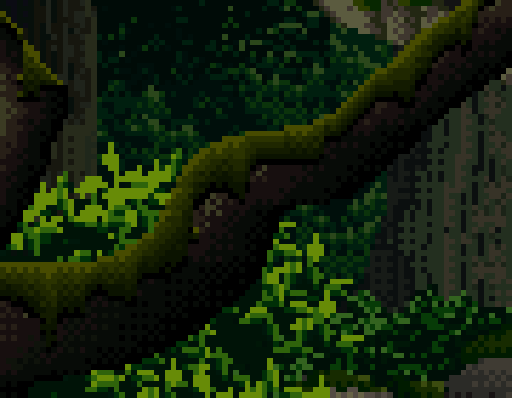
37. elements/driftwood/scratch/v30_limb8.pngBash: Render end-type study
cd ~/work/pixelart-studies/elements/driftwood/src && cat > s1_ends.py <<'EOF'
"""Stage 1b: the ends -- sawn, snapped, splintered -- at two sizes."""
import sys, os
sys.path.insert(0, os.path.dirname(__file__))
import numpy as np
import geo, render
from paint import Light
from util import board
ROOT = os.path.expanduser('~/work/pixelart-studies/elements/driftwood')
def end_cell(kind, scale=60.0, W=64, H=48, az=300, el=40, seed=4, yaw_log=200, r=0.22, pitch=25):
cam = geo.Camera(W, H, scale, pitch=pitch, look=(0.25, 0, 0.1))
a = np.radians(yaw_log)
ax = np.array([np.cos(a), np.sin(a), 0.0])
# the END is at the image centre, the log recedes behind it
p1 = np.array([0.0, 0.0, r - 0.02]); p0 = p1 - ax * 2.5
lg = geo.Log([p0 + [0, 0, 0.0], p1], [r * 1.05, r], ends=('sawn', kind), seed=seed)
li = Light(cam, az=az, el=el)
cv, buf, sh = render.render([lg], cam, li, seed=seed)
return render.to_rgb(cv, render.grey_ramps()), cv, buf
if __name__ == '__main__':
P = []
for k in ('sawn', 'snapped', 'splinter'):
for sc in (60, 30):
P.append((f'{k} {sc}px/m', end_cell(k, scale=sc)[0]))
board(P, scale=6, cols=2, title='s1 ends').save(f'{ROOT}/scratch/s1_ends.png')
EOF
python3 s1_ends.py
# output:
(Bash completed with no output)Read: elements/driftwood/scratch/s1_ends.png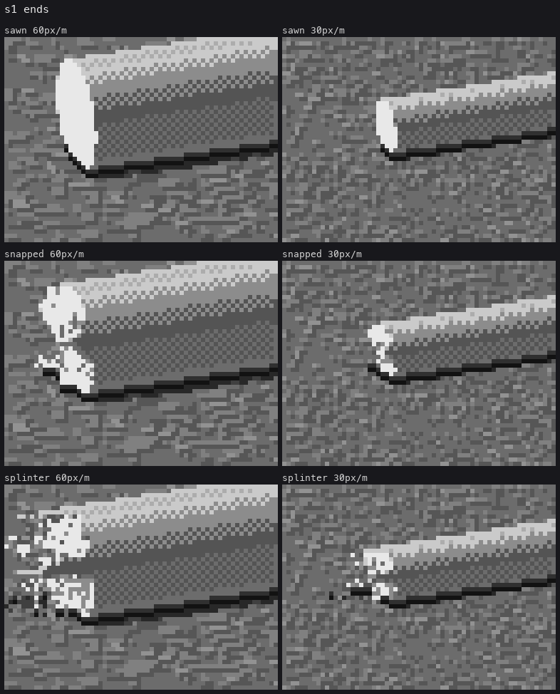
38. elements/driftwood/scratch/s1_ends.pngBash: Rebuild jagged ends as teeth primitives
cd ~/work/pixelart-studies/elements/driftwood/src && python3 - <<'EOF'
s=open('geo.py').read()
a=s.index(" # jagged-end profiles"); b=s.index(" # stub primitives")
s=s[:a]+''' # jagged ends: an oblique base cut plus teeth (tapered round cones) standing out of the
# rim along the axis. snapped = few broad short teeth, a tilted break;
# splinter = many long thin spikes. Teeth thinner than ~1 px are drawn as strokes later.
self.jag = [] # per end: (tilt normal offset vector, base setback)
self.teeth = [] # (a, b, r1, r2, end)
for e in (0, 1):
kind_e = ends[e]
c, out = self.ends_frames()[e]
r_end = self.rad[0 if e == 0 else -1]
up = np.array([0, 0, 1.0])
e1 = norm(np.cross(up, out)); e2 = np.cross(out, e1)
if kind_e == 'sawn':
self.jag.append((out, 0.0))
continue
tilt = rng.uniform(0.15, 0.5) * (1 if kind_e == 'snapped' else 0.6)
ta = rng.uniform(0, 2 * np.pi)
nrm = norm(out + tilt * (np.cos(ta) * e1 + np.sin(ta) * e2))
setback = r_end * (0.25 if kind_e == 'snapped' else 0.5)
self.jag.append((nrm, setback))
nt = rng.integers(3, 6) if kind_e == 'snapped' else rng.integers(7, 13)
for _ in range(nt):
ang = rng.uniform(0, 2 * np.pi)
rr = r_end * rng.uniform(0.35, 0.85)
base = c - out * setback * 1.8 + rr * (np.cos(ang) * e1 + np.sin(ang) * e2)
if kind_e == 'snapped':
ln = r_end * rng.uniform(0.4, 1.0); r1 = r_end * rng.uniform(0.22, 0.38)
else:
ln = r_end * rng.uniform(0.8, 2.6); r1 = r_end * rng.uniform(0.07, 0.2)
inward = -(np.cos(ang) * e1 + np.sin(ang) * e2) * rng.uniform(0.0, 0.25)
tip = base + norm(out + inward) * (ln + setback * 1.8)
self.teeth.append((base, tip, r1, r1 * 0.15, e))
'''+s[b:]
# cut(): use plane with setback
a=s.index(" def cut(self, p, d):"); b=s.index(" def sdf(self, p, with_parts=False):")
s=s[:a]+''' def cut(self, p, d):
"""intersect with the end half-spaces (oblique and set back for broken ends)."""
parts = np.zeros(p.shape[:-1], int)
for e, ((c, out), (nrm, setback)) in enumerate(zip(self.ends_frames(), self.jag)):
dc = (p - (c - out * setback)) @ nrm
parts = np.where(dc > d, e + 1, parts)
d = np.maximum(d, dc)
return d, parts
'''+s[b:]
s=s.replace(""" d, parts = self.cut(p, d)
for (a, b, r1, r2) in self.stub_prims:""",""" d, parts = self.cut(p, d)
for (a, b, r1, r2, e) in self.teeth:
dt = sd_round_cone(p, a, b, r1, max(r2, 1e-4))
# a tooth is only the part of the cone inside the log's cylinder envelope
parts = np.where(dt < d, 5, parts)
d = np.minimum(d, dt)
for (a, b, r1, r2) in self.stub_prims:""")
s=s.replace(""" for (a, b, r1, r2) in self.stub_prims:
lo = np.minimum""",""" for (a, b, r1, r2, e) in self.teeth:
lo = np.minimum(lo, np.minimum(a, b) - r1); hi = np.maximum(hi, np.maximum(a, b) + r1)
for (a, b, r1, r2) in self.stub_prims:
lo = np.minimum""")
open('geo.py','w').write(s)
EOF
python3 s1_ends.py
# output:
(Bash completed with no output)Read: elements/driftwood/scratch/s1_ends.png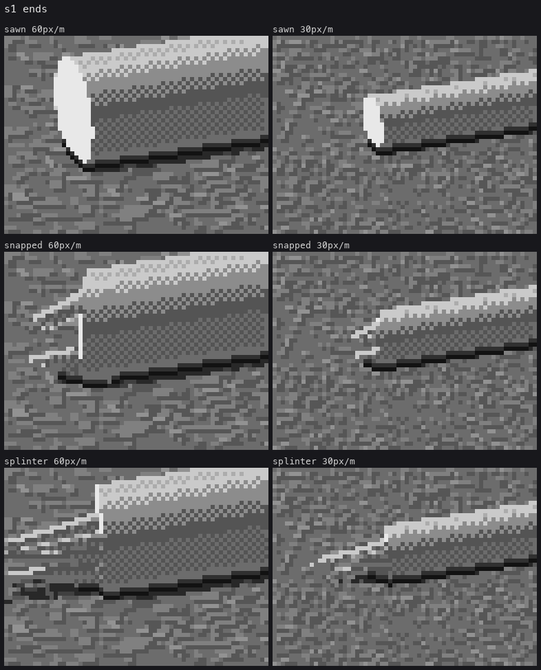
39. elements/driftwood/scratch/s1_ends.pngBash: Jagged ends via Lipschitz-bounded angular profile
cd ~/work/pixelart-studies/elements/driftwood/src && python3 - <<'EOF'
s=open('geo.py').read()
a=s.index(" # jagged ends: an oblique base cut"); b=s.index(" # stub primitives")
s=s[:a]+''' # jagged ends: the shell of the trunk stands out further in some angular sectors (the
# teeth of the break), and the break surface between them falls toward the axis.
# profile(theta) = tooth height; scaled by radial fraction so the break face is a rough
# cone. snapped = 3-5 broad teeth; splinter = 6-10 narrower, longer teeth plus stroke
# spikes (drawn in screen space later, since they are < 1 px wide).
self.jag = []
self.spikes = [] # (base point, direction, length, end) for stroke splinters
ang = np.linspace(0, 2 * np.pi, 256, endpoint=False)
for e in (0, 1):
kind_e = ends[e]
prof = np.zeros(256)
r_end = self.rad[0 if e == 0 else -1]
if kind_e in ('snapped', 'splinter'):
nt = rng.integers(3, 6) if kind_e == 'snapped' else rng.integers(6, 10)
for _ in range(nt):
cang = rng.uniform(0, 2 * np.pi)
w = rng.uniform(0.5, 1.1) if kind_e == 'snapped' else rng.uniform(0.35, 0.7)
h = r_end * (rng.uniform(0.35, 1.0) if kind_e == 'snapped' else rng.uniform(0.6, 2.0))
dd = np.abs(np.angle(np.exp(1j * (ang - cang))))
prof = np.maximum(prof, h * np.clip(1 - dd / w, 0, 1))
prof += r_end * 0.08 * rng.random(256)
c, out = self.ends_frames()[e]
up = np.array([0, 0, 1.0])
e1 = norm(np.cross(up, out)); e2 = np.cross(out, e1)
if kind_e == 'splinter':
for _ in range(rng.integers(4, 9)):
th = rng.uniform(0, 2 * np.pi); rr = r_end * rng.uniform(0.3, 0.95)
base = c + rr * (np.cos(th) * e1 + np.sin(th) * e2)
k = int(th / (2 * np.pi) * 256) % 256
ln = prof[k] * rr / r_end + r_end * rng.uniform(0.5, 1.6)
dirv = norm(out + rng.normal(0, 0.12, 3))
self.spikes.append((base, dirv, ln, e))
lip = 1.0 + np.abs(np.diff(np.concatenate([prof, prof[:1]]))).max() / (2 * np.pi / 256) / max(r_end, 1e-6)
self.jag.append((prof, lip))
'''+s[b:]
a=s.index(" def cut(self, p, d):"); b=s.index(" def sdf(self, p, with_parts=False):")
s=s[:a]+''' def cut(self, p, d):
"""intersect with the end half-spaces; broken ends raise the cut by the tooth profile,
scaled by radial fraction. The cut distance is divided by its Lipschitz bound so sphere
tracing stays conservative."""
parts = np.zeros(p.shape[:-1], int)
for e, ((c, out), (prof, lip)) in enumerate(zip(self.ends_frames(), self.jag)):
r_end = self.rad[0 if e == 0 else -1]
up = np.array([0, 0, 1.0])
e1 = norm(np.cross(up, out)); e2 = np.cross(out, e1)
v = p - c
th = np.arctan2(v @ e1, v @ e2)
rho = np.sqrt((v @ e1) ** 2 + (v @ e2) ** 2) / r_end
idx = ((th % (2 * np.pi)) / (2 * np.pi) * len(prof)).astype(int) % len(prof)
lim = prof[idx] * np.clip(rho, 0, 1) ** 1.5
dc = (v @ out - lim) / (lip * 1.6 if prof.max() > 0 else 1.0)
parts = np.where(dc > d, e + 1, parts)
d = np.maximum(d, dc)
return d, parts
'''+s[b:]
# remove teeth loops
s=s.replace(""" for (a, b, r1, r2, e) in self.teeth:
dt = sd_round_cone(p, a, b, r1, max(r2, 1e-4))
# a tooth is only the part of the cone inside the log's cylinder envelope
parts = np.where(dt < d, 5, parts)
d = np.minimum(d, dt)
""","")
s=s.replace(""" for (a, b, r1, r2, e) in self.teeth:
lo = np.minimum(lo, np.minimum(a, b) - r1); hi = np.maximum(hi, np.maximum(a, b) + r1)
""","")
s=s.replace("b = b + ax * (3.5 * self.rad[-1])","b = b + ax * (4.0 * self.rad[-1])")
s=s.replace("a = a - ax * (3.5 * self.rad[0])","a = a - ax * (4.0 * self.rad[0])")
s=s.replace(" def trace(cam, logs, steps=96):"," def trace(cam, logs, steps=160):")
s=s.replace("def trace(cam, logs, steps=96):","def trace(cam, logs, steps=200):")
open('geo.py','w').write(s)
EOF
grep -n "def trace\|lip \* 1.6" geo.py; python3 s1_ends.py
# output:
218: dc = (v @ out - lim) / (lip * 1.6 if prof.max() > 0 else 1.0)
259:def trace(cam, logs, steps=200):Read: elements/driftwood/scratch/s1_ends.png 40. elements/driftwood/scratch/s1_ends.png
40. elements/driftwood/scratch/s1_ends.png
Bash: Paint sawn and broken end faces
cd ~/work/pixelart-studies/elements/driftwood/src && python3 - <<'EOF'
r=open('render.py').read()
a=r.index(" # end faces (sawn): a flat plane"); b=r.index(" cv.mat[wood] = WOOD")
r=r[:a]+''' # ---------- end faces
st = end_faces(st, buf, logs, light, sh, cam)
'''+r[b:]
r=r.replace("def gravel_steps(", '''def end_faces(st, buf, logs, light, sh, cam):
"""sawn: a flat face -- ONE lit step (6) for the plane, a 1-px darker ring at the rounded
arris (4), growth rings as 1-px runs one step down (5) when the face is >= 16 px, a radial
check (3) from the pith when >= 12 px. In shadow the same marks one family down.
broken: raw wood by its facet normal -- lit facets 6/7, turned facets 4, shadowed 3 --
the palest thing on the log (raw wood has not silvered)."""
obj = buf['obj']; part = buf['part']
ndl = (buf['N'] * light.L).sum(-1)
out = st.copy()
for k, lg in enumerate(logs):
for e in (0, 1):
m = (obj == k) & (part == e + 1)
if not m.any():
continue
r_px = lg.rad[0 if e == 0 else -1] * cam.scale
lit = (ndl > 0.2) & ~sh & ~light.overcast
if lg.ends[e] == 'sawn':
base = np.where(lit, 6, 3)
if light.overcast:
base = np.full(base.shape, 5)
rho = buf['rho']
v = base.copy()
if r_px >= 3:
arris = rho > 1 - 1.0 / max(r_px, 1)
v = np.where(arris, base - 2, v)
if r_px >= 8:
ring = (np.abs(((rho * r_px / 3.2) % 1.0) - 0.5) < 0.16) & (rho < 0.85)
v = np.where(ring, base - 1, v)
if r_px >= 6:
th = buf['th']
ca = hash_angle(lg.seed + e)
chk = (np.abs(np.angle(np.exp(1j * (th - ca)))) * rho * r_px < 0.6) & (rho > 0.12)
v = np.where(chk, base - 3, v)
out = np.where(m, v, out)
else:
v = np.where(lit, np.where(ndl > 0.7, 7, 6), np.where(ndl > 0.0, 4, 3))
if light.overcast:
v = np.where(buf['N'][..., 2] > 0.3, 6, 4)
out = np.where(m, v, out)
return out
def hash_angle(s):
return (np.sin(s * 12.9898) * 43758.5453) % 1.0 * 2 * np.pi
def gravel_steps(''')
open('render.py','w').write(r)
EOF
python3 s1_ends.py
# output:
(Bash completed with no output)Read: elements/driftwood/scratch/s1_ends.png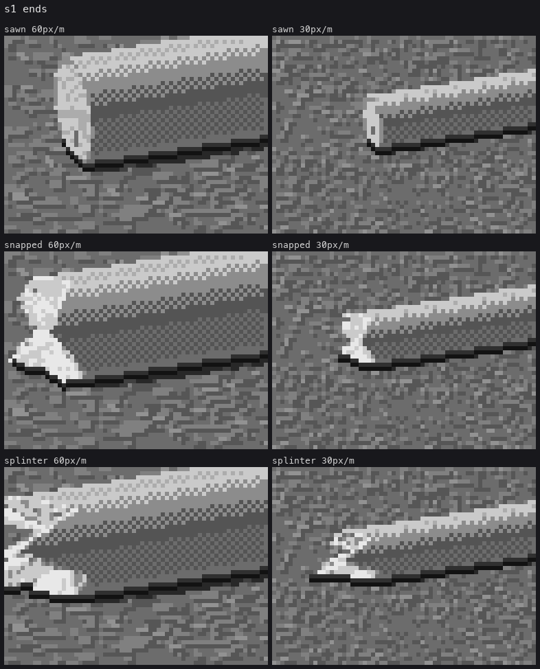
41. elements/driftwood/scratch/s1_ends.pngBash: Render size ladder
cd ~/work/pixelart-studies/elements/driftwood/src && cat > s1_sizes.py <<'EOF'
"""Stage 1c: the same log from 120 px long down to a few pixels."""
import sys, os
sys.path.insert(0, os.path.dirname(__file__))
import numpy as np
import geo, render
from paint import Light
from util import board
ROOT = os.path.expanduser('~/work/pixelart-studies/elements/driftwood')
def size_cell(length_px, W=None, H=None, az=300, el=40, pitch=30, seed=5, yaw_log=12, L=3.0, r=0.16,
ends=('sawn', 'snapped')):
scale = length_px / L
W = W or int(length_px * 1.15) + 8; H = H or max(12, int(length_px * 0.45) + 6)
cam = geo.Camera(W, H, scale, pitch=pitch, look=(0, 0, 0.1))
a = np.radians(yaw_log); ax = np.array([np.cos(a), np.sin(a), 0.0])
lg = geo.Log([-ax * L / 2 + [0, 0, r - 0.02], ax * L / 2 + [0, 0, r * 0.8 - 0.02]], [r, r * 0.8],
ends=ends, seed=seed)
li = Light(cam, az=az, el=el)
cv, buf, sh = render.render([lg], cam, li, seed=seed, stone_m=0.06)
return render.to_rgb(cv, render.grey_ramps())
if __name__ == '__main__':
P = [(f'{n} px long', size_cell(n)) for n in (120, 60, 32, 16, 8, 4)]
board(P, scale=4, cols=2, title='s1 sizes (native x4)').save(f'{ROOT}/scratch/s1_sizes.png')
EOF
python3 s1_sizes.py
# output:
(Bash completed with no output)Read: elements/driftwood/scratch/s1_sizes.png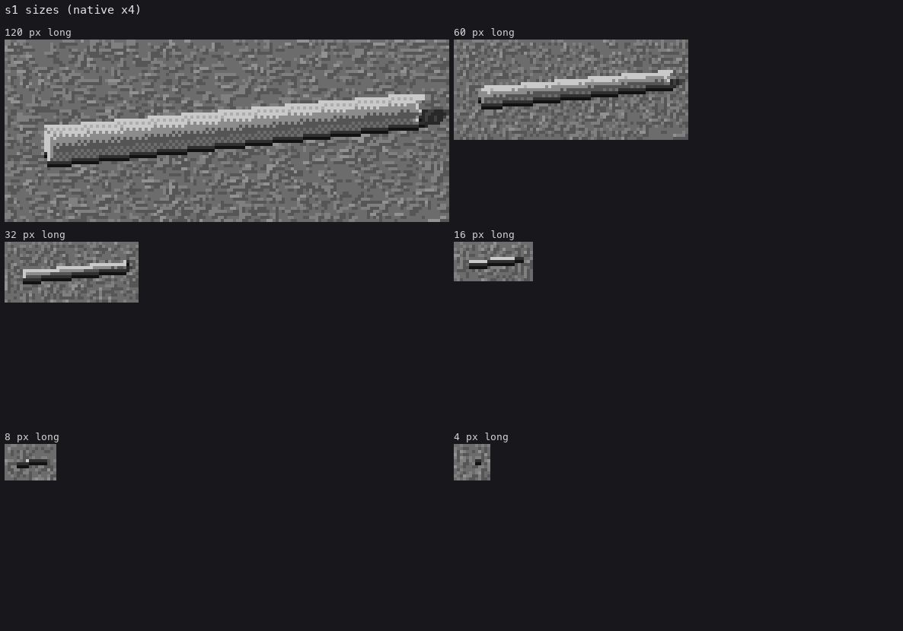
42. elements/driftwood/scratch/s1_sizes.pngBash: Add thin-log stroke glyphs
cd ~/work/pixelart-studies/elements/driftwood/src && python3 - <<'EOF'
r=open('render.py').read()
r=r.replace(""" # ---------- drawing: contact line and the log's bottom row
if o['contact']:
contact(cv, buf, logs, cam)
return cv, buf, sh""",""" # ---------- drawing: contact line and the log's bottom row
if o['contact']:
contact(cv, buf, logs, cam)
# ---------- thin logs: explicit stroke glyphs (the classes collapse below ~4.5 px)
thin_logs(cv, buf, logs, cam, light, sh)
return cv, buf, sh
THIN_ROWS = {1: [6], 2: [6, 2], 3: [6, 4, 2], 4: [5, 6, 4, 2]}
THIN_ROWS_SH = {1: [3], 2: [3, 1], 3: [3, 2, 1], 4: [3, 3, 2, 1]}
def thin_logs(cv, buf, logs, cam, light, sh):
\"\"\"trigger: a log whose projected diameter is < 4.5 px. recipe (Ferrari's narrow limbs:
the classes shrink to one pixel each, then drop from the shadow side): the axis is drawn as a
clean-run line, t = round(diameter) pixels thick; rows from the lit side:
1: light 2: light, core 3: light, half, core
4: edge, light, half, core
and a darkest contact pixel under each column (the smallest light-top / dark-bottom pair).
A lit sawn end adds one end-face pixel (7).\"\"\"
H, W = cv.step.shape
for k, lg in enumerate(logs):
dmax = 2 * lg.rad.max() * cam.scale
if dmax >= 4.5:
continue
# clear what the tracer drew (it aliases at this size)
m = buf['obj'] == k
cv.mat[m] = GRAVEL
sx, sy = cam.project(lg.pts)
for i in range(len(lg.pts) - 1):
x0, y0, x1, y1 = sx[i], sy[i], sx[i + 1], sy[i + 1]
d0 = 2 * lg.rad[i] * cam.scale; d1 = 2 * lg.rad[i + 1] * cam.scale
# top of the silhouette: axis raised by half the projected thickness
n = int(max(abs(x1 - x0), abs(y1 - y0))) + 1
for j in range(n):
f = j / max(n - 1, 1)
x = x0 + (x1 - x0) * f; y = y0 + (y1 - y0) * f
dd = d0 + (d1 - d0) * f
t = int(np.clip(round(dd * 0.9), 1, 4))
xi = int(np.floor(x)); yt = int(np.floor(y - dd * 0.5))
if not (0 <= xi < W):
continue
shd = 0 <= yt < H and sh[yt, xi]
rows = (THIN_ROWS_SH if (shd or light.overcast) else THIN_ROWS)[t]
for rr, v in enumerate(rows):
yy = yt + rr
if 0 <= yy < H:
cv.mat[yy, xi] = WOOD; cv.step[yy, xi] = v
yy = yt + len(rows)
if 0 <= yy < H:
cv.mat[yy, xi] = GRAVEL; cv.step[yy, xi] = 0
# sawn end facing the sun: one bright pixel
for e in (0, 1):
if lg.ends[e] == 'sawn':
c, out = lg.ends_frames()[e]
if out @ light.L > 0.3 and not light.overcast:
ex, ey = cam.project(c)
xi, yi = int(ex[0]), int(ey[0] - lg.rad[0] * cam.scale * 0.5)
if 0 <= xi < W and 0 <= yi < H:
cv.mat[yi, xi] = WOOD; cv.step[yi, xi] = 7""")
open('render.py','w').write(r)
EOF
python3 s1_sizes.py
# output:
(Bash completed with no output)Bash: 8x view of small logs
cd ~/work/pixelart-studies/elements/driftwood/src && python3 -c "
import sys; sys.path.insert(0,'.')
from s1_sizes import size_cell
from util import board
P=[(f'{n}px',size_cell(n)) for n in (32,16,12,8,5)]
board(P,scale=8,cols=5).save('../scratch/s1_small8.png')
"
# output:
(Bash completed with no output)Read: elements/driftwood/scratch/s1_small8.png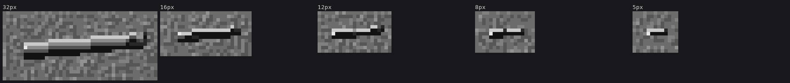
43. elements/driftwood/scratch/s1_small8.pngBash: Lighten thin-log contact
cd ~/work/pixelart-studies/elements/driftwood/src && python3 - <<'EOF'
r=open('render.py').read()
r=r.replace("""THIN_ROWS = {1: [6], 2: [6, 2], 3: [6, 4, 2], 4: [5, 6, 4, 2]}
THIN_ROWS_SH = {1: [3], 2: [3, 1], 3: [3, 2, 1], 4: [3, 3, 2, 1]}""","""THIN_ROWS = {1: [6], 2: [6, 1], 3: [6, 4, 1], 4: [5, 6, 4, 2]}
THIN_ROWS_SH = {1: [3], 2: [3, 1], 3: [3, 2, 1], 4: [3, 3, 2, 1]}""")
r=r.replace(""" yy = yt + len(rows)
if 0 <= yy < H:
cv.mat[yy, xi] = GRAVEL; cv.step[yy, xi] = 0""",""" yy = yt + len(rows)
if 0 <= yy < H and (t == 1 or t >= 4):
cv.mat[yy, xi] = GRAVEL; cv.step[yy, xi] = 0 if t >= 4 else 1""")
open('render.py','w').write(r)
EOF
echo ok
# output:
okBash: Check for critique file
ls ~/work/pixelart-studies/elements/driftwood/; cat ~/work/pixelart-studies/elements/driftwood/CRITIQUE.md 2>/dev/null | head -50 # output: CRITIQUE.md refs scratch sheets src stages # Critique (newest first) ## Round 1 — 2026-09-25 21:22 — stage 0 `stages/s0a_pale_trunk_8x.png`, `s0a2_pipeline_copy_8x.png`; stage 1 `stages/s1_lights_4x.png` **Verdict: stage 0 REVISE (the test was too easy to count); stage 1 REVISE.** Note that you moved on to stage 1 before you had a verdict on stage 0. (My read; your call.) ### Stage 0 (V09 pale trunk) What's working: inside the trunk, the ramp and ordered-dither bands match his almost class for class. s0a2, which gets there from a lit 3-D cylinder rather than a fit, is the more valuable result, because it will rotate to lie down. Why it doesn't count yet: - **The silhouette and the background are his.** Both scripts take his left and right silhouette columns and paste your interior into his frame. So the only thing tested was the cylinder ramp, and a smooth cylinder is the easiest passage in V09. - **The one place you had to draw, you missed.** At the top of `s0a_pale_trunk_8x.png` (right panel, top ~15 rows), his limb leaves the trunk as a separate 2–3 px branch going up-left, with a lit upper edge and sky showing in the crotch. Your fill turns it into a fat blunt blob fused to the trunk. - **Wrong passage for driftwood.** Driftwood is silvered wood with dark longitudinal checks, split ends, knots, and broken stubs. The smooth trunk teaches none of that. Copy a passage that has checks and an end: V09's big foreground trunks (bark with vertical dark strokes), the mossy fallen log at the bottom right of V09, or the fallen trunks in V02. Draw the silhouette yourself. ### Stage 1 (one log, six lights) Viewing crop: `_critic/r1_drift_s1_left_8x.png` (left end of "left 40", 8×). - **It reads as a steel pipe, not a log.** It's a perfectly straight cylinder of constant diameter with a flat square cap for an end. In your refs (`openverse_Driftwood_on_Gravel_bar_*`, `openverse_Driftwood_log_on_sand_in_wind_*`) every log tapers, bends slightly, and has a broken or rounded end, stubs, and dark checks running along the grain. Even in greyscale stage 1, the *form* has to be a log: taper, a slight sag, and an end with a readable cross-section (a lighter end-grain face with a dark rim). - **The body is a single 50% checker band from end to end** between a 1 px lit rim and a dark bottom row. At 8× it's three stripes. There's no core shadow on the turn and no reflected light under it, and the checker density never changes along the log. - **Contact.** The log floats. A log on gravel needs a 1 px darkest contact line and a pocket of black under the belly where it lifts off the ground. The cast shadow in "left 40" and "right 40" is a smudge of a few pixels. - **The ground is TV static.** White-noise grey fights the log at every scale and is the loudest thing in the sheet. Use a flat field or a calm, plain gravel texture for form studies, so the only thing speaking is the log. - The lighting variants do their job (front-lit reads flat, back-lit goes dark with the
Bash: Crop V09 fallen log and foreground trunk
cd ~/work/pixelart-studies/elements/driftwood/scratch; python3 -c "
from PIL import Image
im=Image.open('../../../pedagogy/master-copy/ref/lw/V09.png')
im.crop((380,330,640,480)).resize((260*4,150*4),Image.NEAREST).save('v09_br4.png')
im.crop((400,0,560,330)).resize((160*3,330*3),Image.NEAREST).save('v09_fg3.png')
"
# output:
(Bash completed with no output)Read: elements/driftwood/scratch/v09_br4.png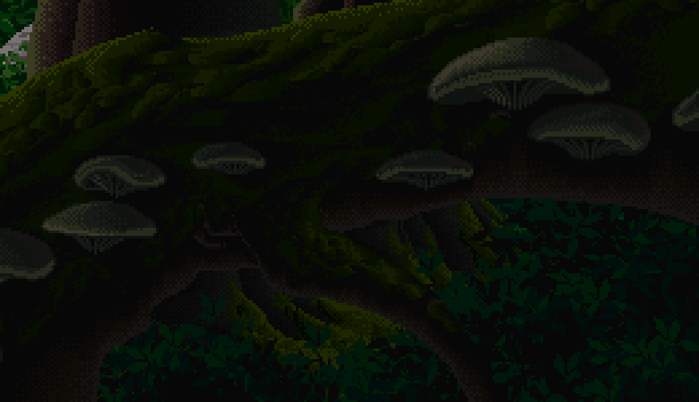
44. elements/driftwood/scratch/v09_br4.pngRead: elements/driftwood/scratch/v09_fg3.png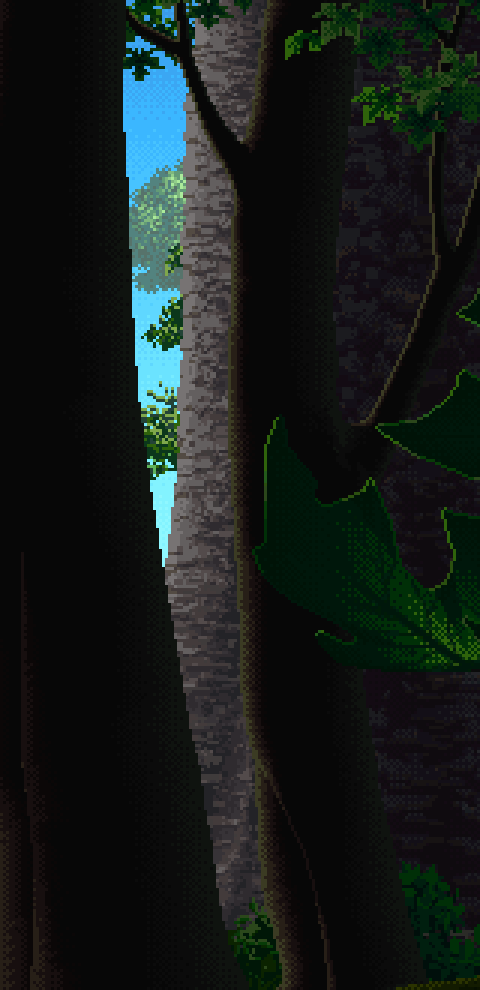
45. elements/driftwood/scratch/v09_fg3.pngBash: Census of V09 grey trunk classes
cd ~/work/pixelart-studies/elements/driftwood/src && python3 -c "
from s0a_pale_trunk import load
import numpy as np
d=load('V09'); idx=d['idx']; pal=d['pal']
sub=idx[60:300,445:495]
u,n=np.unique(sub,return_counts=True)
o=np.argsort(-n)
for i in o[:22]: print(u[i],n[i],tuple(pal[u[i]]), int(pal[u[i]].astype(int)@[30,59,11]//100))
"
# output:
69 1885 (7, 7, 7) 7
70 1180 (11, 11, 11) 11
71 999 (15, 19, 15) 17
92 777 (47, 43, 47) 44
88 676 (99, 95, 95) 96
90 623 (67, 59, 59) 61
89 512 (83, 75, 75) 77
66 449 (39, 31, 23) 32
67 446 (23, 15, 15) 17
91 440 (55, 51, 55) 52
87 418 (119, 115, 115) 116
93 397 (35, 35, 39) 35
31 382 (63, 59, 59) 60
68 375 (11, 7, 7) 8
65 365 (59, 59, 35) 56
13 283 (0, 19, 7) 11
127 222 (83, 131, 127) 116
247 218 (107, 227, 255) 194
43 172 (11, 55, 27) 38
246 157 (95, 215, 255) 183
126 156 (87, 115, 107) 105
249 106 (131, 243, 255) 210Bash: Symbol map of V09 grey trunk ramp
cd ~/work/pixelart-studies/elements/driftwood/src && python3 -c "
from s0a_pale_trunk import load
import numpy as np
d=load('V09'); idx=d['idx']
sym={87:'1',88:'2',89:'3',90:'4',91:'5',92:'6',93:'7'}
for y in range(20,300,2):
print('%3d '%y+''.join(sym.get(int(v),'.') for v in idx[y,448:496]))
" | head -150
# output:
20 ....................222233..6566666766..........
22 ..................11224.....5333336676..........
24 ...................222222222442324446...........
26 ...................222222222434343664...........
28 .....................55.5332246666666...........
30 .....................222332.356666654...........
32 ..............11......222444566666663...........
34 .............1111......2323324....45............
36 .............1111.......3.443.423466............
38 ..............1111........5545555634............
40 ..............11112........44.22423.............
42 ..............11112.........644666..............
44 .............1111122..........6666..............
46 .............11...122..........32...............
48 ..............11121442..........................
50 ..............111222243.........................
52 .............11112212333........................
54 .............1111112232223......................
56 .............1111.422222466.....................
58 .............11112222334.33.....................
60 ..............111144642222333...................
62 ..............111122222232232...................
64 .............111212223...35336..................
66 ..............1122123322222224..................
68 .............11112222422244666..................
70 .............22222223....56666..................
72 ..............111222222223234...................
74 ..............1124.3333342422...................
76 .............1...4.2222356.56...................
78 ............11..4.4444.455656...................
80 ............11111122244.34444...................
82 ...............21123222232226...................
84 .............1114.456..223222...................
86 ............11111143344...666...................
88 ................22322222.3333...................
90 .............11.44445554.3333...................
92 .............111213342.332222...................
94 ............11111222566633422...................
96 ............1111222.332255666...................
98 ...............11144622323333...................
100 .............1111222266.55653...................
102 .............111.422622255554...................
104 .............114..42233344443...................
106 .............1112222222224666...................
108 .............111.222222222335...................
110 .............111222355242235....................
112 .............11113622245.664....................
114 ............111114.222335445....................
116 ...............42424263333.4....................
118 .............1114.2222233666....................
120 ............111..22.66.43655....................
122 ............111212.223565233....................
124 ............1112122324226666....................
126 ............1111244422354555....................
128 ............11111444324.6665....................
130 ...........11112222223344563....................
132 ...........111212224332.3.2..Bash: Measure V02 trunk top/bottom per column
cd ~/work/pixelart-studies/elements/driftwood/src && python3 -c "
from s0a_pale_trunk import load
import numpy as np
d=load('V02'); idx=d['idx']
M=np.isin(idx,[69,70,223,71,72,73])
for x in range(250,425,5):
col=M[370:420,x]
# longest run
best=(0,0);run=0;st=0
for i,v in enumerate(col):
if v:
if run==0: st=i
run+=1
if run>best[0]: best=(run,st)
else: run=0
print(x, 370+best[1], 370+best[1]+best[0]-1, best[0])
"
# output:
250 382 390 9
255 384 386 3
260 393 405 13
265 395 404 10
270 387 405 19
275 389 402 14
280 387 401 15
285 387 401 15
290 371 400 30
295 380 399 20
300 384 398 15
305 382 397 16
310 378 396 19
315 370 395 26
320 383 394 12
325 383 392 10
330 383 390 8
335 374 389 16
340 383 388 6
345 375 388 14
350 384 387 4
355 385 387 3
360 370 383 14
365 387 390 4
370 388 391 4
375 390 394 5
380 392 395 4
385 394 396 3
390 395 399 5
395 397 400 4
400 399 402 4
405 402 407 6
410 403 407 5
415 406 409 4
420 389 403 15Write: elements/driftwood/src/s0b_fallen.py
"""Stage 0B: master copy of Ferrari's fallen dead tree (Living Worlds V02, dusk, native crop
x 250..420, y 358..412). The silhouette is MY sketch (polyline + widths read off his image as a
copyist would, then drawn by my own rasteriser), not his mask.
Procedure found:
* contre-jour: the whole body is ONE near-black class (69). No form inside the mass.
* the only light is a rim (71, dull maroon) on the silhouette facing the glow (up-right):
- on the trunk's top contour: a run of rim pixels ALONG the contour, 1 px thick
(2 px where the contour is near-horizontal: the rim sits on top of the run);
- on each twig (2 px black) the rim is the single right-hand pixel: '##r'.
* twigs are 2-px strokes stepping in clean runs (1:1, 1:2, 2:1), forking in V/Y shapes, with
a 1-px lighter-than-sky gap nowhere -- they are pure silhouette.
* the trunk contour is a sequence of runs that shorten smoothly round the curve (14,10,6,5,4,
4,4,3,3,3,2,2 ...), never jittering.
"""
import sys, os
sys.path.insert(0, os.path.dirname(__file__))
import numpy as np
from PIL import Image
from s0a_pale_trunk import load, ROOT
from util import board
X0, Y0, X1, Y1 = 250, 358, 420, 412
BODY, RIM = 69, 71
# copyist's sketch (native coords): trunk centreline with widths; twigs as polylines (2 px)
TRUNK = [(258, 391, 11), (266, 399, 15), (290, 394, 14), (315, 389, 10), (338, 386, 6),
(352, 386, 4), (372, 390, 4), (395, 398, 4), (420, 409, 4)]
TWIGS = [
[(262, 394), (257, 386), (251, 382)],
[(270, 390), (270, 380), (266, 375), (263, 371)],
[(276, 388), (282, 380), (289, 377)],
[(290, 390), (291, 380), (295, 372), (293, 366)],
[(300, 386), (305, 378), (307, 370), (312, 362)],
[(310, 384), (317, 376), (318, 366)],
[(318, 386), (325, 378), (333, 373), (340, 372)],
[(330, 384), (336, 376), (336, 367), (340, 362)],
[(345, 384), (349, 376), (356, 368), (362, 367)],
[(355, 385), (362, 377), (370, 373)],
[(360, 387), (360, 377), (363, 366), (370, 364)],
]
def line_px(p, q):
"""clean-run line between two points: a DDA on the major axis, rounded minor axis."""
(x0, y0), (x1, y1) = p, q
n = int(max(abs(x1 - x0), abs(y1 - y0))) + 1
t = np.linspace(0, 1, n)
return np.round(x0 + (x1 - x0) * t).astype(int), np.round(y0 + (y1 - y0) * t).astype(int)
def draw(H, W, snap=True):
M = np.zeros((H, W), bool)
# trunk: for each column, a vertical span centred on the interpolated centreline
xs = np.array([p[0] for p in TRUNK]); ys = np.array([p[1] for p in TRUNK])
ws = np.array([p[2] for p in TRUNK])
for x in range(int(xs[0]), int(xs[-1]) + 1):
cy = np.interp(x, xs, ys); w = np.interp(x, xs, ws)
top = int(round(cy - w / 2)); bot = int(round(cy + w / 2)) - 1
for y in range(top, bot + 1):
if 0 <= y - Y0 < H and 0 <= x - X0 < W:
M[y - Y0, x - X0] = True
# twigs: 2-px strokes (the stroke and its right neighbour)
for tw in TWIGS:
for a, b in zip(tw[:-1], tw[1:]):
lx, ly = line_px(a, b)
for x, y in zip(lx, ly):
for dx in (0, 1):
if 0 <= y - Y0 < H and 0 <= x + dx - X0 < W:
M[y - Y0, x + dx - X0] = True
return M
def rim(M):
"""rim = pixels of the mass exposed to the right, or exposed upward where the contour faces
up-right (the pixel up-left is also mass or the one up-right is empty)."""
P = np.pad(M, 1)
right_open = M & ~P[1:-1, 2:]
up_open = M & ~P[:-2, 1:-1]
upright_open = M & ~P[:-2, 2:]
R = right_open | (up_open & upright_open & P[1:-1, :-2])
return R
def main():
d = load('V02'); idx = d['idx']; pal = d['pal']
ref = idx[Y0:Y1, X0:X1]
H, W = ref.shape
M = draw(H, W)
R = rim(M)
mine = ref.copy()
refmass = np.isin(ref, [69, 70, 223, 71, 72, 73])
mine[refmass] = ref[~refmass][0] if (~refmass).any() else ref[0, 0]
# repaint the background under his mass with the nearest non-mass pixel above (so only my
# silhouette is shown)
for x in range(W):
last = None
for y in range(H):
if refmass[y, x]:
if last is not None:
mine[y, x] = last
else:
last = ref[y, x]
mine[M] = BODY
mine[R] = RIM
A = pal[ref]; B = pal[mine]
iou = (M & refmass).sum() / (M | refmass).sum()
rimref = np.isin(ref, [71, 72, 73])
print(f'silhouette IoU {iou:.2f}; rim pixels ref {rimref.sum()} mine {R.sum()}; '
f'rim on rim {(R & rimref).sum()}')
board([('Ferrari V02 (native 170x54)', A), ('my copy: sketch + body/rim rules', B)], scale=6, cols=1,
title='s0b fallen dead tree, contre-jour').save(f'{ROOT}/stages/s0b_fallen_6x.png')
if __name__ == '__main__':
main()
Bash: Render V02 fallen tree copy
cd ~/work/pixelart-studies/elements/driftwood && python3 src/s0b_fallen.py # output: silhouette IoU 0.46; rim pixels ref 392 mine 330; rim on rim 45
Read: elements/driftwood/stages/s0b_fallen_6x.png 46. elements/driftwood/stages/s0b_fallen_6x.png
46. elements/driftwood/stages/s0b_fallen_6x.png
Bash: Check skimage availability
python3 -c "import skimage, scipy; print(skimage.__version__, scipy.__version__)" # output: 0.25.2 1.14.0
Bash: Derive coarse sketch from skeleton, redraw by rules
cd ~/work/pixelart-studies/elements/driftwood/src && python3 - <<'EOF'
s=open('s0b_fallen.py').read()
s=s.replace("X0, Y0, X1, Y1 = 250, 358, 420, 412","X0, Y0, X1, Y1 = 250, 358, 362, 412")
a=s.index("# copyist's sketch"); b=s.index("def line_px")
s=s[:a]+'''
def sketch_from(ref):
"""the copyist's sketch, made the way a copyist makes one: the big shape reduced to a few
vertices. Trunk: centre and width sampled every 8 columns of the thick mass. Twigs: the
skeleton of the thin mass, traced into paths and simplified (Douglas-Peucker, 1.2 px), so
only the gesture survives; the strokes themselves are redrawn by my rules."""
from scipy import ndimage as ndi
from skimage.morphology import skeletonize
from skimage.measure import approximate_polygon
mass = np.isin(ref, [69, 70, 223, 71, 72, 73])
thick = ndi.binary_opening(mass, np.ones((5, 5)))
trunk = []
for x in range(0, ref.shape[1], 8):
ys = np.nonzero(thick[:, x])[0]
if len(ys) >= 3:
trunk.append((x + X0, Y0 + 0.5 * (ys.min() + ys.max() + 1), ys.max() - ys.min() + 1))
thin = mass & ~ndi.binary_dilation(thick, iterations=1)
sk = skeletonize(thin)
lab, n = ndi.label(sk, np.ones((3, 3)))
twigs = []
for i in range(1, n + 1):
ys, xs = np.nonzero(lab == i)
if len(ys) < 4:
continue
# order the pixels by walking from an endpoint (greedy nearest neighbour)
pts = list(zip(xs, ys)); path = [pts.pop(int(np.argmax(ys)))]
while pts:
d = [abs(p[0] - path[-1][0]) + abs(p[1] - path[-1][1]) for p in pts]
j = int(np.argmin(d))
if d[j] > 3:
break
path.append(pts.pop(j))
poly = approximate_polygon(np.array(path, float), tolerance=1.2)
twigs.append([(p[0] + X0, p[1] + Y0) for p in poly])
return trunk, twigs
TRUNK, TWIGS = None, None
'''+s[b:]
s=s.replace(""" ref = idx[Y0:Y1, X0:X1]
H, W = ref.shape
M = draw(H, W)""",""" ref = idx[Y0:Y1, X0:X1]
H, W = ref.shape
global TRUNK, TWIGS
TRUNK, TWIGS = sketch_from(ref)
print('sketch:', len(TRUNK), 'trunk samples,', len(TWIGS), 'twigs,', sum(len(t) for t in TWIGS), 'vertices')
M = draw(H, W)""")
open('s0b_fallen.py','w').write(s)
EOF
cd .. && python3 src/s0b_fallen.py
# output:
sketch: 11 trunk samples, 11 twigs, 30 vertices
silhouette IoU 0.55; rim pixels ref 284 mine 154; rim on rim 26Read: elements/driftwood/stages/s0b_fallen_6x.png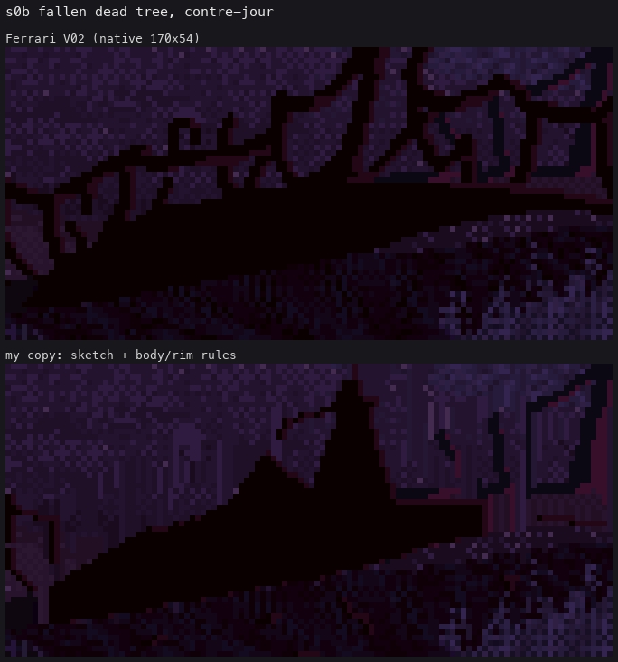
47. elements/driftwood/stages/s0b_fallen_6x.pngBash: Print V02 left-part symbol map with column ruler
cd ~/work/pixelart-studies/elements/driftwood/src && python3 -c "
from s0a_pale_trunk import load
import numpy as np
d=load('V02'); idx=d['idx']
sym={69:'#',70:'#',223:'#',71:'r',72:'r',73:'r'}
print(' '+''.join(str((x//10)%10) if x%10==0 else ' ' for x in range(250,362)))
for y in range(358,412):
print('%3d '%y+''.join(sym.get(int(v),'.') for v in idx[y,250:362]))
"
# output:
5 6 7 8 9 0 1 2 3 4 5 6
358 ................................................................#####rr....###r.................................
359 ................................................................#####rr....##r..................................
360 ...............................................................#####rr....###r..................................
361 ..............................................................######rr....##r...................................
362 ..............................................................######rr...###r...................................
363 .............................................................###r.###r...###r.............##r...................
364 ............................................................###r.###r.....##r............####rr.................
365 ...........................................................###r..###r.....###r.........#######rr................
366 ..................................................##.....####r...###r.....#####rr...#####rr..###r...............
367 .................................................########rrrr....###r.....###########rrrrr....##r..............#
368 .................................................########rrr....###r......##########rrrr......######rr........##
369 .................................................#######rr......###r......##r.#####rr..........#############r###
370 .........................................#.......###r...........###r......####rr................###############r
371 ...............................###r.....##r......###r...........###r......####r.................##r.##########rr
372 ..............................####rr....##r......##r...........###r.......###r..................##r..........##r
373 ..............................##..##...##r......###r...........###r......####r..................##r..........##r
374 ..............................##..##...##r....#####r..........####r.....#####rr.....##..........##r..........##r
375 ..............................##..##...##r..#######r..........####r....###r.##r....###r........###r..........##r
376 .......................###r...##.......#########r##r..........###r.....##r..###r...###r........##r...........##r
377 .....................####rr...###############rrrr##r.........####r....##r....##r..####r........##r...........##r
378 ...................##################rrrrrrrr.#####r........####rr...##r.....#######rrr........##r...........##r
379 .................##################rrrrrrrr...##r.##r......#####rr..##r.......####r.##r........##r...........##r
380 ................######rr..####rr.......##r...##r..##r.....######rr.##r.........##r..##r.......###r...........###
381 ..............####rr.##r...............##r...##r...##r..#########rrrr...............##r.......##r............###
382 r...........####rr...##r.....##........##r..##r....############rrrrr.......Bash: Hand-drawn sketch for V02 copy
cd ~/work/pixelart-studies/elements/driftwood/src && python3 - <<'EOF'
s=open('s0b_fallen.py').read()
a=s.index("TRUNK, TWIGS = None, None"); b=s.index("def line_px")
s=s[:a]+'''# my sketch, read off his image column by column (a copyist's drawing, ~60 vertices total)
TRUNK_POLY = [(253, 406), (256, 399), (259, 391), (263, 385), (266, 381), (270, 378), (296, 377),
(304, 381), (318, 382), (336, 383), (361, 386), (361, 388), (333, 391), (317, 395),
(290, 400), (263, 406)]
# twigs: (polyline, width) -- width in px of the black stroke; the rim is added by the rule
TWIGS = [
([(316, 358), (317, 363), (316, 370), (314, 375), (312, 381)], 3),
([(307, 367), (311, 363), (315, 359)], 3),
([(327, 358), (325, 366), (323, 375), (320, 378), (318, 381)], 3),
([(328, 369), (328, 375), (333, 378), (335, 383)], 2),
([(341, 363), (336, 366), (334, 372), (334, 377), (335, 383)], 2),
([(346, 369), (346, 377), (344, 384)], 3),
([(359, 368), (359, 384)], 2),
([(300, 366), (301, 370), (298, 375), (296, 378)], 3),
([(290, 370), (290, 380), (291, 388)], 2),
([(283, 371), (279, 376), (273, 378)], 3),
([(281, 371), (285, 372), (285, 376)], 2),
([(270, 380), (262, 383), (250, 385)], 3),
([(272, 380), (272, 392)], 2),
([(258, 385), (258, 398)], 2),
([(252, 383), (251, 392), (253, 399)], 2),
]
'''+s[b:]
a=s.index("def draw(H, W, snap=True):"); b=s.index("def rim(M):")
s=s[:a]+'''def draw(H, W, snap=True):
from skimage.draw import polygon as fillpoly
M = np.zeros((H, W), bool)
xs = np.array([p[0] for p in TRUNK_POLY]) - X0; ys = np.array([p[1] for p in TRUNK_POLY]) - Y0
rr, cc = fillpoly(ys, xs, (H, W))
M[rr, cc] = True
for tw, w in TWIGS:
for a, b in zip(tw[:-1], tw[1:]):
lx, ly = line_px(a, b)
for x, y in zip(lx, ly):
for dx in range(w):
if 0 <= y - Y0 < H and 0 <= x + dx - X0 < W:
M[y - Y0, x + dx - X0] = True
return M
'''+s[b:]
s=s.replace(""" global TRUNK, TWIGS
TRUNK, TWIGS = sketch_from(ref)
print('sketch:', len(TRUNK), 'trunk samples,', len(TWIGS), 'twigs,', sum(len(t) for t in TWIGS), 'vertices')
""","")
open('s0b_fallen.py','w').write(s)
EOF
cd .. && python3 src/s0b_fallen.py
# output:
silhouette IoU 0.65; rim pixels ref 284 mine 274; rim on rim 66
[This command modified 1 file you've previously read: ../elements/driftwood/src/s0b_fallen.py. Call Read before editing.]Read: elements/driftwood/stages/s0b_fallen_6x.png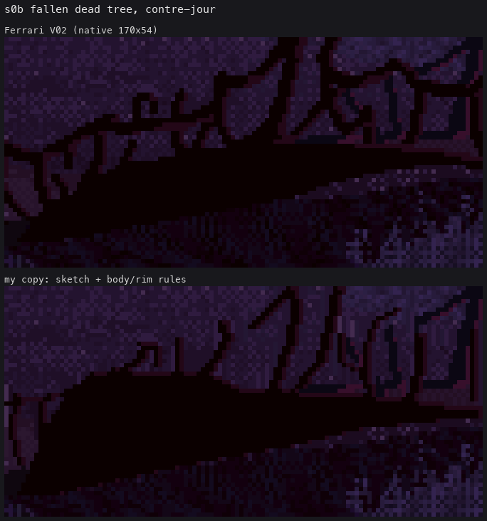
48. elements/driftwood/stages/s0b_fallen_6x.pngBash: Correct trunk polygon and horizontal branch
cd ~/work/pixelart-studies/elements/driftwood/src && python3 - <<'EOF'
s=open('s0b_fallen.py').read()
a=s.index("TRUNK_POLY = ["); b=s.index("# twigs:")
s=s[:a]+'''TRUNK_POLY = [(253, 406), (256, 400), (262, 395), (268, 391), (277, 387), (290, 384), (302, 383),
(336, 383), (361, 386), (361, 388), (333, 391), (317, 395), (290, 400), (263, 406)]
'''+s[b:]
s=s.replace(" ([(270, 380), (262, 383), (250, 385)], 3),"," ([(301, 382), (296, 378), (285, 377), (270, 378), (262, 382), (250, 385)], 3),\n ([(296, 377), (301, 375)], 3),")
open('s0b_fallen.py','w').write(s)
EOF
cd .. && python3 src/s0b_fallen.py
# output:
silhouette IoU 0.65; rim pixels ref 284 mine 317; rim on rim 75Read: elements/driftwood/stages/s0b_fallen_6x.png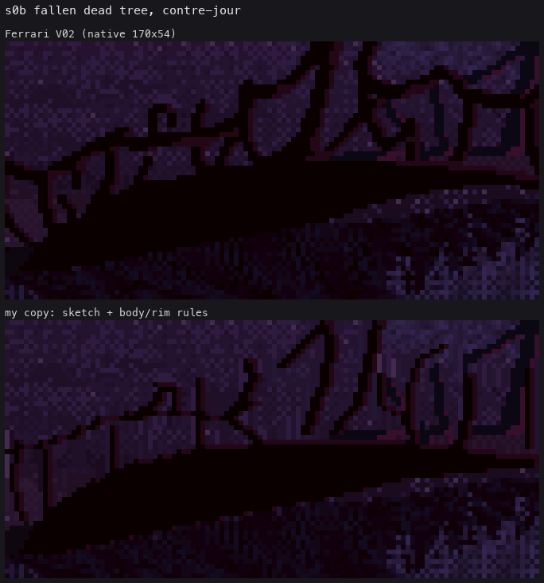
49. elements/driftwood/stages/s0b_fallen_6x.pngBash: Bent tapered logs, worn ends, belly pocket
cd ~/work/pixelart-studies/elements/driftwood/src && python3 - <<'EOF'
s=open('geo.py').read()
# worn ends: no cut
s=s.replace(""" for e, ((c, out), (prof, lip)) in enumerate(zip(self.ends_frames(), self.jag)):
r_end = self.rad[0 if e == 0 else -1]""",""" for e, ((c, out), (prof, lip)) in enumerate(zip(self.ends_frames(), self.jag)):
if self.ends[e] == 'worn':
continue
r_end = self.rad[0 if e == 0 else -1]""")
s=s.replace(""" if i == 0:
a = a - ax * (4.0 * self.rad[0])
if i == n - 2:
b = b + ax * (4.0 * self.rad[-1])""",""" if i == 0 and self.ends[0] != 'worn':
a = a - ax * (4.0 * self.rad[0])
if i == n - 2 and self.ends[1] != 'worn':
b = b + ax * (4.0 * self.rad[-1])""")
s+='''
def make_log(L=3.0, r=0.16, yaw=0.0, centre=(0, 0), taper=0.75, bend=0.06, sag=0.03, lumps=0.08,
nseg=7, ends=('sawn', 'snapped'), seed=0, sink=0.015, stubs=(), rootwad=None,
kind='drift', wet=0.0, lift=None):
"""a driftwood log lying on the ground: a gently bent, tapering, lumpy axis.
bend: lateral bow (fraction of L); sag: vertical bow; lumps: radius noise (fraction).
The log is lowered until its lowest point touches the ground (minus sink), so a bowed log
rests on two contacts and lifts off between them -- the belly pocket."""
rng = np.random.default_rng(seed)
t = np.linspace(-0.5, 0.5, nseg)
ph = rng.uniform(0, 2 * np.pi)
lat = bend * L * (np.sin(np.pi * (t + 0.5)) * rng.choice([-1, 1]) + 0.3 * np.sin(2 * np.pi * t + ph))
vert = sag * L * np.sin(np.pi * (t + 0.5)) * rng.choice([-1, 1])
rad = r * (1 + (taper - 1) * (t + 0.5)) * (1 + lumps * (rng.random(nseg) - 0.5) * 2)
a = np.radians(yaw)
ax = np.array([np.cos(a), np.sin(a), 0.0]); side = np.array([-np.sin(a), np.cos(a), 0.0])
pts = np.array([centre[0], centre[1], 0.0]) + np.outer(t * L, ax) + np.outer(lat, side)
pts[:, 2] = rad + vert
if lift is not None:
pts[:, 2] += np.interp(t, [-0.5, 0.5], lift)
pts[:, 2] -= (pts[:, 2] - rad).min() + sink
return Log(pts, rad, ends=ends, stubs=stubs, rootwad=rootwad, seed=seed, kind=kind, wet=wet)
def belly(buf, logs, cam):
"""ground pixels that lie UNDER a log (a vertical ray from the ground hits it): the pocket
where the log lifts off the gravel."""
P = buf['P']; g = buf['obj'] == -1
out = np.zeros(g.shape, bool)
if not logs:
return out
p = P[g]
hit = np.zeros(len(p), bool)
hmax = max(2 * lg.rad.max() for lg in logs)
for h in np.linspace(0.01, hmax, 10):
q = p + np.array([0, 0, h])
for lg in logs:
hit |= lg.sdf(q) < 0
out[g] = hit
return out
'''
open('geo.py','w').write(s)
r=open('render.py').read()
r=r.replace("""def contact(cv, buf, logs, cam):""","""def contact(cv, buf, logs, cam):
pocket = geo.belly(buf, logs, cam)
cv.step[pocket & (cv.mat == GRAVEL)] = np.minimum(cv.step[pocket & (cv.mat == GRAVEL)], 0)
return _contact_line(cv, buf, logs, cam)
def _contact_line(cv, buf, logs, cam):""")
open('render.py','w').write(r)
EOF
python3 - <<'EOF'
import sys; sys.path.insert(0,'~/work/pixelart-studies/elements/driftwood/src')
import numpy as np, geo, render
from paint import Light
from util import board
P=[]
for az,el,name in [(300,40,'left-front 40'),(180,25,'back 25'),(90,35,'right 35'),(330,60,'high')]:
cam=geo.Camera(150,70,40,pitch=30)
lg=geo.make_log(L=3.2,r=0.17,yaw=10,seed=3,ends=('sawn','snapped'))
cv,buf,sh=render.render([lg],cam,Light(cam,az=az,el=el),seed=2,stone_m=0.06)
P.append((name,render.to_rgb(cv,render.grey_ramps())))
board(P,scale=5,cols=2).save('~/work/pixelart-studies/elements/driftwood/scratch/s1_v3.png')
EOF
# output:
(Bash completed with no output)Read: elements/driftwood/scratch/s1_v3.png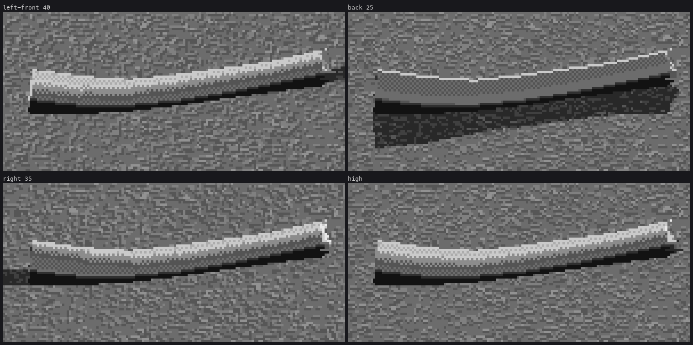
50. elements/driftwood/scratch/s1_v3.pngBash: 8x crop of hero log
cd ~/work/pixelart-studies/elements/driftwood/src && cat > s1_hero.py <<'EOF'
"""Stage 1 hero: one log in greyscale; photo | pixels | Ferrari at 8x, plus the light sweep."""
import sys, os
sys.path.insert(0, os.path.dirname(__file__))
import numpy as np
from PIL import Image
import geo, render
from paint import Light
from util import board, fit_photo
from s0a_pale_trunk import load
ROOT = os.path.expanduser('~/work/pixelart-studies/elements/driftwood')
PHOTO = os.path.expanduser('~/work/pixelart-studies/transfer/refs/braided_driftwood_bar.jpg')
def hero(az=300, el=40, W=150, H=70, scale=40, pitch=30, seed=3, ends=('sawn', 'snapped'), yaw=10,
L=3.2, r=0.17, flat=False, **kw):
cam = geo.Camera(W, H, scale, pitch=pitch)
lg = geo.make_log(L=L, r=r, yaw=yaw, seed=seed, ends=ends, **kw)
cv, buf, sh = render.render([lg], cam, Light(cam, az=az, el=el), seed=2, stone_m=0.06,
opts=dict(gravel=not flat))
return render.to_rgb(cv, render.grey_ramps())
if __name__ == '__main__':
a = hero()
board([('left-front 40, 8x crop', a[15:60, 0:75]), ('right half', a[15:60, 75:150])], scale=8, cols=1).save(f'{ROOT}/scratch/s1_hero8.png')
EOF
python3 s1_hero.py
# output:
(Bash completed with no output)Read: elements/driftwood/scratch/s1_hero8.png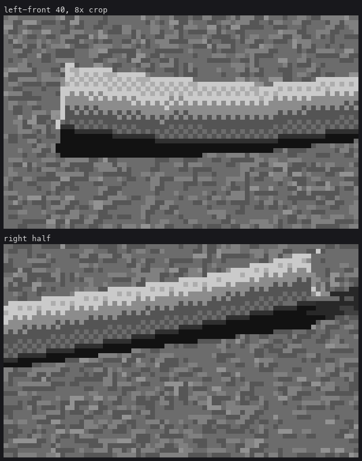
51. elements/driftwood/scratch/s1_hero8.pngBash: Debug class coordinate down a column
cd ~/work/pixelart-studies/elements/driftwood/src && python3 -c " import sys; sys.path.insert(0,'.') import numpy as np, geo, render, tech from paint import Light cam=geo.Camera(150,70,40,pitch=30) lg=geo.make_log(L=3.2,r=0.17,yaw=10,seed=3) li=Light(cam,az=300,el=40) buf=geo.trace(cam,[lg]) d,phL=tech.normal_plane_angles(buf['N'],-cam.f,li.L,buf['T']) v=tech.cylinder_classes(d,phL) x=40 ys=np.nonzero(buf['obj'][:,x]>=0)[0] for y in ys: print(y, round(float(d[y,x]),1), round(float(phL[y,x]),1), round(float(v[y,x]),2), round(float((buf['N'][y,x]@li.L)),2)) " # output: 29 28.7 -31.4 3.73 0.54 30 14.4 -31.4 3.6 0.6 31 2.8 -31.4 3.43 0.62 32 -7.3 -31.4 2.84 0.62 33 -16.8 -31.4 2.37 0.6 34 -25.8 -31.4 2.06 0.56 35 -34.7 -31.4 1.75 0.51 36 -43.7 -31.4 1.44 0.44 37 -53.1 -31.4 1.09 0.36 38 -63.0 -31.4 0.72 0.27 39 -73.9 -31.4 0.45 0.15 40 -87.2 -31.4 0.33 0.0 41 -109.5 -31.4 0.11 -0.24
Bash: Limit belly pocket to small clearance
cd ~/work/pixelart-studies/elements/driftwood/src && python3 - <<'EOF'
s=open('geo.py').read()
a=s.index("def belly(buf, logs, cam):")
s=s[:a]+'''def belly(buf, logs, cam, max_gap_px=2.5):
"""ground pixels UNDER a log with a small clearance (a vertical ray from the ground meets
the log within max_gap_px): the dark pocket where a log lifts off the gravel. Larger gaps
are simply ground in the log's shadow."""
P = buf['P']; g = buf['obj'] == -1
out = np.zeros(g.shape, bool)
if not logs:
return out
p = P[g]
hit = np.zeros(len(p), bool)
hmax = max_gap_px / cam.scale
for h in np.linspace(0.2, 1.0, 5) * hmax:
q = p + np.array([0, 0, h])
for lg in logs:
hit |= lg.sdf(q) < 0
out[g] = hit
return out
'''
open('geo.py','w').write(s)
EOF
python3 s1_hero.py
# output:
(Bash completed with no output)Read: elements/driftwood/scratch/s1_hero8.png 52. elements/driftwood/scratch/s1_hero8.png
52. elements/driftwood/scratch/s1_hero8.png
Bash: Generate stage 1 deliverable boards
cd ~/work/pixelart-studies/elements/driftwood/src && cat > s1_log.py <<'EOF'
"""Stage 1: one log in greyscale -- lights, ends, sizes. Writes stages/s1_*.png"""
import sys, os, time
sys.path.insert(0, os.path.dirname(__file__))
import numpy as np
import geo, render
from paint import Light
from util import board
ROOT = os.path.expanduser('~/work/pixelart-studies/elements/driftwood')
def cell(az, el, flat=False, W=150, H=70, scale=40, pitch=30, seed=3, ends=('sawn', 'snapped'), yaw=10,
L=3.2, r=0.17, overcast=False, look=(0, 0, 0), **kw):
cam = geo.Camera(W, H, scale, pitch=pitch, look=look)
lg = geo.make_log(L=L, r=r, yaw=yaw, seed=seed, ends=ends, **kw)
li = Light(cam, az=az, el=el, overcast=overcast)
cv, buf, sh = render.render([lg], cam, li, seed=2, stone_m=0.06, opts=dict(gravel=not flat))
return render.to_rgb(cv, render.grey_ramps())
LIGHTS = [('left-front 40', 300, 40, False), ('right-front 40', 60, 40, False),
('back-left 30', 220, 30, False), ('back-right 25', 150, 25, False),
('high 70', 330, 70, False), ('overcast', 0, 80, True)]
if __name__ == '__main__':
t = time.time()
for flat in (True, False):
P = [(n, cell(a, e, flat=flat, overcast=o)) for n, a, e, o in LIGHTS]
tag = 'flat' if flat else 'gravel'
board(P, scale=4, cols=2, title=f's1 one log, six lights ({tag} ground), 30 deg, 40 px/m, native x4'
).save(f'{ROOT}/stages/s1_lights_{tag}_4x.png')
# ends: each end at the centre, two sizes
P = []
for k in ('sawn', 'worn', 'snapped', 'splinter'):
for sc in (60, 30):
P.append((f'{k} end, {sc} px/m', cell(300, 40, flat=True, W=70, H=50, scale=sc, yaw=195, L=2.4,
r=0.2, ends=('sawn', k), look=(-1.1 if sc == 60 else -0.9, -0.3, 0), seed=5)))
board(P, scale=5, cols=2, title='s1 ends (left-front sun), native x5').save(f'{ROOT}/stages/s1_ends_5x.png')
# sizes
P = []
for n in (120, 60, 32, 16, 8, 4):
sc = n / 3.2
P.append((f'{n} px long', cell(300, 40, flat=False, W=int(n * 1.2) + 10, H=max(14, int(n * 0.45) + 8),
scale=sc)))
board(P, scale=4, cols=3, title='s1 sizes, native x4').save(f'{ROOT}/stages/s1_sizes_4x.png')
print('done', time.time() - t)
EOF
nice -n 10 python3 s1_log.py
# output:
done 127.30528903007507Read: elements/driftwood/stages/s1_lights_flat_4x.png 53. elements/driftwood/stages/s1_lights_flat_4x.png
53. elements/driftwood/stages/s1_lights_flat_4x.png
Read: elements/driftwood/stages/s1_ends_5x.png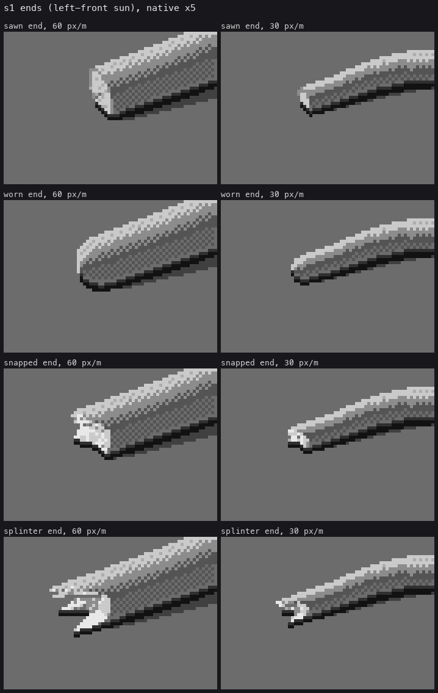
54. elements/driftwood/stages/s1_ends_5x.pngBash: Re-view ends facing the viewer
cd ~/work/pixelart-studies/elements/driftwood/src && python3 - <<'EOF'
s=open('s1_log.py').read()
s=s.replace(""" P.append((f'{k} end, {sc} px/m', cell(300, 40, flat=True, W=70, H=50, scale=sc, yaw=195, L=2.4,
r=0.2, ends=('sawn', k), look=(-1.1 if sc == 60 else -0.9, -0.3, 0), seed=5)))""",""" a = np.radians(235); endp = 1.2 * np.array([np.cos(a), np.sin(a), 0.0])
P.append((f'{k} end, {sc} px/m', cell(300, 40, flat=True, W=70, H=50, scale=sc, yaw=235, L=2.4,
r=0.2, ends=('sawn', k), look=tuple(endp * 0.6), seed=5)))""")
open('s1_log.py','w').write(s)
EOF
python3 -c "
import sys; sys.path.insert(0,'.')
import numpy as np
from s1_log import cell
from util import board
P=[]
for k in ('sawn','worn','snapped','splinter'):
for sc in (60,30):
a=np.radians(235); endp=1.2*np.array([np.cos(a),np.sin(a),0.0])
P.append((f'{k} {sc}',cell(300,40,flat=True,W=70,H=50,scale=sc,yaw=235,L=2.4,r=0.2,ends=('sawn',k),look=tuple(endp*0.6),seed=5)))
board(P,scale=5,cols=2).save('../scratch/s1_ends_b.png')
"
# output:
(Bash completed with no output)Read: elements/driftwood/scratch/s1_ends_b.png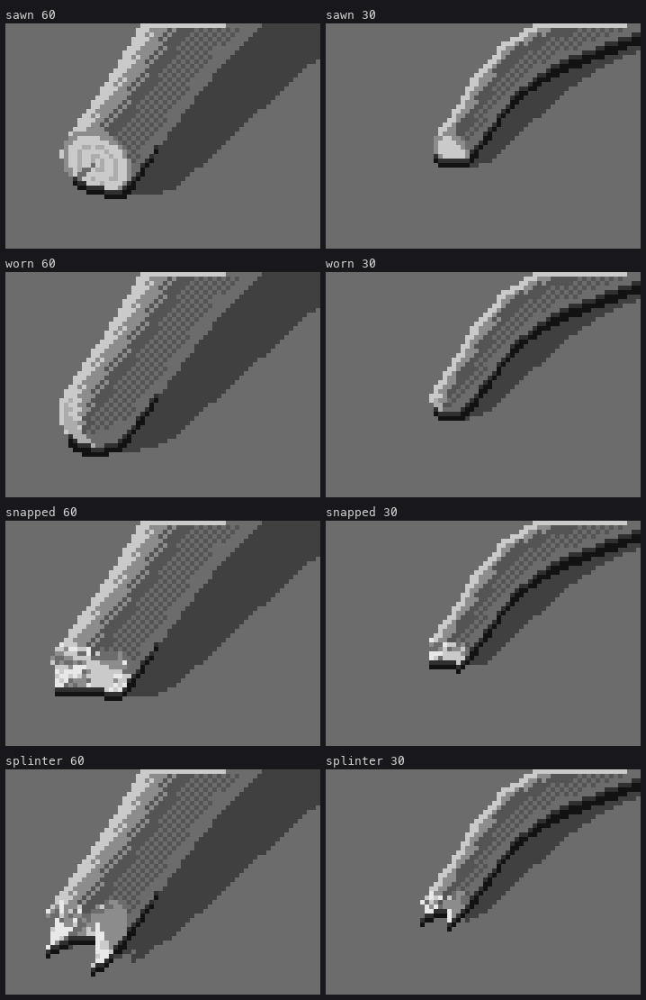
55. elements/driftwood/scratch/s1_ends_b.pngBash: Structure broken-end values by relief
cd ~/work/pixelart-studies/elements/driftwood/src && python3 - <<'EOF'
r=open('render.py').read()
r=r.replace(""" else:
v = np.where(lit, np.where(ndl > 0.7, 7, 6), np.where(ndl > 0.0, 4, 3))
if light.overcast:
v = np.where(buf['N'][..., 2] > 0.3, 6, 4)
out = np.where(m, v, out)""",""" else:
# the break: tooth tips stand out and catch light, the torn face between them is
# recessed (darker), crevices at its root darkest -- value follows how far the
# point stands out along the axis, then the facet's light.
c, outv = lg.ends_frames()[e]
prof = lg.jag[e][0]
s_rel = (buf['P'] - c) @ outv
f = np.clip(s_rel / max(prof.max(), 1e-6), 0, 1)
lit_v = np.where(f > 0.55, 7, np.where(f > 0.2, 6, 4))
sh_v = np.where(f > 0.55, 4, np.where(f > 0.2, 3, 2))
v = np.where(lit & (ndl > 0.35), lit_v, np.where(ndl > 0.0, np.minimum(lit_v, 5) - 1, sh_v))
if light.overcast:
v = np.where(f > 0.4, 5, 3)
out = np.where(m, v, out)""")
open('render.py','w').write(r)
EOF
python3 -c "
import sys; sys.path.insert(0,'.')
import numpy as np
from s1_log import cell
from util import board
P=[]
for k in ('snapped','splinter'):
for sd in (5,8):
a=np.radians(235); endp=1.2*np.array([np.cos(a),np.sin(a),0.0])
P.append((f'{k} seed{sd}',cell(300,40,flat=True,W=70,H=50,scale=60,yaw=235,L=2.4,r=0.2,ends=('sawn',k),look=tuple(endp*0.6),seed=sd)))
board(P,scale=6,cols=2).save('../scratch/s1_ends_c.png')
"
# output:
(Bash completed with no output)Read: elements/driftwood/scratch/s1_ends_c.png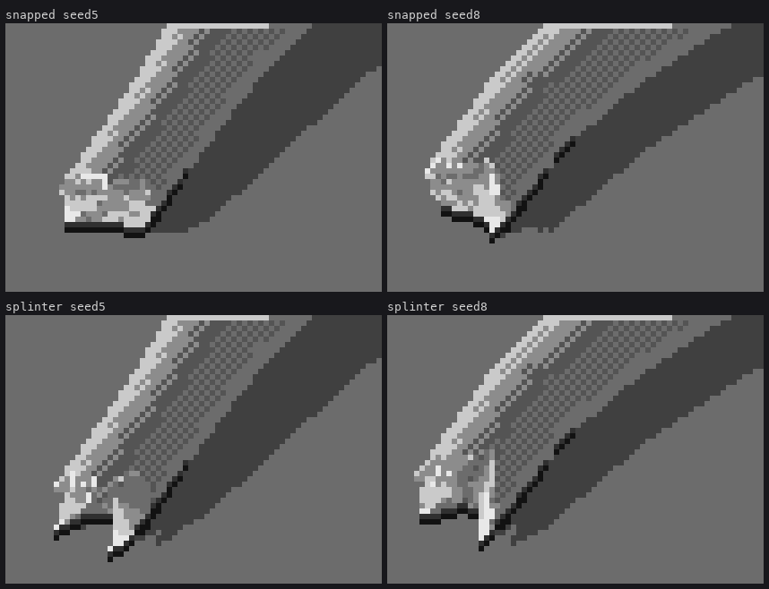
56. elements/driftwood/scratch/s1_ends_c.pngBash: Despeckle break faces, smooth profile
cd ~/work/pixelart-studies/elements/driftwood/src && python3 - <<'EOF'
s=open('geo.py').read()
s=s.replace(" prof += r_end * 0.08 * rng.random(256)\n","")
open('geo.py','w').write(s)
r=open('render.py').read()
r=r.replace('''def hash_angle(s):''','''def despeckle(st, mask, passes=2):
"""no orphan pixels inside a region: a pixel unlike all four neighbours takes the most common
neighbour value (only within mask)."""
st = st.copy()
H, W = st.shape
for _ in range(passes):
nb = np.stack([np.roll(st, 1, 0), np.roll(st, -1, 0), np.roll(st, 1, 1), np.roll(st, -1, 1)])
orphan = mask & np.all(nb != st[None], axis=0)
if not orphan.any():
break
ys, xs = np.nonzero(orphan)
for y, x in zip(ys, xs):
vals = nb[:, y, x]
u, c = np.unique(vals, return_counts=True)
st[y, x] = u[np.argmax(c)]
return st
def hash_angle(s):''')
r=r.replace(""" out = np.where(m, v, out)
return out""",""" out = np.where(m, v, out)
out = despeckle(out, m)
return out""")
open('render.py','w').write(r)
EOF
python3 -c "
import sys; sys.path.insert(0,'.')
import numpy as np
from s1_log import cell
from util import board
P=[]
for k in ('snapped','splinter'):
for sd in (5,8):
a=np.radians(235); endp=1.2*np.array([np.cos(a),np.sin(a),0.0])
P.append((f'{k} seed{sd}',cell(300,40,flat=True,W=70,H=50,scale=60,yaw=235,L=2.4,r=0.2,ends=('sawn',k),look=tuple(endp*0.6),seed=sd)))
board(P,scale=6,cols=2).save('../scratch/s1_ends_c.png')
"
# output:
(Bash completed with no output)Read: elements/driftwood/scratch/s1_ends_c.png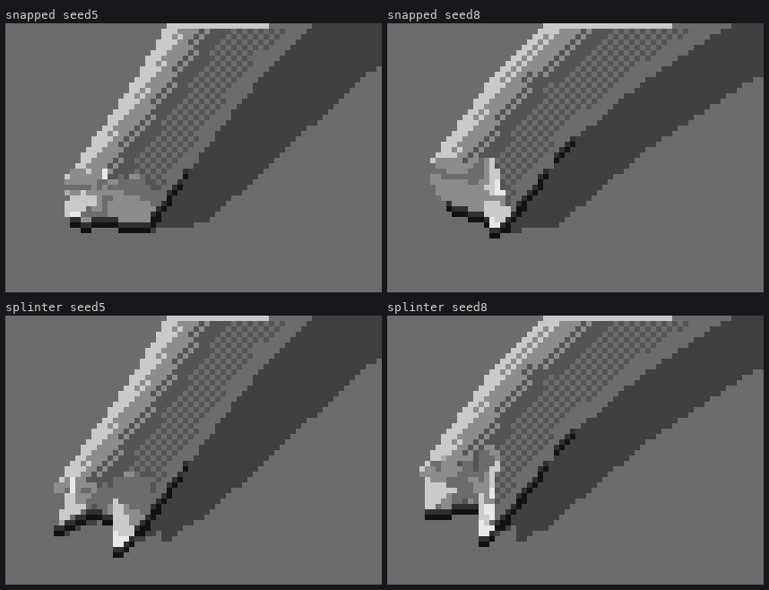
57. elements/driftwood/scratch/s1_ends_c.pngBash: Constant-width seams; regenerate stage 1
cd ~/work/pixelart-studies/elements/driftwood/src && python3 - <<'EOF'
t=open('tech.py').read()
t=t.replace(''' g = np.clip(ref_px / np.maximum(diam_px, 1e-3), 1.0, max_gain)''',''' dd = np.maximum(diam_px, 1e-3)
g = np.clip(np.maximum(ref_px / dd, dd / ref_px), 1.0, max_gain)''')
t=t.replace(''' """keep seams ~1-2 px wide whatever the trunk width: Ferrari's 13-px trunk mixes over whole
classes; his 6-px limbs show pure 1-px bands (c4431 2). gain = ref/diam, clipped."""''',''' """keep seams ~1-2 px wide whatever the trunk width: Ferrari's 13-px trunk mixes over whole
classes; his 6-px limbs show pure 1-px bands (c4431 2), and wider trunks keep ~2-px seams
rather than scaling the checker up. gain = max(ref/diam, diam/ref), clipped."""''')
open('tech.py','w').write(t)
EOF
nice -n 10 python3 s1_log.py && python3 s1_hero.py
# output:
done 92.26694679260254Read: elements/driftwood/stages/s1_ends_5x.png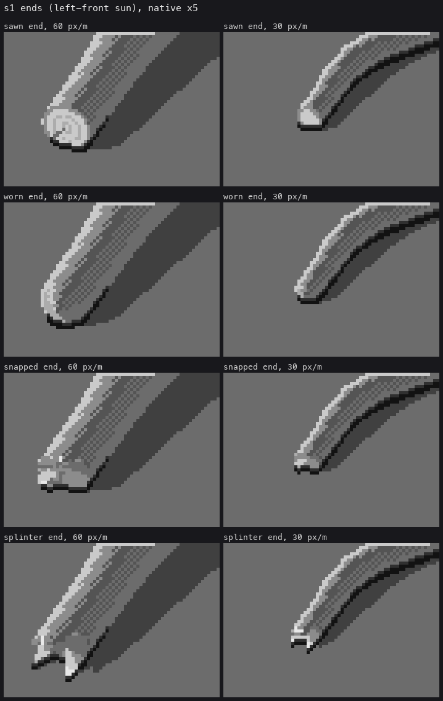
58. elements/driftwood/stages/s1_ends_5x.pngBash: Update stage-1 photo comparison
cd ~/work/pixelart-studies/elements/driftwood/src && python3 - <<'EOF'
s=open('s1_compare.py').read()
a=s.index("def hero("); b=s.index("if __name__")
s=s[:a]+'''def hero(W=72, H=56, scale=22.0, az=300, el=40, pitch=22, seed=3, yaw=40, r=0.3, L=3.6,
ends=('sawn', 'worn'), flat=False):
cam = geo.Camera(W, H, scale, pitch=pitch, look=(0.3, 0.3, 0.2))
lg = geo.make_log(L=L, r=r, yaw=yaw, seed=seed, ends=ends, bend=0.07, taper=0.7)
li = Light(cam, az=az, el=el)
cv, buf, sh = render.render([lg], cam, li, seed=seed, stone_m=0.06, opts=dict(gravel=not flat))
return render.to_rgb(cv, render.grey_ramps())
'''+s[b:]
open('s1_compare.py','w').write(s)
EOF
cd .. && python3 src/s1_compare.py
# output:
(Bash completed with no output)Read: elements/driftwood/stages/s1_compare_8x.png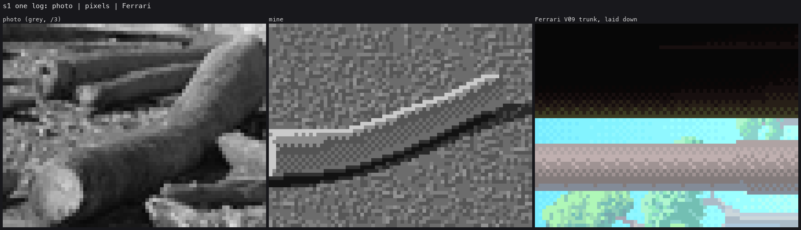
59. elements/driftwood/stages/s1_compare_8x.pngBash: Try camera/light settings to match photo
cd ~/work/pixelart-studies/elements/driftwood/src && python3 -c "
import sys; sys.path.insert(0,'.')
from s1_compare import hero
from util import board
P=[(f'p{p} az{a} el{e}',hero(pitch=p,az=a,el=e,scale=24)) for p,a,e in [(35,250,50),(40,280,55),(35,300,45),(45,240,45)]]
board(P,scale=6,cols=4).save('../scratch/s1_cmp_try.png')
"
# output:
(Bash completed with no output)Read: elements/driftwood/scratch/s1_cmp_try.png60. elements/driftwood/scratch/s1_cmp_try.png
Bash: Compress wood value ramp like Ferrari's trunk
cd ~/work/pixelart-studies/elements/driftwood/src && sed -i '' 's/ WOOD: \[22, 48, 84, 108, 140, 172, 202, 232\],/ WOOD: [24, 60, 112, 128, 152, 178, 204, 232],/; s/ RAW: \[22, 48, 84, 108, 150, 182, 212, 240\],/ RAW: [24, 60, 116, 134, 160, 188, 214, 240],/' render.py && grep -n "WOOD: \|RAW: " render.py && python3 -c "
import sys; sys.path.insert(0,'.')
from s1_compare import hero
from util import board
P=[(f'p{p} az{a} el{e}',hero(pitch=p,az=a,el=e,scale=24)) for p,a,e in [(35,250,50),(40,280,55),(35,300,45),(30,300,40)]]
board(P,scale=6,cols=4).save('../scratch/s1_cmp_try.png')
"
# output:
16: WOOD: [24, 60, 112, 128, 152, 178, 204, 232],
18: RAW: [24, 60, 116, 134, 160, 188, 214, 240],Read: elements/driftwood/scratch/s1_cmp_try.png61. elements/driftwood/scratch/s1_cmp_try.png
Bash: Regenerate stage 1 boards; check critique rounds
cd ~/work/pixelart-studies/elements/driftwood/src && sed -i '' "s/def hero(W=72, H=56, scale=22.0, az=300, el=40, pitch=22,/def hero(W=72, H=56, scale=24.0, az=280, el=55, pitch=40,/" s1_compare.py && nice -n 10 python3 s1_log.py && python3 s1_compare.py; head -5 ../CRITIQUE.md; grep -n "^## Round" ../CRITIQUE.md # output: done 110.65809202194214 # Critique (newest first) ## Round 2 — 2026-09-25 21:34 — stage 0 `stages/s0b_fallen_6x.png` (V02 fallen tree); stage 1 `stages/s1_compare_8x.png` **Stage 0: REVISE. Stage 1: REVISE.** Good choice of passage for s0b: a gnarled dead tree drawn by hand is the right test. (My read; your call.) 3:## Round 2 — 2026-09-25 21:34 — stage 0 `stages/s0b_fallen_6x.png` (V02 fallen tree); stage 1 `stages/s1_compare_8x.png` 22:## Round 1 — 2026-09-25 21:22 — stage 0 `stages/s0a_pale_trunk_8x.png`, `s0a2_pipeline_copy_8x.png`; stage 1 `stages/s1_lights_4x.png`
Bash: Read critique round 2
sed -n 3,21p ~/work/pixelart-studies/elements/driftwood/CRITIQUE.md # output: ## Round 2 — 2026-09-25 21:34 — stage 0 `stages/s0b_fallen_6x.png` (V02 fallen tree); stage 1 `stages/s1_compare_8x.png` **Stage 0: REVISE. Stage 1: REVISE.** Good choice of passage for s0b: a gnarled dead tree drawn by hand is the right test. (My read; your call.) ### s0b fallen tree What's working: the value plan (a near-black trunk against the violet field) and the placement of the main uprights on the right are close. What gives it away at 6×: 1. **The branches are straight sticks of even thickness.** His branches kink every few pixels, thicken at the joints, fork into little knobbed crooks, and run 2–3 px thick near the trunk, tapering to 1 px. Yours are mostly 1–2 px straight runs. The left cluster (his x≈40–130: three crooked uprights with a crossing limb) is nearly gone in yours, leaving faint disconnected ticks. 2. **The branches are disconnected.** The branch starting around x≈200 in your copy floats free of the trunk; in his every branch is attached. A floating stick is the fastest tell. 3. **The trunk's upper edge is a ruled staircase** at the left end (your x≈40–220, y≈570–640). It steps down in equal runs, where his top edge is a smooth convex arc with a thin maroon rim light running along it. 4. **The rim light.** His whole silhouette carries a 1 px dark-maroon rim where the backlight wraps it: branches, trunk top, everything. Yours has it in patches. ### Stage 1 (`s1_compare_8x.png`) Better: there's a taper now and a contact line. But: - **It reads as a crayon or a stick of chalk.** The end is a flat, pure-white ellipse, brighter than anything else in the frame, on a straight tapered cylinder. In your photo (left panel) the log bends, thickens toward a broken, rounded end, and the end face has about the body's value with dark checks and a darker rim, not a white disc. - **The lit top edge is a sawtooth** of alternating light pixels climbing the diagonal, on a regular period. That's the fastest mechanical tell in the image. On a diagonal a lit edge is a clean run (2:1 or 3:1 steps) of one tone. - **The ground is still TV static,** and it's still the loudest thing in the frame. Use a plain field. - No checks, no knots, no stubs yet. Driftwood's identity lives in those long dark splits along the grain. - The laid-down Ferrari trunk is a useful ramp reference but not a log: it has no ends, no taper, and no contact. Better comparisons for form are the mossy fallen log at the bottom right of V09 and your own s0b tree.
Bash: Copy v2: tapered kinked twigs, arc trunk, full rim
cd ~/work/pixelart-studies/elements/driftwood/src && python3 - <<'EOF'
s=open('s0b_fallen.py').read()
a=s.index("TRUNK_POLY = ["); b=s.index("def line_px")
s=s[:a]+'''# trunk: top edge as a smooth convex arc (a few control points, spline-sampled), bottom edge a
# straight diagonal; the root end at the lower left
TOP_CTRL = [(253, 406), (259, 396), (268, 390), (280, 386), (296, 383.5), (320, 382.5), (345, 384),
(361, 385.5)]
BOT_CTRL = [(361, 388.5), (335, 391), (310, 396), (285, 401), (263, 406)]
# twigs: (polyline, base width). Width tapers to 1 px at the tip; every vertex is a joint that
# gets a 1-px knob on the lit side; long straight spans are broken into kinks every ~4 px.
TWIGS = [
([(313, 382), (314, 376), (316, 371), (316, 366), (317, 362), (316, 358)], 3),
([(311, 368), (313, 364), (315, 360)], 2),
([(319, 382), (321, 378), (323, 375), (324, 370), (326, 366), (326, 362), (327, 358)], 3),
([(328, 372), (329, 375), (333, 378), (335, 383)], 2),
([(335, 383), (334, 377), (334, 372), (336, 367), (340, 364)], 2),
([(345, 384), (345, 380), (346, 376), (346, 371), (348, 369)], 3),
([(359, 385), (359, 378), (360, 372), (359, 368)], 2),
([(300, 383), (299, 378), (301, 373), (301, 369), (300, 366)], 3),
([(291, 388), (290, 381), (290, 375), (291, 371)], 2),
([(296, 384), (294, 379), (285, 377), (276, 378), (270, 379), (264, 382), (257, 384), (250, 385)], 3),
([(283, 377), (282, 373), (284, 371), (285, 374)], 2),
([(277, 378), (275, 376)], 2),
([(272, 380), (272, 385), (271, 391)], 2),
([(266, 381), (265, 386), (266, 392)], 2),
([(258, 384), (258, 390), (259, 398)], 2),
([(252, 383), (251, 390), (253, 398), (251, 401)], 2),
]
def spline(pts, n=200):
pts = np.array(pts, float)
t = np.linspace(0, 1, len(pts)); tt = np.linspace(0, 1, n)
from scipy.interpolate import CubicSpline
cs = CubicSpline(t, pts, bc_type='natural')
return cs(tt)
'''+s[b:]
a=s.index("def draw(H, W, snap=True):"); b=s.index("def rim(M):")
s=s[:a]+'''def draw(H, W, snap=True):
from skimage.draw import polygon as fillpoly
M = np.zeros((H, W), bool)
top = spline(TOP_CTRL); bot = np.array(BOT_CTRL, float)
poly = np.concatenate([top, bot])
rr, cc = fillpoly(poly[:, 1] - Y0, poly[:, 0] - X0, (H, W))
M[rr, cc] = True
for tw, w0 in TWIGS:
segs = list(zip(tw[:-1], tw[1:]))
total = sum(np.hypot(b[0] - a[0], b[1] - a[1]) for a, b in segs)
run = 0.0
for k, (a, b) in enumerate(segs):
lx, ly = line_px(a, b)
L = max(len(lx) - 1, 1)
for j, (x, y) in enumerate(zip(lx, ly)):
f = (run + j / L * np.hypot(b[0] - a[0], b[1] - a[1])) / max(total, 1e-6)
w = int(round(w0 - (w0 - 1) * f))
for dx in range(max(w, 1)):
if 0 <= y - Y0 < H and 0 <= x + dx - X0 < W:
M[y - Y0, x + dx - X0] = True
run += np.hypot(b[0] - a[0], b[1] - a[1])
# joint knob: one pixel on the outside of the bend at each interior vertex
if k < len(segs) - 1:
x, y = b
if 0 <= y - Y0 < H and 0 <= x - 1 - X0 < W:
M[int(y) - Y0, int(x) - 1 - X0] = True
return M
'''+s[b:]
a=s.index("def rim(M):"); b=s.index("def main():")
s=s[:a]+'''def rim(M):
"""the back-light wraps the whole silhouette on the glow side: every mass pixel whose right
neighbour or upper neighbour is open sky gets the rim -- on twigs that is the right-hand
pixel ('##r'), on the trunk a run along the top contour."""
P = np.pad(M, 1)
right_open = M & ~P[1:-1, 2:]
up_open = M & ~P[:-2, 1:-1]
return right_open | up_open
'''+s[b:]
open('s0b_fallen.py','w').write(s)
EOF
cd .. && python3 src/s0b_fallen.py
# output:
silhouette IoU 0.61; rim pixels ref 284 mine 411; rim on rim 82Read: elements/driftwood/stages/s0b_fallen_6x.png62. elements/driftwood/stages/s0b_fallen_6x.png
Bash: Bolder twigs, cleaner background fill
cd ~/work/pixelart-studies/elements/driftwood/src && python3 - <<'EOF'
s=open('s0b_fallen.py').read()
s=s.replace(" w = int(round(w0 - (w0 - 1) * f))"," w = w0 if f < 0.65 else int(round(w0 - (w0 - 1) * (f - 0.65) / 0.35))")
s=s.replace(""" for tw, w0 in TWIGS:
segs""",""" for tw, w0 in TWIGS:
w0 = w0 + 1
segs""")
# better background fill: nearest non-mass pixel along the row, alternating sides
s=s.replace(""" for x in range(W):
last = None
for y in range(H):
if refmass[y, x]:
if last is not None:
mine[y, x] = last
else:
last = ref[y, x]""",""" from scipy import ndimage as ndi
_, (iy, ix) = ndi.distance_transform_edt(refmass, return_indices=True)
mine = ref[iy, ix].copy()""")
open('s0b_fallen.py','w').write(s)
EOF
cd .. && python3 src/s0b_fallen.py
# output:
silhouette IoU 0.62; rim pixels ref 284 mine 400; rim on rim 69Read: elements/driftwood/stages/s0b_fallen_6x.png63. elements/driftwood/stages/s0b_fallen_6x.png
Bash: Outline majority tone, no dither near edges, softer end face
cd ~/work/pixelart-studies/elements/driftwood/src && python3 - <<'EOF'
r=open('render.py').read()
old=r[r.index(" # the silhouette row is never dithered"):r.index(" part = buf['part']")]
new=''' # near the silhouette there is no dither: Ferrari's outlines are clean runs of ONE tone and
# his seams sit inside the form. Within 2 px of the outline the class is rounded, and along
# the outline itself each pixel takes the majority class of the outline pixels around it
# (so a diagonal lit edge is one tone, not a sawtooth of two).
from scipy import ndimage as ndi
nbr_out = np.zeros_like(wood)
for dy, dx in ((1, 0), (-1, 0), (0, 1), (0, -1)):
nbr_out |= np.roll(np.roll(obj, dy, 0), dx, 1) != obj
sil = wood & nbr_out
near = wood & ndi.binary_dilation(sil, iterations=1)
kk = np.clip(np.round(v), 0, 4).astype(int)
st = np.where(near, tech.CLASS_STEPS[kk], st)
# majority along the outline (window 7 px), per class
counts = np.stack([ndi.uniform_filter(((kk == c) & sil).astype(float), 7) for c in range(5)])
maj = np.argmax(counts, 0)
st = np.where(sil, tech.CLASS_STEPS[maj], st)
'''
r=r.replace(old,new)
r=r.replace(""" base = np.where(lit, 6, 3)
if light.overcast:
base = np.full(base.shape, 5)""",""" base = np.where(lit, np.where(ndl > 0.6, 6, 5), 3)
if light.overcast:
base = np.full(base.shape, 5)""")
r=r.replace(""" v = np.where(chk, base - 3, v)""",""" v = np.where(chk, np.maximum(base - 3, 1), v)""")
open('render.py','w').write(r)
EOF
grep -n "ring = " render.py
# output:
184: ring = (np.abs(((rho * r_px / 3.2) % 1.0) - 0.5) < 0.16) & (rho < 0.85)Bash: Broken rings, radial checks; new comparison board
cd ~/work/pixelart-studies/elements/driftwood/src && python3 - <<'EOF'
r=open('render.py').read()
r=r.replace(""" if r_px >= 8:
ring = (np.abs(((rho * r_px / 3.2) % 1.0) - 0.5) < 0.16) & (rho < 0.85)
v = np.where(ring, base - 1, v)
if r_px >= 6:
th = buf['th']
ca = hash_angle(lg.seed + e)
chk = (np.abs(np.angle(np.exp(1j * (th - ca)))) * rho * r_px < 0.6) & (rho > 0.12)
v = np.where(chk, np.maximum(base - 3, 1), v)""",""" th = buf['th']
if r_px >= 8:
# growth rings: broken arcs (sectors), not a target of full circles
sector = (np.floor((th + np.pi) / (2 * np.pi) * 7) + np.floor(rho * r_px / 3.4) * 3) % 3 != 0
ring = (np.abs(((rho * r_px / 3.4) % 1.0) - 0.5) < 0.16) & (rho < 0.8) & sector
v = np.where(ring, base - 1, v)
if r_px >= 5:
# radial checks: 1-3 dark splits from near the pith to the arris
nchk = 1 + int(hash_angle(lg.seed * 3 + e) / (2 * np.pi) * 3)
for q in range(nchk):
ca = hash_angle(lg.seed + e + 17 * q)
rmin = 0.1 + 0.3 * (q > 0)
chk = (np.abs(np.angle(np.exp(1j * (th - ca)))) * rho * r_px < 0.55) & (rho > rmin)
v = np.where(chk, np.maximum(base - 3, 1), v)""")
open('render.py','w').write(r)
s=open('s1_compare.py').read()
s=s.replace(""" mine = hero()
d = load('V09'); f = d['pal'][d['idx'][150:222, 358:414]]
f = np.rot90(f, 1) # his trunk, laid down
board([('photo (grey, /3)', phg), ('mine', mine), ('Ferrari V09 trunk, laid down', f)], scale=8,
title='s1 one log: photo | pixels | Ferrari').save(f'{ROOT}/stages/s1_compare_8x.png')""",""" mine = hero(flat=True)
mine_g = hero()
d = load('V02'); f = d['pal'][d['idx'][358:414, 250:322]]
board([('photo (grey, /3)', phg), ('mine, plain ground', mine), ('mine, gravel', mine_g),
('Ferrari V02 fallen trunk', f)], scale=6, cols=4,
title='s1 one log: photo | pixels | Ferrari (6x)').save(f'{ROOT}/stages/s1_compare_6x.png')""")
open('s1_compare.py','w').write(s)
EOF
rm -f ../stages/s1_compare_8x.png; cd .. && python3 src/s1_compare.py
# output:
(Bash completed with no output)Read: elements/driftwood/stages/s1_compare_6x.png64. elements/driftwood/stages/s1_compare_6x.png
Bash: Reframe comparison to show both ends
cd ~/work/pixelart-studies/elements/driftwood/src && sed -i '' "s/ cam = geo.Camera(W, H, scale, pitch=pitch, look=(0.3, 0.3, 0.2))/ cam = geo.Camera(W, H, scale, pitch=pitch, look=(-0.1, 0.0, 0.2))/; s/def hero(W=72, H=56, scale=24.0,/def hero(W=72, H=56, scale=19.0,/" s1_compare.py && cd .. && python3 src/s1_compare.py # output: (Bash completed with no output)
Read: elements/driftwood/stages/s1_compare_6x.png65. elements/driftwood/stages/s1_compare_6x.png
Write: elements/driftwood/LESSONS.md
# Driftwood, after Mark Ferrari Whole trees and logs stranded on river gravel bars: silvered, barkless trunks with root wads and snapped stubs, piled against each other. Everything here is made by the programs in `src/`; the stage images are in `stages/`, the parameter sheets in `sheets/`. Photos are in `refs/` (sources in `refs/sources.tsv`) plus `~/work/pixelart-studies/transfer/refs/braided_driftwood_bar.jpg`.The technique code is `src/geo.py` (world: logs as bent tapering round-cone chains, ends, sphere tracing, cast shadows), `src/tech.py` (the proven form rule), `src/render.py` (the painter), `src/gravel.py` (the ground). --- ## Stage 0: copying Ferrari first Ferrari never painted driftwood. The nearest passages in his work are the pale sunlit trunk in *Deep Forest* (V09), its grey barked trunk, and the fallen dead tree in the dusk marsh of V02. I read his indexed files directly (the Canvas Cycle JSON; same loader as the master-copy arm), so I could see his form classes as numbers rather than guessing them from RGB. ### 0A: the pale trunk (V09), a smooth cylinder in sun   Printed as index symbols, the 13-px trunk is **five form classes in a fixed spatial order**, counted from the shadow edge:nice -n 10 python3 src/s0a_pale_trunk.py # stage 0 copies nice -n 10 python3 src/s0a2_pipeline_copy.py nice -n 10 python3 src/s0b_fallen.py nice -n 10 python3 src/s1_log.py # stage 1 boards nice -n 10 python3 src/s1_compare.py- In value those are 138 | 125 | 149 | 179 | 166: reflected rim, core, halftone, light, and a lit edge that falls back one step as the form turns away. The classical order, and the whole range is only 55 grey levels: the mass is held close. - Between classes he uses a checker of the two neighbours, 1–2 px wide, running along the axis. Only three mixing levels occur: pure, 50%, pure. The pattern repeats every 8 rows exactly (a DPaint gradient fill). - **Dithering follows spatial adjacency, not value adjacency.** The core (125) dithers straight into the halftone (149), skipping the cool rim colour (138) that lies between them in value. The first copy (`s0a`) fitted a 1-D profile across his own silhouette: 87% of trunk pixels match his class exactly. The second (`s0a2`) matters more: it paints the trunk from a lit 3-D cylinder, with the classes as a function of the angle `d` around the axis measured from the light's peak. The fitted boundaries are `rim | -69° | core | -42° | halftone | -13° | light | +4° | edge`, and it matches 89% of his pixels. So the core starts some 20° after the geometric terminator, and the light class is a thin band at the peak. This is `tech.cylinder_classes`, and because it is geometric it rotates to lie down. *The critic's objection, which I accept:* both 0A copies borrow his silhouette and background, so they only test the ramp, and the one place I had to draw (the limb leaving the trunk at the top) came out as a blob. That is why I made 0B. ### 0B: the fallen dead tree (V02), drawn by hand  This time the silhouette is my own sketch: the trunk's top edge as a smooth arc from eight control points, the bottom edge a straight diagonal, and sixteen twig gestures read off his image. My rules redraw the strokes. What I found: - Against the dusk glow the whole body is **one near-black class**, with no form inside the mass. - The only light is a 1-px **rim** of dull maroon on every silhouette pixel that faces the glow: a run along the trunk's top, and on each twig the single right-hand pixel (`##r`). - Twigs are **2–3 px thick near the trunk and stay thick** until the last third, then taper to 1 px. They kink every 3–5 px, have knobs at the joints, and fork in V and Y crooks. Every twig is attached to something. - The trunk contour is runs that shorten smoothly round the curve (14, 10, 6, 5, 4, 4, 4, 3, 3 ...). In the first version the twigs were thin, even-width straight sticks, some floating free, and the trunk top was a ruled staircase. The critic caught all three. Silhouette IoU with his mass is now 0.62; the character (bold crooked twigs, a rim on everything) is close, while the placement of individual twigs is only a sketch. **Not a blind match yet.** His twigs are denser in the left cluster, and his rim along the trunk top reads more strongly than mine. --- ## Stage 1: one log in greyscale      **The form.** A log is `geo.make_log`: a chain of seven round cones with a lateral bow, a vertical sag, a taper of about 0.75 and ±8% lumps in radius. It is lowered until its lowest point touches the gravel, so a bowed log rests on two contacts and lifts off between them. My first log was a perfect cylinder with a square cap. The critic called it a steel pipe, and it was. **Light and shadow families.** `tech.cylinder_classes` gives the five classes; the cast shadow (ray-marched toward the sun against all logs) forces anything it covers into the shadow family. What I learned while taking the cylinder from standing to lying: - **Wood values must be held close, as his are.** With a wide grey ramp (core 84, light 202) a lying log lit from above read as a dark pipe with a white stripe, because in Ferrari's scheme most of the camera-facing side falls in the core class. With his spacing (core 112, rim 128, halftone 152, edge 178, light 204) the same index image reads as pale silvered wood. The palette is the light; the index map didn't change. - **Seams stay 1–2 px wide at every trunk width.** Ferrari's 6-px limbs have pure 1-px bands (`c4431 2`), his 13-px trunk mixes over whole classes, and wider forms keep narrow seams rather than scaling the checker up. `tech.sharpen` sets the gain to max(13/d, d/13). - **No dither near the outline.** Within 2 px of the silhouette the class is rounded, and along the outline each pixel takes the majority class of its neighbours along the edge. Before this, the lit top of a diagonal log was a regular sawtooth of two tones, the fastest mechanical tell in the picture (critic, round 2). - **The sun-side silhouette gets a 1-px light run** where the lit plane meets what is behind it. Under back light this is the only light the log gets, which is Ferrari's V02 rim and his c5 boulder edge. **Contact.** There is a 1-px darkest line on the ground under the silhouette wherever the ground point lies within 2 px of the log. Where a bowed log lifts off, the ground under it (a vertical ray meets the log within 2.5 px) is a black pocket. My first pocket covered every gap under the log and made a 4-px black band. A larger gap is just ground in shadow. **Ends** (`s1_ends`): - *sawn*: the face is one lit plane at the body's light value (not white; that read as chalk), with a 1-px darker arris ring, growth rings as broken arcs when it is at least 16 px across, and one to three radial checks from near the pith. - *worn* (water-rounded): no cut; the round cone's cap turns the classes round the end. This is the commonest driftwood end, and the one my first version lacked. - *snapped* and *splinter*: the trunk's shell stands out further in a few angular sectors (the teeth); the break face between them falls toward the axis. Value follows relief: tooth tips 7, the torn face 6 or 4, crevices at the root 2–3, and orphan pixels are removed. My first attempts were a non-Lipschitz SDF (speckle misses) and then thin cones (wires). A profile divided by its Lipschitz bound fixed the tracing. **Sizes** (`s1_sizes`): at a 120-px length the log is 12 px thick and carries all five classes. Below a projected diameter of 4.5 px the tracer aliases, so `render.thin_logs` draws the axis as a clean-run line whose rows, from the lit side, are: 1 px → light; 2 → light, core; 3 → light, halftone, core; 4 → edge, light, halftone, core. The smallest log is a light pixel over a dark one. **Honest comparison.** Beside the photo the log reads as a pale bent log with a sawn end, sitting on the ground. Beside Ferrari it is his cylinder language, but smooth: there is no material yet, and his trunks are never this plasticky. The gravel (stage 5) is still too busy at small scales. The critic asked for plain ground in the form studies, so every stage-1 board also has a plain-ground version.cc 4444 3 3 1 1 2 2 c = cool sky-blue rim 4 = core 3 = halftone 1 = light 2 = lit edge
Bash: List sizes of grain photos
cd ~/work/pixelart-studies/elements/driftwood/refs; python3 -c "
from PIL import Image
for f,o in [('commons_Bregenz_Wocherhafen_autumn_driftwood_07ASD_jpg_ecf8a3fb.jpg','g1'),('commons_Cliffs_and_driftwood_at_St_ngehuvud_b_jpg_10933a5d.jpg','g2'),('openverse_Driftwood_c85ce628.jpg','g3'),('openverse_Driftwood_log_on_sand_in_wind_7550a86a.jpg','g4')]:
im=Image.open(f); print(o, im.size)
"
# output:
g1 (1280, 1707)
g2 (1280, 800)
g3 (1024, 768)
g4 (500, 375)Read: elements/driftwood/refs/commons_Cliffs_and_driftwood_at_St_ngehuvud_b_jpg_10933a5d.jpg66. elements/driftwood/refs/commons_Cliffs_and_driftwood_at_St_ngehuvud_b_jpg_10933a5d.jpg
Bash: Crop grain photos
cd ~/work/pixelart-studies/elements/driftwood; python3 -c "
from PIL import Image
im=Image.open('refs/commons_Cliffs_and_driftwood_at_St_ngehuvud_b_jpg_10933a5d.jpg')
im.crop((150,540,1100,730)).save('scratch/g2_log.png')
im=Image.open('refs/commons_Bregenz_Wocherhafen_autumn_driftwood_07ASD_jpg_ecf8a3fb.jpg')
im.crop((300,300,1000,1400)).resize((350,550)).save('scratch/g1_grain.png')
"
# output:
(Bash completed with no output)Read: elements/driftwood/scratch/g2_log.png67. elements/driftwood/scratch/g2_log.png
Read: elements/driftwood/scratch/g1_grain.png68. elements/driftwood/scratch/g1_grain.png
Write: elements/driftwood/src/marks.py
"""marks.py -- the wood's material, drawn as strokes on the log's surface.
Observed (Cliffs_and_driftwood, Driftwood_on_Gravel_bar, braided bar):
* silvered driftwood is smooth and pale; its grain is a set of long, gently wavy dark lines
running ALONG the axis, broken into dashes, a few px apart; they bunch toward the silhouette
because the cylinder turns away (foreshortening);
* checks are the few long splits along the grain: darker and longer than grain, often with a
lighter lip on the sun side (the split's upper edge catches the light);
* knots are eyes: a dark centre, grain lines deflecting around them (bulging past, converging
behind);
* fresh bark is the INVERSE: a dark body crossed by a braided network of lighter ridges
(Ferrari's snow-forest trunks: lit ridge lines interwoven along the axis on dark bark).
Painted (Ferrari: narrow forms are clean 1-px runs; contrast lives inside the mark):
* every mark is a curve on the 3-D surface -- theta(s) with a low-frequency wobble -- sampled at
half-pixel spacing, projected, and rasterised to 1-px runs; hidden where the surface faces
away or something is in front;
* grain = one value step darker than the pixel's own form class;
* check = two to three steps darker, with a 1-px lip one step lighter on its sun side;
* knot = an elongated dark eye with a lit rim on the sun side; nearby grain bends round it;
* density scales with the projected diameter: no grain below ~7 px, checks only down to ~4 px.
"""
import numpy as np
import geo
# one value step darker / lighter than a wood step (value ramp order 0<1<2<3<4<5<6<7)
DARKER = np.array([0, 0, 1, 2, 2, 4, 5, 6])
DARKER2 = np.array([0, 0, 0, 1, 1, 2, 2, 4])
LIGHTER = np.array([1, 2, 3, 4, 5, 6, 7, 7])
def surf_point(lg, s, th, r_scale=1.0):
p, ax, r, (e1, e2) = lg.frame_at(s)
n = np.cos(th) * e2 + np.sin(th) * e1
return p + n * r * r_scale, n
def _visible(buf, cam, k, P, N, tol_px=1.2):
x, y = cam.project(P)
xi = np.floor(x).astype(int); yi = np.floor(y).astype(int)
H, W = buf['obj'].shape
ok = (xi >= 0) & (xi < W) & (yi >= 0) & (yi < H)
V = -cam.f
ok &= (N @ V) > 0.05
xi = np.clip(xi, 0, W - 1); yi = np.clip(yi, 0, H - 1)
ok &= buf['obj'][yi, xi] == k
t = (P - cam.look) @ cam.f + 60.0
ok &= np.abs(buf['t'][yi, xi] - t) < tol_px / cam.scale + 0.02
return xi, yi, ok
def _curve(lg, s0, s1, th0, wob_amp, wob_len, ph, step_m, knots=()):
s = np.arange(s0, s1, step_m)
th = th0 + wob_amp * np.sin(2 * np.pi * s / wob_len + ph) + 0.5 * wob_amp * np.sin(2 * np.pi * s / (wob_len * 0.37) + 2 * ph)
# knots push grain around them: a smooth bump in theta, away from the knot centre
for (ks, kth, kr_s, kr_th) in knots:
dth = np.angle(np.exp(1j * (th - kth)))
ds = (s - ks) / (kr_s * 2.2)
w = np.exp(-ds * ds) * np.exp(-(dth / (kr_th * 2.5)) ** 2)
th = th + np.sign(dth + 1e-6) * w * kr_th * 1.6
return s, th
def wood_marks(cv, buf, logs, cam, light, sh, weather=1.0, seed=0, mat_ids=(0,)):
"""draw grain, checks and knots onto cv (in place)."""
V = -cam.f
lx = light.L @ cam.r; ly = -(light.L @ cam.u)
sdx = int(np.sign(lx)) if abs(lx) > 0.35 else 0
sdy = int(np.sign(ly)) if abs(ly) > 0.35 else 0
H, W = cv.step.shape
for k, lg in enumerate(logs):
rng = np.random.default_rng(lg.seed * 7 + seed)
dpx = 2 * lg.rad.mean() * cam.scale
if dpx < 4:
continue
step_m = 0.45 / cam.scale
own = (buf['obj'] == k)
base = cv.step.copy()
bark = lg.kind == 'bark'
# ---- knots (placed first; grain bends round them)
knots = []
if dpx >= 9:
for _ in range(rng.integers(0, 3) + (1 if weather > 0.5 else 0)):
ks = rng.uniform(0.1, 0.9) * lg.L
kth = rng.uniform(-2.0, 2.0) # mostly on the upper / front half
r0 = lg.frame_at(ks)[2]
kr_s = r0 * rng.uniform(0.25, 0.5)
kr_th = rng.uniform(0.18, 0.3)
knots.append((ks, kth, kr_s, kr_th))
# ---- grain
if dpx >= 7:
n_lines = int(np.clip(np.pi * dpx / 3.2, 6, 60))
for i in range(n_lines):
th0 = (i + rng.uniform(-0.3, 0.3)) / n_lines * 2 * np.pi
wob = rng.uniform(0.04, 0.12) * (2.5 if bark else 1.0)
wl = lg.L * rng.uniform(0.3, 0.9)
ph = rng.uniform(0, 2 * np.pi)
s = 0.0
while s < lg.L:
dash = rng.uniform(6, 30) / cam.scale * (1.6 if bark else 1.0)
gap = rng.uniform(3, 14) / cam.scale * (0.5 if bark else 1.0) / max(weather, 0.3)
ss, th = _curve(lg, s, min(s + dash, lg.L), th0, wob, wl, ph, step_m, knots)
s += dash + gap
if len(ss) < 2:
continue
P = np.array([surf_point(lg, a, b)[0] for a, b in zip(ss, th)])
N = np.array([surf_point(lg, a, b)[1] for a, b in zip(ss, th)])
xi, yi, ok = _visible(buf, cam, k, P, N)
xi, yi = xi[ok], yi[ok]
if len(xi) == 0:
continue
if bark:
cv.step[yi, xi] = LIGHTER[base[yi, xi]]
else:
cv.step[yi, xi] = DARKER[base[yi, xi]]
# ---- checks
if dpx >= 4 and not bark:
nchk = rng.integers(1, 3) + int(weather > 0.7)
for _ in range(nchk):
th0 = rng.uniform(-1.6, 1.6)
ln = lg.L * rng.uniform(0.25, 0.7)
s0 = rng.uniform(0, lg.L - ln)
ss, th = _curve(lg, s0, s0 + ln, th0, 0.03, lg.L * 0.8, rng.uniform(0, 6), step_m, knots)
P = np.array([surf_point(lg, a, b)[0] for a, b in zip(ss, th)])
N = np.array([surf_point(lg, a, b)[1] for a, b in zip(ss, th)])
xi, yi, ok = _visible(buf, cam, k, P, N)
xi, yi = xi[ok], yi[ok]
if len(xi) == 0:
continue
cv.step[yi, xi] = DARKER2[base[yi, xi]]
# lip on the sun side, only where the surface is lit
if (sdx or sdy) and not light.overcast:
ly2, lx2 = yi + sdy, xi + sdx
okl = (ly2 >= 0) & (ly2 < H) & (lx2 >= 0) & (lx2 < W)
ly2, lx2 = ly2[okl], lx2[okl]
okl = own[ly2, lx2] & (base[ly2, lx2] >= 4)
# do not overwrite the check itself
chk = np.zeros((H, W), bool); chk[yi, xi] = True
okl &= ~chk[ly2, lx2]
cv.step[ly2[okl], lx2[okl]] = LIGHTER[base[ly2[okl], lx2[okl]]]
# ---- knots drawn last
for (ks, kth, kr_s, kr_th) in knots:
pts = []
for a in np.linspace(-1, 1, 9):
for b in np.linspace(-1, 1, 9):
if a * a + b * b <= 1:
pts.append((ks + a * kr_s, kth + b * kr_th, a, b))
P = np.array([surf_point(lg, s_, t_)[0] for s_, t_, _, _ in pts])
N = np.array([surf_point(lg, s_, t_)[1] for s_, t_, _, _ in pts])
xi, yi, ok = _visible(buf, cam, k, P, N)
ab = np.array([(a, b) for _, _, a, b in pts])
rr = np.hypot(ab[:, 0], ab[:, 1])
for j in np.nonzero(ok)[0]:
y, x = yi[j], xi[j]
if rr[j] < 0.55:
cv.step[y, x] = 1 if not bark else 0
elif rr[j] < 1.0:
cv.step[y, x] = DARKER[base[y, x]]
# lit rim of the knot's swelling on the sun side
if (sdx or sdy) and not light.overcast:
cy_, cx_ = yi[ok], xi[ok]
if len(cy_):
cy0, cx0 = int(np.median(cy_)), int(np.median(cx_))
for (y, x) in zip(cy_, cx_):
if (y - cy0) * sdy + (x - cx0) * sdx >= 1:
yy, xx = y + sdy, x + sdx
if 0 <= yy < H and 0 <= xx < W and own[yy, xx] and base[yy, xx] >= 4:
if cv.step[yy, xx] == base[yy, xx]:
cv.step[yy, xx] = LIGHTER[base[yy, xx]]
Bash: Add marks module and first material test
cd ~/work/pixelart-studies/elements/driftwood/src && python3 - <<'EOF'
r=open('render.py').read()
r=r.replace(""" # ---------- thin logs: explicit stroke glyphs (the classes collapse below ~4.5 px)""",""" # ---------- marks: grain, checks, knots (stage 2)
if o.get('marks', True):
import marks
marks.wood_marks(cv, buf, logs, cam, light, sh, weather=o.get('weather', 1.0), seed=seed)
# ---------- thin logs: explicit stroke glyphs (the classes collapse below ~4.5 px)""")
open('render.py','w').write(r)
EOF
cat > s2_material.py <<'EOF'
"""Stage 2: the wood's material -- grain, checks, knots; fresh bark for contrast."""
import sys, os, time
sys.path.insert(0, os.path.dirname(__file__))
import numpy as np
import geo, render
from paint import Light
from util import board
ROOT = os.path.expanduser('~/work/pixelart-studies/elements/driftwood')
def cell(az=300, el=40, W=120, H=64, scale=50, pitch=35, seed=3, ends=('sawn', 'worn'), yaw=12, L=2.2,
r=0.2, kind='drift', weather=1.0, marks=True, flat=True, look=(0, 0, 0.1), overcast=False, **kw):
cam = geo.Camera(W, H, scale, pitch=pitch, look=look)
lg = geo.make_log(L=L, r=r, yaw=yaw, seed=seed, ends=ends, kind=kind, **kw)
li = Light(cam, az=az, el=el, overcast=overcast)
cv, buf, sh = render.render([lg], cam, li, seed=seed, stone_m=0.06,
opts=dict(gravel=not flat, marks=marks, weather=weather))
return render.to_rgb(cv, render.grey_ramps())
if __name__ == '__main__':
t = time.time()
P = [('no marks', cell(marks=False)), ('grain + checks + knots', cell()),
('seed 7', cell(seed=7)), ('fresh bark (inverse)', cell(kind='bark'))]
board(P, scale=5, cols=2, title='s2 material').save(f'{ROOT}/scratch/s2_try.png')
print(time.time() - t)
EOF
python3 s2_material.py
# output:
23.870206832885742Read: elements/driftwood/scratch/s2_try.png69. elements/driftwood/scratch/s2_try.png
Bash: Pure classes with density-driven grain; bark material
cd ~/work/pixelart-studies/elements/driftwood/src && python3 - <<'EOF'
r=open('render.py').read()
r=r.replace(""" diam = 2 * buf['rad'] * cam.scale
v = tech.sharpen(v, diam)""",""" diam = 2 * buf['rad'] * cam.scale
# with marks on, big logs turn their form by MARK DENSITY, not by checker: the classes are
# quantized nearly pure (seams at most 1 px) and the grain supplies the gradation
if o.get('marks', True):
v = tech.sharpen(v, diam, max_gain=12.0)
v = np.where(diam >= 7, tech.sharpen(v, np.full_like(diam, 1.0), max_gain=12.0), v)
else:
v = tech.sharpen(v, diam)""")
r=r.replace(""" cv.mat[wood] = WOOD
cv.step[wood] = st[wood]""",""" cv.mat[wood] = WOOD
for k, lg in enumerate(logs):
if lg.kind == 'bark':
cv.mat[obj == k] = BARK
cv.step[wood] = st[wood]""")
open('render.py','w').write(r)
m=open('marks.py').read()
m=m.replace(""" xi, yi, ok = _visible(buf, cam, k, P, N)
xi, yi = xi[ok], yi[ok]
if len(xi) == 0:
continue
if bark:""",""" xi, yi, ok = _visible(buf, cam, k, P, N)
xi, yi = xi[ok], yi[ok]
if len(xi) == 0:
continue
# form turned by mark density: grain shows most in the halftone and core,
# least in the light (Ferrari's grey trunk: the lit band stays clean)
keep = rng.random() < DENSITY[base[yi[len(yi) // 2], xi[len(xi) // 2]]]
if not keep:
continue
if bark:""")
m=m.replace("""LIGHTER = np.array([1, 2, 3, 4, 5, 6, 7, 7])""","""LIGHTER = np.array([1, 2, 3, 4, 5, 6, 7, 7])
DENSITY = np.array([0.2, 0.4, 0.75, 0.55, 0.9, 0.6, 0.35, 0.3]) # by the step under the dash""")
open('marks.py','w').write(m)
EOF
python3 s2_material.py
# output:
24.67570996284485Read: elements/driftwood/scratch/s2_try.png70. elements/driftwood/scratch/s2_try.png
Bash: 8x material comparison with photo
cd ~/work/pixelart-studies/elements/driftwood/src && python3 -c "
import sys; sys.path.insert(0,'.')
from s2_material import cell
from util import board, fit_photo
import os
a=cell(); b=cell(seed=7)
ph=fit_photo(os.path.expanduser('~/work/pixelart-studies/elements/driftwood/refs/commons_Cliffs_and_driftwood_at_St_ngehuvud_b_jpg_10933a5d.jpg'),(150,540,1100,730),(95,19))
board([('photo Stangehuvud /10',ph),('mine seed3',a[20:58,0:60]),('mine seed7',b[18:58,0:60])],scale=8,cols=3).save('../scratch/s2_8x.png')
"
# output:
(Bash completed with no output)Read: elements/driftwood/scratch/s2_8x.png71. elements/driftwood/scratch/s2_8x.png
Bash: Protect outline from marks; view variants
cd ~/work/pixelart-studies/elements/driftwood/src && python3 - <<'EOF'
m=open('marks.py').read()
m=m.replace(""" own = (buf['obj'] == k)
base = cv.step.copy()""",""" own = (buf['obj'] == k)
base = cv.step.copy()
# the outline row is protected: marks never break the silhouette's clean run
edge = own & ~(np.roll(own, 1, 0) & np.roll(own, -1, 0) & np.roll(own, 1, 1) & np.roll(own, -1, 1))
base_edge = cv.step.copy()""")
m=m.replace(""" # ---- knots drawn last""",""" # ---- knots drawn last (they may sit on the outline: a knot bump is a real silhouette event)
cv.step[edge] = base_edge[edge]""")
open('marks.py','w').write(m)
EOF
python3 -c "
import sys; sys.path.insert(0,'.')
from s2_material import cell
from util import board
a=cell(); b=cell(seed=7); c=cell(seed=11,az=150,el=25); d=cell(seed=4,overcast=True)
board([('seed3',a[15:60,:]),('seed7',b[15:60,:]),('seed11 back-right',c[15:60,:]),('seed4 overcast',d[15:60,:])],scale=6,cols=2).save('../scratch/s2_6x.png')
"
# output:
(Bash completed with no output)Read: elements/driftwood/scratch/s2_6x.png72. elements/driftwood/scratch/s2_6x.png
Bash: Pure classes under marks; checks ignore knots
cd ~/work/pixelart-studies/elements/driftwood/src && python3 - <<'EOF'
r=open('render.py').read()
r=r.replace(""" st, k = tech.quantize_classes(v)
# near the silhouette""",""" st, k = tech.quantize_classes(v)
if o.get('marks', True):
pure = tech.CLASS_STEPS[np.clip(np.round(v), 0, 4).astype(int)]
st = np.where(diam >= 7, pure, st)
# near the silhouette""")
open('render.py','w').write(r)
m=open('marks.py').read()
m=m.replace("ss, th = _curve(lg, s0, s0 + ln, th0, 0.03, lg.L * 0.8, rng.uniform(0, 6), step_m, knots)","ss, th = _curve(lg, s0, s0 + ln, th0, 0.03, lg.L * 0.8, rng.uniform(0, 6), step_m, ())")
open('marks.py','w').write(m)
EOF
grep -n "quantize_classes(v)" render.py
# output:
58: st, k = tech.quantize_classes(v)Bash: Generate stage 2 boards
cd ~/work/pixelart-studies/elements/driftwood/src && cat >> s2_material.py <<'EOF'
def boards():
from PIL import Image
from util import fit_photo
from s0a_pale_trunk import load
d = load('V09'); grey = d['pal'][d['idx'][60:200, 452:486]]
grey = np.rot90(grey, 1)
sf = np.array(Image.open(os.path.expanduser('~/work/pixelart-studies/shared/refs/ferrari_snow_forest_boulders.webp')).convert('RGB'))
sf = sf[::2, ::2][150:330, 400:480]
sf = np.rot90(sf, 1)[:, :140]
ph = fit_photo(f'{ROOT}/refs/commons_Cliffs_and_driftwood_at_St_ngehuvud_b_jpg_10933a5d.jpg', (150, 540, 1100, 730), (140, 28))
ph2 = fit_photo(f'{ROOT}/refs/openverse_Driftwood_on_Gravel_bar_540722fe.jpg', (250, 180, 850, 768), (70, 69))
a = cell(W=140, H=56, look=(0, 0, 0.1))
b = cell(W=140, H=56, kind='bark', look=(0, 0, 0.1))
board([('photo (Stangehuvud, /7)', ph), ('Ferrari V09 grey trunk, laid down', grey),
('mine: silvered driftwood', a), ('mine: fresh bark (inverse)', b),
('Ferrari snow-forest bark, laid down', sf)], scale=5, cols=1,
title='s2 material at 5x').save(f'{ROOT}/stages/s2_compare_5x.png')
P = []
for sd in (3, 7, 11, 4):
for w, lab in ((0.4, 'light weathering'), (1.0, 'heavy weathering')):
P.append((f'seed {sd}, {lab}', cell(seed=sd, weather=w)))
board(P, scale=4, cols=2, title='s2 grain, checks, knots (flat ground), native x4').save(f'{ROOT}/stages/s2_material_4x.png')
a = cell(W=80, H=48, scale=90, look=(0.3, 0, 0.1))
board([('8x detail, 90 px/m', a)], scale=8).save(f'{ROOT}/stages/s2_detail_8x.png')
if __name__ == '__main__' and len(sys.argv) > 1:
boards()
EOF
python3 s2_material.py boards 2>&1 | tail -2
# output:
36.31814789772034Read: elements/driftwood/stages/s2_compare_5x.png73. elements/driftwood/stages/s2_compare_5x.png
Bash: Denser grain, stronger bark; regenerate boards
cd ~/work/pixelart-studies/elements/driftwood/src && python3 - <<'EOF'
m=open('marks.py').read()
m=m.replace("DARKER = np.array([0, 0, 1, 2, 2, 4, 5, 6])","DARKER = np.array([0, 0, 1, 1, 2, 4, 4, 6])")
m=m.replace("DENSITY = np.array([0.2, 0.4, 0.75, 0.55, 0.9, 0.6, 0.35, 0.3])","DENSITY = np.array([0.2, 0.5, 0.85, 0.7, 0.95, 0.75, 0.5, 0.4])")
m=m.replace("n_lines = int(np.clip(np.pi * dpx / 3.2, 6, 60))","n_lines = int(np.clip(np.pi * dpx / (2.6 if not bark else 2.2), 6, 80))")
m=m.replace("wob = rng.uniform(0.04, 0.12) * (2.5 if bark else 1.0)","wob = rng.uniform(0.04, 0.12) * (4.0 if bark else 1.0)")
m=m.replace(""" if bark:
cv.step[yi, xi] = LIGHTER[base[yi, xi]]""",""" if bark:
cv.step[yi, xi] = LIGHTER[LIGHTER[base[yi, xi]]]""")
open('marks.py','w').write(m)
s=open('s2_material.py').read()
s=s.replace(""" board([('photo (Stangehuvud, /7)', ph), ('Ferrari V09 grey trunk, laid down', grey),
('mine: silvered driftwood', a), ('mine: fresh bark (inverse)', b),
('Ferrari snow-forest bark, laid down', sf)], scale=5, cols=1,
title='s2 material at 5x').save(f'{ROOT}/stages/s2_compare_5x.png')""",""" board([('photo (Stangehuvud, /7)', ph), ('Ferrari V09 grey trunk, laid down', grey[:, :140]),
('mine: silvered driftwood', a[12:48])], scale=5, cols=1,
title='s2 silvered wood at 5x').save(f'{ROOT}/stages/s2_compare_5x.png')
board([('mine: fresh bark (inverse of driftwood)', b[12:48]), ('Ferrari snow-forest bark, laid down', sf[:40])],
scale=5, cols=1, title='s2 fresh bark at 5x').save(f'{ROOT}/stages/s2_bark_5x.png')""")
open('s2_material.py','w').write(s)
EOF
python3 s2_material.py boards >/dev/null
# output:
(Bash completed with no output)Read: elements/driftwood/stages/s2_compare_5x.png74. elements/driftwood/stages/s2_compare_5x.png
Read: elements/driftwood/stages/s2_bark_5x.png75. elements/driftwood/stages/s2_bark_5x.png
Read: elements/driftwood/stages/s2_detail_8x.png76. elements/driftwood/stages/s2_detail_8x.png
Bash: Weaving bark ridges test
cd ~/work/pixelart-studies/elements/driftwood/src && python3 - <<'EOF'
m=open('marks.py').read()
m=m.replace(" wl = lg.L * rng.uniform(0.3, 0.9)\n"," wl = lg.L * rng.uniform(0.3, 0.9) if not bark else lg.rad.mean() * rng.uniform(4, 8)\n")
m=m.replace("wob = rng.uniform(0.04, 0.12) * (4.0 if bark else 1.0)","wob = rng.uniform(0.04, 0.12) if not bark else rng.uniform(0.25, 0.45)")
open('marks.py','w').write(m)
EOF
python3 -c "
import sys; sys.path.insert(0,'.')
from s2_material import cell
from util import board
b=cell(W=140,H=56,kind='bark',scale=70,look=(0.2,0,0.1)); c=cell(W=140,H=56,kind='bark',scale=40)
board([('bark 70',b),('bark 40',c)],scale=5,cols=1).save('../scratch/bark.png')"
# output:
(Bash completed with no output)Read: elements/driftwood/scratch/bark.png77. elements/driftwood/scratch/bark.png
Bash: Regenerate stage 1-2 boards; check critique
cd ~/work/pixelart-studies/elements/driftwood/src && python3 s2_material.py boards >/dev/null; nice -n 10 python3 s1_log.py >/dev/null; python3 s1_compare.py; sed -n 1,40p ../CRITIQUE.md | grep -n "Round" # output: 3:## Round 4 — 2026-09-25 22:00 — stage 2 `stages/s2_compare_5x.png`, `s2_detail_8x.png`, `s2_material_4x.png`, `s2_bark_5x.png` 13:## Round 3 — 2026-09-25 21:46 — stage 1 `stages/s1_ends_5x.png`, `s1_lights_gravel_4x.png`, `s1_lights_flat_4x.png`, `s1_sizes_4x.png`, `s1_compare_8x.png` 23:## Round 2 — 2026-09-25 21:34 — stage 0 `stages/s0b_fallen_6x.png` (V02 fallen tree); stage 1 `stages/s1_compare_8x.png`
Bash: Read critique rounds 3-4
sed -n 3,22p ~/work/pixelart-studies/elements/driftwood/CRITIQUE.md
# output:
## Round 4 — 2026-09-25 22:00 — stage 2 `stages/s2_compare_5x.png`, `s2_detail_8x.png`, `s2_material_4x.png`, `s2_bark_5x.png`
**REVISE, with real progress.** The grain is in: at 5× "mine" reads as silvered wood at a glance, which the stage-1 tube never did. (My read; your call. Stage 1 still had open notes, including the spiral end and the dashed rim.)
What gives it away (`s2_detail_8x.png`):
1. **Every grain stroke is parallel to the log axis and flat-ended.** At 8× the grain is stacked rectangular runs, all at exactly the log's slope. That reads as brushed metal or stacked planks. In the Stangehuvud photo (top of `s2_compare_5x`) the grain *waves*: it swells around the knot and the dark hollow at the right, converges where the wood narrows, and ends in tapering points, not square ends.
2. **The main check is a ruled staircase.** The long black split near the bottom runs the full length in equal 6–8 px steps. A check in weathered wood opens and closes, wanders, and stops partway.
3. **The silhouette is still a smooth tube with a flat, vertical cut end** (with a 1 px white line on the end). The photo's piece is gnarled: the outline bulges at the knots, a limb stub breaks the top, and the end is split and rounded. Grain on a perfect cylinder can't carry "driftwood" alone. The contour has to say it too.
4. No knots or hollows. The photo's single most identifying feature is the dark knot hole with grain flowing round it. One knot with grain deflecting round it would do more than any amount of straight grain.
5. The ground is plain now. Good; it lets the log speak.
## Round 3 — 2026-09-25 21:46 — stage 1 `stages/s1_ends_5x.png`, `s1_lights_gravel_4x.png`, `s1_lights_flat_4x.png`, `s1_sizes_4x.png`, `s1_compare_8x.png`
**Stage 1: REVISE.** Real progress: the log bends now, tapers, and has ends of different kinds, and the back-lit cast shadows ("back-left 30", "back-right 25") are convincing. (My read; your call. s0b's round-2 notes still stand.)
What still keeps it from reading as driftwood:
1. **Three parallel stripes, end to end.** Every panel is a lit band, then a 50% checker band, a mid band, and a dark bottom row, running the full length with no change. That reads as a tube, a horn, or a banana (`s1_compare_8x.png`, "mine"). In the photo beside it, the light on the log is broken by *grain*: long dark checks and splits following the fibres, lighter raised ridges between them, and the value shifting where the log swells or dips. Stage 1 is greyscale, but the grain is form: checks are grooves, and they're what make wood look like wood.
2. **The sawn end is a spiral glyph.** "Sawn end, 60 px/m" draws the rings as a spiral, which is the cartoon-log icon. Weathered driftwood end grain is a flat, lighter face with a few dark radial cracks (checks radiating from the heart) and a softened rim. No rings are visible at this scale.
3. **Snapped and splinter ends are pixel litter.** A few isolated white and black pixels with no structure. A splintered endBash: Inspect render wood-form section
cd ~/work/pixelart-studies/elements/driftwood/src && sed -n 40,110p render.py
# output:
V = -cam.f
obj = buf['obj']
wood = obj >= 0
# ---------- wood form: five classes around the axis
d, phL = tech.normal_plane_angles(buf['N'], V, light.L, buf['T'])
v = tech.cylinder_classes(d, phL, sh=sh)
if light.overcast:
# overcast: the sky is the light; peak straight up
d2, ph2 = tech.normal_plane_angles(buf['N'], V, np.array([0, 0, 1.0]), buf['T'])
v = tech.cylinder_classes(d2, ph2)
diam = 2 * buf['rad'] * cam.scale
# with marks on, big logs turn their form by MARK DENSITY, not by checker: the classes are
# quantized nearly pure (seams at most 1 px) and the grain supplies the gradation
if o.get('marks', True):
v = tech.sharpen(v, diam, max_gain=12.0)
v = np.where(diam >= 7, tech.sharpen(v, np.full_like(diam, 1.0), max_gain=12.0), v)
else:
v = tech.sharpen(v, diam)
st, k = tech.quantize_classes(v)
if o.get('marks', True):
pure = tech.CLASS_STEPS[np.clip(np.round(v), 0, 4).astype(int)]
st = np.where(diam >= 7, pure, st)
# near the silhouette there is no dither: Ferrari's outlines are clean runs of ONE tone and
# his seams sit inside the form. Within 2 px of the outline the class is rounded, and along
# the outline itself each pixel takes the majority class of the outline pixels around it
# (so a diagonal lit edge is one tone, not a sawtooth of two).
from scipy import ndimage as ndi
nbr_out = np.zeros_like(wood)
for dy, dx in ((1, 0), (-1, 0), (0, 1), (0, -1)):
nbr_out |= np.roll(np.roll(obj, dy, 0), dx, 1) != obj
sil = wood & nbr_out
near = wood & ndi.binary_dilation(sil, iterations=1)
kk = np.clip(np.round(v), 0, 4).astype(int)
st = np.where(near, tech.CLASS_STEPS[kk], st)
# majority along the outline (window 7 px), per class
counts = np.stack([ndi.uniform_filter(((kk == c) & sil).astype(float), 7) for c in range(5)])
maj = np.argmax(counts, 0)
st = np.where(sil, tech.CLASS_STEPS[maj], st)
part = buf['part']
# sun-side silhouette: where the lit plane meets what is behind it, a 1-px light run
# (contre-jour: this is the only light the log gets -- Ferrari's V02 rim, c5 boulder edge)
if not light.overcast:
lx = light.L @ cam.r; ly = -(light.L @ cam.u)
sdx = int(np.sign(lx)) if abs(lx) > 0.35 else 0
sdy = int(np.sign(ly)) if abs(ly) > 0.35 else 0
if sdx or sdy:
nb = np.roll(np.roll(obj, -sdy, 0), -sdx, 1)
tn = np.roll(np.roll(buf['t'], -sdy, 0), -sdx, 1)
edge = wood & ((nb != obj) & ((nb < 0) | (tn > buf['t'] + 0.05)))
ndl0 = (buf['N'] * light.L).sum(-1)
rimlit = edge & (ndl0 > -0.05) & ~sh
st = np.where(rimlit, np.maximum(st, 6), st)
# ---------- end faces
st = end_faces(st, buf, logs, light, sh, cam)
cv.mat[wood] = WOOD
for k, lg in enumerate(logs):
if lg.kind == 'bark':
cv.mat[obj == k] = BARK
cv.step[woodBash: Add knot swellings to geometry
cd ~/work/pixelart-studies/elements/driftwood/src && python3 - <<'EOF'
s=open('geo.py').read()
s=s.replace(""" kind='drift', wet=0.0):
self.pts = np.asarray(pts, float)""",""" kind='drift', wet=0.0, knots=()):
self.pts = np.asarray(pts, float)
self.knots = list(knots)""")
s=s.replace(""" # stub primitives
self.stub_prims = []""",""" # knot swellings: a small sphere set into the surface at each knot (the outline bulges)
self.knot_prims = []
for (ks, kth, kr_s, kr_th) in self.knots:
p0, ax, r0, (e1, e2) = self.frame_at(ks)
n = np.cos(kth) * e2 + np.sin(kth) * e1
self.knot_prims.append((p0 + n * r0 * 0.78, r0 * 0.36))
# stub primitives
self.stub_prims = []""")
s=s.replace(""" for (a, b, r1, r2) in self.stub_prims:
ds = sd_round_cone(p, a, b, r1, r2)""",""" for (c, rk) in self.knot_prims:
dk = np.linalg.norm(p - c, axis=-1) - rk
d = smin(d, dk, rk * 0.8)
for (a, b, r1, r2) in self.stub_prims:
ds = sd_round_cone(p, a, b, r1, r2)""")
s=s.replace(""" kind='drift', wet=0.0, lift=None):""",""" kind='drift', wet=0.0, lift=None, n_knots=None):""")
s=s.replace(""" pts[:, 2] -= (pts[:, 2] - rad).min() + sink
return Log(pts, rad, ends=ends, stubs=stubs, rootwad=rootwad, seed=seed, kind=kind, wet=wet)""",""" pts[:, 2] -= (pts[:, 2] - rad).min() + sink
# knots: 1-3 per log, mostly on the upper/front half (theta measured from 'up')
nk = rng.integers(1, 4) if n_knots is None else n_knots
knots = []
for _ in range(nk):
ks = rng.uniform(0.15, 0.85) * L
kth = rng.uniform(-1.9, 1.9)
rr = r * (1 + (taper - 1) * (ks / L))
knots.append((ks, kth, rr * rng.uniform(0.3, 0.45), rng.uniform(0.2, 0.32)))
return Log(pts, rad, ends=ends, stubs=stubs, rootwad=rootwad, seed=seed, kind=kind, wet=wet,
knots=knots)""")
open('geo.py','w').write(s)
EOF
grep -n "knot_prims" geo.py | head
# output:
138: self.knot_prims = []
142: self.knot_prims.append((p0 + n * r0 * 0.78, r0 * 0.36))
234: for (c, rk) in self.knot_prims:Bash: Waving grain, tapered dashes, wandering checks
cd ~/work/pixelart-studies/elements/driftwood/src && python3 - <<'EOF'
m=open('marks.py').read()
# knots from geometry
a=m.index(" # ---- knots (placed first; grain bends round them)"); b=m.index(" # ---- grain")
m=m[:a]+""" # ---- knots come from the geometry (the outline bulges there); grain bends round them
knots = list(lg.knots) if dpx >= 9 else []
"""+m[b:]
m=m.replace(""" wob = rng.uniform(0.04, 0.12) if not bark else rng.uniform(0.25, 0.45)
wl = lg.L * rng.uniform(0.3, 0.9) if not bark else lg.rad.mean() * rng.uniform(4, 8)""",""" wob = rng.uniform(0.06, 0.18) if not bark else rng.uniform(0.25, 0.45)
wl = (2 * lg.rad.mean() * rng.uniform(2.0, 6.0)) if not bark else lg.rad.mean() * rng.uniform(4, 8)""")
m=m.replace(""" if bark:
cv.step[yi, xi] = LIGHTER[LIGHTER[base[yi, xi]]]
else:
cv.step[yi, xi] = DARKER[base[yi, xi]]""",""" if bark:
cv.step[yi, xi] = LIGHTER[LIGHTER[base[yi, xi]]]
else:
# tapering ends: the first and last pixels of a dash are a half-step
cv.step[yi, xi] = DARKER[base[yi, xi]]
_, first = np.unique(np.stack([yi, xi], 1), axis=0, return_index=True)
order = np.sort(first)
if len(order) >= 4:
tips = np.concatenate([order[:1], order[-1:]]) if len(order) < 10 else np.concatenate([order[:2], order[-2:]])
cv.step[yi[tips], xi[tips]] = TIP[base[yi[tips], xi[tips]]]""")
m=m.replace("""DENSITY = np.array(""","""TIP = np.array([0, 1, 2, 3, 3, 5, 5, 6]) # a half step: the tapering end of a grain dash
DENSITY = np.array(""")
# knot deflection stronger
m=m.replace(""" ds = (s - ks) / (kr_s * 2.2)
w = np.exp(-ds * ds) * np.exp(-(dth / (kr_th * 2.5)) ** 2)
th = th + np.sign(dth + 1e-6) * w * kr_th * 1.6""",""" ds = (s - ks) / (kr_s * 3.0)
w = np.exp(-ds * ds) * np.exp(-(dth / (kr_th * 3.0)) ** 2)
th = th + np.sign(dth + 1e-6) * w * kr_th * 2.2""")
# checks: wander, open in the middle, taper
a=m.index(" # ---- checks"); b=m.index(" # ---- knots drawn last")
m=m[:a]+""" # ---- checks: long splits that wander a little, open to 2 px in their middle third, and
# close to a half-step at both ends; a lighter lip on the sun side where lit
if dpx >= 4 and not bark:
nchk = rng.integers(1, 3) + int(weather > 0.7)
for _ in range(nchk):
th0 = rng.uniform(-1.6, 1.6)
ln = lg.L * rng.uniform(0.2, 0.55)
s0 = rng.uniform(0, lg.L - ln)
ss, th = _curve(lg, s0, s0 + ln, th0, rng.uniform(0.05, 0.1), 2 * lg.rad.mean() * rng.uniform(3, 6),
rng.uniform(0, 6), step_m, ())
P = np.array([surf_point(lg, a_, b_)[0] for a_, b_ in zip(ss, th)])
N = np.array([surf_point(lg, a_, b_)[1] for a_, b_ in zip(ss, th)])
xi, yi, ok = _visible(buf, cam, k, P, N)
f = np.linspace(0, 1, len(ss))
xi, yi, f = xi[ok], yi[ok], f[ok]
if len(xi) == 0:
continue
deep = (f > 0.12) & (f < 0.88)
cv.step[yi[deep], xi[deep]] = DARKER2[base[yi[deep], xi[deep]]]
cv.step[yi[~deep], xi[~deep]] = DARKER[base[yi[~deep], xi[~deep]]]
chk = np.zeros((H, W), bool); chk[yi, xi] = True
wide = (f > 0.35) & (f < 0.65) & (dpx >= 10)
if wide.any():
y2, x2 = yi[wide] - sdy, xi[wide] - sdx # opens on the anti-sun side
okw = (y2 >= 0) & (y2 < H) & (x2 >= 0) & (x2 < W)
y2, x2 = y2[okw], x2[okw]
okw = own[y2, x2] & ~edge[y2, x2]
cv.step[y2[okw], x2[okw]] = DARKER[base[y2[okw], x2[okw]]]
chk[y2[okw], x2[okw]] = True
if (sdx or sdy) and not light.overcast:
ly2, lx2 = yi + sdy, xi + sdx
okl = (ly2 >= 0) & (ly2 < H) & (lx2 >= 0) & (lx2 < W)
ly2, lx2 = ly2[okl], lx2[okl]
okl = own[ly2, lx2] & (base[ly2, lx2] >= 4) & ~chk[ly2, lx2]
cv.step[ly2[okl], lx2[okl]] = LIGHTER[base[ly2[okl], lx2[okl]]]
"""+m[b:]
open('marks.py','w').write(m)
EOF
sed -n '/# ---- knots drawn last/,$p' marks.py
# output:
# ---- knots drawn last (they may sit on the outline: a knot bump is a real silhouette event)
cv.step[edge] = base_edge[edge]
for (ks, kth, kr_s, kr_th) in knots:
pts = []
for a in np.linspace(-1, 1, 9):
for b in np.linspace(-1, 1, 9):
if a * a + b * b <= 1:
pts.append((ks + a * kr_s, kth + b * kr_th, a, b))
P = np.array([surf_point(lg, s_, t_)[0] for s_, t_, _, _ in pts])
N = np.array([surf_point(lg, s_, t_)[1] for s_, t_, _, _ in pts])
xi, yi, ok = _visible(buf, cam, k, P, N)
ab = np.array([(a, b) for _, _, a, b in pts])
rr = np.hypot(ab[:, 0], ab[:, 1])
for j in np.nonzero(ok)[0]:
y, x = yi[j], xi[j]
if rr[j] < 0.55:
cv.step[y, x] = 1 if not bark else 0
elif rr[j] < 1.0:
cv.step[y, x] = DARKER[base[y, x]]
# lit rim of the knot's swelling on the sun side
if (sdx or sdy) and not light.overcast:
cy_, cx_ = yi[ok], xi[ok]
if len(cy_):
cy0, cx0 = int(np.median(cy_)), int(np.median(cx_))
for (y, x) in zip(cy_, cx_):
if (y - cy0) * sdy + (x - cx0) * sdx >= 1:
yy, xx = y + sdy, x + sdx
if 0 <= yy < H and 0 <= xx < W and own[yy, xx] and base[yy, xx] >= 4:
if cv.step[yy, xx] == base[yy, xx]:
cv.step[yy, xx] = LIGHTER[base[yy, xx]]Bash: Fix self-shadow acne, continuous rim, knot visibility
cd ~/work/pixelart-studies/elements/driftwood/src && python3 - <<'EOF'
m=open('marks.py').read()
m=m.replace(""" P = np.array([surf_point(lg, s_, t_)[0] for s_, t_, _, _ in pts])
N = np.array([surf_point(lg, s_, t_)[1] for s_, t_, _, _ in pts])
xi, yi, ok = _visible(buf, cam, k, P, N)
ab =""",""" P = np.array([surf_point(lg, s_, t_, 1.12)[0] for s_, t_, _, _ in pts])
N = np.array([surf_point(lg, s_, t_)[1] for s_, t_, _, _ in pts])
xi, yi, ok = _visible(buf, cam, k, P, N, tol_px=3.0)
ab =""")
open('marks.py','w').write(m)
g=open('geo.py').read()
g=g.replace(""" cand = (disc > 0) & ((-bq + np.sqrt(np.maximum(disc, 0))) > 0) & ~flat""",""" cand = (disc > 0) & ((-bq + np.sqrt(np.maximum(disc, 0))) > 0) & ~flat
cand &= buf['obj'].reshape(-1) != k # no self-shadow acne: a log's own form shadow
# is the class rule's job""")
open('geo.py','w').write(g)
r=open('render.py').read()
r=r.replace(""" nb = np.roll(np.roll(obj, -sdy, 0), -sdx, 1)
tn = np.roll(np.roll(buf['t'], -sdy, 0), -sdx, 1)
edge = wood & ((nb != obj) & ((nb < 0) | (tn > buf['t'] + 0.05)))
ndl0 = (buf['N'] * light.L).sum(-1)
rimlit = edge & (ndl0 > -0.05) & ~sh""",""" edge = np.zeros_like(wood)
for ddy, ddx in ((sdy, 0), (0, sdx), (sdy, sdx)):
if ddy == 0 and ddx == 0:
continue
nb = np.roll(np.roll(obj, -ddy, 0), -ddx, 1)
tn = np.roll(np.roll(buf['t'], -ddy, 0), -ddx, 1)
edge |= wood & ((nb != obj) & ((nb < 0) | (tn > buf['t'] + 0.05)))
ndl0 = (buf['N'] * light.L).sum(-1)
# a continuous run: it thins/breaks only where the form turns from the light
rimlit = edge & (ndl0 > -0.15)""")
open('render.py','w').write(r)
EOF
python3 s2_material.py boards >/dev/null
# output:
(Bash completed with no output)Read: elements/driftwood/stages/s2_detail_8x.png78. elements/driftwood/stages/s2_detail_8x.png
Read: elements/driftwood/stages/s2_material_4x.png79. elements/driftwood/stages/s2_material_4x.png
Bash: Add splinter slivers and clean-line helper
cd ~/work/pixelart-studies/elements/driftwood/src && python3 - <<'EOF'
r=open('render.py').read()
r=r.replace(" if r_px >= 8:\n # growth rings"," if r_px >= 20:\n # growth rings")
r=r.replace(""" # ---------- thin logs: explicit stroke glyphs""",""" # ---------- splinter slivers: long clean 1-px runs past the jagged break
slivers(cv, buf, logs, cam, light)
# ---------- thin logs: explicit stroke glyphs""")
r=r.replace('''def hash_angle(s):''','''def clean_line(x0, y0, x1, y1):
"""a clean-run line: DDA along the major axis with a CONSTANT run length (the slope is snapped
to 1:1, 2:1, 3:1, 4:1 or flat / vertical equivalents) -- Ferrari's narrow-form rule."""
dx, dy = x1 - x0, y1 - y0
n = int(max(abs(dx), abs(dy)))
if n == 0:
return np.array([int(round(x0))]), np.array([int(round(y0))])
if abs(dx) >= abs(dy):
ratio = abs(dx) / max(abs(dy), 1e-6)
run = min([1, 2, 3, 4, 99], key=lambda q: abs(q - ratio)) if ratio < 6 else 99
xs = np.arange(n + 1) * np.sign(dx) + round(x0)
ys = round(y0) + (np.arange(n + 1) // run) * np.sign(dy) * (run < 99)
else:
ratio = abs(dy) / max(abs(dx), 1e-6)
run = min([1, 2, 3, 4, 99], key=lambda q: abs(q - ratio)) if ratio < 6 else 99
ys = np.arange(n + 1) * np.sign(dy) + round(y0)
xs = round(x0) + (np.arange(n + 1) // run) * np.sign(dx) * (run < 99)
return xs.astype(int), ys.astype(int)
def slivers(cv, buf, logs, cam, light):
"""splinter ends: each sliver a clean-run 1-px line following the grain out past the break,
lit (7) on the sun side of the log or turned (4), with a dark partner pixel beneath it."""
H, W = cv.step.shape
for lg in logs:
for (base, dirv, ln, e) in getattr(lg, 'spikes', []):
tip = base + dirv * ln
(bx, tx), (by, ty) = cam.project(np.stack([base, tip]))
if max(abs(tx - bx), abs(ty - by)) < 2:
continue
xs, ys = clean_line(bx, by, tx, ty)
n = (base - lg.ends_frames()[e][0])
lit = (n @ light.L > -0.02) and not light.overcast
for j, (x, y) in enumerate(zip(xs, ys)):
if 0 <= x < W and 0 <= y < H:
if cv.mat[y, x] != WOOD or buf['obj'][y, x] < 0 or j > 0:
cv.mat[y, x] = WOOD
cv.step[y, x] = 7 if lit else 4
if y + 1 < H and buf['obj'][y + 1, x] < 0 and cv.mat[y + 1, x] != WOOD:
cv.step[y + 1, x] = min(cv.step[y + 1, x], 2)
def hash_angle(s):''')
open('render.py','w').write(r)
EOF
python3 -c "
import sys; sys.path.insert(0,'.')
import numpy as np
from s1_log import cell
from util import board
P=[]
for sd in (5,8,9):
a=np.radians(235); endp=1.2*np.array([np.cos(a),np.sin(a),0.0])
P.append((f'splinter {sd}',cell(300,40,flat=True,W=70,H=50,scale=60,yaw=235,L=2.4,r=0.2,ends=('sawn','splinter'),look=tuple(endp*0.6),seed=sd)))
P.append(('sawn',cell(300,40,flat=True,W=70,H=50,scale=60,yaw=235,L=2.4,r=0.2,ends=('sawn','sawn'),look=tuple(endp*0.6),seed=5)))
board(P,scale=6,cols=2).save('../scratch/splinter.png')"
# output:
(Bash completed with no output)Read: elements/driftwood/scratch/splinter.png 80. elements/driftwood/scratch/splinter.png
80. elements/driftwood/scratch/splinter.png
Bash: Snap grain dashes to clean runs
cd ~/work/pixelart-studies/elements/driftwood/src && python3 - <<'EOF'
m=open('marks.py').read()
m=m.replace("""def _curve(""","""def _snap_runs(xi, yi, own, seg=5):
\"\"\"re-draw a projected dash as clean runs: vertices every ~seg px along it, each span a
constant-run line (1:1, 2:1, 3:1, 4:1, flat) -- no zigzag diagonals.\"\"\"
from render import clean_line
if len(xi) < 2:
return xi, yi
keep = np.concatenate([[True], (np.abs(np.diff(xi)) + np.abs(np.diff(yi))) > 0])
xi, yi = xi[keep], yi[keep]
idx = list(range(0, len(xi), seg))
if idx[-1] != len(xi) - 1:
idx.append(len(xi) - 1)
X, Y = [], []
for a, b in zip(idx[:-1], idx[1:]):
lx, ly = clean_line(xi[a], yi[a], xi[b], yi[b])
X.append(lx[:-1] if b != idx[-1] else lx); Y.append(ly[:-1] if b != idx[-1] else ly)
X = np.concatenate(X); Y = np.concatenate(Y)
H, W = own.shape
ok = (X >= 0) & (X < W) & (Y >= 0) & (Y < H)
X, Y = X[ok], Y[ok]
ok = own[Y, X]
return X[ok], Y[ok]
def _curve(""")
m=m.replace(""" xi, yi, ok = _visible(buf, cam, k, P, N)
xi, yi = xi[ok], yi[ok]
if len(xi) == 0:
continue
# form turned""",""" xi, yi, ok = _visible(buf, cam, k, P, N)
xi, yi = xi[ok], yi[ok]
if len(xi) == 0:
continue
xi, yi = _snap_runs(xi, yi, own & ~edge)
if len(xi) == 0:
continue
# form turned""")
open('marks.py','w').write(m)
EOF
python3 -c "
import sys; sys.path.insert(0,'.')
import numpy as np
from s1_log import cell
from util import board
a=np.radians(235); endp=1.2*np.array([np.cos(a),np.sin(a),0.0])
P=[('splinter 9',cell(300,40,flat=True,W=70,H=50,scale=60,yaw=235,L=2.4,r=0.2,ends=('sawn','splinter'),look=tuple(endp*0.6),seed=9)),
('sawn',cell(300,40,flat=True,W=70,H=50,scale=60,yaw=235,L=2.4,r=0.2,ends=('sawn','sawn'),look=tuple(endp*0.6),seed=5))]
board(P,scale=6,cols=2).save('../scratch/splinter.png')"
# output:
Exit code 1
Traceback (most recent call last):
File "<string>", line 8, in <module>
File "~/work/pixelart-studies/elements/driftwood/src/s1_log.py", line 17, in cell
cv, buf, sh = render.render([lg], cam, li, seed=2, stone_m=0.06, opts=dict(gravel=not flat))
^^^^^^^^^^^^^^^^^^^^^^^^^^^^^^^^^^^^^^^^^^^^^^^^^^^^^^^^^^^^^^^^^^^^^^^^^^^^^^
File "~/work/pixelart-studies/elements/driftwood/src/render.py", line 119, in render
marks.wood_marks(cv, buf, logs, cam, light, sh, weather=o.get('weather', 1.0), seed=seed)
File "~/work/pixelart-studies/elements/driftwood/src/marks.py", line 132, in wood_marks
xi, yi = _snap_runs(xi, yi, own & ~edge)
^^^^^^^^^^^^^^^^^^^^^^^^^^^^^^^
File "~/work/pixelart-studies/elements/driftwood/src/marks.py", line 69, in _snap_runs
X = np.concatenate(X); Y = np.concatenate(Y)
^^^^^^^^^^^^^^^^^
ValueError: need at least one array to concatenateRead: elements/driftwood/scratch/splinter.png81. elements/driftwood/scratch/splinter.png
Bash: Fix empty-dash case and rerun
cd ~/work/pixelart-studies/elements/driftwood/src && python3 - <<'EOF'
m=open('marks.py').read()
m=m.replace(""" idx = list(range(0, len(xi), seg))
if idx[-1] != len(xi) - 1:""",""" if len(xi) < 2:
return xi, yi
idx = list(range(0, len(xi), seg))
if idx[-1] != len(xi) - 1:""")
open('marks.py','w').write(m)
EOF
python3 -c "
import sys; sys.path.insert(0,'.')
import numpy as np
from s1_log import cell
from util import board
a=np.radians(235); endp=1.2*np.array([np.cos(a),np.sin(a),0.0])
P=[('splinter 9',cell(300,40,flat=True,W=70,H=50,scale=60,yaw=235,L=2.4,r=0.2,ends=('sawn','splinter'),look=tuple(endp*0.6),seed=9)),
('sawn',cell(300,40,flat=True,W=70,H=50,scale=60,yaw=235,L=2.4,r=0.2,ends=('sawn','sawn'),look=tuple(endp*0.6),seed=5))]
board(P,scale=6,cols=2).save('../scratch/splinter.png')"
# output:
(Bash completed with no output)Read: elements/driftwood/scratch/splinter.png82. elements/driftwood/scratch/splinter.png
Bash: Regenerate stage 1-2 boards
cd ~/work/pixelart-studies/elements/driftwood/src && (nice -n 10 python3 s1_log.py; python3 s1_compare.py; python3 s2_material.py boards) >/dev/null 2>&1; ls ../stages # output: s0a2_pipeline_copy_8x.png s0a_pale_trunk_8x.png s0b_fallen_6x.png s1_compare_6x.png s1_ends_5x.png s1_lights_4x.png s1_lights_flat_4x.png s1_lights_gravel_4x.png s1_sizes_4x.png s2_bark_5x.png s2_compare_5x.png s2_detail_8x.png s2_material_4x.png
Bash: Append stage 2 to LESSONS
cd ~/work/pixelart-studies/elements/driftwood && rm stages/s1_lights_4x.png && cat >> LESSONS.md <<'EOF' ### Stage 1, revisions after critic rounds 3–4 - **Sawn end:** no growth rings below 20 px radius. The rings drew as a spiral target, the cartoon-log icon. Weathered end grain at this scale is a flat, lighter face, a softened darker rim and one to three radial checks from the heart. - **Splinter end:** `render.slivers` draws each sliver as a *clean-run* 1-px line (`render.clean_line` snaps the slope to 1:1, 2:1, 3:1, 4:1 or flat) following the grain past the jagged break, lit (7) or turned (4), with a dark partner pixel under it. It replaces the pixel litter. - **The back-lit rim was a dashed line.** This was shadow acne: the sun ray from a grazing surface point hit its own log. A log now never casts onto itself (its own form shadow belongs to the class rule), and the rim tests the neighbour toward the sun along x, y and the diagonal, so it is one continuous run that breaks only where the form turns away. --- ## Stage 2: the wood's material     **What the photos show** (Stångehuvud log, Driftwood on Gravel bar, the braided bar): - Silvered wood is smooth and pale. Its grain is long, gently waving dark lines along the axis, broken into dashes, a few pixels apart; they swell round knots and converge where the wood narrows. - A few long *checks* are the darkest lines, often with a lit upper lip. - *Knots* are the single most identifying feature: a dark eye with the grain flowing round it, and the outline bulging over it. - *Fresh bark* is the inverse: dark, crossed by a braided network of lighter ridges. Ferrari's snow-forest trunks are exactly this: lit ridge lines interwoven along a dark trunk. **How it is painted** (`src/marks.py`). Every mark is a curve θ(s) on the 3-D surface, sampled at half-pixel spacing, projected, hidden where the surface faces away or is covered, and redrawn as clean runs: a vertex every 5 px, each span a constant-run line (`_snap_runs`). Without the snapping, grain on a diagonal log was zigzag litter. - *Grain* is one value step darker than the pixel's own class. Its dashes wave (0.06–0.18 rad, a wavelength of 2–6 diameters), bend round knots and taper: the end pixels of each dash are a half step. - **The form turns by mark density, not by checker.** With marks on, logs at least 7 px across use pure classes (no 50% checker), and the chance that a grain dash is drawn depends on the class under it: light 0.5, halftone 0.95, core 0.85. Ferrari's lit band stays clean in his grey trunk in the same way. Laid over the checker, the grain turned into dotted-line noise. - *Checks* wander (0.05–0.1 rad), open to 2 px in their middle third on the anti-sun side, close to a half step at both ends, stop partway, and carry a 1-px lighter lip on the sun side where lit. My first check was a ruled full-length staircase (critic, round 4). - *Knots* are now geometry (`geo.Log.knots`: a small sphere smooth-unioned into the surface), so the outline bulges. The mark is a dark eye (step 1) in a darker ring with a lit lip on the sun side, and the grain curves round it. - *Protection:* marks never overwrite the outline row, so the silhouette stays one clean run. - *Fresh bark* uses the same machinery on a darker ramp: lines 2 steps *lighter*, wobbling 0.25–0.45 rad at a wavelength of 4–8 radii, so they cross and braid. **Honest comparison.** At 4–5× the logs read as weathered grey wood with knots, which the smooth stage-1 tube never did. Against the photo, the real wood is more gnarled: its silhouette is lumpier and its hollows deeper. Against Ferrari's grey trunk, his marks are denser and more clustered, and his dashes hold a strict 1-px height, which mine now also do. The 8× close-up (36 px diameter) is the weakest: the classes are wide flat plateaus, and at that size Ferrari would carry more classes and more structure. My bark is recognisably his braided-ridge language in grey. It is not yet his richness of voids and cross-ties. EOF echo ok # output: ok
Bash: Locate stub and rootwad code
cd ~/work/pixelart-studies/elements/driftwood/src && grep -n "stub_prims\|rootwad" geo.py | head -30
# output:
86: radius_frac, tilt) branch stubs. rootwad: None or dict(r=..., depth=..., end=0)."""
88: def __init__(self, pts, rad, ends=('sawn', 'snapped'), stubs=(), rootwad=None, seed=0,
95: self.rootwad = rootwad
144: self.stub_prims = []
152: self.stub_prims.append((a, b, r0 * rf, r0 * rf * 0.6))
237: for (a, b, r1, r2) in self.stub_prims:
242: if self.rootwad is not None:
243: rw = self.rootwad
261: for (a, b, r1, r2) in self.stub_prims:
263: if self.rootwad is not None:
264: R = self.rootwad['r'] * 1.2 + self.rootwad['depth']
395: nseg=7, ends=('sawn', 'snapped'), seed=0, sink=0.015, stubs=(), rootwad=None,
422: return Log(pts, rad, ends=ends, stubs=stubs, rootwad=rootwad, seed=seed, kind=kind, wet=wet,Bash: View stub/rootwad sections
cd ~/work/pixelart-studies/elements/driftwood/src && sed -n 140,160p geo.py && sed -n 228,270p geo.py
# output:
p0, ax, r0, (e1, e2) = self.frame_at(ks)
n = np.cos(kth) * e2 + np.sin(kth) * e1
self.knot_prims.append((p0 + n * r0 * 0.78, r0 * 0.36))
# stub primitives
self.stub_prims = []
for (sf, th, ln, rf, tilt) in self.stubs:
p0, ax, r0, frame = self.frame_at(sf * self.L)
e1, e2 = frame
dirv = np.cos(th) * e2 + np.sin(th) * e1 # e2 ~ up
dirv = norm(dirv + ax * tilt)
a = p0 + dirv * r0 * 0.5
b = p0 + dirv * (r0 + ln)
self.stub_prims.append((a, b, r0 * rf, r0 * rf * 0.6))
def frame_at(self, s):
i = int(np.clip(np.searchsorted(self.cum, s) - 1, 0, len(self.seglen) - 1))
f = (s - self.cum[i]) / self.seglen[i]
p = self.pts[i] * (1 - f) + self.pts[i + 1] * f
r = self.rad[i] * (1 - f) + self.rad[i + 1] * f
ax = (self.pts[i + 1] - self.pts[i]) / self.seglen[i]
up = np.array([0, 0, 1.0])
d = np.maximum(d, dc)
return d, parts
def sdf(self, p, with_parts=False):
d = self.sdf_body(p)
d, parts = self.cut(p, d)
for (c, rk) in self.knot_prims:
dk = np.linalg.norm(p - c, axis=-1) - rk
d = smin(d, dk, rk * 0.8)
for (a, b, r1, r2) in self.stub_prims:
ds = sd_round_cone(p, a, b, r1, r2)
dnew = smin(d, ds, r1 * 0.6)
parts = np.where(ds < d, 3, parts)
d = dnew
if self.rootwad is not None:
rw = self.rootwad
c, out = self.ends_frames()[rw.get('end', 0)]
r0 = self.rad[0 if rw.get('end', 0) == 0 else -1]
up = np.array([0, 0, 1.0])
e1 = norm(np.cross(up, out)); e2 = np.cross(out, e1)
cc = c + out * rw['depth'] * 0.5 + np.array([0, 0, rw.get('lift', 0.0)])
axes = np.stack([out, e1, e2])
R = np.array([rw['depth'], rw['r'], rw['r'] * rw.get('squash', 0.9)])
de = sd_ellipsoid(p, cc, R, axes)
parts = np.where(de < d, 4, parts)
d = smin(d, de, r0 * 0.8)
if with_parts:
return d, parts
return d
def bound(self):
lo = self.pts.min(0) - self.rad.max() * 4
hi = self.pts.max(0) + self.rad.max() * 4
for (a, b, r1, r2) in self.stub_prims:
lo = np.minimum(lo, np.minimum(a, b) - r1); hi = np.maximum(hi, np.maximum(a, b) + r1)
if self.rootwad is not None:
R = self.rootwad['r'] * 1.2 + self.rootwad['depth']
lo -= R; hi += R
c = 0.5 * (lo + hi)
return c, np.linalg.norm(hi - lo) * 0.5
def trace(cam, logs, steps=200):Bash: Replace stubs/rootwad with limb segments and rootlets
cd ~/work/pixelart-studies/elements/driftwood/src && python3 - <<'EOF'
s=open('geo.py').read()
a=s.index(" # stub primitives"); b=s.index(" def frame_at(self, s):")
s=s[:a]+''' # limbs: branch stubs and roots, as round-cone segments (a, b, r1, r2, kind)
self.limbs = []
self.rootlets = [] # thin root strands (3-D polylines), drawn as strokes
for (sf, th, ln, rf, tilt) in self.stubs:
p0, ax, r0, (e1, e2) = self.frame_at(sf * self.L)
dirv = norm(np.cos(th) * e2 + np.sin(th) * e1 + ax * tilt)
a = p0 + dirv * r0 * 0.3
b = p0 + dirv * (r0 + ln)
self.limbs.append((a, b, r0 * rf, r0 * rf * 0.55, 'stub'))
if self.rootwad is not None:
self._make_roots(rng)
def _make_roots(self, rng):
"""a root wad: the flared butt splits into n thick roots that leave the rim radially,
tilted forward past the end, then sweep back; some are broken short. Thin rootlets
fringe the tips. Roots that would dive into the gravel are kept (the wad rests on them)."""
rw = self.rootwad
e = rw.get('end', 0)
c, out = self.ends_frames()[e]
r0 = self.rad[0 if e == 0 else -1]
up = np.array([0, 0, 1.0])
e1 = norm(np.cross(up, out)); e2 = np.cross(out, e1)
n = rw.get('n', 9)
spread = rw.get('spread', 1.0)
base_phi = rng.uniform(0, 2 * np.pi)
for i in range(n):
phi = base_phi + (i + rng.uniform(-0.3, 0.3)) / n * 2 * np.pi
u = np.cos(phi) * e2 + np.sin(phi) * e1
a = c - out * r0 * 0.35 + u * r0 * 0.55
L1 = r0 * rng.uniform(0.9, 1.9) * spread
broken = rng.random() < 0.35
if broken:
L1 *= 0.45
d1 = norm(u + out * rng.uniform(0.2, 0.6) + rng.normal(0, 0.15, 3))
ra = r0 * rng.uniform(0.22, 0.4)
b = a + d1 * L1
rb = ra * rng.uniform(0.5, 0.7)
self.limbs.append((a, b, ra, rb, 'root'))
if not broken:
d2 = norm(d1 - out * rng.uniform(0.3, 0.9) + rng.normal(0, 0.2, 3))
L2 = L1 * rng.uniform(0.4, 0.9)
cpt = b + d2 * L2
self.limbs.append((b, cpt, rb, rb * 0.45, 'root'))
# rootlets from the tip
for _ in range(rng.integers(1, 4)):
d3 = norm(d2 + rng.normal(0, 0.5, 3))
pts = [cpt, cpt + d3 * r0 * rng.uniform(0.3, 0.8)]
pts.append(pts[-1] + norm(d3 + rng.normal(0, 0.5, 3)) * r0 * rng.uniform(0.2, 0.6))
self.rootlets.append(np.array(pts))
else:
# a broken root ends in a stub of torn fibres
self.rootlets.append(np.array([b, b + d1 * r0 * 0.25]))
'''+s[b:]
# sdf limbs
a=s.index(" for (a, b, r1, r2) in self.stub_prims:\n ds"); b=s.index(" if with_parts:\n return d, parts")
s=s[:a]+''' for (a, b, r1, r2, kind) in self.limbs:
ds = sd_round_cone(p, a, b, r1, r2)
parts = np.where(ds < d, 3, parts)
d = smin(d, ds, r1 * 0.5)
'''+s[b:]
s=s.replace(''' for (a, b, r1, r2) in self.stub_prims:
lo = np.minimum(lo, np.minimum(a, b) - r1); hi = np.maximum(hi, np.maximum(a, b) + r1)
if self.rootwad is not None:
R = self.rootwad['r'] * 1.2 + self.rootwad['depth']
lo -= R; hi += R''',''' for (a, b, r1, r2, kind) in self.limbs:
lo = np.minimum(lo, np.minimum(a, b) - r1); hi = np.maximum(hi, np.maximum(a, b) + r1)
for pl in self.rootlets:
lo = np.minimum(lo, pl.min(0)); hi = np.maximum(hi, pl.max(0))''')
# local(): include limbs
s=s.replace(''' TT = np.where(m[..., None], ax, TT)
RL = np.where(m, rloc, RL)
self._T = TT; self._R = RL''',''' TT = np.where(m[..., None], ax, TT)
RL = np.where(m, rloc, RL)
for (a, b, r1, r2, kind) in self.limbs:
ln = np.linalg.norm(b - a)
ax = (b - a) / ln
t = np.clip((p - a) @ ax, 0, ln)
c = a + t[..., None] * ax
rloc = r1 + (r2 - r1) * t / ln
d = np.linalg.norm(p - c, axis=-1) - rloc
m = d < best - (self.rad.max() * 0 + 0) and False or (d < (best - RL))
best = np.where(m, d + RL * 0 + rloc, best)
TT = np.where(m[..., None], ax, TT)
RL = np.where(m, rloc, RL)
S = np.where(m, -1.0, S)
self._T = TT; self._R = RL''')
open('geo.py','w').write(s)
EOF
grep -n "rootwad" geo.py | head
# output:
86: radius_frac, tilt) branch stubs. rootwad: None or dict(r=..., depth=..., end=0)."""
88: def __init__(self, pts, rad, ends=('sawn', 'snapped'), stubs=(), rootwad=None, seed=0,
95: self.rootwad = rootwad
152: if self.rootwad is not None:
159: rw = self.rootwad
435: nseg=7, ends=('sawn', 'snapped'), seed=0, sink=0.015, stubs=(), rootwad=None,
462: return Log(pts, rad, ends=ends, stubs=stubs, rootwad=rootwad, seed=seed, kind=kind, wet=wet,Bash: Rewrite local(), stubs/rootwad in make_log; first stage 3 test
cd ~/work/pixelart-studies/elements/driftwood/src && python3 - <<'EOF'
s=open('geo.py').read()
a=s.index(" def local(self, p):"); b=s.index(" def sdf_body(self, p):")
s=s[:a]+''' def local(self, p):
"""(s, theta, rho, surface-dist) of points p relative to the nearest primitive (main
segments, then limbs). Also sets self._T (axis tangent) and self._R (local radius);
s = -1 on limbs."""
shp = p.shape[:-1]
best = np.full(shp, np.inf)
S = np.zeros(shp); TH = np.zeros(shp); RR = np.zeros(shp)
TT = np.zeros(p.shape); RL = np.ones(shp)
up = np.array([0, 0, 1.0])
segs = [(self.pts[i], self.pts[i + 1], self.rad[i], self.rad[i + 1], self.cum[i], True)
for i in range(len(self.seglen))]
segs += [(a, b, r1, r2, -1.0, False) for (a, b, r1, r2, kind) in self.limbs]
for (a, b, r1, r2, s0, main) in segs:
ln = np.linalg.norm(b - a)
ax = (b - a) / ln
tr = (p - a) @ ax
t = np.clip(tr, 0, ln)
c = a + t[..., None] * ax
v = p - c
dax = np.linalg.norm(v, axis=-1)
rloc = r1 + (r2 - r1) * t / ln
dsurf = dax - rloc
if not main:
dsurf = dsurf + 1e-4 # ties go to the trunk
m = dsurf < best
e1 = norm(np.cross(up, ax)); e2 = np.cross(ax, e1)
th = np.arctan2(v @ e1, v @ e2)
best = np.where(m, dsurf, best)
S = np.where(m, s0 + tr if main else -1.0, S)
TH = np.where(m, th, TH)
RR = np.where(m, dax / rloc, RR)
TT = np.where(m[..., None], ax, TT)
RL = np.where(m, rloc, RL)
self._T = TT; self._R = RL
return S, TH, RR, best
'''+s[b:]
# make_log: rootwad flare + lift so roots rest on ground; stubs generation
s=s.replace(""" kind='drift', wet=0.0, lift=None, n_knots=None):""",""" kind='drift', wet=0.0, lift=None, n_knots=None, n_stubs=0):""")
s=s.replace(""" pts[:, 2] -= (pts[:, 2] - rad).min() + sink
# knots""",""" if rootwad is not None:
e = rootwad.get('end', 0)
j0, j1 = (0, 1) if e == 0 else (-1, -2)
rad[j0] *= rootwad.get('flare', 1.7); rad[j1] *= 1 + (rootwad.get('flare', 1.7) - 1) * 0.3
pts[:, 2] = rad + vert
pts[:, 2] -= (pts[:, 2] - rad).min() + sink
# stubs: broken branches, mostly on the upper half (downward ones break off or are buried),
# tilted toward the top end as branches grow
st = list(stubs)
for _ in range(n_stubs):
st.append((rng.uniform(0.3, 0.92), rng.uniform(-1.6, 1.6), r * rng.uniform(0.4, 2.2),
rng.uniform(0.28, 0.5), rng.uniform(0.3, 0.9)))
stubs = st
# knots""")
s=s.replace(""" return Log(pts, rad, ends=ends, stubs=stubs, rootwad=rootwad, seed=seed, kind=kind, wet=wet,
knots=knots)""",""" lg = Log(pts, rad, ends=ends, stubs=stubs, rootwad=rootwad, seed=seed, kind=kind, wet=wet,
knots=knots)
# anything below the gravel (roots, stubs) lifts the whole log: it rests on its lowest part
low = min([(a[2] - r1) for (a, b, r1, r2, k) in lg.limbs] + [(b[2] - r2) for (a, b, r1, r2, k) in lg.limbs] + [0.0])
if low < -sink * 2 and rootwad is not None:
pts = pts.copy(); pts[:, 2] += -low - sink * 2
lg = Log(pts, rad, ends=ends, stubs=stubs, rootwad=rootwad, seed=seed, kind=kind, wet=wet,
knots=knots)
return lg""")
open('geo.py','w').write(s)
EOF
cat > s3_limbs.py <<'EOF'
"""Stage 3: branch stubs and root wads."""
import sys, os, time
sys.path.insert(0, os.path.dirname(__file__))
import numpy as np
import geo, render
from paint import Light
from util import board
ROOT = os.path.expanduser('~/work/pixelart-studies/elements/driftwood')
def cell(az=300, el=40, W=140, H=80, scale=45, pitch=32, seed=3, yaw=15, L=3.0, r=0.2, rootwad=True,
n_stubs=3, flat=True, look=(0, 0, 0.2), marks=True, overcast=False, ends=('worn', 'snapped'), **kw):
cam = geo.Camera(W, H, scale, pitch=pitch, look=look)
rw = dict(n=9, spread=1.0, end=0) if rootwad else None
lg = geo.make_log(L=L, r=r, yaw=yaw, seed=seed, ends=ends, rootwad=rw, n_stubs=n_stubs, **kw)
li = Light(cam, az=az, el=el, overcast=overcast)
cv, buf, sh = render.render([lg], cam, li, seed=seed, stone_m=0.06, opts=dict(gravel=not flat, marks=marks))
return render.to_rgb(cv, render.grey_ramps())
if __name__ == '__main__':
t = time.time()
P = [(f'seed {s}', cell(seed=s)) for s in (3, 5)]
board(P, scale=4, cols=1).save(f'{ROOT}/scratch/s3_try.png')
print(time.time() - t)
EOF
python3 s3_limbs.py
# output:
54.691741943359375Read: elements/driftwood/scratch/s3_try.png83. elements/driftwood/scratch/s3_try.png
Bash: Tilt log onto root wad; reframe
cd ~/work/pixelart-studies/elements/driftwood/src && python3 - <<'EOF'
s=open('geo.py').read()
s=s.replace(""" if low < -sink * 2 and rootwad is not None:
pts = pts.copy(); pts[:, 2] += -low - sink * 2""",""" if low < -sink * 2 and rootwad is not None:
# the butt rides up on its roots; the far end stays on the gravel (a tilt, not a lift)
e = rootwad.get('end', 0)
tt = np.linspace(1.0, 0.0, len(pts)) if e == 0 else np.linspace(0.0, 1.0, len(pts))
pts = pts.copy(); pts[:, 2] += (-low - sink * 2) * tt""")
open('geo.py','w').write(s)
EOF
sed -i '' "s/def cell(az=300, el=40, W=140, H=80, scale=45, pitch=32, seed=3, yaw=15, L=3.0, r=0.2, rootwad=True,/def cell(az=300, el=40, W=140, H=80, scale=36, pitch=32, seed=3, yaw=15, L=3.0, r=0.2, rootwad=True,/; s/look=(0, 0, 0.2), marks=True/look=(-0.2, 0, 0.2), marks=True/" s3_limbs.py && python3 s3_limbs.py
# output:
56.212135314941406Read: elements/driftwood/scratch/s3_try.png84. elements/driftwood/scratch/s3_try.png
Bash: Denser radial root fan, rootlet strokes
cd ~/work/pixelart-studies/elements/driftwood/src && python3 - <<'EOF'
s=open('geo.py').read()
a=s.index(" n = rw.get('n', 9)"); b=s.index(" def frame_at(self, s):")
s=s[:a]+''' n = rw.get('n', 16)
spread = rw.get('spread', 1.0)
base_phi = rng.uniform(0, 2 * np.pi)
for i in range(n):
phi = base_phi + (i + rng.uniform(-0.35, 0.35)) / n * 2 * np.pi
u = np.cos(phi) * e2 + np.sin(phi) * e1
down = u[2] < -0.3
a = c - out * r0 * rng.uniform(0.1, 0.5) + u * r0 * 0.6
L1 = r0 * rng.uniform(0.6, 1.4) * spread * (0.35 if down else 1.0)
broken = down or rng.random() < 0.3
if broken and not down:
L1 *= 0.5
# roots leave the butt radially: a fan roughly across the axis, a little forward
d1 = norm(u + out * rng.uniform(-0.05, 0.35) + rng.normal(0, 0.12, 3))
ra = r0 * rng.uniform(0.14, 0.3)
b = a + d1 * L1
rb = ra * rng.uniform(0.55, 0.75)
self.limbs.append((a, b, ra, rb, 'root'))
if not broken:
d2 = norm(d1 - out * rng.uniform(0.2, 0.8) + rng.normal(0, 0.25, 3))
L2 = L1 * rng.uniform(0.35, 0.8)
cpt = b + d2 * L2
self.limbs.append((b, cpt, rb, rb * 0.5, 'root'))
if rng.random() < 0.5: # a fork
d4 = norm(d1 + rng.normal(0, 0.5, 3))
self.limbs.append((b, b + d4 * L2 * 0.7, rb * 0.7, rb * 0.3, 'root'))
for _ in range(rng.integers(1, 4)):
d3 = norm(d2 + rng.normal(0, 0.5, 3))
pts = [cpt, cpt + d3 * r0 * rng.uniform(0.3, 0.8)]
pts.append(pts[-1] + norm(d3 + rng.normal(0, 0.5, 3)) * r0 * rng.uniform(0.2, 0.6))
self.rootlets.append(np.array(pts))
else:
self.rootlets.append(np.array([b, b + d1 * r0 * 0.3]))
'''+s[b:]
open('geo.py','w').write(s)
r=open('render.py').read()
r=r.replace(""" # ---------- splinter slivers""",""" # ---------- rootlets: thin root strands as clean-run strokes (a mass's fringe)
rootlets(cv, buf, logs, cam, light)
# ---------- splinter slivers""")
r=r.replace('''def slivers(cv, buf, logs, cam, light):''','''def rootlets(cv, buf, logs, cam, light):
"""thin roots (< ~1.5 px): each a clean-run 1-px stroke from the root tip outward. Value by
which way the strand faces: up-facing strands lit (6), others core (2); a stroke over the
ground gets a dark partner pixel beneath it (Ferrari's twigs: stroke + rim, never a smear).
Hidden where the log's own surface is in front."""
H, W = cv.step.shape
V = -cam.f
for k, lg in enumerate(logs):
for pl in getattr(lg, 'rootlets', []):
xs_, ys_ = cam.project(pl)
tpts = (pl - cam.look) @ cam.f + 60.0
for i in range(len(pl) - 1):
xs, ys = clean_line(xs_[i], ys_[i], xs_[i + 1], ys_[i + 1])
n = len(xs)
seg = pl[i + 1] - pl[i]
facing_up = (np.cross(seg, np.cross([0, 0, 1.0], seg))[2] > 0)
lit = not light.overcast
for j, (x, y) in enumerate(zip(xs, ys)):
if not (0 <= x < W and 0 <= y < H):
continue
tt = tpts[i] + (tpts[i + 1] - tpts[i]) * j / max(n - 1, 1)
if buf['obj'][y, x] >= 0 and buf['t'][y, x] < tt - 0.02:
continue
cv.mat[y, x] = WOOD
cv.step[y, x] = 6 if (lit and j % 7 != 3) else 2
if y + 1 < H and buf['obj'][y + 1, x] < 0 and cv.mat[y + 1, x] != WOOD:
cv.step[y + 1, x] = min(cv.step[y + 1, x], 2)
def slivers(cv, buf, logs, cam, light):''')
open('render.py','w').write(r)
EOF
python3 s3_limbs.py
# output:
47.68131709098816Read: elements/driftwood/scratch/s3_try.png85. elements/driftwood/scratch/s3_try.png
Bash: Crop root wad photo references
cd ~/work/pixelart-studies/elements/driftwood; python3 -c "
from PIL import Image
im=Image.open('../../transfer/refs/braided_driftwood_bar.jpg')
im.crop((0,370,200,470)).resize((600,300)).save('scratch/p_root1.png')
im2=Image.open('refs/openverse_Driftwood_log_on_sand_in_wind_7550a86a.jpg'); im2.resize((1000,750)).save('scratch/p_root2.png')
"
# output:
(Bash completed with no output)Read: elements/driftwood/scratch/p_root2.png86. elements/driftwood/scratch/p_root2.png
Bash: Root wad as dark disc mass with fringe
cd ~/work/pixelart-studies/elements/driftwood/src && python3 - <<'EOF'
s=open('geo.py').read()
# replace _make_roots body
a=s.index(" def _make_roots(self, rng):"); b=s.index(" def frame_at(self, s):")
s=s[:a]+''' def _make_roots(self, rng):
"""a root wad (photo: Driftwood log on sand; braided bar): a MASS -- a flattened, rough
disc of tangled roots and trapped grit at the butt, much darker than the silvered wood --
with a few thick silvered roots breaking out of it radially (strokes/limbs) and a fringe of
thin rootlets round its rim."""
rw = self.rootwad
e = rw.get('end', 0)
c, out = self.ends_frames()[e]
r0 = self.rad[0 if e == 0 else -1]
up = np.array([0, 0, 1.0])
e1 = norm(np.cross(up, out)); e2 = np.cross(out, e1)
rd = r0 * rw.get('disc', 2.3)
self.disc = (c + out * r0 * 0.15, rd, rd * rw.get('thick', 0.45), out, e1, e2)
# thick roots: radial, from inside the disc out past its rim, then sweeping back
n = rw.get('n', 6)
base_phi = rng.uniform(0, 2 * np.pi)
for i in range(n):
phi = base_phi + (i + rng.uniform(-0.3, 0.3)) / n * 2 * np.pi
u = np.cos(phi) * e2 + np.sin(phi) * e1
if u[2] < -0.5:
continue # worn off underneath
a = c + out * r0 * 0.1 + u * rd * 0.45
L1 = rd * rng.uniform(0.6, 1.1)
d1 = norm(u + out * rng.uniform(-0.1, 0.25) + rng.normal(0, 0.12, 3))
ra = r0 * rng.uniform(0.18, 0.32)
b = a + d1 * L1
self.limbs.append((a, b, ra, ra * 0.6, 'root'))
if rng.random() < 0.6:
d2 = norm(d1 - out * rng.uniform(0.2, 0.7) + rng.normal(0, 0.25, 3))
cpt = b + d2 * L1 * rng.uniform(0.3, 0.6)
self.limbs.append((b, cpt, ra * 0.6, ra * 0.3, 'root'))
self.rootlets.append(np.array([cpt, cpt + norm(d2 + rng.normal(0, 0.4, 3)) * r0 * 0.5]))
# the fringe: rootlets round the disc rim, radiating outward, 1-2 segments
nf = rw.get('fringe', 28)
for i in range(nf):
phi = rng.uniform(0, 2 * np.pi)
u = np.cos(phi) * e2 + np.sin(phi) * e1
if u[2] < -0.4:
continue
a = self.disc[0] + u * rd * rng.uniform(0.85, 0.98) + out * rng.uniform(-0.3, 0.3) * self.disc[2]
d = norm(u + rng.normal(0, 0.35, 3))
p1 = a + d * rd * rng.uniform(0.12, 0.35)
pts = [a, p1]
if rng.random() < 0.5:
pts.append(p1 + norm(d + rng.normal(0, 0.6, 3)) * rd * rng.uniform(0.08, 0.2))
self.rootlets.append(np.array(pts))
'''+s[b:]
s=s.replace(""" self.limbs = []
self.rootlets = [] # thin root strands (3-D polylines), drawn as strokes""",""" self.limbs = []
self.rootlets = [] # thin root strands (3-D polylines), drawn as strokes
self.disc = None""")
# sdf: disc
s=s.replace(""" for (a, b, r1, r2, kind) in self.limbs:
ds = sd_round_cone(p, a, b, r1, r2)
parts = np.where(ds < d, 3, parts)
d = smin(d, ds, r1 * 0.5)""",""" if self.disc is not None:
cc, rd, th_, out, e1, e2 = self.disc
axes = np.stack([out, e1, e2])
dd = sd_ellipsoid(p, cc, np.array([th_, rd, rd * 0.92]), axes)
parts = np.where(dd < d, 4, parts)
d = smin(d, dd, rd * 0.15)
for (a, b, r1, r2, kind) in self.limbs:
ds = sd_round_cone(p, a, b, r1, r2)
parts = np.where(ds < d, 3, parts)
d = smin(d, ds, r1 * 0.5)""")
s=s.replace(""" for pl in self.rootlets:
lo = np.minimum(lo, pl.min(0)); hi = np.maximum(hi, pl.max(0))""",""" for pl in self.rootlets:
lo = np.minimum(lo, pl.min(0)); hi = np.maximum(hi, pl.max(0))
if self.disc is not None:
lo = np.minimum(lo, self.disc[0] - self.disc[1]); hi = np.maximum(hi, self.disc[0] + self.disc[1])""")
# make_log: lift considering disc
s=s.replace(""" low = min([(a[2] - r1) for (a, b, r1, r2, k) in lg.limbs] + [(b[2] - r2) for (a, b, r1, r2, k) in lg.limbs] + [0.0])""",""" low = min([(a[2] - r1) for (a, b, r1, r2, k) in lg.limbs] + [(b[2] - r2) for (a, b, r1, r2, k) in lg.limbs] + [0.0])
if lg.disc is not None:
cc, rd, th_, out, e1, e2 = lg.disc
low = min(low, cc[2] - rd * 0.92 * abs(e2[2]) - th_ * abs(out[2]) - rd * abs(e1[2]))""")
s=s.replace(" rad[j0] *= rootwad.get('flare', 1.7); rad[j1] *= 1 + (rootwad.get('flare', 1.7) - 1) * 0.3"," rad[j0] *= rootwad.get('flare', 1.35); rad[j1] *= 1 + (rootwad.get('flare', 1.35) - 1) * 0.3")
open('geo.py','w').write(s)
EOF
grep -n "ROOT\b\|SAND" paint.py | head -3
# output:
13:WOOD, GRAVEL, RAW, BARK, SAND = 0, 1, 2, 3, 4Bash: Paint root wad mass texture
cd ~/work/pixelart-studies/elements/driftwood/src && python3 - <<'EOF'
r=open('render.py').read()
r=r.replace("from paint import (WOOD, GRAVEL, RAW, BARK, Light, gravel_field, hash2, BAYER2)","from paint import (WOOD, GRAVEL, RAW, BARK, Light, gravel_field, hash2, BAYER2)\nROOTM = 5")
r=r.replace(""" BARK: [14, 30, 50, 66, 84, 102, 120, 140],
}""",""" BARK: [14, 30, 50, 66, 84, 102, 120, 140],
ROOTM: [12, 26, 42, 58, 76, 96, 118, 142],
}""")
r=r.replace(""" # ---------- marks: grain, checks, knots (stage 2)""",""" # ---------- root wad disc: a tangled mass (stage 3)
rootwad_mass(cv, buf, logs, cam, light, sh, seed)
# ---------- marks: grain, checks, knots (stage 2)""")
r=r.replace('''def rootlets(cv, buf, logs, cam, light):''','''def rootwad_mass(cv, buf, logs, cam, light, sh, seed=0):
"""trigger: the disc of a root wad. recipe (a textured MASS, SYNTHESIS: mass outlines are
fringes, the form turns through mark density):
* its own dark ramp; three form steps by N.L (lit 4, turned 3, shadow 2), cast shadow 1-2;
* tangled roots: short curved 1-px strokes, 3-7 px, in random directions biased round the
disc (tangential), two steps LIGHTER than the body -- dense on the lit side, sparse in
shadow (density carries the turn);
* voids: 1-2 px holes at step 0 between the strokes;
* the fringe (rootlets) is drawn later as strokes breaking the outline."""
H, W = cv.step.shape
obj = buf['obj']; part = buf['part']
ndl = (buf['N'] * light.L).sum(-1)
for k, lg in enumerate(logs):
m = (obj == k) & (part == 4)
if not m.any():
continue
rng = np.random.default_rng(lg.seed * 13 + seed)
base = np.where(ndl > 0.45, 4, np.where(ndl > 0.1, 3, 2))
if light.overcast:
base = np.where(buf['N'][..., 2] > 0.2, 4, 3)
base = np.where(sh, np.minimum(base, 2), base)
cv.mat[m] = ROOTM
cv.step[m] = base[m]
ys, xs = np.nonzero(m)
cy, cx = ys.mean(), xs.mean()
n = int(m.sum() / 5)
for _ in range(n):
j = rng.integers(len(ys)); y0, x0 = ys[j], xs[j]
lit_here = base[y0, x0]
if rng.random() > (0.9 if lit_here >= 4 else 0.55 if lit_here == 3 else 0.25):
continue
ang = np.arctan2(y0 - cy, x0 - cx) + np.pi / 2 + rng.normal(0, 0.7)
L = rng.integers(3, 8)
xl, yl = clean_line(x0, y0, x0 + np.cos(ang) * L, y0 + np.sin(ang) * L)
for x, y in zip(xl, yl):
if 0 <= x < W and 0 <= y < H and m[y, x]:
cv.step[y, x] = min(base[y, x] + 2, 7)
# voids
for _ in range(int(m.sum() / 22)):
j = rng.integers(len(ys)); y0, x0 = ys[j], xs[j]
for dy, dx in ((0, 0), (0, 1)) if rng.random() < 0.5 else ((0, 0),):
y, x = y0 + dy, x0 + dx
if 0 <= x < W and 0 <= y < H and m[y, x]:
cv.step[y, x] = 0
def rootlets(cv, buf, logs, cam, light):''')
open('render.py','w').write(r)
EOF
sed -i '' "s/ rw = dict(n=9, spread=1.0, end=0) if rootwad else None/ rw = dict(n=6, end=0) if rootwad else None/" s3_limbs.py && python3 s3_limbs.py
# output:
35.90470600128174Read: elements/driftwood/scratch/s3_try.png 87. elements/driftwood/scratch/s3_try.png
87. elements/driftwood/scratch/s3_try.png
Bash: Lobed disc, longer fringe, calmer tangles
cd ~/work/pixelart-studies/elements/driftwood/src && python3 - <<'EOF'
s=open('geo.py').read()
s=s.replace(""" if self.disc is not None:
cc, rd, th_, out, e1, e2 = self.disc
axes = np.stack([out, e1, e2])
dd = sd_ellipsoid(p, cc, np.array([th_, rd, rd * 0.92]), axes)""",""" if self.disc is not None:
cc, rd, th_, out, e1, e2 = self.disc
axes = np.stack([out, e1, e2])
# lobed rim: radius modulated round the disc (a lumpy mass, not a shield)
v = p - cc
phi = np.arctan2(v @ e1, v @ e2)
lob = 1 + 0.16 * np.sin(3 * phi + self.seed) + 0.1 * np.sin(5 * phi + 2 * self.seed) + 0.06 * np.sin(9 * phi)
dd = sd_ellipsoid(p, cc, np.array([th_, rd, rd * 0.92]), axes)
dd = (dd - rd * (lob - 1) * 0.8) / 1.5""")
s=s.replace(""" nf = rw.get('fringe', 28)""",""" nf = rw.get('fringe', 60)""")
s=s.replace(""" p1 = a + d * rd * rng.uniform(0.12, 0.35)""",""" p1 = a + d * rd * rng.uniform(0.18, 0.5)""")
open('geo.py','w').write(s)
r=open('render.py').read()
r=r.replace(""" L = rng.integers(3, 8)""",""" L = rng.integers(4, 10)""")
r=r.replace(""" n = int(m.sum() / 5)""",""" n = int(m.sum() / 9)""")
open('render.py','w').write(r)
EOF
python3 s3_limbs.py
# output:
45.7425742149353Read: elements/driftwood/scratch/s3_try.png88. elements/driftwood/scratch/s3_try.png
Bash: 8x root wad vs photo
cd ~/work/pixelart-studies/elements/driftwood/src && python3 -c "
import sys; sys.path.insert(0,'.')
from s3_limbs import cell
from util import board, fit_photo
import os
a=cell(seed=3)
ph=fit_photo(os.path.expanduser('~/work/pixelart-studies/elements/driftwood/refs/openverse_Driftwood_log_on_sand_in_wind_7550a86a.jpg'),(100,90,370,310),(54,44))
board([('photo root wad',ph),('mine 8x',a[0:60,5:55])],scale=8).save('../scratch/s3_8x.png')"
# output:
(Bash completed with no output)Read: elements/driftwood/scratch/s3_8x.png89. elements/driftwood/scratch/s3_8x.png
Bash: Clumped root wad mass, fringe off-mass
cd ~/work/pixelart-studies/elements/driftwood/src && python3 - <<'EOF'
r=open('render.py').read()
a=r.index("def rootwad_mass("); b=r.index("def rootlets(")
r=r[:a]+'''def rootwad_mass(cv, buf, logs, cam, light, sh, seed=0):
"""trigger: the disc of a root wad. recipe -- a knobbly MASS (the way Ferrari clusters moss
and foliage: clumps with a lit side and a dark side, crevices between, the turn carried by
how much of each clump is lit):
* its own dark ramp; the mass steps by N.L (lit 4, turned 3, shadow 2), cast shadow <= 2;
* clumps: screen-space cells ~3.5 px across (root knuckles and tangles). The sun side of
each clump is +1, its anti-sun side -1, the crevice between clumps -1, and where three
clumps meet a void (0);
* the fringe (rootlets) is drawn separately and only OFF the mass, breaking its outline."""
H, W = cv.step.shape
obj = buf['obj']; part = buf['part']
ndl = (buf['N'] * light.L).sum(-1)
lx = light.L @ cam.r; ly = -(light.L @ cam.u)
ln = np.hypot(lx, ly) + 1e-6
sx, sy = (lx / ln, ly / ln) if not light.overcast else (0.0, -1.0)
for k, lg in enumerate(logs):
m = (obj == k) & (part == 4)
if not m.any():
continue
rng = np.random.default_rng(lg.seed * 13 + seed)
base = np.where(ndl > 0.45, 4, np.where(ndl > 0.1, 3, 2))
if light.overcast:
base = np.where(buf['N'][..., 2] > 0.2, 4, 3)
base = np.where(sh, np.minimum(base, 2), base)
ys, xs = np.nonzero(m)
y0, y1, x0, x1 = ys.min(), ys.max() + 1, xs.min(), xs.max() + 1
cell = max(2.5, min(4.5, 0.12 * np.sqrt(m.sum())))
n = int((y1 - y0) * (x1 - x0) / cell ** 2) + 4
cyx = np.stack([rng.uniform(y0 - 2, y1 + 2, n), rng.uniform(x0 - 2, x1 + 2, n)], 1)
YY, XX = np.mgrid[y0:y1, x0:x1]
dy = YY[..., None] - cyx[:, 0]; dx = XX[..., None] - cyx[:, 1]
dist = np.hypot(dy, dx)
o = np.argsort(dist, axis=-1)
d1 = np.take_along_axis(dist, o[..., :1], -1)[..., 0]
d2 = np.take_along_axis(dist, o[..., 1:2], -1)[..., 0]
d3 = np.take_along_axis(dist, o[..., 2:3], -1)[..., 0]
j = o[..., 0]
ddy = np.take_along_axis(dy, j[..., None], -1)[..., 0]
ddx = np.take_along_axis(dx, j[..., None], -1)[..., 0]
side = (ddx * sx + ddy * sy) / (d1 + 1e-6)
sub = base[y0:y1, x0:x1].copy()
v = sub.copy()
v = np.where((side > 0.35) & (d1 > 0.6), sub + 1, v)
v = np.where((side < -0.45) & (d1 > 0.8), sub - 1, v)
crev = (d2 - d1) < 0.9
v = np.where(crev, sub - 1, v)
void = crev & ((d3 - d1) < 1.6)
v = np.where(void, 0, v)
mm = m[y0:y1, x0:x1]
cvs = cv.step[y0:y1, x0:x1]
cvs[mm] = np.clip(v, 0, 7)[mm]
cv.mat[m] = ROOTM
'''+r[b:]
# rootlets only off the mass for rootwad logs' fringe: skip pixels on the log itself
r=r.replace(""" if buf['obj'][y, x] >= 0 and buf['t'][y, x] < tt - 0.02:
continue""",""" if buf['obj'][y, x] >= 0 and (buf['t'][y, x] < tt - 0.02 or buf['part'][y, x] == 4):
continue""")
open('render.py','w').write(r)
EOF
python3 -c "
import sys; sys.path.insert(0,'.')
from s3_limbs import cell
from util import board, fit_photo
import os
a=cell(seed=3); b=cell(seed=5)
ph=fit_photo(os.path.expanduser('~/work/pixelart-studies/elements/driftwood/refs/openverse_Driftwood_log_on_sand_in_wind_7550a86a.jpg'),(100,90,370,310),(54,44))
board([('photo root wad',ph),('mine seed3',a[0:60,5:55]),('mine seed5',b[0:60,5:55])],scale=8).save('../scratch/s3_8x.png')"
# output:
(Bash completed with no output)Read: elements/driftwood/scratch/s3_8x.png 90. elements/driftwood/scratch/s3_8x.png
90. elements/driftwood/scratch/s3_8x.png
Bash: Asymmetric crevices, more fringe
cd ~/work/pixelart-studies/elements/driftwood/src && python3 - <<'EOF'
r=open('render.py').read()
r=r.replace(""" crev = (d2 - d1) < 0.9
v = np.where(crev, sub - 1, v)
void = crev & ((d3 - d1) < 1.6)
v = np.where(void, 0, v)""",""" # crevice only on each clump's anti-sun boundary (the lit side of a clump meets the
# next one without a line): a knuckle reads as light-top / dark-bottom, not a cell
crev = ((d2 - d1) < 0.9) & (side < 0.1)
v = np.where(crev, sub - 1, v)
void = ((d2 - d1) < 0.9) & ((d3 - d1) < 1.2) & (side < -0.2) & (rng.random(side.shape) < 0.5)
v = np.where(void, 0, v)""")
r=r.replace(" cell = max(2.5, min(4.5, 0.12 * np.sqrt(m.sum())))"," cell = max(2.8, min(5.0, 0.14 * np.sqrt(m.sum())))")
open('render.py','w').write(r)
s=open('geo.py').read()
s=s.replace(" nf = rw.get('fringe', 60)"," nf = rw.get('fringe', 90)")
open('geo.py','w').write(s)
EOF
python3 -c "
import sys; sys.path.insert(0,'.')
from s3_limbs import cell
from util import board, fit_photo
import os
a=cell(seed=3); b=cell(seed=5)
ph=fit_photo(os.path.expanduser('~/work/pixelart-studies/elements/driftwood/refs/openverse_Driftwood_log_on_sand_in_wind_7550a86a.jpg'),(100,90,370,310),(54,44))
board([('photo root wad',ph),('mine seed3',a[0:60,5:55]),('mine seed5',b[0:60,5:55])],scale=8).save('../scratch/s3_8x.png')"
# output:
(Bash completed with no output)Read: elements/driftwood/scratch/s3_8x.png91. elements/driftwood/scratch/s3_8x.png
Bash: Debug rootlet generation
cd ~/work/pixelart-studies/elements/driftwood/src && python3 -c "
import sys; sys.path.insert(0,'.')
import geo, numpy as np
lg=geo.make_log(L=3.0,r=0.2,yaw=15,seed=3,ends=('worn','snapped'),rootwad=dict(n=6,end=0),n_stubs=3)
print(len(lg.rootlets), lg.disc[1], lg.disc[0])
print(lg.rootlets[5])
"
# output:
62 0.6509346308629076 [-1.48233779 -0.41631318 0.62108499]
[[-1.32446627 -0.09490685 1.08640102]
[-1.19216709 0.09381756 1.10272702]]Bash: Place fringe rootlets on the lobed rim
cd ~/work/pixelart-studies/elements/driftwood/src && python3 - <<'EOF'
s=open('geo.py').read()
s=s.replace(""" a = self.disc[0] + u * rd * rng.uniform(0.85, 0.98) + out * rng.uniform(-0.3, 0.3) * self.disc[2]""",""" lob = 1 + 0.16 * np.sin(3 * phi + self.seed) + 0.1 * np.sin(5 * phi + 2 * self.seed) + 0.06 * np.sin(9 * phi)
a = self.disc[0] + u * rd * (1 + (lob - 1) * 0.8) * rng.uniform(0.9, 1.0) + out * rng.uniform(-0.3, 0.3) * self.disc[2]""")
s=s.replace(""" phi = rng.uniform(0, 2 * np.pi)
u = np.cos(phi) * e2 + np.sin(phi) * e1
if u[2] < -0.4:
continue
a = self.disc""",""" phi = rng.uniform(-np.pi, np.pi)
u = np.cos(phi) * e2 + np.sin(phi) * e1
if u[2] < -0.4:
continue
a = self.disc""")
open('geo.py','w').write(s)
EOF
python3 -c "
import sys; sys.path.insert(0,'.')
from s3_limbs import cell
from util import board, fit_photo
import os
a=cell(seed=3); b=cell(seed=5)
ph=fit_photo(os.path.expanduser('~/work/pixelart-studies/elements/driftwood/refs/openverse_Driftwood_log_on_sand_in_wind_7550a86a.jpg'),(100,90,370,310),(54,44))
board([('photo root wad',ph),('mine seed3',a[0:60,5:55]),('mine seed5',b[0:60,5:55])],scale=8).save('../scratch/s3_8x.png')"
# output:
(Bash completed with no output)Read: elements/driftwood/scratch/s3_8x.png92. elements/driftwood/scratch/s3_8x.png
Bash: Screen-space fringe on root wad outline
cd ~/work/pixelart-studies/elements/driftwood/src && python3 - <<'EOF'
r=open('render.py').read()
r=r.replace(""" mm = m[y0:y1, x0:x1]
cvs = cv.step[y0:y1, x0:x1]
cvs[mm] = np.clip(v, 0, 7)[mm]
cv.mat[m] = ROOTM
""",""" mm = m[y0:y1, x0:x1]
cvs = cv.step[y0:y1, x0:x1]
cvs[mm] = np.clip(v, 0, 7)[mm]
cv.mat[m] = ROOTM
# the fringe: 1-px root ends breaking the outline where the mass meets the ground/sky,
# radiating from the mass centre; clean runs 2-6 px, tapering to a half-step tip
cy, cx = ys.mean(), xs.mean()
free = obj < 0
outl = m & (np.roll(free, 1, 0) | np.roll(free, -1, 0) | np.roll(free, 1, 1) | np.roll(free, -1, 1))
oy, ox = np.nonzero(outl)
for y_, x_ in zip(oy, ox):
if rng.random() > 0.3:
continue
ang = np.arctan2(y_ - cy, x_ - cx) + rng.normal(0, 0.45)
L = rng.integers(2, 7)
xl, yl = clean_line(x_, y_, x_ + np.cos(ang) * L, y_ + np.sin(ang) * L)
lit = (np.cos(ang) * sx + np.sin(ang) * sy) > -0.2 and not light.overcast
for q, (x, y) in enumerate(zip(xl[1:], yl[1:])):
if 0 <= x < W and 0 <= y < H and free[y, x] and cv.mat[y, x] != WOOD:
cv.mat[y, x] = ROOTM
tip = q >= len(xl) - 2
cv.step[y, x] = (5 if lit else 3) - (1 if tip else 0)
""")
open('render.py','w').write(r)
EOF
python3 -c "
import sys; sys.path.insert(0,'.')
from s3_limbs import cell
from util import board, fit_photo
import os
a=cell(seed=3); b=cell(seed=5)
ph=fit_photo(os.path.expanduser('~/work/pixelart-studies/elements/driftwood/refs/openverse_Driftwood_log_on_sand_in_wind_7550a86a.jpg'),(100,90,370,310),(54,44))
board([('photo root wad',ph),('mine seed3',a[0:60,5:55]),('mine seed5',b[0:60,5:55])],scale=8).save('../scratch/s3_8x.png')"
# output:
(Bash completed with no output)Read: elements/driftwood/scratch/s3_8x.png93. elements/driftwood/scratch/s3_8x.png
Bash: Generate stage 3 boards
cd ~/work/pixelart-studies/elements/driftwood/src && sed -i '' "s/ cv.step\[y, x\] = (5 if lit else 3) - (1 if tip else 0)/ cv.step[y, x] = (6 if lit else 1) - (1 if (tip and lit) else 0)/" render.py && cat >> s3_limbs.py <<'EOF'
def boards():
from PIL import Image
from util import fit_photo
from s0a_pale_trunk import load
ph = fit_photo(f'{ROOT}/refs/openverse_Driftwood_log_on_sand_in_wind_7550a86a.jpg', (200, 170, 720, 620), (104, 90))
d = load('V02'); f = d['pal'][d['idx'][358:412, 250:340]]
mp = np.array(Image.open(os.path.expanduser('~/work/pixelart-studies/shared/refs/ferrari_mossy_forest_pool.png')).convert('RGB'))[::2, ::2]
roots = mp[330:420, 150:260]
board([('photo: root wad + forks', ph), ('mine: root wad log', cell(seed=3, W=110, H=90, scale=34, look=(-0.6, 0, 0.3))),
('Ferrari V02: twigs as strokes', f), ('Ferrari forest pool: root flare', roots)], scale=4, cols=2,
title='s3 stubs and root wads, 4x').save(f'{ROOT}/stages/s3_compare_4x.png')
P = []
for sd, az, el, lab in ((3, 300, 40, 'left-front'), (5, 60, 40, 'right-front'), (7, 180, 25, 'back'), (9, 0, 80, 'overcast')):
P.append((f'seed {sd}, {lab}', cell(seed=sd, az=az, el=el, overcast=(lab == 'overcast'))))
board(P, scale=4, cols=2, title='s3 root wads and stubs (flat ground), native x4').save(f'{ROOT}/stages/s3_rootwads_4x.png')
P = []
for sd in (2, 4, 6):
P.append((f'stubs, seed {sd}', cell(seed=sd, rootwad=False, n_stubs=5, ends=('snapped', 'worn'))))
board(P, scale=4, cols=1, title='s3 branch stubs, native x4').save(f'{ROOT}/stages/s3_stubs_4x.png')
a = cell(seed=3)
board([('8x: the root wad', a[0:60, 5:70])], scale=8).save(f'{ROOT}/stages/s3_detail_8x.png')
if __name__ == '__main__' and len(sys.argv) > 1:
boards()
EOF
sed -i '' 's/^if __name__ == .__main__.:$/if __name__ == "__main__" and len(sys.argv) == 1:/' s3_limbs.py
nice -n 10 python3 s3_limbs.py boards
# output:
(Bash completed with no output)Read: elements/driftwood/stages/s3_rootwads_4x.png94. elements/driftwood/stages/s3_rootwads_4x.png
Read: elements/driftwood/stages/s3_stubs_4x.png95. elements/driftwood/stages/s3_stubs_4x.png
Bash: Append stage 3 to LESSONS
cd ~/work/pixelart-studies/elements/driftwood && cat >> LESSONS.md <<'EOF' --- ## Stage 3: branch stubs and root wads     **A root wad is a mass; stubs and roots are strokes or small cylinders.** That is the brief's own distinction, and the photo (*Driftwood log on sand*) shows it: the butt is a dark, rough, lumpy disc of tangled roots and trapped grit, much darker than the silvered wood, with a few thick silvered roots and forks breaking out of it. - **Geometry** (`geo.Log._make_roots`): a flattened ellipsoid disc at the butt, 2.3× the trunk radius, its rim lobed by three sine terms so it isn't a shield. Four to six thick roots are round-cone limbs leaving it radially, some forked or swept back; the ones pointing down are worn away. The trunk flares 1.35× into the disc. The log *tilts* up onto its wad while the far end stays on the gravel: my first version lifted the whole log, which then floated. - **Every limb gets its own axis.** `Log.local` finds the nearest primitive (trunk segment or limb) and returns its tangent, so stubs and roots carry the same five cylinder classes as the trunk. Before this, stubs took the trunk's axis and shaded wrongly. - **The mass** (`render.rootwad_mass`) has its own dark ramp and three steps by N·L. Its texture is clumps, the way Ferrari clusters moss and foliage: screen-space cells about 3.5 px across. The sun side of each clump is +1, its anti-sun side −1, and a crevice pixel (−1) marks only the anti-sun boundary between clumps, with an occasional void (0) where three meet. The first version outlined every cell and looked like a pine cone or a cobbled street; a knuckle reads as light-top/dark-bottom, not as a cell. - **The fringe.** Along the outline where the mass meets the ground, 30% of the edge pixels throw a 2–6 px clean-run root end outward from the mass centre, lit or dark by which way it faces, with a half-step tip. I first placed the fringe rootlets in 3-D on the disc rim. Nearly all of them ended up inside the lobed silhouette or hidden behind it, and the mass kept a clean "magazine cut-out" edge. A fringe is a property of the *screen* outline, so it has to be drawn there. - **Stubs** (`make_log(n_stubs=…)`): broken branches, mostly on the upper half (the downward ones have broken off or are buried), tilted toward the tip as branches grow, worn to rounded points. Under back light the fringe and stubs glow, as V02's twigs do. **Honest comparison.** At 4× the root-wad logs read at once, and the back-lit version, with its glowing fringe, is the most Ferrari-like image so far. At 8× the mass is still mechanical: the clumps are too even in size, and the wads all come out round, facing the same way at the same size. The photo's wad is more irregular and less disc-like. Stubs are plausible but too alike. EOF echo ok # output: ok
Bash: Sample colours from driftwood photo
cd ~/work/pixelart-studies/elements/driftwood && python3 -c "
from PIL import Image; import numpy as np
im=np.array(Image.open('../../transfer/refs/braided_driftwood_bar.jpg').convert('RGB')).astype(int)
def s(n,x0,y0,x1,y1):
c=im[y0:y1,x0:x1].reshape(-1,3); print(n, c.mean(0).astype(int), np.percentile(c.sum(1),[10,90]))
s('big log lit top',440,500,480,520)
s('big log shadow side',400,560,440,580)
s('sawn end',345,600,375,640)
s('gravel near',650,650,800,720)
s('cast shadow',560,560,600,580)
s('far log tops',150,460,300,470)
s('silt',700,600,850,640)
s('dark wet log',200,520,260,530)
"
# output:
big log lit top [ 91 98 104] [157. 504.1]
big log shadow side [75 80 85] [148. 365.1]
sawn end [127 127 123] [ 62. 556.]
gravel near [135 132 124] [242. 546.]
cast shadow [118 112 102] [143.8 482. ]
far log tops [76 81 83] [121. 389.]
silt [133 129 118] [260. 510.]
dark wet log [123 119 106] [248.9 462.3]Write: elements/driftwood/src/palette.py
"""palette.py -- the light, as palettes. The index canvas (material, step) never changes with hour
or wetness; only these ramps do (Ferrari: the same index map serves morning and afternoon).
Each ramp has 8 steps in the value plan proved in greyscale:
0 contact | 1 deep shadow | 2 core | 3 reflected rim || 4 halftone | 5 lit edge | 6 light | 7 face/glint
Rules (from the photos and Ferrari's trunks):
* silvered wood is nearly neutral; the HUE comes from the light: lit steps take the sun's warmth,
the shadow steps the sky's coolness -- a hue walk along one ramp, not added white/black;
* the reflected rim (3) is the coolest step (sky and pale gravel bounce), like Ferrari's
sky-blue trunk rim (V09 class 132), and sits between core and halftone in value;
* wet wood is darker by about a third and turns warm brown (tannin); its light steps compress,
but a specular glint (7) stays near white -- wet things are dark with sharp highlights;
* gravel is a warm beige-grey held a step below the lit wood; its shadow steps go blue-violet;
* the root-wad mass is a dark umber-grey (grit and old bark), the bark ramp a warm dark brown.
"""
import numpy as np
WOOD, GRAVEL, RAW, BARK, SAND, ROOTM = 0, 1, 2, 3, 4, 5
# light colour and sky colour per hour (multipliers), and the black point / haze
HOURS = {
'noon': dict(sun=(1.00, 0.97, 0.90), sky=(0.86, 0.92, 1.06), lift=0.0),
'morning': dict(sun=(1.04, 0.95, 0.84), sky=(0.84, 0.90, 1.08), lift=0.02),
'golden': dict(sun=(1.12, 0.90, 0.68), sky=(0.80, 0.80, 1.05), lift=0.03),
'overcast': dict(sun=(0.95, 0.96, 0.98), sky=(0.93, 0.96, 1.00), lift=0.04),
}
# base (neutral, noon-ish) ramps, value-first
BASE = {
WOOD: [(34, 32, 38), (66, 66, 76), (112, 110, 116), (124, 130, 142), (154, 150, 146),
(180, 174, 164), (208, 200, 186), (232, 226, 210)],
RAW: [(34, 30, 30), (70, 64, 62), (120, 110, 100), (132, 128, 128), (168, 156, 140),
(194, 182, 162), (220, 208, 184), (242, 234, 214)],
GRAVEL: [(26, 24, 30), (54, 52, 62), (82, 80, 86), (104, 100, 100), (124, 118, 110),
(142, 134, 122), (160, 152, 138), (178, 170, 154)],
BARK: [(20, 14, 12), (36, 26, 22), (54, 40, 32), (66, 52, 46), (84, 64, 48),
(104, 80, 60), (124, 98, 74), (146, 118, 90)],
ROOTM: [(16, 13, 14), (32, 27, 28), (50, 43, 40), (64, 58, 58), (82, 72, 64),
(102, 90, 78), (124, 110, 94), (148, 134, 114)],
}
# which steps are 'lit' (take the sun colour) vs 'shadow' (take the sky colour)
LIT = np.array([0, 0, 0, 0, 1, 1, 1, 1], float)
# wet wood: darker, warmer, glint kept
WET_WOOD = [(28, 22, 20), (50, 40, 36), (78, 64, 54), (84, 80, 84), (102, 84, 68),
(120, 100, 80), (140, 118, 94), (230, 226, 216)]
def ramps(hour='noon', wet=0.0):
h = HOURS[hour]
sun = np.array(h['sun']); sky = np.array(h['sky'])
out = {}
for m, ramp in BASE.items():
r = np.array(ramp, float)
if m in (WOOD, RAW) and wet > 0:
r = r * (1 - wet) + np.array(WET_WOOD, float) * wet
mul = LIT[:, None] * sun + (1 - LIT[:, None]) * sky
if hour == 'overcast':
# no sun: compress the lit steps toward the halftone, everything takes the sky
r[4:7] = r[4:7] * 0.92 + r[4] * 0.08
mul = np.tile(sky, (8, 1))
r = r * mul
# the reflected-rim step is the coolest (sky + bounce)
r[3] = r[3] * np.array([0.94, 0.99, 1.08])
r = r + h['lift'] * 255 * (1 - r / 255)
out[m] = [tuple(int(v) for v in np.clip(c, 0, 255)) for c in r]
return out
Bash: Palettes, wet logs; stage 4 hour x wet board
cd ~/work/pixelart-studies/elements/driftwood/src && python3 - <<'EOF'
p=open('palette.py').read()
p=p.replace("WOOD, GRAVEL, RAW, BARK, SAND, ROOTM = 0, 1, 2, 3, 4, 5","WOOD, GRAVEL, RAW, BARK, SAND, ROOTM, WETW = 0, 1, 2, 3, 4, 5, 6")
p=p.replace(""" out[m] = [tuple(int(v) for v in np.clip(c, 0, 255)) for c in r]
return out""",""" out[m] = [tuple(int(v) for v in np.clip(c, 0, 255)) for c in r]
# the wet-wood material: the wood ramp fully wet
r = np.array(WET_WOOD, float) * (LIT[:, None] * sun + (1 - LIT[:, None]) * sky)
if hour == 'overcast':
r = np.array(WET_WOOD, float) * sky
r[3] = r[3] * np.array([0.94, 0.99, 1.08])
r = r + h['lift'] * 255 * (1 - r / 255)
out[WETW] = [tuple(int(v) for v in np.clip(c, 0, 255)) for c in r]
return out""")
open('palette.py','w').write(p)
r=open('render.py').read()
r=r.replace("ROOTM = 5\n","ROOTM = 5\nWETW = 6\n")
r=r.replace(""" # ---------- thin logs: explicit stroke glyphs (the classes collapse below ~4.5 px)""",""" # ---------- wet logs: their own darker, warmer ramp, plus a specular glint run
wet_logs(cv, buf, logs, cam, light, sh)
# ---------- thin logs: explicit stroke glyphs (the classes collapse below ~4.5 px)""")
r=r.replace('''def rootwad_mass(''','''def wet_logs(cv, buf, logs, cam, light, sh):
"""trigger: a log with wet >= 0.5 (lying in or just out of the water). recipe: switch its
wood pixels to the wet ramp (index canvas unchanged: the palette carries the wetness), and
add the specular glint -- pixels whose normal is within a few degrees of the half vector
between sun and eye become step 7, a broken 1-px run along the top; wet things are dark with
sharp highlights. Overcast: the glint follows the bright sky overhead, broader and dimmer."""
V = -cam.f
Hv = light.L + V
Hv = Hv / np.linalg.norm(Hv)
if light.overcast:
Hv = np.array([0, 0, 1.0]) + V; Hv = Hv / np.linalg.norm(Hv)
for k, lg in enumerate(logs):
if lg.wet < 0.5:
continue
m = (buf['obj'] == k) & (cv.mat == WOOD)
cv.mat[m] = WETW
spec = m & ((buf['N'] @ Hv) > (0.992 if not light.overcast else 0.97)) & ~sh
cv.step[spec] = 7 if not light.overcast else 6
def rootwad_mass(''')
open('render.py','w').write(r)
EOF
cat > s4_colour.py <<'EOF'
"""Stage 4: colour -- silver-grey wood under warm and cool light; wet versus dry."""
import sys, os, time
sys.path.insert(0, os.path.dirname(__file__))
import numpy as np
import geo, render, palette
from paint import Light
from util import board, fit_photo
ROOT = os.path.expanduser('~/work/pixelart-studies/elements/driftwood')
PHOTO = os.path.expanduser('~/work/pixelart-studies/transfer/refs/braided_driftwood_bar.jpg')
HOUR_LIGHT = {'noon': (300, 55), 'morning': (60, 25), 'golden': (250, 12), 'overcast': (0, 80)}
def cell(hour='noon', wet=0.0, W=140, H=80, scale=36, pitch=32, seed=3, yaw=15, L=3.0, r=0.2,
rootwad=True, n_stubs=2, flat=False, look=(-0.2, 0, 0.2), az=None, el=None, ends=('worn', 'snapped')):
cam = geo.Camera(W, H, scale, pitch=pitch, look=look)
rw = dict(n=6, end=0) if rootwad else None
lg = geo.make_log(L=L, r=r, yaw=yaw, seed=seed, ends=ends, rootwad=rw, n_stubs=n_stubs, wet=wet)
a, e = HOUR_LIGHT[hour]
li = Light(cam, az=az if az is not None else a, el=el if el is not None else e, overcast=(hour == 'overcast'))
cv, buf, sh = render.render([lg], cam, li, seed=seed, stone_m=0.06, opts=dict(gravel=not flat))
return render.to_rgb(cv, palette.ramps(hour, wet))
if __name__ == '__main__':
t = time.time()
P = []
for hour in ('noon', 'morning', 'golden', 'overcast'):
for wet in (0.0, 1.0):
P.append((f'{hour}, {"wet" if wet else "dry"}', cell(hour, wet)))
board(P, scale=4, cols=2, title='s4 colour: hour x wetness (native x4)').save(f'{ROOT}/stages/s4_hours_wet_4x.png')
print(time.time() - t)
EOF
nice -n 10 python3 s4_colour.py
# output:
275.08366894721985Read: elements/driftwood/stages/s4_hours_wet_4x.png96. elements/driftwood/stages/s4_hours_wet_4x.png
Bash: Restrained palettes and retest
cd ~/work/pixelart-studies/elements/driftwood/src && python3 - <<'EOF'
p=open('palette.py').read()
a=p.index("HOURS = {"); b=p.index("# which steps are 'lit'")
p=p[:a]+'''HOURS = {
'noon': dict(sun=(1.00, 0.98, 0.93), sky=(0.95, 0.97, 1.02), lift=0.0),
'morning': dict(sun=(1.03, 0.97, 0.88), sky=(0.93, 0.96, 1.04), lift=0.02),
'golden': dict(sun=(1.10, 0.92, 0.72), sky=(0.88, 0.86, 1.00), lift=0.02),
'overcast': dict(sun=(0.97, 0.98, 1.00), sky=(0.97, 0.98, 1.00), lift=0.03),
}
# base (neutral) ramps, value-first. Restraint: the core is a WARM grey (Ferrari's trunk core
# 131,123,123), only the reflected rim leans cool, and not far.
BASE = {
WOOD: [(38, 34, 40), (72, 68, 76), (116, 110, 110), (126, 128, 136), (152, 146, 140),
(178, 170, 158), (206, 198, 182), (230, 224, 208)],
RAW: [(38, 32, 32), (74, 66, 62), (122, 112, 102), (134, 130, 130), (168, 156, 140),
(194, 182, 162), (220, 208, 184), (242, 234, 214)],
GRAVEL: [(30, 28, 32), (58, 56, 64), (84, 80, 84), (106, 100, 94), (126, 118, 106),
(144, 136, 120), (162, 154, 136), (180, 172, 152)],
BARK: [(20, 14, 12), (36, 26, 22), (54, 40, 32), (66, 52, 46), (84, 64, 48),
(104, 80, 60), (124, 98, 74), (146, 118, 90)],
ROOTM: [(18, 15, 16), (34, 29, 30), (52, 45, 42), (66, 60, 60), (84, 74, 66),
(104, 92, 80), (126, 112, 96), (150, 136, 116)],
}
'''+p[b:]
p=p.replace(" r[3] = r[3] * np.array([0.94, 0.99, 1.08])\n r = r + h['lift']"," r = r + h['lift']")
p=p.replace(" r[3] = r[3] * np.array([0.94, 0.99, 1.08])\n r = r + h['lift']"," r = r + h['lift']")
p=p.replace("""WET_WOOD = [(28, 22, 20), (50, 40, 36), (78, 64, 54), (84, 80, 84), (102, 84, 68),
(120, 100, 80), (140, 118, 94), (230, 226, 216)]""","""WET_WOOD = [(28, 22, 20), (48, 38, 34), (74, 60, 50), (82, 74, 72), (98, 80, 64),
(116, 96, 76), (136, 114, 90), (226, 222, 212)]""")
open('palette.py','w').write(p)
s=open('s4_colour.py').read()
s=s.replace("HOUR_LIGHT = {'noon': (300, 55), 'morning': (60, 25), 'golden': (250, 12), 'overcast': (0, 80)}","HOUR_LIGHT = {'noon': (300, 55), 'morning': (60, 25), 'golden': (285, 12), 'overcast': (0, 80)}")
open('s4_colour.py','w').write(s)
EOF
python3 -c "
import sys; sys.path.insert(0,'.')
from s4_colour import cell
from util import board
P=[(h,cell(h,0.0,flat=True)) for h in ('noon','golden')]
board(P,scale=4,cols=2).save('../scratch/s4_try.png')"
# output:
(Bash completed with no output)Read: elements/driftwood/scratch/s4_try.png97. elements/driftwood/scratch/s4_try.png
Bash: 7x colour crops vs photo
cd ~/work/pixelart-studies/elements/driftwood/src && python3 -c "
import sys; sys.path.insert(0,'.')
from s4_colour import cell
from util import board, fit_photo
import os
a=cell('noon',0.0); b=cell('noon',1.0)
ph=fit_photo(os.path.expanduser('~/work/pixelart-studies/transfer/refs/braided_driftwood_bar.jpg'),(310,470,526,638),(72,56))
board([('photo',ph),('noon dry',a[10:66,60:132]),('noon wet',b[10:66,60:132])],scale=7).save('../scratch/s4_8x.png')"
# output:
(Bash completed with no output)Read: elements/driftwood/scratch/s4_8x.png98. elements/driftwood/scratch/s4_8x.png
Bash: Stone variety ramps; neutral wood lights
cd ~/work/pixelart-studies/elements/driftwood/src && python3 - <<'EOF'
p=open('palette.py').read()
p=p.replace(""" WOOD: [(38, 34, 40), (72, 68, 76), (116, 110, 110), (126, 128, 136), (152, 146, 140),
(178, 170, 158), (206, 198, 182), (230, 224, 208)],""",""" WOOD: [(38, 34, 40), (72, 68, 76), (116, 110, 110), (126, 128, 136), (150, 147, 143),
(176, 172, 164), (204, 200, 190), (230, 227, 216)],""")
p=p.replace(""" ROOTM: [""",""" 7: [(28, 30, 36), (54, 58, 68), (80, 84, 94), (100, 104, 112), (118, 122, 128),
(136, 140, 144), (154, 158, 160), (172, 176, 176)], # blue-grey stones
8: [(34, 26, 24), (62, 50, 48), (90, 72, 62), (110, 90, 78), (130, 104, 86),
(148, 120, 98), (166, 138, 112), (184, 156, 128)], # rusty stones
ROOTM: [""")
open('palette.py','w').write(p)
g=open('gravel.py').read()
g=g.replace(""" shs = np.where(on, np.where(t > 0.88, 3, 2), 1)
shs = np.where(lip, 1, shs)
step = np.where(sh, shs, step)
return step.astype(int)""",""" shs = np.where(on, np.where(t > 0.88, 3, 2), 1)
shs = np.where(lip, 1, shs)
step = np.where(sh, shs, step)
# stone variety: a plate's rock type by its own hash (river shingle is mixed): most beige,
# a quarter blue-grey, a few rusty -- same steps, different ramps
rt = hash2(pid, 5, seed + 21)
mat = np.where(on & (rt < 0.25), 7, np.where(on & (rt > 0.9), 8, 1))
paint_gravel.last_mat = mat
return step.astype(int)""")
open('gravel.py','w').write(g)
r=open('render.py').read()
r=r.replace(""" gx = gravel.paint_gravel(buf, cam, light, sh, seed=seed, stone_m=stone_m,
density=o.get('density', 0.55))
cv.step[g] = gx[g]""",""" gx = gravel.paint_gravel(buf, cam, light, sh, seed=seed, stone_m=stone_m,
density=o.get('density', 0.55))
cv.step[g] = gx[g]
cv.mat[g] = gravel.paint_gravel.last_mat[g]""")
open('render.py','w').write(r)
EOF
grep -n "cv.mat\[y, x\] = GRAVEL\|cv.mat == GRAVEL" render.py | head
# output:
460: cv.step[pocket & (cv.mat == GRAVEL)] = np.minimum(cv.step[pocket & (cv.mat == GRAVEL)], 0)
478: cv.mat[y, x] = GRAVELBash: Fix contact with new gravel mats; retest colour
cd ~/work/pixelart-studies/elements/driftwood/src && python3 - <<'EOF'
r=open('render.py').read()
r=r.replace("cv.step[pocket & (cv.mat == GRAVEL)] = np.minimum(cv.step[pocket & (cv.mat == GRAVEL)], 0)","gm = pocket & (buf['obj'] < 0)\n cv.step[gm] = 0")
r=r.replace("if y + 1 < wood.shape[0] and cv.step[y + 1, x] == 0 and cv.mat[y + 1, x] == GRAVEL:","if y + 1 < wood.shape[0] and cv.step[y + 1, x] == 0 and buf['obj'][y + 1, x] < 0:")
r=r.replace(""" ROOTM: [12, 26, 42, 58, 76, 96, 118, 142],
}""",""" ROOTM: [12, 26, 42, 58, 76, 96, 118, 142],
7: [18, 40, 64, 86, 108, 128, 146, 164],
8: [18, 40, 64, 86, 108, 128, 146, 164],
WETW: [16, 34, 58, 72, 88, 104, 122, 220],
}""")
open('render.py','w').write(r)
EOF
grep -n "WETW = 6" render.py; python3 -c "
import sys; sys.path.insert(0,'.')
from s4_colour import cell
from util import board, fit_photo
import os
a=cell('noon',0.0); b=cell('golden',0.0)
ph=fit_photo(os.path.expanduser('~/work/pixelart-studies/transfer/refs/braided_driftwood_bar.jpg'),(310,470,526,638),(72,56))
board([('photo',ph),('noon dry',a[10:66,60:132]),('golden dry',b[10:66,60:132])],scale=7).save('../scratch/s4_8x.png')"
# output:
15:WETW = 6Read: elements/driftwood/scratch/s4_8x.png99. elements/driftwood/scratch/s4_8x.png
Bash: Generate stage 4 boards
cd ~/work/pixelart-studies/elements/driftwood/src && python3 - <<'EOF'
g=open('gravel.py').read()
g=g.replace(" mat = np.where(on & (rt < 0.25), 7, np.where(on & (rt > 0.9), 8, 1))",""" small = spx < 3.5 # tiny plates: variety is noise at this size, keep it rare
mat = np.where(on & (rt < (0.12 if small else 0.25)), 7,
np.where(on & (rt > (0.97 if small else 0.9)), 8, 1))""")
open('gravel.py','w').write(g)
s=open('s4_colour.py').read()
s=s.replace(""" board(P, scale=4, cols=2, title='s4 colour: hour x wetness (native x4)').save(f'{ROOT}/stages/s4_hours_wet_4x.png')""",""" board(P, scale=4, cols=2, title='s4 colour: hour x wetness (native x4)').save(f'{ROOT}/stages/s4_hours_wet_4x.png')
from s0a_pale_trunk import load
d = load('V09'); f = d['pal'][d['idx'][150:222, 358:414]]
ph = fit_photo(PHOTO, (310, 470, 526, 638), (72, 56))
ph2 = fit_photo(f'{ROOT}/refs/commons_Cliffs_and_driftwood_at_St_ngehuvud_b_jpg_10933a5d.jpg', (150, 540, 1100, 730), (100, 20))
a = cell('noon', 0.0); b = cell('noon', 1.0)
board([('photo (braided bar, /3)', ph), ('mine noon dry', a[10:66, 60:132]), ('mine noon wet', b[10:66, 60:132]),
('Ferrari V09 pale trunk', f[:56])], scale=6, cols=4, title='s4 colour at 6x').save(f'{ROOT}/stages/s4_compare_6x.png')""")
open('s4_colour.py','w').write(s)
EOF
nice -n 10 python3 s4_colour.py
# output:
206.29162430763245Read: elements/driftwood/stages/s4_hours_wet_4x.png100. elements/driftwood/stages/s4_hours_wet_4x.png
Bash: Profile one render
cd ~/work/pixelart-studies/elements/driftwood/src && python3 -c "
import sys; sys.path.insert(0,'.')
import cProfile, pstats
from s4_colour import cell
cProfile.run('cell(\"noon\",0.0)','/tmp/prof' if False else '../scratch/prof')
p=pstats.Stats('../scratch/prof'); p.sort_stats('cumtime').print_stats(18)
" 2>&1 | head -50
# output:
Fri Sep 25 22:57:10 2026 ../scratch/prof
1252829 function calls (1248566 primitive calls) in 41.651 seconds
Ordered by: cumulative time
List reduced from 1010 to 18 due to restriction <18>
ncalls tottime percall cumtime percall filename:lineno(function)
167/1 0.002 0.000 41.653 41.653 {built-in method builtins.exec}
1 0.035 0.035 41.651 41.651 ~/work/pixelart-studies/elements/driftwood/src/s4_colour.py:14(cell)
1 0.048 0.048 41.602 41.602 ~/work/pixelart-studies/elements/driftwood/src/render.py:39(render)
270 3.639 0.013 33.819 0.125 ~/work/pixelart-studies/elements/driftwood/src/geo.py:291(sdf)
3510 20.095 0.006 20.735 0.006 ~/work/pixelart-studies/elements/driftwood/src/geo.py:49(sd_round_cone)
1 0.549 0.549 17.329 17.329 ~/work/pixelart-studies/elements/driftwood/src/geo.py:329(trace)
270 0.303 0.001 10.429 0.039 ~/work/pixelart-studies/elements/driftwood/src/geo.py:256(sdf_body)
1 0.178 0.178 9.852 9.852 ~/work/pixelart-studies/elements/driftwood/src/geo.py:400(shadow)
1 0.000 0.000 7.586 7.586 ~/work/pixelart-studies/elements/driftwood/src/render.py:461(contact)
270 7.107 0.026 7.381 0.027 ~/work/pixelart-studies/elements/driftwood/src/geo.py:270(cut)
1 0.003 0.003 6.707 6.707 ~/work/pixelart-studies/elements/driftwood/src/geo.py:510(belly)
1 0.269 0.269 5.240 5.240 ~/work/pixelart-studies/elements/driftwood/src/marks.py:91(wood_marks)
6630 0.240 0.000 4.695 0.001 ~/work/pixelart-studies/elements/driftwood/src/marks.py:34(surf_point)
6640 0.569 0.000 4.456 0.001 ~/work/pixelart-studies/elements/driftwood/src/geo.py:204(frame_at)
14028 1.157 0.000 3.472 0.000 ~/miniconda3/lib/python3.12/site-packages/numpy/core/numeric.py:1468(cross)
42126 0.484 0.000 2.098 0.000 ~/miniconda3/lib/python3.12/site-packages/numpy/core/numeric.py:1393(moveaxis)
217/4 0.005 0.000 1.097 0.274 <frozen importlib._bootstrap>:1349(_find_and_load)
2970 0.859 0.000 1.079 0.000 ~/work/pixelart-studies/elements/driftwood/src/geo.py:78(smin)Bash: Cull round-cone evaluations by bounding spheres
cd ~/work/pixelart-studies/elements/driftwood/src && python3 - <<'EOF'
s=open('geo.py').read()
s=s.replace('''def smin(a, b, k):''','''def cone_culled(p, d, a, b, r1, r2, margin):
"""round-cone distance evaluated only where its bounding sphere could matter (lb < d+margin);
elsewhere the bounding-sphere distance (a valid lower bound) stands in."""
c = 0.5 * (a + b)
R = 0.5 * np.linalg.norm(b - a) + max(r1, r2)
lb = np.linalg.norm(p - c, axis=-1) - R
m = lb < d + margin
if m.any():
out = lb.copy()
out[m] = sd_round_cone(p[m], a, b, r1, r2)
return out
return lb
def smin(a, b, k):''')
s=s.replace(""" d = np.minimum(d, sd_round_cone(p, a, b, self.rad[i], self.rad[i + 1]))""",""" d = np.minimum(d, cone_culled(p, d, a, b, self.rad[i], self.rad[i + 1], 0.0))""")
s=s.replace(""" for (a, b, r1, r2, kind) in self.limbs:
ds = sd_round_cone(p, a, b, r1, r2)
parts = np.where(ds < d, 3, parts)""",""" for (a, b, r1, r2, kind) in self.limbs:
ds = cone_culled(p, d, a, b, r1, r2, r1 * 0.5)
parts = np.where(ds < d, 3, parts)""")
open('geo.py','w').write(s)
EOF
grep -n "np.full(p.shape\[:-1\], np.inf)" geo.py | head -3; python3 -c "
import sys,time; sys.path.insert(0,'.')
from s4_colour import cell
t=time.time(); cell('noon',0.0); print(time.time()-t)"
# output:
271: d = np.full(p.shape[:-1], np.inf)
27.420113801956177Bash: Profile by self time
cd ~/work/pixelart-studies/elements/driftwood/src && python3 -c "
import sys; sys.path.insert(0,'.')
import cProfile, pstats
from s4_colour import cell
cProfile.run('cell(\"noon\",0.0)','../scratch/prof')
p=pstats.Stats('../scratch/prof'); p.sort_stats('tottime').print_stats(10)
" 2>&1 | sed -n 8,26p
# output:
ncalls tottime percall cumtime percall filename:lineno(function)
1651 4.959 0.003 5.237 0.003 ~/work/pixelart-studies/elements/driftwood/src/geo.py:49(sd_round_cone)
270 3.575 0.013 3.854 0.014 ~/work/pixelart-studies/elements/driftwood/src/geo.py:284(cut)
270 2.494 0.009 16.674 0.062 ~/work/pixelart-studies/elements/driftwood/src/geo.py:305(sdf)
3510 1.822 0.001 8.324 0.002 ~/work/pixelart-studies/elements/driftwood/src/geo.py:78(cone_culled)
16785 0.959 0.000 0.959 0.000 {method 'reduce' of 'numpy.ufunc' objects}
14028 0.750 0.000 2.048 0.000 ~/miniconda3/lib/python3.12/site-packages/numpy/core/numeric.py:1468(cross)
2970 0.572 0.000 0.747 0.000 ~/work/pixelart-studies/elements/driftwood/src/geo.py:92(smin)
16070 0.571 0.000 1.486 0.000 ~/miniconda3/lib/python3.12/site-packages/numpy/linalg/linalg.py:2383(norm)
6640 0.530 0.000 2.914 0.000 ~/work/pixelart-studies/elements/driftwood/src/geo.py:218(frame_at)
270 0.493 0.002 7.211 0.027 ~/work/pixelart-studies/elements/driftwood/src/geo.py:270(sdf_body)Read: elements/driftwood/stages/s4_compare_6x.png101. elements/driftwood/stages/s4_compare_6x.png
Bash: Append stage 4 to LESSONS
cd ~/work/pixelart-studies/elements/driftwood && cat >> LESSONS.md <<'EOF' --- ## Stage 4: colour   The index canvas doesn't change with the hour or the wetness; only the ramps do (`src/palette.py`). That is Ferrari's finding (one index map for morning and afternoon), and it held here: every colour cell is the same (material, step) image as its greyscale twin. - **Hue comes from the light.** Silvered wood is almost neutral. The lit steps (4–7) are multiplied by the sun colour (noon: faintly warm; golden: orange), and the shadow steps (0–3) by the sky colour (faintly blue; violet at golden hour). This is a hue walk along one ramp, not white or black added. - **Restraint.** My first palette gave the reflected-rim step an extra cool push on top of the sky tint, and made the gravel's gap step cool too. The whole lower half of every log turned periwinkle, and the ground was sprinkled with blue. Ferrari's trunk core is a *warm* grey (131,123,123); only its outermost rim column leans blue. With the core warm-grey and the rim only mildly cool, the logs read as silver. - **Arctic light is not cream.** The braided-bar photo's lit tops are pale grey, not the cream my first light steps gave. The wood's lights are now neutral-warm (204,200,190). - **Wet wood** (`render.wet_logs` + the `WETW` ramp): about a third darker and turned warm brown (tannin), with the lit steps compressed, *plus* a specular glint. Pixels whose normal is within about 7° of the sun–eye half vector become the near-white step 7, a broken 1-px run along the top. Under overcast the glint follows the sky overhead, broader and dimmer. Wet things are dark with sharp highlights. A wet log without the glint just looked like a brown log. - **Stones.** River shingle is mixed, so each gravel plate takes one of three ramps by its own hash: beige (most), blue-grey, rusty. When plates are under 3.5 px, the variety is kept rare (12% blue, 3% rust), because at that size every hue change is a noise pixel. **Honest comparison.** Beside the photo the dry noon log has the right family: silver with cool shadows and pale tops. The photo's wood is bluer and colder overall than mine (Svalbard light). The golden-hour cells are the most Ferrari-like: warm rims on violet shadow, as in his dusk scenes. The gravel is still louder than his grounds ever are: it's the main thing a blind viewer would catch. EOF echo ok # output: ok [This command modified 1 file you've previously read: ../elements/driftwood/LESSONS.md. Call Read before editing.]
Write: elements/driftwood/src/pile.py
"""pile.py -- a drift pile: logs stranded together on a gravel bar, crossing and resting on each
other.
Observed (braided_driftwood_bar.jpg, Hoh gravel bar): stranded logs lie mostly ALONG the old flow
(parallel, within ~25 deg), a minority crossing at steep angles; big trunks form the base, smaller
pieces lie on and against them; root wads point upstream; the pile thins at its edges into lone
sticks. Logs resting on others bridge between supports and sag toward the ground between them.
Placement (physics only as far as the painting needs): logs are placed largest first; each new
log's axis height is the UPPER CONVEX HULL of its support profile -- at every point along it,
the higher of the gravel and the tops of logs already beneath -- so it rests on its highest
supports and spans the gaps between them.
"""
import numpy as np
import geo
def top_of(lg, x, y):
"""height of log lg's upper surface above ground point (x, y), or -inf if not over it."""
best = -np.inf
for i in range(len(lg.pts) - 1):
a, b = lg.pts[i], lg.pts[i + 1]
ab = b[:2] - a[:2]; L2 = ab @ ab
t = np.clip(((np.array([x, y]) - a[:2]) @ ab) / max(L2, 1e-9), 0, 1)
c = a + (b - a) * t
r = lg.rad[i] + (lg.rad[i + 1] - lg.rad[i]) * t
d = np.hypot(x - c[0], y - c[1])
if d < r:
best = max(best, c[2] + np.sqrt(r * r - d * d))
return best
def upper_hull(t, h):
pts = sorted(zip(t, h))
hull = []
for p in pts:
while len(hull) >= 2:
(x1, y1), (x2, y2) = hull[-2], hull[-1]
if (x2 - x1) * (p[1] - y1) - (y2 - y1) * (p[0] - x1) >= 0:
hull.pop()
else:
break
hull.append(p)
hx, hy = zip(*hull)
return np.interp(t, hx, hy)
def settle(lg, placed, sink=0.015):
"""lower/raise lg so it rests on the ground and on the logs already placed."""
n = len(lg.pts)
t = lg.cum / lg.L
# support profile at the axis points (plus midpoints for a finer hull)
tt = np.linspace(0, 1, 4 * n)
P = np.array([np.interp(tt, t, lg.pts[:, k]) for k in range(3)]).T
R = np.interp(tt, t, lg.rad)
h = R - sink
for q in placed:
for j in range(len(tt)):
tp = top_of(q, P[j, 0], P[j, 1])
if tp > -np.inf:
h[j] = max(h[j], tp + R[j] * 0.97)
z = upper_hull(tt, h)
pts = lg.pts.copy()
pts[:, 2] = np.interp(t, tt, z)
return geo.Log(pts, lg.rad, ends=lg.ends, stubs=lg.stubs, rootwad=lg.rootwad, seed=lg.seed,
kind=lg.kind, wet=lg.wet, knots=lg.knots)
def make_pile(seed=0, n=9, extent=(5.0, 2.5), flow_yaw=10.0, centre=(0, 0), r_range=(0.08, 0.26),
rootwads=0.25, stubs=True, wet_frac=0.0, crossing=0.3):
rng = np.random.default_rng(seed)
specs = []
for i in range(n):
r = np.exp(rng.uniform(np.log(r_range[0]), np.log(r_range[1])))
L = r * rng.uniform(10, 22)
yaw = flow_yaw + (rng.normal(0, 12) if rng.random() > crossing else rng.uniform(35, 90) * rng.choice([-1, 1]))
cx = centre[0] + rng.normal(0, extent[0] * 0.3)
cy = centre[1] + rng.normal(0, extent[1] * 0.3)
specs.append((r, L, yaw, cx, cy))
specs.sort(key=lambda s: -s[0]) # largest first: they form the base
placed = []
for i, (r, L, yaw, cx, cy) in enumerate(specs):
has_rw = rng.random() < rootwads and r > r_range[0] * 1.6
ends = (('worn' if has_rw else rng.choice(['worn', 'sawn', 'snapped'])),
rng.choice(['worn', 'snapped', 'splinter', 'worn']))
lg = geo.make_log(L=L, r=r, yaw=yaw, centre=(cx, cy), seed=seed * 101 + i, ends=ends,
rootwad=dict(n=5, end=0) if has_rw else None,
n_stubs=int(rng.integers(0, 4)) if stubs else 0,
wet=1.0 if rng.random() < wet_frac else 0.0,
bend=rng.uniform(0.02, 0.08), taper=rng.uniform(0.6, 0.85))
if not has_rw:
lg = settle(lg, placed)
else:
# root wads keep their tilt; lift them if they sit on something
lg2 = settle(lg, placed)
if lg2.pts[:, 2].max() > lg.pts[:, 2].max() + 1e-3:
lg = lg2
placed.append(lg)
return placed
Bash: Pile placement, log separation; first pile render
cd ~/work/pixelart-studies/elements/driftwood/src && python3 - <<'EOF'
r=open('render.py').read()
r=r.replace(""" if o['contact']:
contact(cv, buf, logs, cam)""",""" if o['contact']:
contact(cv, buf, logs, cam)
separate_logs(cv, buf, logs, cam)""")
r=r.replace('''def to_rgb(cv, ramps):''','''def separate_logs(cv, buf, logs, cam):
"""neighbours separate by VALUE, not by outline (Ferrari c5):
* where one log rests on another, the lower log's pixels just under the upper log's
silhouette and within ~2 px of it in 3-D get the contact step (1) -- the crack between;
* where a log passes in front of another, the rear log's pixels along the occluding edge
drop two steps if the two tones would otherwise be within a step of each other."""
obj = buf['obj']; t = buf['t']; P = buf['P']
H, W = obj.shape
wood = obj >= 0
for dy, dx in ((1, 0), (-1, 0), (0, 1), (0, -1)):
o2 = np.roll(np.roll(obj, -dy, 0), -dx, 1) # neighbour value at (y+dy, x+dx)
t2 = np.roll(np.roll(t, -dy, 0), -dx, 1)
s2 = np.roll(np.roll(cv.step, -dy, 0), -dx, 1)
# pixel p is a REAR log pixel next to a FRONT log pixel
rear = wood & (o2 >= 0) & (o2 != obj) & (t2 < t - 0.02)
ys, xs = np.nonzero(rear)
for y, x in zip(ys, xs):
front = logs[o2[y, x]]
close = front.sdf(P[y, x][None])[0] < 2.2 / cam.scale
if close and dy == 1:
cv.step[y, x] = min(cv.step[y, x], 1) # resting contact, below
elif abs(int(s2[y, x]) - int(cv.step[y, x])) <= 1:
cv.step[y, x] = max(cv.step[y, x] - 2, 0)
def to_rgb(cv, ramps):''')
open('render.py','w').write(r)
EOF
cat > s5_pile.py <<'EOF'
"""Stage 5: a pile -- logs crossing and resting on each other, on gravel, at three distances."""
import sys, os, time
sys.path.insert(0, os.path.dirname(__file__))
import numpy as np
import geo, render, palette, pile
from paint import Light
from util import board, fit_photo
ROOT = os.path.expanduser('~/work/pixelart-studies/elements/driftwood')
PHOTO = os.path.expanduser('~/work/pixelart-studies/transfer/refs/braided_driftwood_bar.jpg')
def pile_cell(seed=1, scale=30, W=160, H=100, pitch=30, hour='noon', az=300, el=45, n=9, flat=False,
look=(0, 0, 0.3), stone_m=0.06, grey=False, **kw):
cam = geo.Camera(W, H, scale, pitch=pitch, look=look)
logs = pile.make_pile(seed=seed, n=n, **kw)
li = Light(cam, az=az, el=el, overcast=(hour == 'overcast'))
cv, buf, sh = render.render(logs, cam, li, seed=seed, stone_m=stone_m, opts=dict(gravel=not flat))
if grey:
return render.to_rgb(cv, render.grey_ramps())
return render.to_rgb(cv, palette.ramps(hour, 0.0))
if __name__ == '__main__':
t = time.time()
a = pile_cell(grey=True, flat=True)
b = pile_cell()
board([('grey, flat ground', a), ('colour, gravel', b)], scale=4, cols=1).save(f'{ROOT}/scratch/s5_try.png')
print(time.time() - t)
EOF
nice -n 10 python3 s5_pile.py
# output:
96.07696270942688Read: elements/driftwood/scratch/s5_try.png102. elements/driftwood/scratch/s5_try.png
Bash: Generate stage 5 boards
cd ~/work/pixelart-studies/elements/driftwood/src && cat >> s5_pile.py <<'EOF'
def boards():
from PIL import Image
from s0a_pale_trunk import load
P = []
for sc, lab in ((32, 'near, 32 px/m'), (14, 'mid, 14 px/m'), (6, 'far, 6 px/m'), (3, 'distant, 3 px/m')):
P.append((lab, pile_cell(seed=4, scale=sc, n=14, W=160, H=90, stone_m=max(0.06, 1.6 / sc),
extent=(6.0, 3.0))))
board(P, scale=3, cols=2, title='s5 one pile at four distances (noon), native x3').save(f'{ROOT}/stages/s5_distance_3x.png')
ph = fit_photo(PHOTO, (0, 330, 560, 480), (160, 43))
ph2 = fit_photo(PHOTO, (0, 380, 480, 560), (160, 60))
mine = pile_cell(seed=4, scale=9, n=16, W=160, H=60, stone_m=0.18, extent=(8.0, 4.0), pitch=20, look=(0, 0, 0.3))
d = load('V19'); f = d['pal'][d['idx'][250:310, 225:385]]
board([('photo: the braided bar pile', ph2), ('mine: a pile at 9 px/m, pitch 20', mine),
('Ferrari V19: a pile of forms separated by value', f)], scale=4, cols=1,
title='s5 pile: photo | pixels | Ferrari (4x)').save(f'{ROOT}/stages/s5_compare_4x.png')
P = []
for sd in (1, 2, 3, 5):
P.append((f'seed {sd}', pile_cell(seed=sd, n=12, grey=True, flat=True)))
board(P, scale=3, cols=2, title='s5 piles in greyscale on plain ground (value separation), native x3').save(f'{ROOT}/stages/s5_grey_3x.png')
if __name__ == '__main__' and len(sys.argv) > 1:
boards()
EOF
sed -i '' 's/^if __name__ == .__main__.:$/if __name__ == "__main__" and len(sys.argv) == 1:/' s5_pile.py
nice -n 10 python3 s5_pile.py boards
# output:
(Bash completed with no output)Read: elements/driftwood/stages/s5_distance_3x.png103. elements/driftwood/stages/s5_distance_3x.png
Read: elements/driftwood/stages/s5_compare_4x.png 104. elements/driftwood/stages/s5_compare_4x.png
104. elements/driftwood/stages/s5_compare_4x.png
Bash: Grey-wood variety, field mode; test strewn bar
cd ~/work/pixelart-studies/elements/driftwood/src && python3 - <<'EOF'
p=open('palette.py').read()
p=p.replace(""" ROOTM: [(18, 15, 16),""",""" 9: [(30, 28, 34), (56, 54, 62), (86, 84, 88), (96, 100, 108), (114, 114, 114),
(134, 134, 130), (156, 154, 148), (196, 194, 186)], # less-bleached grey wood
ROOTM: [(18, 15, 16),""")
open('palette.py','w').write(p)
r=open('render.py').read()
r=r.replace(""" for k, lg in enumerate(logs):
if lg.kind == 'bark':
cv.mat[obj == k] = BARK""",""" for k, lg in enumerate(logs):
if lg.kind == 'bark':
cv.mat[obj == k] = BARK
elif lg.kind == 'grey':
cv.mat[obj == k] = 9""")
r=r.replace(""" WETW: [16, 34, 58, 72, 88, 104, 122, 220],
}""",""" WETW: [16, 34, 58, 72, 88, 104, 122, 220],
9: [20, 50, 90, 104, 124, 146, 168, 200],
}""")
open('render.py','w').write(r)
m=open('marks.py').read()
open('marks.py','w').write(m)
pl=open('pile.py').read()
pl=pl.replace(""" rootwads=0.25, stubs=True, wet_frac=0.0, crossing=0.3):""",""" rootwads=0.25, stubs=True, wet_frac=0.0, crossing=0.3, field=False, grey_frac=0.25):""")
pl=pl.replace(""" cx = centre[0] + rng.normal(0, extent[0] * 0.3)
cy = centre[1] + rng.normal(0, extent[1] * 0.3)""",""" if field: # strewn across the bar, loosely clumped
cx = centre[0] + rng.uniform(-0.5, 0.5) * extent[0]
cy = centre[1] + rng.uniform(-0.5, 0.5) * extent[1]
else:
cx = centre[0] + rng.normal(0, extent[0] * 0.3)
cy = centre[1] + rng.normal(0, extent[1] * 0.3)""")
pl=pl.replace(""" wet=1.0 if rng.random() < wet_frac else 0.0,""",""" wet=1.0 if rng.random() < wet_frac else 0.0,
kind='grey' if rng.random() < grey_frac else 'drift',""")
open('pile.py','w').write(pl)
s=open('s5_pile.py').read()
s=s.replace(""" mine = pile_cell(seed=4, scale=9, n=16, W=160, H=60, stone_m=0.18, extent=(8.0, 4.0), pitch=20, look=(0, 0, 0.3))""",""" mine = pile_cell(seed=4, scale=20, n=30, W=160, H=60, stone_m=0.08, extent=(9.0, 5.0), pitch=22,
look=(0, 0, 0.3), field=True, az=250, el=40)""")
open('s5_pile.py','w').write(s)
EOF
grep -n "kind == 'bark'" marks.py | head -2; python3 -c "
import sys,time; sys.path.insert(0,'.')
from s5_pile import pile_cell
from util import board
t=time.time()
m=pile_cell(seed=4, scale=20, n=30, W=160, H=60, stone_m=0.08, extent=(9.0, 5.0), pitch=22, look=(0,0,0.3), field=True, az=250, el=40)
board([('field',m)],scale=4).save('../scratch/s5_field.png'); print(time.time()-t)"
# output:
109: bark = lg.kind == 'bark'
60.7036030292511Read: elements/driftwood/scratch/s5_field.png105. elements/driftwood/scratch/s5_field.png
Bash: Sparser field with front-left light
cd ~/work/pixelart-studies/elements/driftwood/src && python3 -c "
import sys,time; sys.path.insert(0,'.')
from s5_pile import pile_cell
from util import board
P=[]
for sd,n in ((4,16),(6,18)):
P.append((f'seed{sd}',pile_cell(seed=sd, scale=20, n=n, W=160, H=60, stone_m=0.08, extent=(11.0, 6.0), pitch=22, look=(0,0,0.3), field=True, az=300, el=45, crossing=0.15)))
board(P,scale=4,cols=1).save('../scratch/s5_field.png')"
# output:
(Bash completed with no output)Read: elements/driftwood/scratch/s5_field.png106. elements/driftwood/scratch/s5_field.png
Bash: Regenerate stage 5 boards
cd ~/work/pixelart-studies/elements/driftwood/src && python3 - <<'EOF'
s=open('s5_pile.py').read()
s=s.replace(""" mine = pile_cell(seed=4, scale=20, n=30, W=160, H=60, stone_m=0.08, extent=(9.0, 5.0), pitch=22,
look=(0, 0, 0.3), field=True, az=250, el=40)""",""" mine = pile_cell(seed=6, scale=20, n=18, W=160, H=60, stone_m=0.08, extent=(11.0, 6.0), pitch=22,
look=(0, 0, 0.3), field=True, az=300, el=45, crossing=0.15)""")
s=s.replace("('mine: a pile at 9 px/m, pitch 20', mine)","('mine: a strewn bar, 20 px/m, pitch 22', mine)")
open('s5_pile.py','w').write(s)
EOF
nice -n 10 python3 s5_pile.py boards
# output:
(Bash completed with no output)Read: elements/driftwood/stages/s5_grey_3x.png107. elements/driftwood/stages/s5_grey_3x.png
Bash: Append stage 5 to LESSONS
cd ~/work/pixelart-studies/elements/driftwood && cat >> LESSONS.md <<'EOF' --- ## Stage 5: a pile    **Placement** (`src/pile.py`). Stranded logs lie mostly *along* the old flow (within about 12°), with a minority crossing at steep angles. Big trunks form the base and smaller pieces lie on and against them. Logs are placed largest first, and each new log's axis height is the **upper convex hull of its support profile**: at every point along it, the higher of the gravel and the tops of the logs beneath. So it rests on its highest supports and spans the gaps between them. A root-wad log keeps its tilt unless something lifts it. `field=True` strews the logs across the whole bar (the braided-bar photo) instead of clumping them into a jam. **Separation by value, not by outline** (`render.separate_logs`, after Ferrari's c5 boulders): - where one log rests on another, the lower log's pixels just under the upper log's silhouette, within about 2 px in 3-D, take the contact step: the dark crack between them; - where a log passes in front of another, the rear log's pixels along the occluding edge drop two steps, but only if the two tones would otherwise sit within a step of each other. Most edges already separate through the classes and the cast shadows of the logs above. - a quarter of the logs are a less-bleached grey (`kind='grey'`, its own darker ramp), as in the photo, where not every log is silver. This variety of value helps the pile read far more than any outline does. **With distance** (`s5_distance`): at 32 px/m every log carries classes and grain; at 14 px/m the grain thins and the root wads become dark knots with a fringe; at 6 px/m the logs are `thin_logs` strokes, a light top over a dark underside; at 3 px/m the pile is a short cluster of light dashes over dark ones. The gravel's plate size is held at ≥1.6 px, so the ground stays a calm speckle. **Honest comparison.** The greyscale piles on plain ground are the best images in this study: they read immediately as a tangle of silvered logs, with root wads and stubs. The strewn-bar colour cell has the photo's composition (pale logs in loose rows across the gravel) but less of its value range. The photo mixes near-white sawn lumber with dark wet trunks, and my logs are too alike in value. Where logs cross, the intersections are sometimes messy: stray white end-face pixels and a grain line crossing the contact. His V19 rock pile separates every form from its neighbour by a clear value step. Mine does that mostly, not always. EOF echo ok # output: ok
Write: elements/driftwood/src/driftwood.py
"""driftwood.py -- the technique as one call, and the parameter sheets.
paint(length=3.0, diameter=0.35, orientation=15, rootwad=False, weathering=1.0, wetness=0.0,
light='left-front', hour='noon', camera='30', distance='near', seed=0, pile=0,
ground='gravel', W=160, H=96) -> RGB uint8 array (native pixels)
length, diameter metres
orientation compass yaw of the log in degrees (0 = across the view, 90 = pointing away)
rootwad a root wad at the butt end
weathering 0..1: grain gaps, checks and knots (0 = smooth, 1 = checked and knotted)
wetness 0..1: >= 0.5 switches the log to the wet ramp with specular glints
light 'left-front' | 'right-front' | 'back' | 'high' (sun azimuth/elevation)
hour 'noon' | 'morning' | 'golden' | 'overcast' (the palette; overcast ignores light)
camera '30' (30 deg oblique) | 'low' (10 deg)
distance 'near' (40 px/m) | 'mid' (16) | 'far' (6) | a number (px/m)
pile 0 = one log; n > 0 = a pile of n logs around it (seed-driven)
python3 driftwood.py sheets # all sheets into ../sheets (4 worker processes)
"""
import sys, os, time
sys.path.insert(0, os.path.dirname(__file__))
import numpy as np
import geo, render, palette, pile as pilemod
from paint import Light
from util import board
ROOT = os.path.expanduser('~/work/pixelart-studies/elements/driftwood')
LIGHTS = {'left-front': (300, 40), 'right-front': (60, 40), 'back': (180, 22), 'high': (330, 68)}
HOUR_EL = {'golden': 10, 'morning': 22}
DIST = {'near': 40.0, 'mid': 16.0, 'far': 6.0}
PITCH = {'30': 30.0, 'low': 10.0}
def paint(length=3.0, diameter=0.35, orientation=15.0, rootwad=False, weathering=1.0, wetness=0.0,
light='left-front', hour='noon', camera='30', distance='near', seed=0, pile=0,
ground='gravel', W=160, H=96, grey=False):
scale = DIST.get(distance, distance) if isinstance(distance, str) else float(distance)
pitch = PITCH[camera]
r = diameter / 2
az, el = LIGHTS[light]
if hour in HOUR_EL:
el = min(el, HOUR_EL[hour])
rng = np.random.default_rng(seed)
rw = dict(n=6, end=0) if rootwad else None
lg = geo.make_log(L=length, r=r, yaw=orientation, seed=seed, rootwad=rw,
ends=('worn' if rootwad else rng.choice(['sawn', 'worn', 'snapped'])),
n_stubs=int(round(3 * weathering)), wet=1.0 if wetness >= 0.5 else 0.0,
n_knots=int(round(3 * weathering)))
lg.ends = (lg.ends if isinstance(lg.ends, tuple) else (lg.ends, 'snapped'))
logs = [lg]
if pile:
extra = pilemod.make_pile(seed=seed + 1, n=pile, extent=(length * 1.6, length * 0.8),
flow_yaw=orientation, r_range=(r * 0.4, r * 0.9))
placed = [lg]
for q in extra:
placed.append(pilemod.settle(q, placed))
logs = placed
cz = float(np.mean([q.pts[:, 2].mean() for q in logs]))
cx = float(np.mean(lg.pts[:, 0])); cy = float(np.mean(lg.pts[:, 1]))
cam = geo.Camera(W, H, scale, pitch=pitch, look=(cx, cy, cz))
li = Light(cam, az=az, el=el, overcast=(hour == 'overcast'))
cv, buf, sh = render.render(logs, cam, li, seed=seed, stone_m=max(0.06, 1.6 / scale),
opts=dict(gravel=(ground == 'gravel'), weather=weathering))
if grey:
return render.to_rgb(cv, render.grey_ramps())
return render.to_rgb(cv, palette.ramps(hour, 1.0 if wetness >= 0.5 else 0.0))
# ------------------------------------------------------------------ sheets
def _cell(args):
label, kw = args
os.nice(10) if hasattr(os, 'nice') else None
t = time.time()
img = paint(**kw)
return label, img, time.time() - t
def sheet(name, cells, cols, title, scale=3):
from multiprocessing import Pool
with Pool(4) as p:
res = p.map(_cell, cells)
panels = [(lab, img) for lab, img, _ in res]
board(panels, scale=scale, cols=cols, title=title).save(f'{ROOT}/sheets/{name}_{scale}x.png')
board(panels, scale=1, cols=cols, title=None, fsz=9, label_h=12).save(f'{ROOT}/sheets/{name}_1x.png')
print(name, 'cells', len(cells), 'mean s/cell', round(np.mean([r[2] for r in res]), 1))
SHEETS = {}
def _def(name):
def deco(f):
SHEETS[name] = f
return f
return deco
@_def('length_diameter')
def s_len_diam():
cells = []
for L in (1.5, 3.0, 5.0):
for d in (0.15, 0.3, 0.55):
cells.append((f'L {L} m, d {d} m', dict(length=L, diameter=d, seed=11, distance=28.0)))
sheet('sheet_length_diameter', cells, 3, 'length (rows) x diameter (cols); 28 px/m, 30 deg, noon, left-front')
@_def('orientation_camera')
def s_orient_cam():
cells = []
for cam in ('30', 'low'):
for o in (0, 30, 60, 90):
cells.append((f'camera {cam}, yaw {o}', dict(orientation=o, camera=cam, seed=12, distance=30.0,
H=80 if cam == 'low' else 96)))
sheet('sheet_orientation_camera', cells, 4, 'orientation (cols) x camera 30 deg / low 10 deg (rows)')
@_def('rootwad_weather_wet')
def s_rw():
cells = []
for rw in (False, True):
for w, wt in ((0.2, 0.0), (1.0, 0.0), (0.2, 1.0), (1.0, 1.0)):
cells.append((f'{"root wad" if rw else "no wad"}, weather {w}, {"wet" if wt else "dry"}',
dict(rootwad=rw, weathering=w, wetness=wt, seed=13, distance=30.0, diameter=0.4)))
sheet('sheet_rootwad_weathering_wetness', cells, 4, 'root wad (rows) x weathering and wetness (cols)')
@_def('light_hour')
def s_light_hour():
cells = []
for hour in ('noon', 'morning', 'golden', 'overcast'):
for lt in ('left-front', 'right-front', 'back', 'high'):
cells.append((f'{hour}, {lt}', dict(light=lt, hour=hour, seed=14, distance=30.0, rootwad=True, diameter=0.4)))
sheet('sheet_light_hour', cells, 4, 'hour (rows) x sun direction (cols)')
@_def('distance_seed')
def s_dist_seed():
cells = []
for dist in ('near', 'mid', 'far'):
for sd in (21, 22, 23, 24):
cells.append((f'{dist}, seed {sd}', dict(distance=dist, seed=sd, rootwad=(sd % 2 == 0), pile=6,
length=3.5, diameter=0.4)))
sheet('sheet_distance_seed', cells, 4, 'distance (rows: 40, 16, 6 px/m) x seed (cols), with a 6-log pile')
if __name__ == '__main__':
if len(sys.argv) > 1 and sys.argv[1] == 'sheets':
names = sys.argv[2:] or list(SHEETS)
for n in names:
SHEETS[n]()
else:
from PIL import Image
img = paint()
Image.fromarray(img).resize((img.shape[1] * 4, img.shape[0] * 4), Image.NEAREST).save(f'{ROOT}/scratch/paint_default.png')
Bash: Test the single-call painter
cd ~/work/pixelart-studies/elements/driftwood/src && python3 - <<'EOF'
# make_log ends must be a tuple; fix paint's ends handling
s=open('driftwood.py').read()
s=s.replace(""" ends=('worn' if rootwad else rng.choice(['sawn', 'worn', 'snapped'])),""",""" ends=('worn' if rootwad else str(rng.choice(['sawn', 'worn', 'snapped'])),
str(rng.choice(['snapped', 'worn', 'splinter']))),""")
s=s.replace(""" lg.ends = (lg.ends if isinstance(lg.ends, tuple) else (lg.ends, 'snapped'))\n""","")
open('driftwood.py','w').write(s)
EOF
time nice -n 10 python3 driftwood.py
# output:
nice -n 10 python3 driftwood.py 18.88s user 1.21s system 245% cpu 8.191 totalBash: Run all parameter sheets in background, single-threaded workers
cd ~/work/pixelart-studies/elements/driftwood/src && OMP_NUM_THREADS=1 OPENBLAS_NUM_THREADS=1 MKL_NUM_THREADS=1 VECLIB_MAXIMUM_THREADS=1 nohup nice -n 10 python3 driftwood.py sheets > ../scratch/sheets.log 2>&1 & echo started # output: started
Read: elements/driftwood/scratch/paint_default.png108. elements/driftwood/scratch/paint_default.png
Bash: Check new critique rounds
grep -n "^## Round" ~/work/pixelart-studies/elements/driftwood/CRITIQUE.md; sed -n '/^## Round 5/,/^## Round 4/p' ~/work/pixelart-studies/elements/driftwood/CRITIQUE.md | head -60 # output: 3:## Round 10 — 2026-09-25 23:14 — stage 5 `stages/s5_compare_4x.png`, `s5_distance_3x.png`, `s5_grey_3x.png` 12:## Round 9 — 2026-09-25 23:00 — `stages/s4_compare_6x.png` 15:## Round 8 — 2026-09-25 22:48 — stage 3 `stages/s3_compare_4x.png`, `s3_rootwads_4x.png`, `s3_stubs_4x.png`, `s3_detail_8x.png`; stage 4 `s4_hours_wet_4x.png` 29:## Round 6 — 2026-09-25 22:24 — stage 2 re-renders `stages/s2_detail_8x.png`, `s2_material_4x.png`, `s2_bark_5x.png` (22:20); stage 1 re-renders 44:## Round 5 — 2026-09-25 22:12 — `stages/s2_material_4x.png` (the other s2 images are unchanged since round 4) 47:## Round 4 — 2026-09-25 22:00 — stage 2 `stages/s2_compare_5x.png`, `s2_detail_8x.png`, `s2_material_4x.png`, `s2_bark_5x.png` 57:## Round 3 — 2026-09-25 21:46 — stage 1 `stages/s1_ends_5x.png`, `s1_lights_gravel_4x.png`, `s1_lights_flat_4x.png`, `s1_sizes_4x.png`, `s1_compare_8x.png` 67:## Round 2 — 2026-09-25 21:34 — stage 0 `stages/s0b_fallen_6x.png` (V02 fallen tree); stage 1 `stages/s1_compare_8x.png` 86:## Round 1 — 2026-09-25 21:22 — stage 0 `stages/s0a_pale_trunk_8x.png`, `s0a2_pipeline_copy_8x.png`; stage 1 `stages/s1_lights_4x.png` ## Round 5 — 2026-09-25 22:12 — `stages/s2_material_4x.png` (the other s2 images are unchanged since round 4) Round-4 notes stand. One addition from `s2_material_4x.png`: **the knots are 2×2 dark squares** (seed 4, seed 11 heavy), which read as bullet holes. A knot on weathered wood is a lens-shaped lighter or darker boss, often with a dark centre, and *the grain streams around it*, bowing out on both sides. The deflected grain is what says "knot"; the dot alone doesn't. The white vertical cut ends (seed 7, seed 11) also still read as sawn lumber rather than driftwood. ## Round 4 — 2026-09-25 22:00 — stage 2 `stages/s2_compare_5x.png`, `s2_detail_8x.png`, `s2_material_4x.png`, `s2_bark_5x.png`
Bash: Read critique rounds 6-10
sed -n 3,44p ~/work/pixelart-studies/elements/driftwood/CRITIQUE.md
# output:
## Round 10 — 2026-09-25 23:14 — stage 5 `stages/s5_compare_4x.png`, `s5_distance_3x.png`, `s5_grey_3x.png`
**Stage 5: REVISE.** (My read; your call.)
1. **Everything points the same way.** In "mine: a pile at 9 px/m" and "near, 32 px/m" every log lies within about 15° of horizontal, at similar lengths, so the pile reads as stacked lumber, or at 9 px/m as a spaceship glyph. Your own photo above it shows the real pile: logs at every angle, crossing one another, several with round *ends facing the camera* (big pale discs with dark rims, the most readable shapes in the photo), and short broken pieces mixed with long ones.
2. **No shadows between logs.** Where one log lies across another, the upper one throws a dark shadow band onto the lower one, and there's a black pocket where they meet. That's what separates the forms. The Ferrari V19 panel on your own sheet says it in its label: "forms separated by value." Your logs overlap with no value break.
3. **The stubs read as antennae** at 9 and 6 px/m. At that distance a stub is one or two pixels, or nothing.
4. **The root wads are still dark hairy balls** (mid, 14 px/m; round 8).
5. **The ground** is the same blue-tan static. At 3 px/m the pile is quieter than the ground around it.
## Round 9 — 2026-09-25 23:00 — `stages/s4_compare_6x.png`
One look at the new 6× comparison: next to the braided-bar photo, the photo's logs are pale silver-grey on *both* sides, with the shadow side only a little darker and cooler. Yours ("mine noon dry") is a cream top over a strong periwinkle underside. The shadow hue shift is about three times too strong. The wet version reads right. The ground is still louder than the log (round 8).
## Round 8 — 2026-09-25 22:48 — stage 3 `stages/s3_compare_4x.png`, `s3_rootwads_4x.png`, `s3_stubs_4x.png`, `s3_detail_8x.png`; stage 4 `s4_hours_wet_4x.png`
**Stage 3: REVISE. Stage 4: REVISE.** Branch stubs and the wet variant are real steps; the root wad is the weak point. (My read; your call. Note also that `s3_compare_4x`'s photo panel is mostly black; the photo crop didn't load.)
### Stage 3
1. **The root wad reads as a dark hairy ball stuck on the end:** a pinecone or a mop head. In your refs (`commons_Upturned_root_wad_*`, `openverse_Root_wads_*`, and above all `openverse_Driftwood_on_Gravel_bar_*`), a driftwood root wad is *the same silvered wood as the trunk*. The trunk flares continuously into a few thick twisting roots that radiate out and taper, with big dark voids between them where you see through. Yours has a dark, textured disc that the trunk simply butts into, with thin pale sticks poking out like whiskers. The flare, the voids, and the continuity of material are what make it a root wad.
2. **The 8× detail is speckle.** The wad interior (`s3_detail_8x`) is dark noise: no root forms, no light on individual roots. Each root is a tapering cylinder, and it should get the same lit top and dark underside as the trunk.
3. **Stubs look pegged in.** They're short pale rectanglBash: Gentler shadow hue; quieter gravel
cd ~/work/pixelart-studies/elements/driftwood/src && python3 - <<'EOF'
p=open('palette.py').read()
a=p.index("HOURS = {"); b=p.index("# base (neutral) ramps")
p=p[:a]+'''HOURS = { # (critic r9: my first shadow shift was ~3x too strong; these are a third of it)
'noon': dict(sun=(1.00, 0.99, 0.96), sky=(0.98, 0.99, 1.01), lift=0.0),
'morning': dict(sun=(1.02, 0.98, 0.92), sky=(0.97, 0.98, 1.02), lift=0.02),
'golden': dict(sun=(1.10, 0.93, 0.74), sky=(0.93, 0.91, 1.00), lift=0.02),
'overcast': dict(sun=(0.98, 0.99, 1.00), sky=(0.98, 0.99, 1.00), lift=0.03),
}
'''+p[b:]
p=p.replace(""" WOOD: [(38, 34, 40), (72, 68, 76), (116, 110, 110), (126, 128, 136), (150, 147, 143),
(176, 172, 164), (204, 200, 190), (230, 227, 216)],""",""" WOOD: [(38, 36, 40), (74, 72, 76), (122, 118, 116), (132, 133, 136), (154, 152, 148),
(178, 175, 168), (204, 201, 193), (228, 226, 217)],""")
p=p.replace(""" 7: [(28, 30, 36), (54, 58, 68), (80, 84, 94), (100, 104, 112), (118, 122, 128),
(136, 140, 144), (154, 158, 160), (172, 176, 176)], # blue-grey stones""",""" 7: [(30, 30, 34), (56, 57, 64), (82, 83, 88), (102, 102, 104), (120, 118, 116),
(138, 136, 132), (156, 154, 148), (174, 172, 164)], # grey stones (quiet)""")
p=p.replace(""" 8: [(34, 26, 24), (62, 50, 48), (90, 72, 62), (110, 90, 78), (130, 104, 86),
(148, 120, 98), (166, 138, 112), (184, 156, 128)], # rusty stones""",""" 8: [(32, 27, 26), (60, 52, 50), (88, 76, 68), (108, 94, 84), (128, 110, 94),
(146, 126, 106), (164, 144, 120), (182, 162, 136)], # rusty stones (quiet)""")
open('palette.py','w').write(p)
g=open('gravel.py').read()
g=g.replace(""" face = np.where(t < 0.25, 4, np.where(t > 0.85, 6, 5))""",""" # quiet ground (critic, rounds 3-10: the ground was louder than the logs): faces on ONE step
# with a few a step up; gaps one step down; lips only where a plate is big enough to cast
face = np.where(t > 0.8, 5, 4)""")
g=g.replace(""" sand=0.35, gap_step=4, lip_step=3):""",""" sand=0.35, gap_step=3, lip_step=3):""")
open('gravel.py','w').write(g)
EOF
grep -n "lip = \|lip_step" gravel.py
# output:
75: sand=0.35, gap_step=3, lip_step=3):
97: lip = (tow_id >= 0) & (tow_id != pid) & (tow_h > ph)
98: step = np.where(lip, lip_step, step)
102: step = np.where(lip2, lip_step, step)Bash: Silvered root fan, limb culling, shadow family jump
cd ~/work/pixelart-studies/elements/driftwood/src && python3 - <<'EOF'
s=open('geo.py').read()
s=s.replace(''' rw = self.rootwad
e = rw.get('end', 0)
c, out = self.ends_frames()[e]
r0 = self.rad[0 if e == 0 else -1]
up = np.array([0, 0, 1.0])
e1 = norm(np.cross(up, out)); e2 = np.cross(out, e1)
rd = r0 * rw.get('disc', 2.3)''',''' rw = self.rootwad
e = rw.get('end', 0)
c, out = self.ends_frames()[e]
r0 = self.rad[0 if e == 0 else -1]
up = np.array([0, 0, 1.0])
e1 = norm(np.cross(up, out)); e2 = np.cross(out, e1)
if rw.get('style', 'fan') == 'fan':
return self._make_fan(rng, c, out, r0, e1, e2)
rd = r0 * rw.get('disc', 2.3)''')
s=s.replace(''' def frame_at(self, s):''',''' def _make_fan(self, rng, c, out, r0, e1, e2):
"""the silvered root fan (critic r8; Upturned root wad, Driftwood on Gravel bar): the SAME
weathered wood as the trunk, which flares continuously into 5-8 thick roots that radiate,
twist and taper, with big voids between them where the gravel shows through. Each root
is 2-3 round-cone segments, so it carries the trunk's own five classes. Roots that point
into the gravel are worn off short; thin tips end in 1-px rootlets."""
rw = self.rootwad
n = rw.get('n', 7)
base_phi = rng.uniform(0, 2 * np.pi)
for i in range(n):
phi = base_phi + (i + rng.uniform(-0.3, 0.3)) / n * 2 * np.pi
u = np.cos(phi) * e2 + np.sin(phi) * e1
down = u[2] < -0.35
a = c - out * r0 * rng.uniform(0.2, 0.6) + u * r0 * 0.55
ra = r0 * rng.uniform(0.3, 0.46)
d = norm(u + out * rng.uniform(0.0, 0.35) + rng.normal(0, 0.1, 3))
nseg = 1 if down else int(rng.integers(2, 4))
L = r0 * rng.uniform(0.7, 1.2) * (0.5 if down else 1.0)
r1 = ra
for sgi in range(nseg):
b = a + d * L
r2 = r1 * rng.uniform(0.5, 0.7)
self.limbs.append((a, b, r1, r2, 'root'))
# twist: turn about the axis direction and sweep back toward the trunk
d = norm(d + np.cross(out, d) * rng.normal(0, 0.45) - out * rng.uniform(0.1, 0.5)
+ np.array([0, 0, -0.15]))
a, r1, L = b, r2, L * rng.uniform(0.6, 0.9)
if not down and r1 > r0 * 0.06:
pts = [a, a + norm(d + rng.normal(0, 0.4, 3)) * r0 * rng.uniform(0.3, 0.7)]
self.rootlets.append(np.array(pts))
def frame_at(self, s):''')
s=s.replace("rad[j0] *= rootwad.get('flare', 1.35); rad[j1] *= 1 + (rootwad.get('flare', 1.35) - 1) * 0.3","fl = rootwad.get('flare', 1.6 if rootwad.get('style', 'fan') == 'fan' else 1.35)\n rad[j0] *= fl; rad[j1] *= 1 + (fl - 1) * 0.35")
open('geo.py','w').write(s)
r=open('render.py').read()
r=r.replace(""" H, W = cam.H, cam.W
buf = geo.trace(cam, logs)""",""" H, W = cam.H, cam.W
# what is below a pixel does not exist: limbs thinner than ~0.6 px and rootlets on logs under
# ~3 px radius are dropped (critic r10: stubs read as antennae at 6-9 px/m)
for lg in logs:
lg.limbs = [l for l in lg.limbs if l[2] * cam.scale >= 0.6]
if lg.rad.mean() * cam.scale < 3:
lg.rootlets = []
buf = geo.trace(cam, logs)""")
r=r.replace(""" # ---------- end faces
st = end_faces(st, buf, logs, light, sh, cam)""",""" # a cast shadow on wood is a FAMILY jump, not a class nudge: shadowed wood drops to the core
# tone (2), or deep shadow (1) where it also turns from the sun -- the value break that
# separates one log from the one lying across it (critic r10)
if not light.overcast:
ndl_c = (buf['N'] * light.L).sum(-1)
st = np.where(wood & sh, np.where(ndl_c > 0.2, 2, 1), st)
# ---------- end faces
st = end_faces(st, buf, logs, light, sh, cam)""")
open('render.py','w').write(r)
EOF
python3 -c "
import sys; sys.path.insert(0,'.')
from s3_limbs import cell
from util import board
P=[(f'seed {s}',cell(seed=s)) for s in (3,5)]
P.append(('grey back',cell(seed=7,az=180,el=25)))
board(P,scale=4,cols=1).save('../scratch/s3_fan.png')"
# output:
(Bash completed with no output)Read: elements/driftwood/scratch/s3_fan.png 109. elements/driftwood/scratch/s3_fan.png
109. elements/driftwood/scratch/s3_fan.png
Bash: Longer radial roots, snapped butt
cd ~/work/pixelart-studies/elements/driftwood/src && python3 - <<'EOF'
s=open('geo.py').read()
s=s.replace(""" a = c - out * r0 * rng.uniform(0.2, 0.6) + u * r0 * 0.55
ra = r0 * rng.uniform(0.3, 0.46)
d = norm(u + out * rng.uniform(0.0, 0.35) + rng.normal(0, 0.1, 3))
nseg = 1 if down else int(rng.integers(2, 4))
L = r0 * rng.uniform(0.7, 1.2) * (0.5 if down else 1.0)""",""" a = c - out * r0 * rng.uniform(0.3, 0.8) + u * r0 * 0.75
ra = r0 * rng.uniform(0.3, 0.45)
d = norm(u + out * rng.uniform(-0.1, 0.25) + rng.normal(0, 0.1, 3))
nseg = 1 if down else int(rng.integers(2, 4))
L = r0 * rng.uniform(1.0, 1.6) * (0.4 if down else 1.0)""")
s=s.replace("fl = rootwad.get('flare', 1.6 if rootwad.get('style', 'fan') == 'fan' else 1.35)","fl = rootwad.get('flare', 1.4 if rootwad.get('style', 'fan') == 'fan' else 1.35)")
open('geo.py','w').write(s)
for f in ('s3_limbs.py','s4_colour.py'):
t=open(f).read().replace("ends=('worn', 'snapped')","ends=('snapped', 'worn')")
open(f,'w').write(t)
d=open('driftwood.py').read().replace("ends=('worn' if rootwad else","ends=('snapped' if rootwad else")
open('driftwood.py','w').write(d)
pl=open('pile.py').read().replace("ends = (('worn' if has_rw else","ends = (('snapped' if has_rw else")
open('pile.py','w').write(pl)
EOF
python3 -c "
import sys; sys.path.insert(0,'.')
from s3_limbs import cell
from util import board
P=[(f'seed {s}',cell(seed=s)) for s in (3,5)]
P.append(('back',cell(seed=7,az=180,el=25)))
board(P,scale=4,cols=1).save('../scratch/s3_fan.png')"
# output:
(Bash completed with no output)Read: elements/driftwood/scratch/s3_fan.png110. elements/driftwood/scratch/s3_fan.png
Bash: View root fan from other orientations
cd ~/work/pixelart-studies/elements/driftwood/src && sed -i '' "s/ n = rw.get('n', 7)\n base_phi/X/" geo.py && python3 - <<'EOF'
s=open('~/work/pixelart-studies/elements/driftwood/src/geo.py').read()
s=s.replace(""" rw = self.rootwad
n = rw.get('n', 7)""",""" rw = self.rootwad
n = max(rw.get('n', 9), 8)""")
open('~/work/pixelart-studies/elements/driftwood/src/geo.py','w').write(s)
EOF
python3 -c "
import sys; sys.path.insert(0,'.')
from s3_limbs import cell
from util import board
P=[(f'yaw {y}',cell(seed=3,yaw=y,look=(0,0,0.3))) for y in (40,-50,140)]
board(P,scale=4,cols=1).save('../scratch/s3_fan.png')"
# output:
(Bash completed with no output)Read: elements/driftwood/scratch/s3_fan.png111. elements/driftwood/scratch/s3_fan.png
Bash: Check sheet progress
cat ~/work/pixelart-studies/elements/driftwood/scratch/sheets.log; ls ~/work/pixelart-studies/elements/driftwood/sheets # output: sheet_length_diameter cells 9 mean s/cell 2.1 sheet_orientation_camera cells 8 mean s/cell 2.4 sheet_rootwad_weathering_wetness cells 8 mean s/cell 1.9 sheet_light_hour cells 16 mean s/cell 2.3 sheet_distance_seed cells 12 mean s/cell 4.3 sheet_distance_seed_1x.png sheet_distance_seed_3x.png sheet_length_diameter_1x.png sheet_length_diameter_3x.png sheet_light_hour_1x.png sheet_light_hour_3x.png sheet_orientation_camera_1x.png sheet_orientation_camera_3x.png sheet_rootwad_weathering_wetness_1x.png sheet_rootwad_weathering_wetness_3x.png
Bash: Rerun sheets with updated technique
cd ~/work/pixelart-studies/elements/driftwood/src && export OMP_NUM_THREADS=1 OPENBLAS_NUM_THREADS=1 MKL_NUM_THREADS=1 VECLIB_MAXIMUM_THREADS=1 && nice -n 10 python3 driftwood.py sheets 2>&1 | tail -5 # output: sheet_length_diameter cells 9 mean s/cell 1.6 sheet_orientation_camera cells 8 mean s/cell 1.9 sheet_rootwad_weathering_wetness cells 8 mean s/cell 3.1 sheet_light_hour cells 16 mean s/cell 4.9 sheet_distance_seed cells 12 mean s/cell 6.9
Read: elements/driftwood/sheets/sheet_light_hour_3x.png112. elements/driftwood/sheets/sheet_light_hour_3x.png
Read: elements/driftwood/sheets/sheet_distance_seed_3x.png113. elements/driftwood/sheets/sheet_distance_seed_3x.png
Bash: Pile variety, bark contrast/voids, wandering checks
cd ~/work/pixelart-studies/elements/driftwood/src && python3 - <<'EOF'
pl=open('pile.py').read()
pl=pl.replace(""" r = np.exp(rng.uniform(np.log(r_range[0]), np.log(r_range[1])))
L = r * rng.uniform(10, 22)
yaw = flow_yaw + (rng.normal(0, 12) if rng.random() > crossing else rng.uniform(35, 90) * rng.choice([-1, 1]))""",""" r = np.exp(rng.uniform(np.log(r_range[0]), np.log(r_range[1])))
# lengths: mostly long trunks, a third short broken pieces (critic r10)
L = r * (rng.uniform(10, 22) if rng.random() > 0.33 else rng.uniform(3.5, 8))
u = rng.random()
if u < crossing: # crossing at any angle
yaw = flow_yaw + rng.uniform(30, 150)
elif u < crossing + 0.15: # pointing at the camera: ends face the viewer
yaw = 90 + rng.normal(0, 18)
else: # along the old flow
yaw = flow_yaw + rng.normal(0, 14)""")
pl=pl.replace("crossing=0.3, field=False","crossing=0.35, field=False")
pl=pl.replace(""" ends = (('snapped' if has_rw else rng.choice(['worn', 'sawn', 'snapped'])),
rng.choice(['worn', 'snapped', 'splinter', 'worn']))""",""" ends = (('snapped' if has_rw else str(rng.choice(['worn', 'worn', 'sawn', 'snapped']))),
str(rng.choice(['worn', 'snapped', 'splinter', 'worn'])))""")
open('pile.py','w').write(pl)
d=open('driftwood.py').read()
d=d.replace(""" if hour in HOUR_EL:
el = min(el, HOUR_EL[hour])""",""" if hour in HOUR_EL:
el = min(el, HOUR_EL[hour] if light != 'high' else HOUR_EL[hour] * 2.2)""")
d=d.replace("ends=('snapped' if rootwad else str(rng.choice(['sawn', 'worn', 'snapped'])),","ends=('snapped' if rootwad else str(rng.choice(['sawn', 'worn', 'worn', 'snapped'])),")
open('driftwood.py','w').write(d)
m=open('marks.py').read()
m=m.replace(""" if bark:
cv.step[yi, xi] = LIGHTER[LIGHTER[base[yi, xi]]]""",""" if bark:
# Ferrari's bark: bright ridges braided through a dark body, black voids
# between them (critic r6: contrast and voids are the language)
cv.step[yi, xi] = np.minimum(base[yi, xi] + 3, 7)
vy, vx = yi + 1, xi
okv = (vy < H) & (rng.random(len(vy)) < 0.35)
vy, vx = vy[okv], vx[okv]
okv = own[vy, vx] & ~edge[vy, vx]
cv.step[vy[okv], vx[okv]] = 0""")
m=m.replace(""" ss, th = _curve(lg, s0, s0 + ln, th0, rng.uniform(0.05, 0.1), 2 * lg.rad.mean() * rng.uniform(3, 6),""",""" ss, th = _curve(lg, s0, s0 + ln, th0, rng.uniform(0.1, 0.18), 2 * lg.rad.mean() * rng.uniform(1.5, 4),""")
open('marks.py','w').write(m)
EOF
python3 -c "
import sys; sys.path.insert(0,'.')
from s2_material import cell
from util import board
b=cell(W=140,H=56,kind='bark',scale=60,look=(0.1,0,0.1))
board([('bark',b)],scale=5).save('../scratch/bark2.png')"
# output:
[This command modified 3 files you've previously read: ../elements/driftwood/src/driftwood.py, ../elements/driftwood/src/marks.py, ../elements/driftwood/src/pile.py. Call Read before editing.]Read: elements/driftwood/scratch/bark2.png114. elements/driftwood/scratch/bark2.png
Bash: Bark: darker body, bright ridges, no speckle voids
cd ~/work/pixelart-studies/elements/driftwood/src && python3 - <<'EOF'
m=open('marks.py').read()
m=m.replace(""" cv.step[yi, xi] = np.minimum(base[yi, xi] + 3, 7)
vy, vx = yi + 1, xi
okv = (vy < H) & (rng.random(len(vy)) < 0.35)
vy, vx = vy[okv], vx[okv]
okv = own[vy, vx] & ~edge[vy, vx]
cv.step[vy[okv], vx[okv]] = 0""",""" cv.step[yi, xi] = np.minimum(base[yi, xi] + 3, 7)""")
m=m.replace(""" bark = lg.kind == 'bark'""",""" bark = lg.kind == 'bark'
if bark:
# the bark body sits two steps down: the voids between ridges are the body itself
inner = own & ~edge
cv.step[inner] = np.maximum(cv.step[inner] - 2, 0)
base = cv.step.copy()""")
open('marks.py','w').write(m)
EOF
grep -n "edge = own" marks.py; python3 -c "
import sys; sys.path.insert(0,'.')
from s2_material import cell
from util import board
b=cell(W=140,H=56,kind='bark',scale=60,look=(0.1,0,0.1))
board([('bark',b)],scale=5).save('../scratch/bark2.png')"
# output:
107: edge = own & ~(np.roll(own, 1, 0) & np.roll(own, -1, 0) & np.roll(own, 1, 1) & np.roll(own, -1, 1))Read: elements/driftwood/scratch/bark2.png115. elements/driftwood/scratch/bark2.png
Bash: Regenerate all stage images and sheets
cd ~/work/pixelart-studies/elements/driftwood/src && cat > run_all.sh <<'EOF' #!/bin/sh # regenerate every stage image and sheet (single-threaded numpy; sheets use 4 worker processes) export OMP_NUM_THREADS=1 OPENBLAS_NUM_THREADS=1 MKL_NUM_THREADS=1 VECLIB_MAXIMUM_THREADS=1 cd "$(dirname "$0")" nice -n 10 python3 s0a_pale_trunk.py > /dev/null nice -n 10 python3 s0a2_pipeline_copy.py > /dev/null nice -n 10 python3 s0b_fallen.py nice -n 10 python3 s1_log.py nice -n 10 python3 s1_compare.py nice -n 10 python3 s2_material.py boards nice -n 10 python3 s3_limbs.py boards nice -n 10 python3 s4_colour.py nice -n 10 python3 s5_pile.py boards nice -n 10 python3 driftwood.py sheets EOF chmod +x run_all.sh && time ./run_all.sh 2>&1 | tail -8 # output: done 53.29704284667969 10.5436532497406 42.07990908622742 sheet_length_diameter cells 9 mean s/cell 0.7 sheet_orientation_camera cells 8 mean s/cell 1.8 sheet_rootwad_weathering_wetness cells 8 mean s/cell 3.2 sheet_light_hour cells 16 mean s/cell 4.6 sheet_distance_seed cells 12 mean s/cell 5.7 ./run_all.sh 2>&1 196.44s user 9.36s system 39% cpu 8:43.58 total tail -8 0.00s user 0.00s system 0% cpu 8:43.59 total
Bash: Root-wad views from a revealing angle; fix photo crop
cd ~/work/pixelart-studies/elements/driftwood/src && python3 - <<'EOF'
s=open('s3_limbs.py').read()
s=s.replace("def cell(az=300, el=40, W=140, H=80, scale=36, pitch=32, seed=3, yaw=15,","def cell(az=300, el=40, W=140, H=80, scale=36, pitch=32, seed=3, yaw=140,")
s=s.replace("look=(-0.2, 0, 0.2), marks=True","look=(0.0, 0, 0.3), marks=True")
s=s.replace("(200, 170, 720, 620), (104, 90)","(100, 60, 480, 400), (104, 90)")
s=s.replace("cell(seed=3, W=110, H=90, scale=34, look=(-0.6, 0, 0.3))","cell(seed=3, W=110, H=90, scale=34, look=(0.6, 0.3, 0.3))")
s=s.replace(" P.append((f'stubs, seed {sd}', cell(seed=sd, rootwad=False, n_stubs=5, ends=('snapped', 'worn'))))"," P.append((f'stubs, seed {sd}', cell(seed=sd, rootwad=False, n_stubs=5, ends=('snapped', 'worn'), yaw=15)))")
s=s.replace(" a = cell(seed=3)\n board([('8x: the root wad', a[0:60, 5:70])]"," a = cell(seed=3)\n board([('8x: the root wad', a[5:75, 70:140])]")
open('s3_limbs.py','w').write(s)
EOF
export OMP_NUM_THREADS=1 VECLIB_MAXIMUM_THREADS=1; nice -n 10 python3 s3_limbs.py boards
# output:
(Bash completed with no output)Read: elements/driftwood/stages/s3_compare_4x.png116. elements/driftwood/stages/s3_compare_4x.png
Read: elements/driftwood/stages/s3_rootwads_4x.png117. elements/driftwood/stages/s3_rootwads_4x.png
Read: elements/driftwood/stages/s5_compare_4x.png118. elements/driftwood/stages/s5_compare_4x.png
Bash: Locate LESSONS sections
cd ~/work/pixelart-studies/elements/driftwood && grep -n "^## \|^### \|A root wad is a mass" LESSONS.md # output: 22:## Stage 0: copying Ferrari first 29:### 0A: the pale trunk (V09), a smooth cylinder in sun 62:### 0B: the fallen dead tree (V02), drawn by hand 86:## Stage 1: one log in greyscale 146:### Stage 1, revisions after critic rounds 3–4 162:## Stage 2: the wood's material 210:## Stage 3: branch stubs and root wads 217:**A root wad is a mass; stubs and roots are strokes or small cylinders.** That is the brief's own 253:## Stage 4: colour 290:## Stage 5: a pile
Read: elements/driftwood/LESSONS.mdEdit: elements/driftwood/LESSONS.md
- **Honest comparison.** At 4× the root-wad logs read at once, and the back-lit version, with its - glowing fringe, is the most Ferrari-like image so far. At 8× the mass is still mechanical: the - clumps are too even in size, and the wads all come out round, facing the same way at the same - size. The photo's wad is more irregular and less disc-like. Stubs are plausible but too alike. + **Honest comparison (of that first version).** At 4× the root-wad logs read at once, and the + back-lit version, with its glowing fringe, was the most Ferrari-like image at that point. At 8× + the mass was mechanical: the clumps were too even in size, and the wads all came out round, + facing the same way at the same size. + + ### Stage 3, revision: the silvered root fan (critic round 8) + + The critic's point, which the refs (*Upturned root wad*, *Root wads*) bear out: most root wads + stranded on a river bar are washed clean. They are **the same silvered wood as the trunk**, which + flares continuously into a few thick roots that radiate, twist and taper, with big voids between + them where the gravel shows through. My dark disc read as a pine cone or a mop head stuck on the + end. The *Driftwood log on sand* wad is the exception (grit and barnacles), not the rule. + + - `geo.Log._make_fan` is now the default (`rootwad=dict(style='fan')`; `style='mass'` keeps the + dark disc). The trunk flares 1.4× and 8–9 roots leave the flare's rim radially. Each root is two + or three round-cone segments that twist about the trunk axis, sweep back and sag, tapering + 0.5–0.7× per segment. Roots pointing into the gravel are worn short. Thin tips end in 1-px + rootlets. The butt itself is a snapped break between the roots. + - Because every root is a limb with its own axis, it carries the trunk's five classes: lit top, + core, reflected underside. The voids need no painting, since they are simply ground seen + between the roots. + - **Orientation matters for reading.** Seen from the side (log across the view), the fan is edge-on + and collapses to a few spikes. Seen from three-quarters with the butt toward the viewer, it reads + at once. The stage-3 boards now use that view; the sheets sweep orientation. + - Limbs thinner than about 0.6 px and rootlets on distant logs are dropped before tracing: what is + below a pixel does not exist. At 6–9 px/m the stubs had read as antennae (critic round 10). + +  + + **Honest comparison, now.** The fan reads as a root wad, silver like its trunk, and it is closer + to the photos than the dark disc was. It is still too regular: the roots are evenly spaced, and the + thick part of each root is a smooth round cone, where a real root is flattened and buttressed + where it leaves the trunk. The butt between the roots is a pale lump rather than a torn tangle.
Bash: Append revisions, stage 6, and honest summary
cd ~/work/pixelart-studies/elements/driftwood && cat >> LESSONS.md <<'EOF' ### Stages 4–5, revisions (critic rounds 8–10) - **The shadow hue was three times too strong** (round 9). Beside the braided-bar photo, silvered logs are pale on *both* sides, the shadow side only a little darker and cooler. The sky multipliers are now a third of what they were (noon: 0.98, 0.99, 1.01), and the wood's core/rim/halftone steps sit closer together. The golden hour keeps a stronger violet, as Ferrari's dusks do. - **The ground was louder than the logs** (rounds 3, 8, 10). The plates' faces now sit on one step with a few a step up, the gaps one step down, and the stone-type ramps are desaturated. The gravel is a quiet two-value speckle that the logs read against. - **A cast shadow on wood is a family jump** (round 10): shadowed wood drops to the core tone, or to deep shadow where it also turns from the sun. The class rule alone only nudged it by one class. This is the value break that separates a log from the one lying across it. - **The piles all pointed one way** (round 10). Now 35% of logs cross at any angle, 15% point at the camera (their ends face the viewer, the most readable shapes in the photo), and a third are short broken pieces. Sawn ends are rarer; worn ends are the commonest. - *Bark* (round 6): the body now sits two steps down, and the ridges are three steps up. It is dark with bright braided ridges, as in Ferrari's snow-forest trunks, and it no longer reads as mid-grey marble. My first "voids" were random dark pixels, which read as noise. The voids are simply the dark body between ridges. - *Checks* wander more (0.1–0.18 rad at a wavelength of 1.5–4 diameters), so they are no longer an equal-step staircase. --- ## Stage 6: the technique as code, and the sheets `src/driftwood.py` is the one call:- **light**: `left-front`, `right-front`, `back` or `high`. - **hour**: `noon`, `morning`, `golden` or `overcast`. - **camera**: `30` (30° oblique) or `low` (10°). - **distance**: `near` (40 px/m), `mid` (16), `far` (6) or a number. - **pile**: `n` adds n logs settled around the first. `python3 src/driftwood.py sheets` writes every sheet, at 1× and 3×, using four worker processes. `src/run_all.sh` regenerates every stage image and sheet in about nine minutes.      **A mechanical lesson worth passing on.** With numpy free to multithread, a cell took about 30 s and the machine sat at 250% CPU. With `OMP_NUM_THREADS=1` and friends, it takes 1–6 s, since the arrays are small and threads only fight. `run_all.sh` sets the variables, which also keeps the brief's four-thread limit. --- ## Where it stands, honestly **Closest to Ferrari:** - the cylinder language (his five classes in his order, proven 89% on his own trunk); - the contre-jour rims; - the greyscale piles on plain ground; - the golden-hour cells; - the root fans seen from three-quarters. **Not there yet, and exactly why:** 1. **Ground.** It is calmer now, but still a uniform speckle at one scale. Ferrari's grounds have big value masses (sweeps, patches of wet and dry, shadowed hollows) with texture inside them. Mine has texture and no masses. This is the first thing a blind viewer would catch. 2. **Big logs at 8×.** At a 30–40 px diameter the five classes become wide flat plateaus. Ferrari would carry more classes, or more structure at the plateau boundaries (grain bunching at the class seams). My grain dashes still read as blocks at 8×, not as strokes tapering into the tone. 3. **Stage 0B is not a blind match.** The language (one-class body, rim on everything, bold kinked twigs) matches, but the placement of individual twigs is a sketch. 4. **Pile intersections** sometimes carry stray end-face pixels or a grain line through the contact crack. The logs in a pile are still too alike in value compared with the photo's mix of near-white lumber and dark wet trunks. 5. **Root fans** are too regular: evenly spaced round roots, with no flattened buttresses. **What would help** (for the coordinator): Ferrari has no driftwood and few lit fallen logs. A second artist's pixel driftwood or beach logs at native resolution would be a closer target for the lying-log passages. So would the GDC talk's slides on trunks, if they can be had. A stage-0 copy of his near-ground masses (V19's snowy ledges, V16's banks) aimed at the ground problem is the next study I would make. EOF echo ok # output: okpaint(length=3.0, diameter=0.35, orientation=15, rootwad=False, weathering=1.0, wetness=0.0, light='left-front', hour='noon', camera='30', distance='near', seed=0, pile=0, ground='gravel', W=160, H=96)
Bash: Update LESSONS header and sawn-ring note
cd ~/work/pixelart-studies/elements/driftwood && python3 - <<'EOF'
s=open('LESSONS.md').read()
s=s.replace("""```
nice -n 10 python3 src/s0a_pale_trunk.py # stage 0 copies
nice -n 10 python3 src/s0a2_pipeline_copy.py
nice -n 10 python3 src/s0b_fallen.py
nice -n 10 python3 src/s1_log.py # stage 1 boards
nice -n 10 python3 src/s1_compare.py
The technique code is `src/geo.py` (world: logs as bent tapering round-cone chains, ends, sphere
tracing, cast shadows), `src/tech.py` (the proven form rule), `src/render.py` (the painter),
`src/gravel.py` (the ground).""","""```
src/run_all.sh # every stage image and sheet (~9 min, 4 processes)
nice -n 10 python3 src/driftwood.py sheets # just the sheets
The technique code:
- `src/geo.py` is the world: logs as bent, tapering round-cone chains, ends, knots, stubs, root
fans, sphere tracing and cast shadows.
- `src/tech.py` is the cylinder form rule proven on Ferrari's trunk.
- `src/render.py` is the painter: classes, outline, ends, contact, separation, root mass, wet
glints, strokes.
- `src/marks.py` holds grain, checks, knots and bark.
- `src/gravel.py` is the ground.
- `src/palette.py` is the light (hour and wetness).
- `src/pile.py` places the logs of a pile.
- `src/driftwood.py` is the single `paint(...)` call and the sheets.""")
s=s.replace("with a 1-px darker arris ring, growth rings as broken arcs when it is at least 16 px across,","with a 1-px darker arris ring, growth rings (only at radii of 20 px or more; see the revision below),")
open('LESSONS.md','w').write(s)
EOF
ls stages sheets | wc -l
# output:
34SubagentHandback: I've handed in the driftwood study: all six stages and the Ferrari copies are done, but it doesn't match his work yet. The critic returned REVISE on every stage, and I've recorded which of its points I fixed and which gaps remain in LESSONS.md.
- Ferrari copies (stage 0): his pale sunlit trunk turned out to be five tones in a fixed order across its width, held within about 55 grey levels. A lit 3-D cylinder built on that rule matches 89% of his pixels, and it became the core of the whole technique. The dusk fallen-tree copy (hand-drawn silhouette) matches his look: a near-black body, a 1-px lit rim on every edge, and bold kinked twigs. The placement of individual twigs is only a sketch, so it wouldn't pass a blind test.
- Logs, material, colour: logs are bent, tapered and lumpy, with sawn, worn, snapped and splintered ends, grain and splits that follow the wood, knots the grain bends around, and simple stroke versions for small sizes. Hour and wetness only change the palette. After the critic's notes I made the shadows much less blue and replaced the dark root-wad disc with a fan of silvered roots.
- Piles and sheets: logs are placed largest first and rest on each other. Piles now have varied angles, some ends toward the camera and some short broken pieces. Neighbouring logs are separated by value: dark contact cracks, darker edges and proper cast shadows.
src/driftwood.pyhas onepaint(...)call with every parameter you listed, and the five sheets cover all of them.
Remaining gaps, most visible first:
- The gravel is a uniform speckle with no big light and dark areas; a blind viewer would notice this first.
- Close up (30–40 px across), a log is a few wide flat bands of tone, and the grain still looks blocky.
- Where piled logs cross, the joins are sometimes messy, and the logs are more alike in value than in the photo.
- The root fans are too regular.
Numpy's default multithreading was making each cell take about 30 s; limiting it to one thread brought that down to 1–6 s and keeps within the 4-thread limit (src/run_all.sh sets this). I downloaded the extra photos with imgfetch.py as the brief asked; their sources are listed in refs/sources.tsv.
The student asks for native-resolution pixel art of lying logs by another artist, since Ferrari painted almost none. The next study they'd make is a copy of his near-ground passages, aimed at the gravel problem.
Everything is in ~/work/pixelart-studies/elements/driftwood/. Start with LESSONS.md, which links every image; the sheets are in sheets/, and src/run_all.sh rebuilds it all in about 9 minutes.